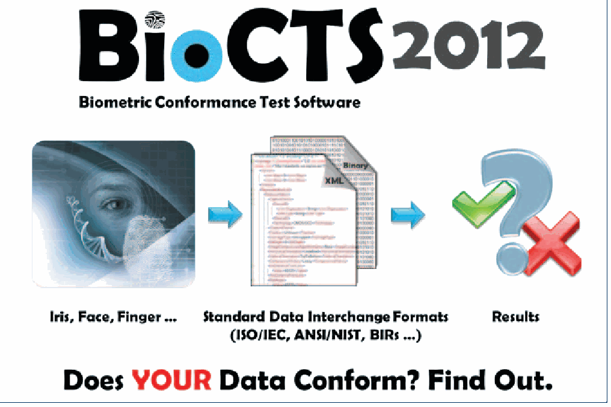

NIST Special Publication · PDF 原文抽出
Computer Security Division 2012 Annual Report
コンピュータセキュリティ部門2012年度年次報告書
NIST SP 800-165（Computer Security Division 2012 Annual Report）の英文と日本語訳を段落ごとに並べた閲覧用ページです。NIST情報技術研究所のコンピュータセキュリティ部門が2012会計年度に実施した研究、標準化、連邦政府等への支援活動をまとめます。 翻訳は非公式です。要件の確認にはNIST の正式版 PDFを参照してください。
PDF から抽出した原文は原本との照合待ちです。
PDF p.1: 抽出できる文字が少ないため OCR または画像の照合が必要
PDF p.2: 抽出できる文字が少ないため OCR または画像の照合が必要
PDF p.8: 二段組の可能性があるため読み順を原本と照合してください
PDF p.10: 二段組の可能性があるため読み順を原本と照合してください
PDF p.12: 二段組の可能性があるため読み順を原本と照合してください
PDF p.13: 二段組の可能性があるため読み順を原本と照合してください
PDF p.15: 二段組の可能性があるため読み順を原本と照合してください
PDF p.16: 二段組の可能性があるため読み順を原本と照合してください
PDF p.18: 二段組の可能性があるため読み順を原本と照合してください
PDF p.19: 二段組の可能性があるため読み順を原本と照合してください
PDF p.20: 二段組の可能性があるため読み順を原本と照合してください
PDF p.23: 二段組の可能性があるため読み順を原本と照合してください
PDF p.26: 二段組の可能性があるため読み順を原本と照合してください
PDF p.30: 二段組の可能性があるため読み順を原本と照合してください
PDF p.34: 二段組の可能性があるため読み順を原本と照合してください
PDF p.37: 二段組の可能性があるため読み順を原本と照合してください
PDF p.39: 二段組の可能性があるため読み順を原本と照合してください
PDF p.40: 二段組の可能性があるため読み順を原本と照合してください
PDF p.42: 二段組の可能性があるため読み順を原本と照合してください
PDF p.44: 二段組の可能性があるため読み順を原本と照合してください
PDF p.46: 二段組の可能性があるため読み順を原本と照合してください
PDF p.48: 二段組の可能性があるため読み順を原本と照合してください
PDF p.49: 二段組の可能性があるため読み順を原本と照合してください
PDF p.50: 二段組の可能性があるため読み順を原本と照合してください
PDF p.52: 二段組の可能性があるため読み順を原本と照合してください
PDF p.54: 二段組の可能性があるため読み順を原本と照合してください
PDF p.55: 二段組の可能性があるため読み順を原本と照合してください
PDF p.56: 二段組の可能性があるため読み順を原本と照合してください
PDF p.60: 二段組の可能性があるため読み順を原本と照合してください
PDF p.62: 二段組の可能性があるため読み順を原本と照合してください
PDF p.64: 二段組の可能性があるため読み順を原本と照合してください
PDF p.66: 二段組の可能性があるため読み順を原本と照合してください
PDF p.67: 二段組の可能性があるため読み順を原本と照合してください
PDF p.68: 二段組の可能性があるため読み順を原本と照合してください
PDF p.69: 二段組の可能性があるため読み順を原本と照合してください
PDF p.70: 二段組の可能性があるため読み順を原本と照合してください
PDF p.72: 二段組の可能性があるため読み順を原本と照合してください
PDF p.74: 二段組の可能性があるため読み順を原本と照合してください
PDF p.76: 二段組の可能性があるため読み順を原本と照合してください
PDF p.78: 二段組の可能性があるため読み順を原本と照合してください
PDF p.81: 二段組の可能性があるため読み順を原本と照合してください
PDF p.82: 二段組の可能性があるため読み順を原本と照合してください
PDF p.84: 二段組の可能性があるため読み順を原本と照合してください
PDF p.86: 二段組の可能性があるため読み順を原本と照合してください
PDF p.88: 二段組の可能性があるため読み順を原本と照合してください
PDF p.90: 二段組の可能性があるため読み順を原本と照合してください
PDF p.92: 二段組の可能性があるため読み順を原本と照合してください
PDF p.97: 抽出できる文字が少ないため OCR または画像の照合が必要
PDF p.98: 抽出できる文字が少ないため OCR または画像の照合が必要
NIST Special Publication 800-165
NIST特別刊行物 800-165
未レビュー訳Computer Security Div ision
コンピュータセキュリティ部門
未レビュー訳2012 Annual Report
2012年年次報告書
未レビュー訳Patrick O’Reilly, Editor Computer Security Division Information Technology Laboratory
Patrick O’Reilly（編集） コンピュータセキュリティ部門 情報技術研究所
未レビュー訳National Institute of Standards and Technology
米国国立標準技術研究所
未レビュー訳Lorie Richards Facilities Services Division Creative and Printing Service
Lorie Richards 施設サービス部 印刷サービス
未レビュー訳June 2013
2013年6月
未レビュー訳U.S. Department of Commerce Penny S. Pritzker, Secretary
米国商務省 Penny S. Pritzker長官
未レビュー訳National Institute of Standards and Technology
米国国立標準技術研究所
未レビュー訳Patrick D. Gallagher, Under Secretary of Commerce for Standards and Technology and Director
Patrick D. Gallagher 商務省標準技術担当次官兼所長
未レビュー訳Disclaimer: Any mention of commercial products is for information only; it does not imply NIST recommendation or endorsement, nor does it imply that the products mentioned are necessarily the best available for the purpose.
免責事項：商用製品への言及は情報提供のみを目的とする。NISTによる推奨または承認を意味するものではなく、言及した製品が目的に最適であることを意味するものでもない。
未レビュー訳National Institute of Standards and Technology Special Publication 800-165 Natl. Inst. Stand. Technol. Spec. Pub., 90 pages (June 2013) CODEN: NSPUE2
米国国立標準技術研究所 特別刊行物800-165 国立標準技術研究所 特別刊行物、90ページ（2013年6月） CODEN: NSPUE2
未レビュー訳Computer Security Division Annual Report - 2012
コンピュータセキュリティ部門 年次報告書 — 2012年
未レビュー訳Table of Contents
目次
未レビュー訳Table of Contents
目次
未レビュー訳Table of Contents
目次
未レビュー訳Table of Contents ........................................ iii Honors and Awards — 72
目次 …… iii 表彰および受賞 — 72
未レビュー訳Welcome Letter ...........................................1 2012 Publications Released and Abstracts — 73
歓迎の辞 …… 1 2012年に公開された刊行物と概要 — 73
未レビュー訳Division Organization ....................................2 Abstracts for Publications Released in FY2012 — 75
部門組織 …… 2 2012会計年度に公開された刊行物の概要 — 75
未レビュー訳Intro to CSD’s 5 Groups ..................................3 Federal Information Processing Standards (FIPS) — 75
CSDの5グループの紹介 …… 3 連邦情報処理標準（FIPS）— 75
未レビュー訳Cryptographic Technology Group .......................... 3 Special Publications — 76
暗号技術グループ …… 3 特別刊行物 — 76
未レビュー訳NIST Interagency Reports — 83
NIST省庁間報告書 — 83
未レビュー訳Security Components and Mechanisms Group — 4
セキュリティコンポーネントおよびメカニズムグループ — 4
未レビュー訳Ways to Engage with Our Division and NIST — 89
当部門およびNISTへの参加方法 — 89
未レビュー訳Secure Systems and Applications Group — 4
セキュアシステムおよびアプリケーショングループ — 4
未レビュー訳Guest Research Internships at NIST — 89
NISTの客員研究員インターンシップ — 89
未レビュー訳Security Outreach and Integration Group — 5
セキュリティアウトリーチおよび統合グループ — 5
未レビュー訳Details at NIST for Government or Military Personnel — 89
政府職員または軍関係者向けNISTの詳細 — 89
未レビュー訳Security Testing, Validation, and Measurement Group — 6
セキュリティ試験、検証および測定グループ — 6
未レビュー訳Federal Computer Security Program Managers’ Forum
連邦コンピュータセキュリティプログラム管理者フォーラム
未レビュー訳The Computer Security Division Implements
コンピュータセキュリティ部門は連邦情報セキュリティ管理法を実施する
未レビュー訳(FCSPM) — 89
（FCSPM）— 89
未レビュー訳the Federal Information Security Management Act
コンピュータセキュリティ部門による連邦情報セキュリティ管理法の実施
未レビュー訳of 2002 — 7
2002年法 — 7
未レビュー訳Security Research — 89
セキュリティ研究 — 89
未レビュー訳CSD’s Programs/Projects for FY2012 — 8
CSDの2012会計年度プログラム／プロジェクト — 8
未レビュー訳Funding Opportunities at NIST — 89
NISTの資金提供機会 — 89
未レビュー訳CSD Work in National and International Standards..... 8 Acknowledgements — 90
国家および国際標準におけるCSDの取り組み …… 8 謝辞 — 90
未レビュー訳Identity Management Standards within INCITS B10
INCITS B10およびISO JTC1/SC 17におけるID管理標準
未レビュー訳and ISO JTC1/SC 17 — 11
— 11
未レビュー訳Federal Information Security Management Act (FISMA)
連邦情報セキュリティ管理法（FISMA）
未レビュー訳Implementation Project — 12
実施プロジェクト — 12
未レビュー訳Biometric Standards and Associated Conformity
生体認証標準および関連する適合性
未レビュー訳Assessment Testing Tools — 15
評価試験ツール — 15
未レビュー訳Cybersecurity of Cyber Physical Systems — 18
サイバーフィジカルシステムのサイバーセキュリティ — 18
未レビュー訳Cybersecurity Research & Development (R&D) — 18
サイバーセキュリティ研究開発（R&D）— 18
未レビュー訳Security Aspects of Electronic Voting — 20
電子投票のセキュリティ — 20
未レビュー訳Health Information Technology Security — 21
医療情報技術のセキュリティ — 21
未レビュー訳ICT Supply Chain Risk Management — 21
ICTサプライチェーンリスク管理 — 21
未レビュー訳Nationwide Public Safety Broadband Network (NPSBN)
全国公共安全ブロードバンドネットワーク（NPSBN）
未レビュー訳Security — 23
のセキュリティ — 23
未レビュー訳Smart Grid Cybersecurity — 23
スマートグリッドのサイバーセキュリティ — 23
未レビュー訳Cybersecurity Awareness, Training, Education, and
サイバーセキュリティの意識向上、訓練、教育、および
未レビュー訳Outreach — 26
アウトリーチ — 26
未レビュー訳Cryptographic Technology — 34
暗号技術 — 34
未レビュー訳Validation Programs — 47
検証プログラム — 47
未レビュー訳Identity Management — 54
ID管理 — 54
未レビュー訳Research in Emerging Technologies — 55
新興技術の研究 — 55
未レビュー訳Strengthening Internet Security — 59
インターネットセキュリティの強化 — 59
未レビュー訳Access Control and Privilege Management — 60
アクセス制御および権限管理 — 60
未レビュー訳Advanced Security Testing and Measurements — 62
高度なセキュリティ試験および測定 — 62
未レビュー訳Page intentionally left blank
意図的に空白
未レビュー訳Computer Security Division Annual Report - 2012
コンピュータセキュリティ部門 年次報告書 — 2012年
未レビュー訳Welcome Letter Welcome Letter
歓迎の辞
未レビュー訳With the continued proliferation of information, the explosion of devices connecting to the expanding communication infrastructure and the evolving threat environment, the need for cybersecurity standards and best practices that address interoperability, usability and privacy continues to be critical for the Nation. The Computer Security Division (CSD), a component of the Information Technology Laboratory at the National Institute of Standards and Technology (NIST) is responsible for developing standards, guidelines, tests, and metrics for the protection of non-national security federal information and communication infrastructure. These standards, guidelines, tests, and metrics are also important resources for the private sector.
情報の継続的な普及、拡大する通信インフラに接続する機器の急増、そして変化する脅威環境を受け、相互運用性、使いやすさ、プライバシーに対応するサイバーセキュリティ標準およびベストプラクティスの必要性は、国にとって引き続き重要である。米国国立標準技術研究所（NIST）の情報技術研究所に属するコンピュータセキュリティ部門（CSD）は、国家安全保障以外の連邦情報・通信インフラを保護するための標準、指針、試験、測定基準を開発する責任を担う。これらは民間部門にとっても重要な資源である。
未レビュー訳In 2012, CSD aligned its resources to enable greater development and application of practical, innovative security technologies and methodologies, and to enhance our ability to address current and future computer and information security challenges in support of critical national and international priorities.
2012年、CSDは資源を再編し、実用的で革新的なセキュリティ技術および手法の開発・適用を拡大するとともに、国家および国際的な優先課題を支援するため、現在と将来のコンピュータ／情報セキュリティ課題に対応する能力を高めた。
未レビュー訳CSD extended its research and development agenda for high-quality, cost-effective security and privacy mechanisms to foster improved information security across the federal government and the global information security community. In 2012, NIST concluded the five-year SHA-3 Cryptographic Hash Algorithm Competition with the selection of KECCAK for standardization and worldwide adoption. The selection of this cryptographic hash algorithm, an indispensable component for the information and communication systems that support commerce in the modern era, confirmed NIST’s well-respected and trusted technical authority in this field.
CSDは、質が高く費用対効果に優れたセキュリティおよびプライバシーメカニズムの研究開発計画を拡充し、連邦政府全体および世界の情報セキュリティコミュニティにおける情報セキュリティの向上を図った。2012年、NISTは5年間にわたるSHA-3暗号学的ハッシュアルゴリズム競争を終え、標準化と世界的採用の対象としてKECCAKを選定した。現代の商取引を支える情報通信システムに不可欠なこのハッシュアルゴリズムの選定により、この分野におけるNISTの高く評価され信頼される技術的権威が確認された。
未レビュー訳A strong partnership with industry is vital to the success of our technical programs. In 2012, CSD engaged the international standards community on emerging technical standards to advance continuous monitoring capabilities and to further interoperability with commercially available tools. We also devised new security testing methodologies for smart phone software app functionality. Our research in hardware-enabled security continued with the development of guidelines on mechanisms that measure and report the security state of BIOS. Our research also continued to expand into the cybersecurity aspects of cyber-physical and embedded systems, and the mechanisms for enabling and protecting public safety communications.
技術プログラムの成功には、産業界との強固な連携が不可欠である。2012年、CSDは新興技術標準に関する国際標準化コミュニティと連携し、継続的監視能力を高め、市販ツールとの相互運用性をさらに推進した。また、スマートフォンのソフトウェアアプリ機能に対する新たなセキュリティ試験手法を考案した。ハードウェア対応セキュリティの研究では、BIOSのセキュリティ状態を測定し報告するメカニズムに関する指針を策定した。さらに、サイバーフィジカルシステムと組込みシステムのサイバーセキュリティ、および公共安全通信を可能にし保護するメカニズムへ研究を拡大した。
未レビュー訳Our ability to interact with the broad federal community continues to be critical to our success. This interaction helps to ensure that our research is consistent with national objectives related to or impacted by information security. This interaction is most prominent in our strengthened collaborations with the Department of Defense, the Intelligence Community, and the Committee on National Security Systems to establish a common foundation for information security across the federal government. The release of Special Publication 800-30, Guide for Conducting Risk Assessments, developed by the Joint Task Force Transformation Initiative Interagency Working Group, is not only leading to more consistent ways to assess risks, but is also enabling more effective risk management and facilitating greater sharing of information across organizational boundaries.
連邦政府コミュニティ全体と交流する能力は、引き続き成功に不可欠である。この交流によって、情報セキュリティに関係する、または影響を受ける国家目標と研究の整合性を確保できる。特に、国防総省、情報機関コミュニティ、国家安全保障システム委員会との連携を強化し、連邦政府全体で情報セキュリティの共通基盤を確立している。合同タスクフォース変革イニシアチブ省庁間作業部会が策定したSP 800-30「リスク評価実施ガイド」の公開は、リスク評価の一貫性を高めるだけでなく、より効果的なリスク管理を可能にし、組織の境界を越えた情報共有を促進する。
未レビュー訳For many years, the Computer Security Division (CSD), in collaboration with our global partners from government, industry, and academia, has made great contributions to help secure the nation’s critical information and infrastructure. We look forward to furthering these relationships in 2013 as we lead in examining the diverse cybersecurity aspects of a broad set of areas, including supply chain risk management; security analytics; cloud, mobile, and privacy-enhancing technologies; hardware-enabled security; and cyber-physical and embedded systems.
コンピュータセキュリティ部門（CSD）は、政府、産業界、学術界の世界各地のパートナーと連携し、長年にわたり国の重要な情報とインフラの保護に大きく貢献してきた。2013年も、サプライチェーンリスク管理、セキュリティ分析、クラウド／モバイル／プライバシー強化技術、ハードウェア対応セキュリティ、サイバーフィジカルシステム、組込みシステムなど幅広い分野の多様なサイバーセキュリティ課題を検討し、連携を発展させていく。
未レビュー訳Donna Dodson
Donna Dodson
未レビュー訳Chief, Computer Security Division & Deputy Chief Cybersecurity Advisor
コンピュータセキュリティ部門長、サイバーセキュリティ副顧問
未レビュー訳Welcome Letter
歓迎の辞
未レビュー訳Division Organization Division Organization
部門組織
未レビュー訳原本の表画像

Donna Dodson
Donna Dodson
未レビュー訳Matthew Scholl
Matthew Scholl
未レビュー訳Chief, Computer Security Division, Acting
コンピュータセキュリティ部門長（代行）
未レビュー訳Deputy Chief, Computer Security Division
コンピュータセキュリティ部門副長
未レビュー訳Associate Director & Acting Chief Cybersecurity
准所長兼サイバーセキュリティ担当代理
未レビュー訳and Acting Associate Director of Operations,
運営担当副所長（代行）、
未レビュー訳Advisor, Cybersecurity Advisor Office,
サイバーセキュリティ顧問室の顧問（代行）、
未レビュー訳National Cybersecurity Center of Excellence
国立サイバーセキュリティ・エクセレンス・センター
未レビュー訳and Acting Executive Director, National Cybersecurity Center of Excellence
および同センター事務局長（代行）
未レビュー訳GROUP MANAGERS
グループマネージャー
未レビュー訳Tim Polk
Tim Polk
未レビュー訳David Ferraiolo
David Ferraiolo
未レビュー訳Cryptographic Technology
暗号技術
未レビュー訳Secure Systems and Applications
セキュアシステムおよびアプリケーション
未レビュー訳Group
グループ
未レビュー訳Group
グループ
未レビュー訳Mark (Lee) Badger
Mark (Lee) Badger
未レビュー訳Security Components and Mechanisms Group
セキュリティコンポーネントおよびメカニズムグループ
未レビュー訳Kevin Stine
Kevin Stine
未レビュー訳Michael Cooper
Michael Cooper
未レビュー訳Security Outreach
セキュリティアウトリーチ
未レビュー訳Security Testing, Validation
セキュリティ試験、検証
未レビュー訳and Integration Group
および統合グループ
未レビュー訳and Measurement Group
および測定グループ
未レビュー訳Computer Security Division Annual Report - 2012
コンピュータセキュリティ部門 年次報告書 — 2012年
未レビュー訳Introduction to CSD’s 5 Groups Intro to CSD’s 5 Groups
CSDの5グループの紹介
未レビュー訳CTG continued to make an impact in the field of
CTGは連邦政府内外の暗号技術分野に貢献し続けた。
未レビュー訳Cryptographic Technology Group
暗号技術グループ
未レビュー訳cryptography, both within and outside the federal government, by collaborating with national and
連邦政府内外で、国家機関および
未レビュー訳Mission Statement:
使命：
未レビュー訳international agencies, academic and research
国際機関、学術・研究機関、標準化団体と連携し、
未レビュー訳Research, develop, engineer, and standardize
暗号アルゴリズム、手法、プロトコルを研究、開発、設計し、標準化する。
未レビュー訳organizations, and standards bodies to develop
相互運用可能なセキュリティ標準および指針を策定する。連邦機関の協力者には国家安全保障局（NSA）、国家電気通信情報庁（NTIA）、一般調達局（GSA）、選挙支援委員会（EAC）、連邦投票支援プログラム（FVAP）が含まれる。国際機関にはカナダ通信保安局、オーストラリア国防信号局およびCentrelinkが含まれる。国内外の標準化団体には、金融業界標準を扱う米国規格委員会（ASC）X9、国際標準化機構（ISO）、電気電子技術者協会（IEEE）、
未レビュー訳cryptographic algorithms, methods, and protocols.
組織、および標準化団体と協力して
未レビュー訳interoperable security standards and guidelines. Federal agency collaborators include the National
暗号アルゴリズム、手法、プロトコルを標準化する。
未レビュー訳Overview: The Cryptographic Technology Group’s (CTG) work Security Agency (NSA), the National Telecommunications in cryptographic mechanisms addresses topics such and Information Administration (NTIA), the General as hash algorithms, symmetric and asymmetric Services Administration (GSA), the Election Assistance cryptographic techniques, key management, Commission (EAC) and the Federal Voting Assistance authentication, and random number generation. Program (FVAP). International agencies include the Strong cryptography is used to improve the security Communications Security Establishment of Canada, of information systems and the information they and Australia’s Defense Signals Agency and Centrelink. process. Users then take advantage of the availability National and international standards bodies include of secure applications in the marketplace made the American Standards Committee (ASC) X9 possible by the appropriate use of standardized, high- (financial industry standards), the International
概要：暗号技術グループ（CTG）は、ハッシュアルゴリズム、共通鍵・公開鍵暗号技術、鍵管理、認証、乱数生成などの暗号メカニズムを扱う。強力な暗号技術は情報システムと処理対象情報のセキュリティ向上に用いられる。標準化された高品質な暗号技術を適切に使うことで、安全なアプリケーションが市場で利用可能になる。
未レビュー訳Organization for Standardization (ISO), the Institute
国際標準化機構（ISO）、
未レビュー訳quality cryptography.
高品質な暗号技術。
未レビュー訳of Electrical and Electronics Engineers (IEEE), the
電気電子技術者協会（IEEE）、
未レビュー訳CTG continued its work in a number of cryptographic
CTGは次のような複数の暗号分野で作業を続けた。
未レビュー訳Internet Engineering Task Force (IETF), the American
インターネット技術タスクフォース（IETF）および米国規格協会（ANSI）、
未レビュー訳areas, including:
CTGの取り組み分野には次を含む。
未レビュー訳National Standards Institute (ANSI), and the Trusted
米国規格協会（ANSI）およびTrusted
未レビュー訳Specifying and using cryptographic algorithms; Computing Group (TCG). Industry collaborators
暗号アルゴリズムの規定と利用。Trusted Computing Group（TCG）。産業界の協力者には、
未レビュー訳include Intel, Dell, Hewlett Packard, VeriSign,
Intel、Dell、Hewlett Packard、VeriSignなどが含まれる。
未レビュー訳Revising Federal Information Processing
・連邦情報処理標準（FIPS）の改訂
未レビュー訳Certicom, Entrust Technologies, Microsoft, Orion
Certicom、Entrust Technologies、Microsoft、Orion
未レビュー訳Standard(FIPS)140-2,SecurityRequirements
連邦情報処理標準（FIPS）140-2「暗号モジュールのセキュリティ要件」
未レビュー訳Security, RSA Security, Voltage Security, Verifone,
Security、RSA Security、Voltage Security、Verifone、
未レビュー訳for Cryptographic Modules;
暗号モジュールのための標準；
未レビュー訳Juniper, NTRU Cryptosystems, and Cisco. Academic
Juniper、NTRU Cryptosystems、Cisco。学術
未レビュー訳Developing hardware roots of trust to support
・信頼できるハードウェアルートを開発し、
未レビュー訳collaborators include Katholieke Universiteit Leuven
協力機関には、ルーヴェン・カトリック大学
未レビュー訳reliable device authentication and establish
信頼性の高いデバイス認証を支援し、
未レビュー訳(KU Leuven), George Mason University, Danmarks
（KU Leuven）、ジョージ・メイソン大学、デンマーク
未レビュー訳new bases for system measurement;
システム測定の新たな基盤を確立する；
未レビュー訳Tekniske Universitet, George Washington University,
工科大学、ジョージ・ワシントン大学、
未レビュー訳Supporting the Smart Grid Interoperability
・スマートグリッド相互運用性パネルを支援し、
未レビュー訳SDU Odense (University of Southern Denmark),
南デンマーク大学のSDUオーデンセ校、
未レビュー訳Panel by assessing the security of
セキュリティを評価することで、
未レビュー訳University of California Davis, Malaga University, and
カリフォルニア大学デービス校、マラガ大学、
未レビュー訳cryptographic methods used in the security protocols for the communication and Yale University. Academic and research organizations management networks used by public utility include the International Association for Cryptologic companies, and in developing security Research (IACR), the European Network of Excellence guidelines for the Smart Grid;
電力公益事業者が使用する通信・管理ネットワーク向けセキュリティプロトコルで用いられる暗号方式の安全性を評価し、スマートグリッドのセキュリティ指針を策定する。学術・研究機関には国際暗号研究協会（IACR）が含まれる。
未レビュー訳in Cryptology (ECRYPT) II, and the Japanese
暗号学（ECRYPT）II、および日本の
未レビュー訳Advising the FIPS 140-2 Validation Program Cryptography Research and Evaluation Committees in the validation of cryptographic algorithms (CRYPTREC). and cryptographic modules; and
・FIPS 140-2検証プログラムに助言し、暗号アルゴリズムと暗号モジュールの検証を支援する。また、日本暗号技術検討会（CRYPTREC）にも参加する。
未レビュー訳Group Manager:
グループマネージャー：
未レビュー訳Supporting NIST’s Personal Identity
NISTの個人識別
未レビュー訳Mr. William (Tim) Polk
William（Tim）Polk
未レビュー訳Verification (PIV) project that was initiated
検証（PIV）プロジェクトは開始された
未レビュー訳william.polk@nist.gov
william.polk@nist.gov
未レビュー訳in response to the Homeland Security
国土安全保障
未レビュー訳(301) 975-3348
(301) 975-3348
未レビュー訳Presidential Directive 12 (HSPD-12). A major highlight of this year is the completion of the SHA-3 Cryptographic Hash Algorithm Competition and the selection of KECCAK as the SHA-3 algorithm.
大統領指令12（HSPD-12）への対応として。SHA-3暗号ハッシュアルゴリズム・コンペティションを完了し、標準化するアルゴリズムとしてKECCAKを選定したことが、今年の大きな成果である。
未レビュー訳Introduction to Computer Security Division’s 5 Groups
コンピュータセキュリティ部門の5グループの紹介
未レビュー訳
Arlington, University of North Texas, University of
アーリントン校、ノーステキサス大学、
未レビュー訳Security Components and Mechanisms
セキュリティコンポーネント・メカニズム
未レビュー訳Maryland-Baltimore County (UMBC), North Carolina
メリーランド大学ボルティモア郡校（UMBC）、ノースカロライナ
未レビュー訳Group
グループ
未レビュー訳State University, Johns Hopkins Applied Physics Lab (APL), National Aeronautics and Space Administration
州立大学、ジョンズ・ホプキンス応用物理研究所（APL）、米国航空宇宙局
未レビュー訳Mission Statement:
ミッション：
未レビュー訳(NASA), U.S. Air Force T&E, Massachusetts Institute of
（NASA）、米空軍の試験・評価部門（T&E）、マサチューセッツ工科
未レビュー訳Research, develop, and standardize foundational
研究、開発し、標準化する基盤となる
未レビュー訳Technology (MIT) Lincoln Labs, the Defense Advanced
大学（MIT）リンカーン研究所、国防高等研究計画局
未レビュー訳security mechanisms, protocols, and services.
セキュリティメカニズム、プロトコル、サービス。
未レビュー訳Research Projects Agency (DARPA), and Carnegie Mellon University (CMU).
（DARPA）、カーネギーメロン大学（CMU）。
未レビュー訳Overview: The Security Components and Mechanisms Group’s
概要：セキュリティコンポーネント・メカニズムグループの
未レビュー訳Example successes from this work include a second
この取り組みの成果の例には、第2版、
未レビュー訳(SCMG) security research focuses on the development
（SCMG）のセキュリティ研究は、
未レビュー訳revision of the NIST Special Publication 800-61,
NIST特別刊行物800-61の改訂版、
未レビュー訳and management of foundational building-block
基盤となる構成要素の開発と管理が含まれる。
未レビュー訳Computer Security Incident Handling Guide, the
『コンピュータセキュリティ・インシデント対応ガイド』、
未レビュー訳security mechanisms and techniques that can be
セキュリティメカニズムと技術を対象とし、それらは
未レビュー訳Advanced Combinatorial Testing System (ACTS)
高度組合せテストシステム（ACTS）の
未レビュー訳integrated into a wide variety of mission-critical
米国の幅広いミッションクリティカルな
未レビュー訳software and documentation, the NIST BioCTS 2012
ソフトウェアと文書、NIST BioCTS 2012
未レビュー訳U.S. information systems. The group’s work spans a
情報システムに統合できる。グループの業務は、
未レビュー訳conformance testing tool and test assertions, a design
適合性試験ツールとテストアサーション、
未レビュー訳spectrum from near-term hardening and improvement
短期的な強化・改善から、
未レビュー訳for continuous monitoring systems, and a continuous
継続的監視システム向けの設計と、継続的な
未レビュー訳to the design and analysis of next-generation, leap-
次世代の飛躍的なセキュリティ機能の設計・分析へと広がる。
未レビュー訳monitoring prototype system.
依存する。継続的監視の試作システム。
未レビュー訳ahead security capabilities. Computer security depends fundamentally on the level of trust that can Group Manager: be established for computer software and systems. Mr. Mark (Lee) Badger This work, therefore, focuses strongly on assurance- mark.badger@nist.gov building activities ranging from the analysis of software (301) 975-3176 configuration settings to advanced trust architectures to testing tools that surface flaws in software modules. Due to the often manual and costly nature
先駆的なセキュリティ機能。コンピュータセキュリティは、コンピュータソフトウェアやシステムに対して確立できる信頼の水準に根本的に依存する。グループマネージャー：Mark（Lee）Badger、mark.badger@nist.gov、(301) 975-3176。このため、本グループは、ソフトウェア構成設定の分析から高度な信頼アーキテクチャ、ソフトウェアモジュールの欠陥を明らかにする試験ツールまで、保証構築活動に重点を置いている。現行手法による保証構築は手作業が多く、コストも高いため、
未レビュー訳
Secure Systems and Applications Group
セキュアシステム・アプリケーショングループ
未レビュー訳of assurance building using current techniques, this work focuses strongly on increasing the applicability
現在の保証構築手法について、本研究では自動化の適用範囲を広げることに重点を置く。
未レビュー訳Mission Statement:
ミッション：
未レビュー訳and effectiveness of automated techniques wherever
可能な場合は常に、自動化手法の有効性も高める。
未レビュー訳Integrate and apply security technologies, standards,
セキュリティ技術と標準を統合し、適用する。
未レビュー訳feasible. SCMG conducts research collaboratively with
可能な範囲で実施する。SCMGは政府、産業界、
未レビュー訳and guidelines for computing platforms and information
コンピューティング基盤および情報
未レビュー訳government, industry, and academia. The outputs of
学界と共同で研究を行う。その成果には、
未レビュー訳systems.
システム向けの指針も含まれる。
未レビュー訳this research consist of prototype systems, software tools, demonstrations, NIST Special Publications and
研究成果は、試作システム、ソフトウェアツール、実証、NIST特別刊行物、
未レビュー訳Overview:
概要：
未レビュー訳NIST Interagency Reports, conference papers, and
NIST省庁間報告書、会議論文、
未レビュー訳The Secure Systems and Applications Group’s (SSAG)
セキュアシステム・アプリケーショングループ（SSAG）の
未レビュー訳journal papers.
学術誌論文から成る。
未レビュー訳security research focuses on identifying emerging and
セキュリティ研究では、新たな優先度の高い技術を特定するとともに、
未レビュー訳SCMGworksonavarietyoftopics,suchasspecifications high-priority technologies, and on developing security for the automated exchange of security information solutions that will have a high impact on the U.S. between systems, computer security incident handling critical information infrastructure. The group conducts guidelines, formulation of high-assurance software research and development on behalf of government configuration settings, hardware roots of trust for and industry from the earliest stages of technology mobile devices, combinatorial testing techniques, development through proof-of-concept, reference and conformity assessment of software implementing prototype implementations, and demonstrations. SSAG biometric standards, and adoption of Internet Protocol works to transfer new technologies to industry, produce Version 6 and Internet Protocol security extensions. new standards and guidance for federal agencies and SCMG collaborates extensively with government, industry, and develop tests, test methodologies, and academia, and the private sector. In the last year, assurance methods. collaborations have included the University of Texas
SCMGは、システム間でセキュリティ情報を自動交換する仕様、コンピュータセキュリティ・インシデント対応指針、高保証なソフトウェア構成設定の策定、モバイルデバイス向けハードウェアルートオブトラスト、組合せテスト技術、生体認証標準を実装するソフトウェアの適合性評価、IPv6およびIPsec拡張の採用など、幅広いテーマに取り組む。政府、産業界、学界などと広く連携し、直近の協力先にはテキサス大学アーリントン校、ノーステキサス大学、メリーランド大学ボルティモア郡校（UMBC）、ノースカロライナ州立大学、ジョンズ・ホプキンス応用物理研究所（APL）、米国航空宇宙局（NASA）、米空軍試験・評価部門、MITリンカーン研究所、国防高等研究計画局（DARPA）、カーネギーメロン大学（CMU）が含まれる。さらにSSAGは、米国の重要情報インフラに大きな効果をもたらすセキュリティソリューションを開発する。政府と産業界のため、技術開発の初期段階から概念実証、参照実装の試作、実証まで研究開発を行う。新技術の産業界への移転、連邦機関向け標準・指針の策定、試験と試験方法、保証手法の開発にも取り組む。共同研究先にはテキサス大学アーリントン校などが含まれる。
未レビュー訳Computer Security Division Annual Report - 2012
コンピュータセキュリティ部門年次報告書—2012年
未レビュー訳
Some of the many topics the group investigates Security Outreach and Integration Group include mobile device security, cloud computing and virtualization, identity management, access
グループが調査するテーマには、モバイルデバイスのセキュリティ、クラウドコンピューティングと仮想化、ID管理、アクセス制御などがある。セキュリティ・アウトリーチ統合グループ
未レビュー訳Mission Statement:
ミッション：
未レビュー訳control and authorization management, and software Develop, integrate, and promote the mission-assurance. This research helps to meet federal specific application of information security standards, information security requirements that may not be fully guidelines, best practices, and technologies. addressed by existing technology. SSAG collaborates extensively with government, academia, and private Overview: sector entities, including FY2012 collaborations with The U.S. economy, citizens, and government rely
アクセス制御・認可管理、ソフトウェアのミッション保証も扱う。この研究は既存技術で十分に対応できない連邦政府の情報セキュリティ要件を満たすのに役立つ。SSAGは政府、学界、民間部門と幅広く協力している。概要：米国の経済、市民、政府は
未レビュー訳on information technology. Protecting information
情報技術に依存している。情報
未レビュー訳the National Security Agency (NSA), the Department
国家安全保障局（NSA）、
未レビュー訳technology, including its information and the
技術とその情報および
未レビュー訳of Defense (DoD), the Defense Advanced Research
国防総省（DoD）、国防高等研究計画局（DARPA）、
未レビュー訳information infrastructure, is critical for the nation.
情報インフラを含む技術を保護することは、国家にとって極めて重要である。
未レビュー訳Projects Agency (DARPA), the Department of Homeland
国防高等研究計画局（DARPA）、国土安全保障省（DHS）、
未レビュー訳As part of the Computer Security Division, the Security
コンピュータセキュリティ部門の一員であるセキュリティ
未レビュー訳Security (DHS), the White House Communications
（DHS）、ホワイトハウス通信局（WHCA）、
未レビュー訳Outreach and Integration Group (SOIG) leverages its
アウトリーチ統合グループ（SOIG）は、その
未レビュー訳Agency (WHCA), George Mason University, North
通信局（WHCA）、ジョージ・メイソン大学、ノース
未レビュー訳broad cybersecurity and risk management expertise to
広範なサイバーセキュリティおよびリスク管理の知見を生かして
未レビュー訳Carolina State University, Microsoft Corporation, VM develop, integrate, and promote security standards, Ware, Symantec, Mobile System 7, One Enterprise guidelines, tools, technologies, methodologies, tests,
ノースカロライナ州立大学、Microsoft Corporation、VM Ware、Symantec、Mobile System 7、One Enterpriseと連携する。SOIGはセキュリティ標準、指針、ツール、技術、方法論、試験
未レビュー訳and measurements to address critical cybersecurity
および測定手法を開発・統合・推進し、重要なサイバーセキュリティ
未レビュー訳Consulting Group, and MITRE.
Consulting Group、MITRE。
未レビュー訳needs in many areas of national and international
国内外の多くの重要分野におけるニーズに応える。
未レビュー訳Example successes from this work include tools importance. for access control policy testing; new concepts in
この取り組みの成果例には、アクセス制御ポリシーを試験するツールや、アクセス制御とポリシー適用に関する新しい概念がある。
未レビュー訳Major initiatives in this area include the development
この分野の主な取り組みには、
未レビュー訳access control and policy enforcement; methods for
包括的なポリシー適用を実現する方法、
未レビュー訳of standards, guidelines, tools, technologies, and
標準、指針、ツール、技術、
未レビュー訳achieving comprehensive policy enforcement and
および企業データサービス間でのデータ相互運用性を実現する手法、
未レビュー訳methodologies to enable the security and risk
情報通信技術（ICT）サプライチェーンのセキュリティとリスク管理を可能にする手法、
未レビュー訳data interoperability across enterprise data services;
モバイルデバイス（スマートフォン）アプリケーションのセキュリティ試験方法、
未レビュー訳management of the Information and Communications
情報通信技術の
未レビュー訳test methods for mobile device (smart phone)
アプリケーションのセキュリティ試験方法、
未レビュー訳Technologies (ICT) supply chain; Smart Grid; Electronic
（ICT）サプライチェーン、スマートグリッド、電子投票、サイバーフィジカルシステムと産業用制御システム、
未レビュー訳application security; validation of cryptography for
スマートフォン向け暗号技術の検証、
未レビュー訳Voting; Cyber Physical and Industrial Control Systems;
スマートフォンのセキュリティに関する政府横断の技術交流会も複数開催した。連邦政府のクラウドコンピューティング施策では、SSAGがNISTセキュリティ作業部会を主導し、
未レビュー訳smart phones, and several government wide technical Health Information Technology; National Public Safety exchange meetings on mobile device security. For the Broadband Network, and the Federal Information federal government’s cloud computing initiatives, Security Management Act (FISMA) implementation SSAG led the NIST Security Working Group’s task of program. The group also serves as lead for the National
医療情報技術、全国公共安全ブロードバンドネットワーク（NPSBN）、連邦情報セキュリティ管理法（FISMA）の実施プログラムも対象となる。本グループは国家サイバーセキュリティ教育イニシアチブの主導を担う。クラウド施策では、SSAGがNISTセキュリティ作業部会を主導し、
未レビュー訳Initiative for Cybersecurity Education (NICE), and
（NICE）を担当し、
未レビュー訳developing the NIST Cloud Computing - Security
NISTクラウドコンピューティング・セキュリティ
未レビュー訳provides extended outreach initiatives to stakeholders
連邦、州、地方政府、産業界、
未レビュー訳Reference Architecture working document, and
参照アーキテクチャの作業文書を作成し、さらにホワイトペーパーの策定にも
未レビュー訳across federal, state, and local governments, industry,
連邦、州、地方政府、産業界、
未レビュー訳contributed to the development of the white paper
ホワイトペーパーの策定に
未レビュー訳academia, small businesses, and the public.
学界、中小企業、一般市民に働きかける。
未レビュー訳“Challenging Security Requirements for the USG Cloud Computing Adoption.” To improve access to new Key to the group’s success is the ability to interact technologies, SSAG chaired, edited, and participated with a broad constituency – government, industry, in the development of a wide variety of national and academia, and the public – in order to ensure that
「米国政府によるクラウドコンピューティング採用に向けた課題となるセキュリティ要件」と題する。新技術へのアクセスを改善するため、SSAGは国内の多様なセキュリティ標準の策定を主導し、編集し、参加した。グループの成功の鍵は、政府、産業界、学界、一般市民など幅広い関係者と対話する能力にある。それにより、
未レビュー訳SOIG’s program is consistent with national objectives
SOIGのプログラムが、情報セキュリティに関連する、またはその影響を受ける国の目標と
未レビュー訳international security standards.
国際セキュリティ標準の策定に参加した。
未レビュー訳related to or impacted by information security. Through collaboration, cooperation, and open and
整合するようにする。協力、連携、開かれた
未レビュー訳Group Manager:
グループマネージャー：
未レビュー訳transparent public engagement, SOIG works to address
透明性のある公的な関与を通じて、SOIGは
未レビュー訳Mr. David Ferraiolo
David Ferraiolo
未レビュー訳these critical cybersecurity challenges, enable greater
これらの重要なサイバーセキュリティ課題に取り組み、より大きな
未レビュー訳david.ferraiolo@nist.gov
david.ferraiolo@nist.gov
未レビュー訳U.S. industrial competitiveness, and facilitate the
米国の産業競争力を高め、
未レビュー訳(301) 975-3046
(301) 975-3046
未レビュー訳practical implementation of scalable and sustainable information security standards and practices.
拡張性と持続可能性を備えた情報セキュリティ標準および実務の実用的な実装を促進する。
未レビュー訳Group Manager: Mr. Kevin Stine kevin.stine@nist.gov (301) 975-4483
グループマネージャー：Kevin Stine氏 kevin.stine@nist.gov (301) 975-4483
未レビュー訳report and test evidence, the Validation Program
原文更新後、再確認待ち
Security Testing, Validation, and
セキュリティ試験、検証および
未レビュー訳then validates the implementation under test. The
試験対象の実装を検証する。
未レビュー訳Measurement Group
測定グループ
未レビュー訳validations awarded to vendor implementations are publicly posted on the NIST website.
ベンダー実装に対して付与された検証結果は、NISTウェブサイトで公開される。
未レビュー訳Mission Statement: Advance information security testing, measurement
使命：情報セキュリティの試験・測定
未レビュー訳Group Manager:
グループマネージャー：
未レビュー訳science, and conformance.
科学および適合性を推進する。
未レビュー訳Mr. Michael Cooper michael.cooper@nist.gov
Michael Cooper氏 michael.cooper@nist.gov
未レビュー訳Overview:
概要：
未レビュー訳(301) 975-8077
(301) 975-8077
未レビュー訳Federal agencies, industry, and the public rely on cryptography for the protection of information and communications used in electronic commerce, critical infrastructure, and other application areas. At the core of all products offering cryptographic services is the cryptographic module. Cryptographic modules, which contain cryptographic algorithms, are used in products and systems to provide security services such as confidentiality, integrity, and authentication. Although cryptography is used to provide security, weaknesses such as poor design or weak algorithms can render a product insecure and place highly sensitive information at risk. When protecting their sensitive data, federal government agencies require a minimum level of assurance that cryptographic products meet their security requirements. Also, federal agencies are required to use only tested and validated cryptographic modules. Adequate testing and validation of the cryptographic module and its underlying cryptographic algorithms against established standards is essential to provide security assurance.
連邦機関、産業界、公衆は、電子商取引、重要インフラ、その他の用途で使われる情報と通信を保護するため、暗号技術に依存する。暗号サービスを提供する製品の中核には暗号モジュールがある。暗号アルゴリズムを含む暗号モジュールは、機密性、完全性、認証などのセキュリティサービスを提供する。設計不良や脆弱なアルゴリズムは、製品を安全でなくし、機密情報を危険にさらし得る。連邦機関は機密データを保護するため、暗号製品がセキュリティ要件を満たすという最低限の保証を必要とする。また、試験・検証済みの暗号モジュールのみを使うことが求められる。確立された標準に照らし、暗号モジュールとその基盤となるアルゴリズムを適切に試験・検証することは、セキュリティ保証に不可欠である。
未レビュー訳The group’s testing-focused activities include validating cryptographic algorithm implementations, cryptographic modules, and Security Content Automation Protocol (SCAP)-compliant products; developing test suites and test methods; providing implementation guidance and technical support to industry forums; and conducting education, training, and outreach programs.
同グループの試験活動には、暗号アルゴリズム実装、暗号モジュール、SCAP準拠製品の検証、試験スイートと試験方法の開発、業界フォーラムへの実装指針・技術支援の提供、教育、訓練、アウトリーチが含まれる。
未レビュー訳All of the Security Testing, Validation, and Measurement Group’s validation programs work together with independent Cryptographic and Security Testing laboratories that are accredited by the NIST National Voluntary Laboratory Accreditation Program (NVLAP). Based on the independent laboratory test
セキュリティ試験、検証および測定グループのすべての検証プログラムは、NIST国家自主試験所認定プログラム（NVLAP）認定の独立した暗号・セキュリティ試験所と連携する。独立試験所による試験結果に基づき、
未レビュー訳Computer Security Division Annual Report - 2012
コンピュータセキュリティ部門 年次報告書 — 2012年
未レビュー訳The CSD Implements FISMA of 2002 The Computer Security Division Implements the Federal Information Security Management Act of 2002
コンピュータセキュリティ部門による2002年連邦情報セキュリティ管理法（FISMA）の実施
未レビュー訳The E-Government Act, Public Law 107-347, passed by updated guidelines for selecting and specifying the 107th Congress and signed into law by the President in security controls for federal information systems December2002,recognizedtheimportanceofinformation and organizations; security to the economic and national security interests Provided assistance to agencies and the of the United States. Title III of the E-Government Act, private sector: conducted ongoing, substantial entitled the Federal Information Security Management reimbursable and non-reimbursable assistance Act (FISMA) of 2002, included duties and responsibilities to the government and private sector, including for the National Institute of Standards and Technology, many outreach efforts through the Federal Information Technology Laboratory, Computer Security Information Systems Security Educators’ Division (CSD). In 2012, CSD addressed its assignments Association (FISSEA), the Federal Computer through the following activities:
2002年12月、第107議会で可決され大統領が署名したE-Government Act（公法107-347）は、情報セキュリティが米国の経済および国家安全保障に重要であると認めた。同法第III編のFISMAは、NIST、情報技術研究所、コンピュータセキュリティ部門（CSD）の職務と責任を定めた。2012年、CSDは次の活動を通じて任務に取り組んだ。
未レビュー訳Security Program Managers’ Forum, and the Small Business Information Security Corner;
連邦コンピュータセキュリティプログラム管理者フォーラム、中小企業情報セキュリティ・コーナーを通じた活動を含む。
未レビュー訳IssuedonefinalandtwodraftFederalInformation
最終版の連邦情報処理標準（FIPS）1件と草案2件を発行した。
未レビュー訳Reviewed security policies and technologies
民間部門および国家安全保障システムのセキュリティ方針・技術を審査した。
未レビュー訳Processing Standards (FIPS) that specify hash
これらの標準は、ハッシュ値の生成に用いる
未レビュー訳from the private sector and national security
連邦機関での利用候補として、
未レビュー訳algorithms used to generate message digests,
メッセージダイジェスト用アルゴリズム、
未レビュー訳systems for potential federal agency use:
デジタル署名に用いるアルゴリズム、
未レビュー訳algorithms used to generate digital signatures,
連邦機関のセキュリティ実務、官民のセキュリティ実務、
未レビュー訳hosted a repository of federal agency security
共通の連邦職員および
未レビュー訳and technical requirements for a common
連邦職員と請負業者の識別標準に関する技術要件、
未レビュー訳practices, public/private security practices,
IT製品のセキュリティ構成チェックリストをホストする
未レビュー訳identification standard for federal employees
請負業者を対象とする。
未レビュー訳and security configuration checklists for IT
リポジトリを運用した。カナダ政府通信保安局と共に、
未レビュー訳and contractors;
NIST特別刊行物（SP）の草案および最終版を28件発行した。これらは管理、運用、
未レビュー訳products. Continued to lead, in conjunction with
暗号モジュール検証プログラム（CMVP）を引き続き主導した。
未レビュー訳Issued 28 draft and final NIST Special Publications
技術的なセキュリティ指針を提供する。
未レビュー訳the Government of Canada’s Communications
セキュリティ確立機関と連携して。
未レビュー訳(SPs) that provide management, operational,
暗号モジュール検証プログラム（CMVP）の作業を継続した。
未レビュー訳Security Establishment, the Cryptographic
セキュリティ確立機関と連携して。
未レビュー訳and technical security guidelines in areas such
技術面のセキュリティ指針には、BIOSの管理・測定、鍵
未レビュー訳Module Validation Program (CMVP). The Common
管理と導出、メディアのサニタイズ、
未レビュー訳as BIOS management and measurement, key
電子認証、セキュリティ自動化、
未レビュー訳Criteria Evaluation and Validation Scheme
Bluetoothおよび無線プロトコル、インシデント
未レビュー訳management and derivation, media sanitization,
対応、侵入検知、マルウェア、
未レビュー訳(CCEVS) and CMVP facilitate security testing of
クラウドコンピューティング、公開鍵基盤、
未レビュー訳electronic authentication, security automation,
リスク評価などが含まれる。さらに、草案および最終版の報告書12件を発行した。
未レビュー訳IT products usable by the federal government;
情報セキュリティおよびプライバシー諮問委員会（ISPAB）に対し、
未レビュー訳Bluetooth and wireless protocols, incident
草案標準・指針および情報セキュリティ、プライバシーの課題に関する提言を求めた。
未レビュー訳Solicited recommendations of the Information
草案標準・指針に関する提言を要請し、
未レビュー訳handling and intrusion detection, malware,
情報セキュリティおよびプライバシーの課題を扱った。
未レビュー訳Security and Privacy Advisory Board (ISPAB)
さまざまなテーマについてNIST省庁間報告書を発行した。
未レビュー訳cloud computing, public key infrastructure,
サプライチェーンリスク管理、本人確認、
未レビュー訳on draft standards and guidelines, and on
ワークショップ、意識啓発ブリーフィング、
未レビュー訳and risk assessments. In addition, 12 draft and
アクセス制御、セキュリティ自動化、
未レビュー訳information security and privacy issues;
CSDの顧客にアウトリーチを行い、標準・指針の理解を促し、
未レビュー訳final NIST Interagency Reports were issued on
継続的監視、スマートグリッドの
未レビュー訳Conducted workshops, awareness briefings,
継続中・計画中の活動を共有し、協働的で開かれた
未レビュー訳a variety of topics including supply chain risk
高度計量インフラなどについて、
未レビュー訳and outreach to CSD customers to ensure
透明性のある方法で指針の範囲を定める支援をした。また、
未レビュー訳management, personal identity verification,
情報セキュリティおよび技術に関する多様なテーマのワークショップを開催した。
未レビュー訳comprehension of standards and guidelines, to
情報セキュリティインシデント対応に関する指針を作成し、
未レビュー訳access control, security automation and
セキュリティ自動化、ID
未レビュー訳share ongoing and planned activities, and to aid
インシデント関連データを分析し、
未レビュー訳continuous monitoring, and the Smart Grid
管理、情報通信
未レビュー訳in scoping guidelines in a collaborative, open,
各インシデントに適切な対応を判断できるよう機関を支援した。
未レビュー訳Advanced Metering Infrastructure;
technologies、サプライチェーンリスク管理、
未レビュー訳andtransparentmanner.CSDalsoheldworkshops
国家情報長官室との連携を成功裏に継続した。
未レビュー訳Produced guidelines concerning the handling of
情報セキュリティ意識向上と訓練、
未レビュー訳on diverse information security and technology
国家安全保障システム委員会、
未レビュー訳information security incidents to help agencies
サイバーフィジカルシステムのサイバーセキュリティ、
未レビュー訳topics including security automation, identity
国防総省との連携を継続した。
未レビュー訳analyze incident-related data and determine
ボットネットの技術的側面、医療情報
未レビュー訳management, information and communications
連邦政府全体で共通の情報セキュリティ基盤を確立するため、
未レビュー訳the appropriate response to each incident;
セキュリティおよびモバイルコンピューティング、
未レビュー訳technologies supply chain risk management,
サプライチェーンリスク管理などを含む。
未レビュー訳Continued the successful collaboration with the
組織全体の情報セキュリティリスクを管理するための
未レビュー訳information security awareness and training,
2012年、この連携によりリスク評価実施の基盤的な指針を策定し、
未レビュー訳Office of the Director of National Intelligence,
2003〜2011年の年次報告書はコンピュータセキュリティリソースセンター（CSRC）の http://csrc.nist.gov で公開されている。
未レビュー訳cybersecurity of cyber physical systems,
2012年の協力成果には、リスク評価実施のための基本的な指針が含まれる。
未レビュー訳the Committee on National Security Systems,
国家安全保障システム委員会、
未レビュー訳technical aspects of botnets, health information
ボットネットの技術面、医療情報セキュリティ、
未レビュー訳and the Department of Defense to establish a
および国防総省との連携によって、
未レビュー訳security, and mobile computing; and
モバイルコンピューティングを含む。
未レビュー訳common foundation for information security
連邦政府全体で情報セキュリティの
未レビュー訳Produced an annual report as a NIST Special
NIST特別刊行物（SP）として年次報告書を作成した。
未レビュー訳across the federal government, including a
共通基盤を確立した。これには、
未レビュー訳Publication (SP). The 2003-2011 Annual Reports
2003〜2011年の年次報告書は、
未レビュー訳structured, yet flexible approach for managing
組織全体の情報セキュリティリスク管理のための
未レビュー訳are available on the Computer Security Resource
コンピュータセキュリティリソースセンター（CSRC）
未レビュー訳information security risk across an organization.
構造化されながら柔軟なアプローチが含まれる。
未レビュー訳Center (CSRC) at http://csrc.nist.gov.
http://csrc.nist.gov で公開されている。
未レビュー訳In2012,thiscollaborationproducedfoundational guidelines for conducting risk assessments, and
2012年、この協力によりリスク評価実施のための基盤となる指針が作成された。
未レビュー訳The Computer Security Division Implements FISMA of 2002
コンピュータセキュリティ部門による2002年FISMAの実施
未レビュー訳CSD’s Programs/Projects for FY2012 CSD’s Programs/Projects for FY2012
CSDの2012会計年度プログラム／プロジェクト
未レビュー訳The International Organization for
国際標準化機構
未レビュー訳CSD Work in National and International
国家および国際標準におけるCSDの取り組み
未レビュー訳Standardization
標準化
未レビュー訳Standards
標準
未レビュー訳The International Organization for Standardization
国際標準化機構（ISO）は
未レビュー訳CSD’s Part in National and International
CSDが国家および国際の
未レビュー訳(ISO) is a network of the national standards
148か国の国家標準機関によるネットワークで、各国1機関が代表する。ISOの対象はあらゆる分野の標準化だが、電気・電子工学標準は
未レビュー訳ISO Security Standards Processes
ISOセキュリティ標準化プロセス
未レビュー訳institutes of 148 countries, with the representation
電気・電子工学を除くすべての分野で標準化を扱う。電気・電子工学標準は
未レビュー訳Figure 1 (below) shows the many national and of one member per country. The scope of ISO covers international standards-developing organizations standardization in all fields except electrical and (SDOs) involved in cybersecurity standardization. electronic engineering standards, which are the
図1（下図）は、サイバーセキュリティ標準化に携わる国内外の標準開発機関（SDO）を示す。
未レビュー訳responsibility of the International Electrotechnical
国際電気標準会議（IEC）が担当する。
未レビュー訳CSD participates in many cybersecurity standards
CSDはこれらの組織の多くでサイバーセキュリティ標準化活動に参加している。
未レビュー訳Commission (IEC).
IECは国際標準を作成・公表する。
未レビュー訳activities in many of these organizations, either in leadership positions or as editors and contributors.
指導的立場を担うほか、編集者・寄稿者として参加する。
未レビュー訳The IEC prepares and publishes international
CSDの刊行物の多くは国内外の標準化プロジェクトの基礎となってきた。この節では、INCITS技術委員会サイバーセキュリティCS 1におけるCSDの標準化活動を述べる。Dan Benigniは同委員会の議長で、SC 27への米国代表団長を務める。
未レビュー訳Many of CSD’s publications have been the basis for standards for all electrical, electronic, and related both national and international standards projects. technologies, including electronics, magnetics and This section discusses CSD standards activities electromagnetics, electroacoustics, multimedia, in conjunction with InterNational Committee for telecommunication, and energy production and Information Technology Standards (INCITS) Technical distribution, as well as associated general disciplines Committee Cyber Security (CS) 1, where Dan Benigni such as terminology and symbols, electromagnetic
電気、電子、関連技術全般（電子工学、磁気・電磁気、電気音響、マルチメディア、通信、エネルギーの生産・配電）に加え、用語・記号などの関連分野を対象とする。
未レビュー訳compatibility, measurement and performance,
電磁両立性、測定および性能、
未レビュー訳serves as Chair and U.S. Head of Delegation to SC 27.
SC 27への米国代表団長を務める。
未レビュー訳dependability, design and development, safety, and the environment.
信頼性、設計・開発、安全、環境など。
未レビュー訳Figure 1: SDOs involved in Cybersecurity
図1：サイバーセキュリティに携わる標準開発機関（SDO）
未レビュー訳Computer Security Division Annual Report - 2012
コンピュータセキュリティ部門 年次報告書 — 2012年
未レビュー訳Joint Technical Committee 1 (JTC 1) was formed ANSI facilitates the development ofAmerican National by ISO and IEC to be responsible for international Standards (ANSs) by accrediting the procedures of standardization in the field of Information Technology. standards-developing organizations (SDOs). The It develops, maintains, promotes, and facilitates InterNational Committee for Information Technology IT standards required by global markets, meeting Standards (INCITS) is accredited by ANSI. business and user requirements concerning—
合同技術委員会1（JTC 1）はISOとIECにより設置され、情報技術分野の国際標準化を担当する。世界市場に求められるIT標準を開発、維持、推進、促進し、次の企業・利用者要件を満たす。
未レビュー訳ANSI promotes the use of U.S. standards
ANSIは、標準開発機関（SDO）の手続きを認定することで米国国家規格（ANS）の開発を促進する。INCITSはANSI認定機関である。
未レビュー訳Design and development of IT systems and internationally, advocates U.S. policy and technical
ITシステムの設計・開発に加え、ANSIは米国標準の国際利用を促し、米国の政策および技術的見解を提唱する。
未レビュー訳positions in international and regional standards
国際・地域標準化における立場。
未レビュー訳tools; Performance and quality of IT products and organizations, and encourages the adoption of
ツール；IT製品と組織の性能・品質を高め、
未レビュー訳international standards as national standards where
国際標準を国内標準として採用するよう促し、その条件は、
未レビュー訳systems;
システム；
未レビュー訳they meet the needs of the user community. ANSI is
それらが利用者コミュニティのニーズを満たす場合に、ANSIは
未レビュー訳Security of IT systems and information;
ITシステムおよび情報のセキュリティ；
未レビュー訳the sole U.S. representative and dues-paying member
唯一の米国代表であり、会費を負担する会員である。
未レビュー訳Portability of application programs;
アプリケーションプログラムの移植性；
未レビュー訳of the two major non-treaty international standards
条約に基づかない主要な国際標準化機関のうち2機関、
未レビュー訳Interoperability of IT products and systems; organizations, ISO and, via the United States National Unified tools and environments;
IT製品およびシステムの相互運用性；統一されたツールと環境；国際標準化機関としてISOと、米国国内
未レビュー訳Committee (USNC), the IEC.
委員会（USNC）を通じたIECがある。
未レビュー訳Harmonized IT vocabulary; and
調和のとれたIT用語；および
未レビュー訳INCITS serves as the ANSI Technical Advisory Group
INCITSは、ISO/IEC合同専門委員会1（JTC 1）に対するANSIの技術諮問グループ（TAG）を務める。INCITS
未レビュー訳User-friendly and ergonomically designed
使いやすく、人間工学に基づいて設計された
未レビュー訳(TAG) for ISO/IEC Joint Technical Committee 1. INCITS
情報技術産業
未レビュー訳user interfaces.
ユーザーインターフェース。
未レビュー訳is sponsored by the Information Technology Industry
（ITI）評議会が後援する業界団体で、米国有数の情報技術製品・サービス提供企業を代表する。INCITSは現在、
未レビュー訳JTC 1 consists of a number of subcommittees (SCs) (ITI) Council, a trade association representing the and working groups that address specific technologies. leading U.S. providers of information technology SCs that produce standards relating to IT security products and services. INCITS currently has more than include:
JTC 1は、個別の技術を扱う複数の小委員会（SC）と作業部会で構成される。ITセキュリティ関連の標準を作成するSCには、次がある。
未レビュー訳975 published standards.
公表済み標準が975件を超える。
未レビュー訳SC 06 - Telecommunications and Information
SC 06—通信およびシステム間の情報
未レビュー訳INCITS is organized into Technical Committees that
INCITSは、各技術分野の標準策定を担う技術委員会で構成される。
未レビュー訳Exchange Between Systems;
システム間交換；
未レビュー訳focus on the creation of standards for different
さまざまな技術分野の標準策定に重点を置く。
未レビュー訳SC 17 - Cards and Personal Identification;
SC 17—カードおよび個人識別；
未レビュー訳technology areas. Technical committees that focus on IT security and IT security-related technologies, or
ITセキュリティや関連技術を扱う技術委員会、
未レビュー訳SC 27 - IT Security Techniques; and
SC 27—ITセキュリティ技術；および
未レビュー訳that may require separate security standards include:
または個別のセキュリティ標準を必要とする委員会には、次がある。
未レビュー訳SC 37 – Biometrics (Fernando Podio of NIST serves as Chair).
SC 37—生体認証（NISTのFernando Podioが議長を務める）。
未レビュー訳B10 – Identification Cards and Related Devices (Sal Francomacaro, Chair Task
B10—識別カードおよび関連デバイス（Sal Francomacaroが議長を務めるタスクグループ
未レビュー訳JTC1 also has—
JTC 1には、さらに次の委員会がある。
未レビュー訳Group B10.12, Integrated Circuit Cards with
B10.12、接点付きICカード；
未レビュー訳Technical Committee 68 – Financial Services;
技術委員会68—金融サービス；
未レビュー訳Contacts);
（連絡先）；
未レビュー訳SC 2 - Operations and Procedures including
SC 2—運用および手順（
未レビュー訳CS1 – Cyber Security (Dan Benigni, Chair
CS1—サイバーセキュリティ（Dan Benigniが議長、Richard KisselがNISTの議決権を持つ
未レビュー訳Security;
セキュリティを含む）；
未レビュー訳and Richard Kissel, NIST Principal voting
主席委員）；
未レビュー訳SC 4 – Securities;
SC 4—証券；
未レビュー訳member);
主席委員）；
未レビュー訳SC 6 - Financial Transaction Cards, Related
SC 6—金融取引カード、関連
未レビュー訳E22 – Item Authentication;
E22—品目認証；
未レビュー訳Media and Operations; and
メディアおよび運用；さらに
未レビュー訳M1 – Biometrics (Fernando Podio, Chair);
M1—生体認証（Fernando Podioが議長）；
未レビュー訳SC 7 – Software and Systems Engineering.
SC 7—ソフトウェアおよびシステムズエンジニアリング。
未レビュー訳T3 – Open Distributed Processing (ODP); T6 – Radio Frequency Identification (RFID) Technology;
T3—オープン分散処理（ODP）；T6—無線周波数識別（RFID）技術；
未レビュー訳The American National Standards Institute
米国国家規格協会
未レビュー訳CGIT1 – Corporate Governance of IT (Richard Kissel, NIST Principal voting member and
CGIT1—ITのコーポレートガバナンス（Richard KisselがNISTの議決権を持つ主席委員および
未レビュー訳The American National Standards Institute (ANSI)
米国国家規格協会（ANSI）
未レビュー訳International Representative); and
国際代表）；および
未レビュー訳is a private, nonprofit organization (501(c)(3)) that administers and coordinates the U.S. voluntary DAPS38 – Distributed Application Platforms
民間の非営利組織（501(c)(3)）で、米国の任意
未レビュー訳and Services.
DAPS38—分散アプリケーションプラットフォーム
未レビュー訳standardization and conformity assessment system.
標準化および適合性評価制度を運営し、調整する。
未レビュー訳Computer Security Division’s Programs and Projects for FY 2012
2012会計年度のコンピュータセキュリティ部門のプログラムとプロジェクト
未レビュー訳As a technical committee of INCITS, CS1 develops Institute of Electrical and Electronics Engineers, Inc. United States, national, ANSI-accredited standards in (IEEE), the Internet Engineering Task Force (IETF), the area of cybersecurity. Its scope encompasses— the Travel Industry Association of America (TIAA), and
INCITSの技術委員会であるCS1は、サイバーセキュリティ分野の米国国内標準およびANSI認定標準を策定する。その所掌には、米国電気電子学会（IEEE）、インターネット技術タスクフォース（IETF）、米国旅行業協会（TIAA）、および
未レビュー訳Accredited Standards Committee (ASC) X9. The CS1
米国認定規格委員会（ASC）X9が含まれる。CS1の
未レビュー訳Management of information security and
情報セキュリティの管理、
未レビュー訳scope of work includes standardization in most of the
業務範囲には、
未レビュー訳systems;
システム；
未レビュー訳same cybersecurity areas as are covered in the NIST
NIST CSDが対象とするサイバーセキュリティ分野の大半における標準化が含まれる。
未レビュー訳Management of third-party information
第三者の情報
未レビュー訳CSD.
CSDと同じ分野が含まれる。
未レビュー訳security service providers; Intrusion detection;
セキュリティサービス提供者の管理；侵入検知；
未レビュー訳AstheU.S.TAGtoISO/IECJTC1/SC27,CS1contributes to the SC 27 program of work on IT Security Techniques
ISO/IEC JTC 1/SC 27に対する米国TAGとして、CS1はITセキュリティ技術に関するSC 27の作業計画に貢献する。
未レビュー訳Network security;
ネットワークセキュリティ；
未レビュー訳in terms of comments and contributions on SC 27
SC 27の標準化プロジェクトへのコメントと提案を行い、
未レビュー訳Cloud computing security;
クラウドコンピューティングのセキュリティ；
未レビュー訳standards projects; votes on SC 27 standards documents
開発の各段階にあるSC 27標準文書に投票する。
未レビュー訳Supply chain risk management;
サプライチェーンリスク管理；
未レビュー訳at various stages of development; and nominates U.S.
米国の専門家を指名して、
未レビュー訳Incident handling;
インシデント対応；
未レビュー訳experts to work on various SC 27 projects as editors,
編集者、共同編集者、その他のSC 27指導的役割として、さまざまなSC 27プロジェクトに参加させる。
未レビュー訳IT security evaluation and assurance;
ITセキュリティの評価と保証；
未レビュー訳coeditors, or in other SC 27 leadership positions.
などを担う。
未レビュー訳Security assessment of operational systems; Currently a number of CS1 members are serving as SC Security requirements for cryptographic 27 document editors or coeditors on various standards modules;
運用システムのセキュリティ評価；暗号モジュールのセキュリティ要件；
未レビュー訳projects, including CSD staff Randy Easter and Richard
現在、多数のCS1委員がSC
未レビュー訳Protection profiles;
プロテクションプロファイル；
未レビュー訳Kissel.
27の標準化プロジェクトで編集者または共同編集者を務めている。これにはCSD職員のRandy EasterとRichard Kisselも含まれる。
未レビュー訳Role-based access control;
ロールベースアクセス制御；
未レビュー訳All input from CS1 is processed through INCITS to ANSI,
CS1からのすべての提案は、INCITSを経てANSIに送られ、
未レビュー訳Security checklists;
セキュリティチェックリスト；
未レビュー訳then to SC 27. It is also a conduit for getting U.S. - based
その後SC 27に提出される。また、米国を拠点とする
未レビュー訳Security metrics;
・セキュリティ指標；
未レビュー訳new work item proposals and U.S.-developed national
新規作業項目の提案および米国で開発された国内
未レビュー訳Cryptographic and non-cryptographic standards into the international SC 27 standards techniques and mechanisms including development process. In its international efforts, CS1 confidentiality, entity authentication, responded to all calls for U.S. contributions and/or non-repudiation, key management, data
・暗号および非暗号の標準、技術、メカニズム（機密性、エンティティ認証、否認防止、鍵管理、データ）。米国で開発した標準を国際SC 27標準の策定過程に取り込む。国際活動では、CS1は米国からの提案や
未レビュー訳voting positions on all international security standards
国際セキュリティ標準の全案件について、米国の投票見解を求める要請にも対応した。
未レビュー訳integrity, message authentication, hash
完全性、メッセージ認証、ハッシュ
未レビュー訳projects in ISO/IEC JTC1 SC 27 in a consistent, efficient,
ISO/IEC JTC 1 SC 27の標準化プロジェクトに対して、首尾一貫し、効率的かつ
未レビュー訳functions, and digital signatures;
関数、およびデジタル署名；
未レビュー訳and timely manner.
適時に対応した。
未レビュー訳Future service and applications standards
・将来のサービスおよびアプリケーション標準。
未レビュー訳NIST contributes to many of CS1’s national and
NISTは、CS1の国内・国際ITセキュリティ標準化活動の多くに
未レビュー訳supporting the implementation of control objectives and controls as defined in ISO international IT security standards efforts through its 27001, in the areas of business continuity, membership on CS1, where Dan Benigni serves as the and outsourcing;
ISO 27001で定義される管理目的と管理策の実施を支援する（事業継続やアウトソーシングの分野など）。NISTはCS1の一員としてこの活動に貢献し、Dan Benigniは
未レビュー訳nonvoting chair and Richard Kissel as the NIST Principal
非常勤議長、Richard KisselはNISTの議決権を持つ主席委員を務める。国際的には、公表済み標準が100件を超え、そのほとんどが採用されている。
未レビュー訳Identity management, including identity voting member. Internationally, there are over 100 management framework, role-based access published standards, and almost all have been adopted control, and single sign-on; and
・ID管理（ID管理フレームワーク、ロールベースアクセス制御、シングルサインオンなど）；および
未レビュー訳as U.S. national standards. There are more than 100
米国国内標準として採用されている。国際標準化プロジェクトも現在100件を超える。
未レビュー訳Privacy technologies, including privacy current international standards projects. framework, privacy reference architecture,
・プライバシー技術（プライバシーフレームワーク、プライバシー参照アーキテクチャ、
未レビュー訳CSD’s Role in Cybersecurity Standardization
サイバーセキュリティ標準化におけるCSDの役割
未レビュー訳privacy infrastructure, anonymity and credentials, and specific privacy-enhancing
プライバシー基盤、匿名性と資格情報、個別のプライバシー強化
未レビュー訳CSD’s cybersecurity research also plays a direct role
CSDのサイバーセキュリティ研究は、
未レビュー訳technologies.
技術を含む。
未レビュー訳in the Cybersecurity Standardization efforts of CS1 at
国内レベルで行われるCS1のサイバーセキュリティ標準化にも直接貢献する。
未レビュー訳The scope of CS1 explicitly excludes the areas of the national level. During FY2012: work on cybersecurity standardization presently
CS1の所掌範囲は、現在進行中のサイバーセキュリティ標準化作業の対象領域を明示的に除外する。国内レベルでは、2012会計年度に次の活動があった。
未レビュー訳Through the CS1 Ad hoc Group on Role-Based
・CS1のロールベースアクセス制御（RBAC）アドホックグループを通じて、ANSIは
未レビュー訳under way in INCITS B10, M1, T3, T10, and T11, as
INCITS B10、M1、T3、T10、T11などで作業が進行中のほか、
未レビュー訳Access Control (RBAC), ANSI has published
国内標準を3件発行した。
未レビュー訳well as other standard groups, such as the Alliance
他の標準化グループには、
未レビュー訳three national standards:
コンピュータセキュリティ部門年次報告書—2012年
未レビュー訳for Telecommunications Industry Solutions (ATIS), the
電気通信業界ソリューション連合（ATIS）がある。
未レビュー訳Computer Security Division Annual Report - 2012
コンピュータセキュリティ部門年次報告書—2012年
未レビュー訳◦“Requirements for the Implementation SC 7 TAG; and Interoperability of Role Based Access Scientific Working Group on Digital Evidence Control”;
・「ロールベースアクセス制御（RBAC）の実装および相互運用性に関する要件」；SC 7のTAG；デジタル証拠に関する科学作業部会
未レビュー訳(SWGDE); and
SWGDE）；および
未レビュー訳◦“Revision of INCITS 359 – 2004, Role Based The Storage Networking Industry Association Access Control (RBAC)”; and
・「INCITS 359—2004、ロールベースアクセス制御（RBAC）の改訂」；ストレージネットワーキング業界協会（
未レビュー訳(SNIA).
SNIA）。
未レビュー訳◦“Information technology -- Role BasedAccess Dan Benigni also serves as cybersecurity standards Control – Policy Enhanced” and Project 2214- coordinator in CSD. D. Contact:
・「情報技術—ロールベースアクセス制御—ポリシー拡張版」とプロジェクト2214-D。Dan BenigniはCSDのサイバーセキュリティ標準化コーディネーターも務める。連絡先：
未レビュー訳NIST originally authored RBAC, and Rick Kuhn is the
NISTはRBACを当初開発し、アドホックグループではRick KuhnがNISTの責任者を務める。
未レビュー訳Mr. Daniel Benigni
Daniel Benigni
未レビュー訳NIST lead in the Ad hoc group.
アドホックグループにおけるNISTの責任者である。
未レビュー訳(301) 975-3279
(301) 975-3279
未レビュー訳The NIST Policy Machine research and benigni@nist.gov development has resulted in three ongoing national standards projects in CS1 in the early stages of development. They include:
benigni@nist.gov。NIST Policy Machineの研究開発から、CS1で初期段階にある国内標準化プロジェクトが3件進行中である。これには次が含まれる。
未レビュー訳Identity Management Standards within
JTC 1内のID管理標準
未レビュー訳◦“Next Generation Access Control
・「次世代アクセス制御
未レビュー訳INCITS B10 and ISO JTC1/SC 17
INCITS B10およびISO JTC1/SC 17
未レビュー訳-Implementation Requirements, Protocols and API Definitions (NGAC-IRPADS).” Its
「実装要件、プロトコルおよびAPI定義（NGAC-IRPADS）」その
未レビュー訳CSD supports Identity Management standardization
CSDはID管理標準の標準化を支援する。
未レビュー訳assigned project number is 2193-D;
割り当てられたプロジェクト番号は2193-Dである。
未レビュー訳activities through participation in national and
国内および
未レビュー訳◦Just published “Next Generation Access international standards bodies and organizations. Control –Functional Architecture (NGAC- CSD actively participates in InterNational Committee FA).” Its assigned project number is 2194-D; for Information Technology Standards (INCITS) B10 David Ferraiolo of NIST is editor; and
「次世代アクセス制御—機能アーキテクチャ（NGAC-FA）」を刊行した。そのプロジェクト番号は2194-D。NISTのDavid Ferraioloが編集者を務める。また、
未レビュー訳committee which is focused on interoperability of
相互運用性に重点を置く委員会。
未レビュー訳◦“Next Generation Access Control – Generic Identification Cards and Related Devices. CSD staff Operations & Abstract Data Structures serves as Chair and Vice Chair of the B10.12 committee
「次世代アクセス制御—汎用操作および抽象データ構造
未レビュー訳which develops interoperable standards for Integrated
接触型ICカードの相互運用標準を策定する。CSD職員は
未レビュー訳(NGAC-GOADS).” Its assigned project
（NGAC-GOADS）」そのプロジェクト
未レビュー訳Circuit Cards with Contacts. CSD staff also serves as
第4作業部会および
未レビュー訳number is 2195-D, and Serban Gavrila of
番号は2195-Dで、NISTのSerban Gavrilaが
未レビュー訳the U.S. Head of delegation to Working Group 4 and
国際標準化機構（ISO）／国際電気標準会議（IEC）の
未レビュー訳NIST is editor.
編集者を務める。
未レビュー訳Working Group 11 of the International Organization
JTC 1小委員会17の
未レビュー訳Within CS1, liaisons are maintained with nearly 20
CS1では、約20の組織とリエゾン関係を維持している。
未レビュー訳for Standardization / International Electrotechnical
共同技術委員会（JTC）1小委員会17。
未レビュー訳organizations. They include the following:
それらには次が含まれる。
未レビュー訳Commission (ISO/IEC) Joint Technical Committee (JTC) 1 Subcommittee 17.
オープングループ、IEEE P1700およびP1619、
未レビュー訳Open Group; IEEE P1700 and P1619;
B10.12委員会の議長を務めるほか、
未レビュー訳In addition to chairing the B10.12 committee,
インシデント対応・セキュリティチームフォーラム（FIRST）、
未レビュー訳Forum of Incident Response and Security CSD provides technical and editorial support in the
CSDは国内外の標準策定に技術・編集面の支援を提供する。
未レビュー訳development of national and international standards.
具体的には、CSD職員は技術編集者を務める。
未レビュー訳Teams (FIRST);
米国法曹協会（ABA）科学技術部会、
未レビュー訳Specifically, CSD staff serves as the technical editor
ANSI 504-1「汎用IDコマンドセット（GICS）」の
未レビュー訳American Bar Association (ABA), section on
米国法曹協会（ABA）連合ID管理法務
未レビュー訳of ANSI 504-1, Generic Identity Command Set (GICS).
GICSは個人識別検証（PIV）、
未レビュー訳Science and Technology;
タスクフォース（IdM Legal）、
未レビュー訳GICS provides for Personal Identity Verification (PIV),
相互運用PIV（PIV-I）および共通アクセスカード
未レビュー訳ABA Federated Identity Management Legal
INCITS T11、M1、CGIT1、DAPS38、PL22、
未レビュー訳PIV-I (PIV-Interoperable) and Common Access Card
（CAC）カードアプリケーションなど（これらに限定されない）を
未レビュー訳(IdM Legal) Task Force;
インターネットセキュリティアライアンス、
未レビュー訳(CAC) card applications (but not limited to these
単一のプラットフォームから構築できるようにする。
未レビュー訳INCITS T11, M1, CGIT1, DAPS38, and PL22;
Trusted Computing Group、
未レビュー訳applications) to be built from a single platform.
GICSは、IDアプリケーションを実装、展開、利用できるオープンプラットフォームを定義する。
未レビュー訳Internet Security Alliance;
カンタラ・イニシアチブ ID保証作業部会（IAWG）、
未レビュー訳GICS defines an open platform where identity applications can be instantiated, deployed, and used
資格情報の
未レビュー訳Trusted Computing Group;
クラウドセキュリティアライアンス、
未レビュー訳in an interoperable way between the credential
発行者と資格情報利用者の間で相互運用可能な方法で利用する。
未レビュー訳Kantara Initiative Identity Assurance Working
資格情報利用者。CSD職員はまた、
未レビュー訳issuers and credential users. CSD staff also provides
発行者と資格情報利用者。CSD職員は、
未レビュー訳Group (IAWG);
グループ（IAWG）、
未レビュー訳significant input to standards of major interest to
米国政府機関および米国市場に特に重要な標準に
未レビュー訳Cloud Security Alliance;
クラウドセキュリティアライアンス、
未レビュー訳U.S. government agencies and U.S. markets. CSD
大きく貢献している。CSDはISO/IEC 7816（識別カード、ICカード）、ISO/IEC 24727（識別カード、ICカードプログラミングインターフェース）、ISO/IEC 24787（生体認証「カード上での照合」比較）の開発・改訂に影響を与える。
未レビュー訳influences the development and revision of ISO/IEC Federal Information Security Management 7816 (Identification Cards, Integrated Circuit Cards), Act (FISMA) Implementation Project ISO/IEC 24727 (Identification Cards, Integrated Circuit Card Programming Interfaces), and ISO/IEC 24787
原文更新後、再確認待ち
The FISMA Implementation Project focuses on:
FISMA実施プロジェクトは次に重点を置く。
未レビュー訳(Biometrics ‘Match On Card’ Comparison).
（生体認証「カード上での照合」比較）。
未レビュー訳Developing a comprehensive series of
連邦機関が堅牢なサイバーセキュリティ
未レビュー訳During FY2012, many of these standards reached
2012会計年度中、これらの標準の多くは
未レビュー訳standards and guidelines to help federal
プログラムを構築し、ますます
未レビュー訳important milestones: ANSI 504 was published; ISO/IEC
重要な節目に到達した。ANSI 504が刊行され、ISO/IEC
未レビュー訳agencies build strong cybersecurity
巧妙化するサイバー攻撃から防御し、
未レビュー訳24727 amendments to part 2, 3, and 4 were published;
24727の第2、3、4部の改訂が刊行され、
未レビュー訳programs, defend against increasingly
法令、大統領令、
未レビュー訳ISO/IEC 7816 part 4 was updated to add significant
ISO/IEC 7816第4部には大幅な
未レビュー訳sophisticatedcyberattacks,anddemonstrate
セキュリティ要件への適合を示せるよう支援する。
未レビュー訳functionality: several modifications requested by the
機能が追加された。
未レビュー訳compliance to security requirements set
法律に基づいて定められた
未レビュー訳U.S. delegation are now part of this standard. CSD
米国代表団が要請した複数の変更が、この標準に反映された。CSDは
未レビュー訳forth in legislation, Executive Orders,
国土安全保障指令、および行政管理予算局（OMB）の方針に沿って、
未レビュー訳provides contributions and feedback on many other
ID管理を支援する他のINCITS B10標準プロジェクトにも
未レビュー訳Homeland Security Directives, and Office of
管理予算局（OMB）の方針。
未レビュー訳INCITS B10 standards projects that support identity
貢献およびフィードバックを提供している。
未レビュー訳Management and Budget (OMB) polices;
組織が適用するための共通理解と参照ガイドを構築する。
未レビュー訳management.
CSDがこの分野に投資するのは、
未レビュー訳Building common understanding and reference guides for organizations applying
NISTの標準および指針一式。
未レビュー訳CSD’s investment in this section is motivated by
これらの標準が支える「新たな技術的アイデア」が動機である。
未レビュー訳the NIST suite of standards and guidelines
リスク管理
未レビュー訳the “new technical ideas” that are supported by
例えば、ANSI 504（GICS）は、
未レビュー訳that support the NIST Risk Management
フレームワーク（RMF）を支援する。
未レビュー訳these standards. For example, ANSI 504 (GICS) is an
既存のFIPS 201（PIV）基盤を活用するIDプラットフォームであり、より多くの取り組みを支援する。
未レビュー訳Framework (RMF);
セキュリティ評価
未レビュー訳ID platform that leverages the existing FIPS 201 (PIV) infrastructure to offer support to a larger number Developing minimum criteria and guidelines of initiatives for both government agencies and
政府機関および企業の双方を対象とする。特に、
未レビュー訳for recognizing security assessment
能力を有する評価機関を認定するための
未レビュー訳enterprises. In particular, it aims to support initiatives
サイバー空間における信頼できるIDに関する国家戦略（NSTIC）などを支援する。ISO/IEC 24727は、
未レビュー訳organization provider’s as capable of
情報システムをNIST標準・指針に準拠して評価できる
未レビュー訳like the National Strategy for Trusted Identities in
相互運用性の枠組みを構築することを目指す。
未レビュー訳assessing information systems consistent
ID管理ソリューションの強靭性と拡張性を高める。
未レビュー訳Cyberspace (NSTIC). ISO/IEC 24727 aims to create
国内外での相互運用性を実現する。
未レビュー訳with NIST standards and guidelines
RMFを支援するNIST標準・指針に沿って、
未レビュー訳an interoperability framework to increase resilience
ID管理ソリューションの強靭性と拡張性を高める
未レビュー訳supporting the RMF; and
リスク管理フレームワークを支える。さらに、
未レビュー訳and scalability of identity management solutions Conducting FISMA outreach to public and and provide interoperability domestically and
FISMAに関するアウトリーチを官民組織に実施する。
未レビュー訳private sector organizations.
国内外での相互運用性を実現する。
未レビュー訳internationally.
国際的にも相互運用性を提供する。
未レビュー訳During 2011-2012, CSD strengthened its collaboration with the Department of Defense, the Intelligence
2011〜2012年、CSDは国防総省、情報機関コミュニティ、
未レビュー訳Contact:
連絡先：
未レビュー訳Community, and the Committee on National Security
国家安全保障システム委員会との連携を強化した。
未レビュー訳Mr. Salvatore Francomacaro
Salvatore Francomacaro氏
未レビュー訳Systems, in partnership with the Joint Task Force
合同タスクフォース変革イニシアチブと連携し、
未レビュー訳(301) 975-6414
(301) 975-6414
未レビュー訳Transformation Initiative, which continues to
連邦情報および情報システムを保護するための重要なサイバーセキュリティ指針を引き続き策定している。これまで合同タスクフォースは、統一情報セキュリティ枠組みのための共通指針として、情報システムおよび組織向けセキュリティ管理策、管理策の有効性を示すセキュリティ評価手順、リスク受容判断のためのセキュリティ認可、意思決定者が最新のシステムセキュリティ状態を把握する継続的監視などを策定した。さらにCSDは、一般調達局（GSA）の連邦リスク・認可管理プログラムと協力し、セキュリティ評価要件を特定し、第三者
未レビュー訳salvatore.francomacaro@nist.gov
salvatore.francomacaro@nist.gov
未レビュー訳develop key cybersecurity guidelines for protecting federal information and information systems for the Unified Information Security Framework. Previously, the Joint Task Force developed common security guidance in the critical areas of security controls for information systems and organizations, security assessment procedures to demonstrate security control effectiveness, security authorizations for risk acceptance decisions, and continuous monitoring activities to ensure that decision makers receive the most up-to-date information on the security state of their information systems. In addition, CSD worked with the General Services Administration’s (GSAs), Federal Risk and Authorization Management Program to identify security assessment requirements,
コンピュータセキュリティ部門 年次報告書 — 2012年。評価機関（3PAO）の承認プロセスを試作した。
未レビュー訳and prototype a process for approving Third-Party
原文更新後、再確認待ち
on a wide variety of risk factors essential to
評価機関（3PAO）を認定し、
未レビュー訳Assessment Organizations (3PAOs) that demonstrate
情報セキュリティリスクの判定に不可欠な要素（例：
未レビュー訳determining information security risk (e.g.,
クラウドサービスプロバイダー（CSP）の評価能力を実証する。
未レビュー訳capability in assessing Cloud Service Providers (CSPs)
脅威源と脅威事象、脆弱性および
未レビュー訳threat sources and events, vulnerabilities and
NIST標準・指針への適合性について
未レビュー訳information systems for conformance to NIST standards
リスクを増大させる条件、影響、
未レビュー訳predisposing conditions, impact, and likelihood
情報システムを評価する。
未レビュー訳and guidelines.
脅威発生の可能性）。主要な活動として、リスク評価の準備、
未レビュー訳of threat occurrence). A three-step process is described including key activities to prepare
2012会計年度にCSDは、次の3つの
未レビュー訳In FY2012, CSD worked on the following three
リスク評価を適切に実施するための活動、
未レビュー訳for risk assessments, activities to successfully
取り組みに従事した。
未レビュー訳initiatives:
および評価結果を最新に保つ方法を含む、3段階のプロセスを記述する。
未レビュー訳conduct risk assessments, and approaches to maintain the currency of assessment results.
(i) リスク管理およびリスク評価指針：包括的な
未レビュー訳(i) Risk Management and Risk Assessment Guidelines: Developed a comprehensive
包括的なリスク評価
未レビュー訳In addition to providing a comprehensive
情報セキュリティリスクを評価するプロセスを検討した
未レビュー訳risk assessment guideline examining the
指針を策定した。主要なリスク要因の関係を分析し、
未レビュー訳process for assessing information security
この刊行物は、
未レビュー訳relationships among key risk factors including
脅威、脆弱性、影響、発生可能性を含む。
未レビュー訳risk, this publication also describes how to
リスク管理階層の3つの層、すなわち組織レベル、
未レビュー訳threats, vulnerabilities, impact, and likelihood.
NIST特別刊行物（SP）800-30改訂第1版
未レビュー訳apply the process at the three tiers in the risk
も説明する。
未レビュー訳NIST Special Publication (SP) 800-30, Revision
「リスク評価実施ガイド」は
未レビュー訳management hierarchy—the organization level,
組織レベル、
未レビュー訳1, Guide for Conducting Risk Assessments, is
リスク評価実施ガイド。
未レビュー訳the mission/business process level, and the
ミッション／業務プロセスのレベル、そして
未レビュー訳the fifth in the series of risk management and
リスク管理と
未レビュー訳information system level. To facilitate ease
情報システムのレベルがある。使いやすくするため、
未レビュー訳information security guidelines being developed
合同タスクフォースが策定する情報セキュリティ指針シリーズにおける第5巻である。本改訂では、
未レビュー訳of use for individuals or groups conducting
個人またはグループが実施する
未レビュー訳by the Joint Task Force. This revision changes the
SP 800-30の焦点は、当初リスク
未レビュー訳risk assessments within organizations, this
組織内でリスク評価を行うにあたり、本書は
未レビュー訳focus of SP 800-30, originally published as a risk
管理指針であったものから、専ら
未レビュー訳publication also provides a set of exemplary
代表的なテンプレート一式も提供する。
未レビュー訳management guideline, to focus exclusively on
リスク評価の実施に専念するよう改めた。このリスク評価に関する
未レビュー訳templates, tables, and assessment scales for
共通リスク要因についてのテンプレート、表、評価尺度を
未レビュー訳conducting risk assessments. The risk assessment
SP 800-30の指針は大幅に
未レビュー訳common risk factors. The templates, tables, and
用意する。これらのテンプレート、表、
未レビュー訳guidance in SP 800-30 has been significantly
拡充され
未レビュー訳assessment scales give maximum flexibility in
評価尺度により、
未レビュー訳expanded to include more in-depth information
さらに詳しい情報が盛り込まれた。
未レビュー訳designing risk assessments based on the express
組織が明示する
未レビュー訳GENERIC RISK MODEL WITH KEY RISK FACTORS
主要なリスク要因を含む一般的なリスクモデル
未レビュー訳Adverse
有害な
未レビュー訳Threat
脅威
未レビュー訳Threat
脅威
未レビュー訳Source initiates Event exploits Vulnerability causing Impact
脅威源が事象を引き起こし、脆弱性を悪用して影響を生じさせる
未レビュー訳with
～を伴う
未レビュー訳with
～を伴う
未レビュー訳with
～を伴う
未レビュー訳with Likelihood with Likelihood with Severity Degree with Risk Characteristics of Initiation Sequence of Success In the context of
発生可能性、発生確率、重大度、程度、リスク特性、開始の特性、成功の順序、～の文脈における
未レビュー訳as a combination of
次の組み合わせとして
未レビュー訳of actions, activities,
行為、活動、
未レビュー訳Impact and Likelihood
影響度と発生可能性
未レビュー訳(e.g., Capability, Intent, and
（例：能力、意図、および
未レビュー訳or scenarios
またはシナリオ
未レビュー訳Predisposing
事前に作用する
未レビュー訳Targeting for Adversarial Threats)
敵対的脅威の標的選定
未レビュー訳Conditions
条件
未レビュー訳producing
生み出す
未レビュー訳with Pervasiveness
広がりを伴う
未レビュー訳Security Controls
セキュリティ管理策
未レビュー訳Inputs from Risk Framing Step
リスク枠組み策定段階からの入力
未レビュー訳Planned / Implemented
計画済み／実装済み
未レビュー訳ORGANIZATIONAL RISK
組織リスク
未レビュー訳(Risk Management Strategy or Approach)
（リスク管理戦略またはアプローチ）
未レビュー訳with
～を伴う
未レビュー訳Toorganizationaloperations(mission,functions,
組織の運用（使命、機能、
未レビュー訳Effectiveness
有効性
未レビュー訳Influencing and Potentially Modifying
影響を与え、場合によっては変更する
未レビュー訳image,reputation),organizationalassets,
イメージ、評判）、組織資産、
未レビュー訳Key Risk Factors
主要なリスク要因
未レビュー訳individuals,otherorganizations,andtheNation.
個人、他の組織、国家。
未レビュー訳Figure 2
図2
未レビュー訳Computer Security Division’s Programs and Projects for FY 2012
コンピュータセキュリティ部門の2012会計年度のプログラムとプロジェクト
未レビュー訳Standard ISO/IEC 17020:2008 General
ISO/IEC 17020:2008「適合性評価—検査を実施する各種機関の運用に関する一般
未レビュー訳purpose, scope, assumptions, and constraints
目的、範囲、前提条件および制約。
未レビュー訳criteria for the operation of various types of
検査を実施する各種機関の運用に関する基準
未レビュー訳established by organizations. The Figure 2 on
組織が定める。前ページの図2は、
未レビュー訳bodies performing inspections, in support of
検査を行う機関を対象とする。GSAが
未レビュー訳previous page illustrates a generic risk model
主要なリスク要因を含む一般的なリスクモデルを示す。
未レビュー訳GSA in establishing a process for qualifying
第三者評価機関の認定プロセスを確立する際に支援する。
未レビュー訳with key risk factors.
主要なリスク要因を含む。
未レビュー訳Third Party Assessment Organizations
第三者評価機関
未レビュー訳(ii) Criteria and Guidelines for Recognizing
（ii）セキュリティ評価提供機関を認定するための基準と指針：
未レビュー訳(3PAOs) to conduct security assessments of
クラウドサービスプロバイダー（CSP）の情報システムを評価する
未レビュー訳Security Assessment Provider Organizations:
セキュリティ評価提供機関：
未レビュー訳Cloud Service Providers (CSPs) information
クラウドサービスプロバイダー（CSP）の情報
未レビュー訳CSD developed proficiency tests and capability
CSDは、能力試験と能力実証の要件を策定した。
未レビュー訳systems consistent with GSA requirements
GSA要件に沿ってシステムのセキュリティ評価を行う。
未レビュー訳demonstration requirements for evaluating the
セキュリティ評価機関の能力を評価するための
未レビュー訳based on NIST standards and guidelines.
NISTの標準および指針に基づく。
未レビュー訳capability of security assessment organizations
情報システムのセキュリティ管理策を評価する能力を
未レビュー訳In FY2013, CSD intends to:
2013会計年度にCSDが予定する事項：
未レビュー訳to conduct security assessments of information systems security controls for compliance to Finalize SP 800-53, Revision 4, Recommended
・SP 800-53 Rev. 4「推奨セキュリティ管理策」を最終化する。情報システムのセキュリティ管理策を評価し、
未レビュー訳Security Controls for Federal Information
連邦情報システム向けのセキュリティ管理策
未レビュー訳NIST standards and guidelines. The technical
NIST標準および指針への適合性を確認する。技術的な
未レビュー訳Systems and Organizations;
および組織」を完成させる；
未レビュー訳capability requirements were derived from draft NIST Interagency Report (NISTIR) 7328, Develop SP 800-53A, Revision 2, Guide for
・SP 800-53A Rev. 2「ガイド：」を作成する。能力要件はNIST省庁間報告書（NISTIR）7328草案に基づく。
未レビュー訳Assessing the Security and Privacy Controls
連邦情報システムにおけるセキュリティとプライバシー管理策の評価
未レビュー訳Security Assessment Provider Requirements and
「セキュリティ評価提供者の要件および
未レビュー訳in Federal Information Systems and
および組織における
未レビュー訳Customer Responsibilities: Building a Security
顧客の責任：連邦情報システム向けのセキュリティ評価資格認定
未レビュー訳Organizations;
組織」；
未レビュー訳Assessment Credentialing Program for Federal
プログラムの構築』。
未レビュー訳Develop draft SP 800-18, Revision 2, Guide
・SP 800-18 Rev. 2の草案「
未レビュー訳Information Systems.
情報システム。
未レビュー訳for Developing Security Plans for Federal
連邦情報システムおよび組織のセキュリティ計画
未レビュー訳(iii) FISMA Outreach Activity to Public and
（iii）官民組織に対するFISMAアウトリーチ活動：
未レビュー訳Information Systems and Organizations;
の策定ガイド」を作成する；
未レビュー訳Private Sector Organizations: CSD conducted
民間組織：CSDは
未レビュー訳Develop an information system security and
情報システムのセキュリティおよび
未レビュー訳cybersecurity outreach briefings and provided
サイバーセキュリティに関する説明会を開催し、
未レビュー訳engineering guideline; and
エンジニアリング指針を作成する；および
未レビュー訳support to state and local governments as
州・地方政府を支援したほか、
未レビュー訳Expand cybersecurity outreach to
サイバーセキュリティのアウトリーチを拡大し、
未レビュー訳well as private sector organizations on topics
民間組織に対し、関心のあるテーマについて
未レビュー訳include additional state, local, and tribal
州、地方、部族政府を追加対象に含める。
未レビュー訳of interest, such as effective implementation
NISTリスク管理フレームワークの効果的な実施など、
未レビュー訳governments as well as private sector
政府および民間組織に加えて、
未レビュー訳of the NIST Risk Management Framework. In
実施支援を行う。さらにCSDは、
未レビュー訳organizations and academic institutions.
学術機関も対象とする。
未レビュー訳addition, CSD conducted outreach activities with
学術機関へのアウトリーチを実施し、
未レビュー訳Additionally, the outreach program will
このアウトリーチプログラムは、今後も
未レビュー訳academic institutions, providing information on
学術機関へのアウトリーチを実施し、NISTの
未レビュー訳continue to support federal agencies in
連邦機関による
未レビュー訳NIST’s security standards and guidelines and
セキュリティ標準および指針に関する情報を提供するとともに、
未レビュー訳effective implementation of the NIST Risk
NISTリスク管理フレームワークの効果的な
未レビュー訳exploring new areas of cybersecurity research
新たなサイバーセキュリティ研究
未レビュー訳Management Framework.
フレームワーク。
未レビュー訳and development.
および開発の分野を探る。
未レビュー訳http://csrc.nist.gov/sec-cert
http://csrc.nist.gov/sec-cert
未レビュー訳In FY2012, CSD completed the following activities:
2012会計年度にCSDが完了した主な活動：
未レビュー訳Contacts:
連絡先：
未レビュー訳Developed NIST SP 800-30, Revision 1, Guide Dr. Ron Ross
・NIST SP 800-30 Rev. 1「リスク評価の実施」ガイド。Dr. Ron Ross
未レビュー訳Ms. Pat Toth
Pat Toth氏
未レビュー訳for Conducting Risk Assessments;
を策定した；
未レビュー訳(301) 975-5390
(301) 975-5390
未レビュー訳(301) 975-5140
(301) 975-5140
未レビュー訳Developed draft SP 800-53, Revision 4, ron.ross@nist.gov
・SP 800-53 Rev. 4の草案を策定した；ron.ross@nist.gov
未レビュー訳patricia.toth@nist.gov
patricia.toth@nist.gov
未レビュー訳Recommended Security Controls for Federal
連邦情報システム向けの推奨セキュリティ管理策
未レビュー訳Mr. Arnold Johnson
Arnold Johnson氏
未レビュー訳Ms. Kelley Dempsey
Kelley Dempsey氏
未レビュー訳Information Systems and Organizations;
および組織；
未レビュー訳(301) 975-3247
(301) 975-3247
未レビュー訳(301) 975-2827
(301) 975-2827
未レビュー訳Released example security assessment cases
SP 800-53A改訂第1版の評価手順に関するセキュリティ評価事例を公開した。
未レビュー訳arnold.johnson@nist.gov kelley.dempsey@nist.gov
arnold.johnson@nist.gov kelley.dempsey@nist.gov
未レビュー訳for assessment procedures in SP 800-53A, Revision 1, Guide for Security Assessment
「連邦情報システムおよび組織のセキュリティ評価ガイド：効果的なセキュリティ評価計画の作成」
未レビュー訳Ms. Peggy Himes
Peggy Himes氏
未レビュー訳of Federal Information Systems and
連邦情報システムおよび
未レビュー訳(301) 975-2489
(301) 975-2489
未レビュー訳Organizations: Building Effective Security
組織：効果的なセキュリティ評価
未レビュー訳peggy.himes@nist.gov
peggy.himes@nist.gov
未レビュー訳Assessment Plans; and Collaborated with the ITL Software and Systems Division and the NIST Standards Coordination Office using the International
ITLソフトウェア・システム部門およびNIST標準調整室と協力し、国際的な8つの適合性試験スイート（CTS）を用いて、バイナリ符号化データ形式の実装を試験した。
未レビュー訳Computer Security Division Annual Report - 2012
コンピュータセキュリティ部門 年次報告書 — 2012年
未レビュー訳Eight Conformance Test Suites (CTSs) to test
8つの適合性試験スイート（CTS）を開発し、試験する
未レビュー訳Biometric Standards and Associated
生体認証標準および関連
未レビュー訳implementations of binary-encoded data formats were
バイナリ符号化データ形式の実装を
未レビュー訳Conformity Assessment Testing Tools
適合性評価試験ツール
未レビュー訳developed and released. These test implementations
開発し、公開した。これらの試験実装は、
未レビュー訳CSD staff responds to government, industry, and of the first and second generation of binary-encoded market requirements for open systems standards by: data formats developed by the Joint Technical
CSD職員は、オープンシステム標準に関する政府、産業界、市場の要件に次の方法で対応する。第1世代および第2世代のバイナリ符号化データ形式は、合同技術委員会1小委員会37（生体認証）によって策定された。
未レビュー訳Commission 1 Subcommittee 37 – Biometrics
委員会1小委員会37（生体認証）
未レビュー訳Accelerating development of formal
正式な生体認証標準の策定を加速する。
未レビュー訳(JTC 1/SC 37) (finger minutiae and finger image,
（JTC 1/SC 37）（指紋の特徴点および指紋画像、
未レビュー訳biometric standards;
顔画像および虹彩画像のデータ形式）。CTS
未レビュー訳face, and iris image data formats). The CTS
これらの標準の策定において、有効な指導力と技術的
未レビュー訳Providing effective leadership and technical
一式には、オンカードおよびオフカードの個人識別検証（PIV）
未レビュー訳set also includes two CTSs designed to support
参加を提供する。
未レビュー訳participation in the development of these
虹彩データ形式プロファイルの
未レビュー訳testing of on-card and off-card Personal Identity
標準を支援する。
未レビュー訳standards;
試験用のCTSも2つ含まれる。
未レビュー訳Verification (PIV) iris data format profiles specified
草案NIST特別刊行物（SP）800-76-2で規定された
未レビュー訳Developing Conformance Test Architectures
適合性試験アーキテクチャおよび試験スイートを開発し、
未レビュー訳in draft NIST Special Publication (SP) 800-76-2,
個人識別検証（PIV）用生体認証データ仕様
未レビュー訳and Test Suites designed to test
生体認証標準の実装を試験する。
未レビュー訳Biometric Data Specification for Personal Identity
（2012年6月公開）。これらのCTSは、
未レビュー訳implementations of biometric standards;
生体認証、
未レビュー訳Verification (released June 2012). These CTSs run
ISO/IEC向けBioCTS 2012で動作する。
未レビュー訳Supporting harmonization of biometric,
トークン、セキュリティ標準の調和を支援する。
未レビュー訳under BioCTS 2012 for ISO/IEC.
BioCTS2012 for AN-2011には、1,200を超える
未レビュー訳tokens, and security standards;
生体認証標準の採用を促進する。
未レビュー訳BioCTS2012 for AN-2011 incorporates over 1,200
BioCTS2012 for AN-2011には1,200を超えるテストアサーションが含まれる。
未レビュー訳Promoting biometric standards adoption;
生体認証標準の採用を促進する。
未レビュー訳test assertions designed to test the requirements
AN-2011の選定されたレコード型の要件を試験するためのテストアサーション。
未レビュー訳and
さらに、
未レビュー訳of selected Record Types of AN-2011. Other Record
AN-2011トランザクション内の他のレコード型も検出し、
未レビュー訳Promoting conformity assessment efforts.
適合性評価の取り組みを促進する。
未レビュー訳Types included in AN-2011 Transactions are detected
トランザクション内の長さと位置を報告する。
未レビュー訳CSD continues to work in close partnership with
CSDは政府機関、産業界、学術機関と緊密な協力を続け、
未レビュー訳and their length and location in the transactions are
コードで実装されたBioCTS2012 for AN-2011のテストアサーションは、NIST SP 500-295「ANSI/NIST-ITL 2011適合性試験方法論」に記載されている。
未レビュー訳government agencies, industry, and academic
上記のプロジェクト目標を達成する。CSDは
未レビュー訳reported. The test assertions implemented in code
多数の生体認証標準開発プロジェクトに積極的に参加し、
未レビュー訳institutions to achieve the project goals delineated
NIST SP 500-295は
未レビュー訳for BioCTS2012 for AN-2011 are documented in NIST
生体認証標準の開発に貢献し、
未レビュー訳above. CSD actively participates in a number
情報システム向けデータ形式に関する米国国家規格、
未レビュー訳SP 500-295, Conformance Testing Methodology for
国内外の生体認証標準化団体を主導している。国内ではCSD職員が
未レビュー訳of biometric standards development projects,
指紋、顔、その他の生体情報の交換に関する
未レビュー訳ANSI/NIST-ITL 2011, American National Standard
（2012年9月）。NIST/ITL AN-2011適合性試験方法論
未レビュー訳contributes to the development of biometric
作業部会。
未レビュー訳for Information Systems, Data Format for the
INCITS技術委員会1（M1）—生体認証を主導する。国際的には、ISO合同技術委員会1（JTC 1）および
未レビュー訳standards, and leads national and international
高い機能性、使いやすさ、性能を実現するよう設計された。NIST
未レビュー訳Interchange of Fingerprint, Facial & Other Biometric
国際標準化機構（ISO）および国際電気標準会議（IEC）の小委員会
未レビュー訳biometric standards bodies. Nationally, CSD’s staff
NIST省庁間報告書（NISTIR）7877「BioCTS 2012：
未レビュー訳Information (September 2012), developed by the
SC 37—生体認証—JTC 1/SC 37。CSDはこの作業を
未レビュー訳leads InterNational Committee for Information
生体データ交換形式および生体情報レコード向けの高度な適合性試験アーキテクチャと試験スイート
未レビュー訳NIST/ITL AN-2011 Conformance Testing Methodology
2013会計年度も継続する。
未レビュー訳Technology Standards (INCITS) Technical Committee
（2012年9月）、
未レビュー訳Working Group.
2012会計年度にCSDは、
未レビュー訳1 (M1) – Biometrics; international efforts include Joint Technical Committee 1 (JTC 1) of the International
直近の生体認証コンソーシアム会議で発表された
未レビュー訳These tools were designed to achieve significant
高度な適合性試験アーキテクチャ（CTA）を1つ開発し、
未レビュー訳Standards Organization (ISO) and the International
試験ツールと
未レビュー訳functionality, usability, and performance. NIST
国際標準化機構の
未レビュー訳Electrotechnical Commission (IEC) Subcommittee
必要性や次期開発ロードマップの詳細はNISTIR 7877および2012年に行われた関連発表2件に記載されている。CSDは現在、追加の生体認証標準プロファイル実装を試験する適合性試験ツールに対する利用者ニーズを評価している。
未レビュー訳Interagency Report (NISTIR) 7877, BioCTS 2012:
クラウド内のウェブサービスやツールなどの試験環境。
未レビュー訳SC 37 - Biometrics - JTC 1/SC 37. CSD plans to continue
SC 37—生体認証—JTC 1/SC 37。CSDはこの作業を2013会計年度も継続する計画である。
未レビュー訳Advanced Conformance Test Architectures and Test
生体データ交換形式および生体情報レコード向けの高度な適合性試験アーキテクチャと試験スイート。
未レビュー訳this work in FY2013.
2012会計年度にCSDは、高度な適合性試験アーキテクチャ（CTA）を1つ開発し、一般公開した。
未レビュー訳Suites for Biometric Data Interchange Formats and Biometric Information Records (September 2012),
直近の生体認証コンソーシアム会議で発表されたプレゼンテーションでは、これらの試験ツールを紹介した。
未レビュー訳During FY2012, CSD developed and publicly released
国際標準化機構（ISO）／国際電気標準会議（IEC）の標準実装を試験するCTAを開発した。
未レビュー訳and a presentation delivered at the last Biometric
試験ツールの機能、使いやすさ、性能を高めることを目的とする。
未レビュー訳one advanced Conformance Test Architecture (CTA)
NIST省庁間報告書（NISTIR）7877「BioCTS 2012：生体データ交換形式および生体情報レコード向け高度な適合性試験アーキテクチャと試験スイート」（2012年9月）。
未レビュー訳Consortium conference2 discussed these test tools and
適合性試験ツールの必要性および将来の開発ロードマップに関する詳細を示す。
未レビュー訳designed to test implementations of the International
CSDは追加の生体認証標準プロファイル実装を試験するツールへの利用者ニーズを評価中である。
未レビュー訳provided technical implementation details. This work
技術的な実装詳細を提供した。この作業は、
未レビュー訳Standards Organization/International Electrotechnical
標準化機構／国際電気標準会議
未レビュー訳is sponsored, in part, by DHS/US-VISIT.
DHS/US-VISITが一部資金を提供している。
未レビュー訳Commission (ISO/IEC) biometric standards called BioCTS2012 for ISO/IEC and another CTA designed to test implementations of the American National Standards Institute (ANSI)/NIST-ITL 1-2011 (AN-2011) standard.1 This architecture is called BioCTS2012 for ANSI/NIST 2011.
ISO/IEC生体認証標準の実装試験用BioCTS2012 for ISO/IEC、および米国規格協会（ANSI）／NIST-ITL 1-2011（AN-2011）標準の実装試験用CTAを開発した。このアーキテクチャをBioCTS2012 for ANSI/NIST 2011と呼ぶ。
未レビュー訳Computer Security Division’s Programs and Projects for FY 2012
コンピュータセキュリティ部門の2012会計年度プログラムおよびプロジェクト
未レビュー訳
In FY2013, CSD plans to develop additional CTSs to CSD cochaired the Biometric Consortium conferences test implementations of international biometric data and developed the conference technical programs in interchange formats under development in JTC 1/SC 37 cooperation with a member of the National Security for both binary and Extensible Markup Language (XML) Agency’s staff. The 2012 annual conference, held data-encoded formats as well as extending BioCTS September 18-20, 2012 in Tampa, Florida, included for AN-2011 to other record types (for Traditional and nearly 1,700 attendees from 30 countries representing XML encoding). CSD plans to research handling large government, industry, and academia. The four-number of files concurrently to increase still further track conference included presentations given by test report capabilities and analysis. CSD will also internationally recognized experts in biometric continue researching and developing additional test technologies, system and application developers, IT environments support (such as web services and tools business strategists, and government and commercial
2013会計年度にCSDは、JTC 1/SC 37で策定中の国際的な生体データ交換形式の実装を試験するCTSを追加開発する計画である。対象にはバイナリ形式と拡張マークアップ言語（XML）符号化形式が含まれる。またBioCTS for AN-2011を他のレコード型（従来形式およびXML形式）に拡張し、同時に多数のファイルを処理する方法を研究して試験報告機能と分析をさらに高める。ウェブサービスやクラウド内のツールなど、追加の試験環境も調査・開発する。
未レビュー訳officers. It focused on biometric technologies for
担当官。会議では、会議では、
未レビュー訳in the cloud).
（クラウド内のウェブサービスやツールなど）。
未レビュー訳homeland security, identity management, border
国土安全保障、ID管理、国境通過、
未レビュー訳A more detailed discussion on the need for
適合性試験の必要性および
未レビュー訳crossing, electronic commerce, and other applications.
電子商取引などの用途における生体認証技術を扱った。
未レビュー訳conformance testing and roadmaps of conformance test tools development for the following period can Dr. Charles H. Romine, Director of the Information be found in NISTIR 7877 and two related presentations Technology Laboratory at NIST, was a keynote speaker. delivered during 20123,4. CSD is currently evaluating Other keynote and featured speakers were Mr. Steven the users’ needs for conformance test tools to support Martinez, Executive Assistant Director, Science and testing of additional biometric standard profile Technology Branch, Federal Bureau of Investigation;
NIST情報技術研究所（ITL）所長のCharles H. Romine博士が基調講演者を務めた。その他の基調講演者および招待講演者には、FBI科学技術部門のSteven Martinez事務局長補、
未レビュー訳Mr. Peter F. Verga, Chief of Staff for the Under
国防政策担当国防次官補首席補佐官
未レビュー訳implementations.
および会議の技術プログラムを策定した。
未レビュー訳Computer Security Division Annual Report - 2012
Husni Fahmi博士、人口管理副局長／内務省e-KPT技術チーム長、
未レビュー訳Secretary of Defense for Policy; Dr. Husni Fahmi, Chief ITL’s Biometric Resource Center: of Sub-directorate Population Administration, Head of http://www.nist.gov/biometrics the e-KPT Technical Team, Ministry of Home Affairs,
コンピュータセキュリティ部門 年次報告書 — 2012年
未レビュー訳BioCTS 2012 - Biometric Conformance Test Tool
インドネシア、Stephen Dennis氏（技術部長、
未レビュー訳Indonesia; Mr. Stephen Dennis, Technical Director
NIST ITL生体認証リソースセンター：
未レビュー訳Downloads:
HSARPA（国土安全保障高度研究計画局）、科学技術局、
未レビュー訳HSARPA (Homeland Security Advanced Research
http://www.nist.gov/biometrics
未レビュー訳http://www.nist.gov/itl/csd/biometrics/
国土安全保障省、Duane Blackburn氏（システムエンジニア、MITRE）、
未レビュー訳Projects Agency), Science and Technology Directorate,
BioCTS 2012 — 生体認証適合性試験ツール
未レビュー訳biocta_download.cfm#CTAdownloads
ダウンロード：
未レビュー訳Department of Homeland Security; Mr. Duane Blackburn, Multi-Discipline Systems Engineer, MITRE;
およびR. S. Sharma氏（事務局長兼ミッション
未レビュー訳Biometric Consortium website:
http://www.nist.gov/itl/csd/biometrics/biocta_download.cfm#CTAdownloads
未レビュー訳and Mr. R. S. Sharma, Director General and Mission
生体認証コンソーシアムのウェブサイト：
未レビュー訳http://www.biometrics.org
インド固有識別機関のミッション担当局長）。
未レビュー訳Director, Unique Identification Authority of India.
http://www.biometrics.org
未レビュー訳Biometric Consortium 2012 conference program
生体認証コンソーシアム2012会議プログラム
未レビュー訳The conference program included sessions on
（公開発表資料へのリンクあり）：
未レビュー訳(released presentations are linked):
会議プログラムには、
未レビュー訳federal government programs, advances on
http://www.biometrics.org/bc2012/program.pdf
未レビュー訳http://www.biometrics.org/bc2012/program.pdf
連邦政府のプログラム、生体認証技術（顔認識、迅速DNA［デオキシリボ核酸］解析、虹彩など）の進展および標準、
未レビュー訳biometric technologies (e.g., face recognition, rapid DNA [Deoxyribonucleic acid], iris) and standards, References: Institute of Electrical and Electronics Engineers
参考文献：電気電子学会（IEEE）
未レビュー訳(1) ANSI/NIST-ITL 1-2011, NIST Special
（1）ANSI/NIST-ITL 1-2011、NIST特別刊行物
未レビュー訳(IEEE) Biometrics - Identity and Security (BIdS)
IEEE 生体認証—アイデンティティとセキュリティ（BIdS）
未レビュー訳Publication 500-290, Data Format for the
500-290「指紋、顔、その他の生体情報の交換用データ形式」
未レビュー訳research, international biometric programs, and
研究、国際的な生体認証プログラム、
未レビュー訳Interchange of Fingerprint, Facial & Other
指紋、顔、その他の生体情報の交換
未レビュー訳an Armed Forces Communications and Electronics
軍通信電子協会（AFCEA）
未レビュー訳Biometric Information, NIST/ITL, B. Wing
生体情報、NIST/ITL、B. Wing
未レビュー訳Association (AFCEA) Identity Management session.
協会（AFCEA）のアイデンティティ管理セッション。
未レビュー訳(Editor), November 2011.
（編集）、2011年11月。
未レビュー訳NIST’s session highlighted achievements and ongoing
NISTのセッションでは、成果と進行中の取り組みが紹介された
未レビュー訳(2) Conformance Test Architectures for
（2）生体データ交換形式の適合性試験アーキテクチャ
未レビュー訳biometric research, testing, and standards projects
生体認証の研究、試験、標準化プロジェクトについて
未レビュー訳Biometric Data Interchange Formats –
生体データ交換形式 ―
未レビュー訳delivered by experts from the NIST Information
NIST情報アクセス部門およびコンピュータセキュリティ部門の専門家が発表した
未レビュー訳Implementation Characteristics, Standards
実装特性、標準
未レビュー訳Access and Computer Security Divisions, the
標準調整室、および法執行基準室の専門家が発表した
未レビュー訳Session, Biometric Consortium conference,
セッション、生体認証コンソーシアム会議、
未レビュー訳Standards Coordination Office, and the Office of
標準調整室、および
未レビュー訳D. Yaga and F. Podio, September 2012.
D. Yaga、F. Podio、2012年9月。
未レビュー訳Law Enforcement Standards. In addition, a number (3) PerformanceWithoutConformance?Valueof of workshops and special sessions were held
法執行基準。さらに、生体認証セキュリティ、大規模アイデンティティ・ソリューションなどの話題を扱うワークショップや特別セッションが多数開催された。（3）適合性なしの性能？その価値（原文の抽出崩れ）
未レビュー訳Level 1, 2 and 3 Conformance, International
レベル1、2、3の適合性、国際
未レビュー訳addressing topics such as biometric security, large-scale
生体認証セキュリティ、大規模な話題などを扱った
未レビュー訳Biometric Performance Conference, NIST, F. Podio, March 2012: http://biometrics.
生体認証性能会議、NIST、F. Podio、2012年3月：http://biometrics.
未レビュー訳identity solutions, Organization for the Advancement
アイデンティティ・ソリューション、構造化情報標準化推進機構（OASIS）
未レビュー訳nist.gov/cs_links/ibpc2012/presentations/
nist.gov/cs_links/ibpc2012/presentations/
未レビュー訳of Structured Information Standards (OASIS)
構造化情報標準化推進機構（OASIS）の
未レビュー訳Day3/339_podio_IBPC.pdf
Day3/339_podio_IBPC.pdf
未レビュー訳biometrics, the role of biometrics in the National Strategy for Trusted Identities in Cyberspace (NSTIC) (4) Biometric Conformance Test Tools
生体認証、サイバー空間における信頼できるアイデンティティの国家戦略（NSTIC）における生体認証の役割。（4）生体認証適合性試験ツール
未レビュー訳Development Roadmaps, NIST Session,
開発ロードマップ、NISTセッション、
未レビュー訳identity ecosystem, a new biometrics domain for
アイデンティティ・エコシステム、生体認証の新たな領域である
未レビュー訳Biometric Consortium conference, F.
生体認証コンソーシアム会議、F.
未レビュー訳XML, and biometrics in a cloud computing
XML、およびクラウドコンピューティング環境における生体認証
未レビュー訳Podio, September 2012: http://biometrics.
Podio、2012年9月：http://biometrics.
未レビュー訳environment. Over 135 speakers participated in
環境。プログラムには135人を超える講演者が参加した
未レビュー訳org/bc2012/presentations/NIST/
org/bc2012/presentations/NIST/
未レビュー訳the program. CSD coordinated NIST’s booth at the
プログラム。CSDはAFCEA主催のNISTブースを運営した
未レビュー訳PODIOFINALSEPT18NISTSESSION440-455.
PODIOFINALSEPT18NISTSESSION440-455.
未レビュー訳Technology Expo presented by AFCEA, which was
AFCEAが主催し、会議と併設されたテクノロジー展示会
未レビュー訳pdf.
pdf.
未レビュー訳collocated with the conference. The NIST booth showcased NIST/ITL ongoing projects and provided
会議と同じ会場で開催された。NISTブースではNIST/ITLの進行中のプロジェクトを紹介し、
未レビュー訳Contact:
連絡先：
未レビュー訳attendees with technology demonstrations and
参加者に技術デモと
未レビュー訳Mr. Fernando Podio
Fernando Podio 氏
未レビュー訳technical information on these projects. CSD plans
これらのプロジェクトに関する技術情報を提供した。CSDは今後も支援する予定である
未レビュー訳(301) 975-2947
(301) 975-2947
未レビュー訳to continue supporting the Biometric Consortium at
生体認証コンソーシアムの
未レビュー訳fernando.podio@nist.gov
fernando.podio@nist.gov
未レビュー訳its 2013 annual conference scheduled for September 17–19 in Tampa, Florida.
2013年の年次会議は9月17～19日にフロリダ州タンパで開催予定である。
未レビュー訳Computer Security Division’s Programs and Projects for FY 2012
コンピュータセキュリティ部門の2012会計年度のプログラムとプロジェクト
未レビュー訳
Cybersecurity of Cyber Physical Systems In 2013, CSD plans to host a workshop to identify and
サイバーフィジカルシステム（CPS）のサイバーセキュリティ / 2013年、CSDはCPSの現在および今後必要となる標準を特定し、評価するためのワークショップを開催する予定である
未レビュー訳evaluate the current and needed CPS standards and
現行および必要なCPS標準を評価する
未レビュー訳Since 2009, NIST has been very active in the area of practices, as well as tools, technologies, and safeguards the Smart Grid. The Computer Security Division (CSD) that protect CPS. CSD, in conjunction with NIST’s has provided leadership and expertise to the Smart Engineering Laboratory, will also be updating SP 800-Grid Interoperability Panel’s Cyber Security Working 82, Guide to Industrial Control Systems (ICS) Security. Group. Leveraging CSD’s broad expertise in relevant CSD will continue participating with the International areas, CSD is now looking at the cybersecurity needs Society of Automation (ISA) 99 Committee, which of the broader landscape of cyber-physical systems. develops and establishes standards, recommended
2009年以来、NISTはスマートグリッド分野で積極的に活動してきた。コンピュータセキュリティ部門（CSD）はスマートグリッド相互運用性パネルのサイバーセキュリティ作業部会を主導し、専門知識を提供してきた。CSDは関連分野における幅広い専門性を活かし、より広範なサイバーフィジカルシステムのサイバーセキュリティ需要に取り組んでいる。 / CPSを保護するための実践、ツール、技術および安全対策。CSDはNISTの工学研究所と協力して、SP 800-82『産業用制御システム（ICS）セキュリティガイド』も改訂する。CSDは、標準、推奨実践、技術報告書および関連情報を策定する国際自動制御学会（ISA）99委員会への参加を継続する。
未レビュー訳practices, technical reports, and related information
推奨実践、技術報告書および関連情報
未レビュー訳Cyber-physical systems (CPS), hybrid networked
サイバーフィジカルシステム（CPS）は、ネットワーク化された複合システムであり、
未レビュー訳that define procedures for implementing electronically
電子的に実装する手順を定める
未レビュー訳cyber and engineered physical elements codesigned
サイバー要素と工学的に設計された物理要素を共同設計して、
未レビュー訳secure industrial automation and control systems and
安全な産業オートメーションおよび制御システムを構築し、
未レビュー訳to create adaptive and predictive systems for
適応型および予測型システムを実現するための
未レビュー訳security practices, and for assessing electronic security
セキュリティ実践、ならびに電子的なセキュリティ性能を評価するための
未レビュー訳enhanced performance, are commonly used in the
性能を高めるもので、広く用いられている
未レビュー訳performance.
性能。
未レビュー訳nation’s critical infrastructure. Such systems control the electrical grid, provide clean water, produce Contacts: chemicals, and underlie transportation systems. CPS Ms. Tanya Brewer
国家の重要インフラ。こうしたシステムは電力網を制御し、安全な水を供給し、化学物質を製造し、交通システムを支えている。CPS / 連絡先：Tanya Brewer 氏
未レビュー訳Ms. Suzanne Lightman
Suzanne Lightman 氏
未レビュー訳are gaining in capability as advances are made in (301) 975-4534
技術の進歩に伴って機能が向上しており、（301）975-4534
未レビュー訳(301) 975-6442
(301) 975-6442
未レビュー訳technology, and they are critical to future engines of tbrewer@nist.gov
技術の進歩に伴って機能が向上しており、将来の成長の原動力として重要である。tbrewer@nist.gov
未レビュー訳suzanne.lightman@nist.gov
suzanne.lightman@nist.gov
未レビュー訳growth such as advanced manufacturing, as well as safety initiatives such as autonomous driving cars.
先端製造などの成長分野に加え、自動運転車などの安全施策にも欠かせない。
未レビュー訳
Cybersecurity Research & Development
サイバーセキュリティの研究開発
未レビュー訳Cybersecurity is an important cross-cutting discipline
サイバーセキュリティは、分野横断的に重要な専門領域である
未レビュー訳(R&D)
（研究開発）
未レビュー訳that is critical to provide confidence that CPS and their information and supporting communications and
CPSならびにそれらの情報、通信および
未レビュー訳The Networking and Information Technology
ネットワーキング・情報技術
未レビュー訳informationinfrastructureareadequatelysafeguarded.
情報インフラが適切に保護されていることを確かなものにするうえで不可欠である。
未レビュー訳Research and Development (NITRD) Program provides
ネットワーキング・情報技術研究開発（NITRD）プログラムは、
未レビュー訳CPS have many unique characteristics, including
CPSには、次のような多くの固有の特性がある。
未レビュー訳a framework in which many federal agencies
複数の連邦機関が連携する枠組み
未レビュー訳the need for real-time response and extremely high
リアルタイム応答と極めて高い
未レビュー訳come together to coordinate their networking and
ネットワーキングと情報技術の研究開発活動を調整するために集まる
未レビュー訳availability, predictability, and reliability. However,
可用性、予測可能性、信頼性が求められる。しかし、
未レビュー訳information technology (IT) research and development
情報技術（IT）の研究開発
未レビュー訳despite the ubiquity and criticality of CPS, little
CPSが遍在し、重要であるにもかかわらず、
未レビュー訳(R&D) efforts. CSD remained committed to the value
（研究開発）活動の価値に対するCSDの取り組みは揺るがない。
未レビュー訳thought has been given so far to secure design. As a
これまで安全な設計についてはほとんど検討されてこなかった。その結果、
未レビュー訳of communicating its R&D efforts to other federal
研究開発の取り組みを他の連邦政府の同僚に伝え、
未レビュー訳result, there have been successful and major attacks
結果として、重大な攻撃が成功している
未レビュー訳colleagues and identifying the opportunities to support
連邦政府の同僚と協力し、支援の機会を見つける
未レビュー訳such as Stuxnet, Duqu, Flame, and Gauss that target
Stuxnet、Duqu、Flame、Gaussなど、重要インフラを制御する
未レビュー訳the R&D efforts of federal colleagues throughout the
連邦政府の同僚による研究開発の取り組みを
未レビュー訳CPS controlling critical infrastructure.
重要インフラを制御するCPSを標的とした攻撃。
未レビュー訳federal government.
連邦政府。
未レビュー訳In April 2012, CSD hosted a two-day workshop
2012年4月、CSDは2日間のワークショップを開催した
未レビュー訳The NITRD Program operates under the aegis of the
NITRDプログラムは、次の機関のもとで運営される
未レビュー訳to explore CPS cybersecurity needs, with a focus
CPSのサイバーセキュリティ需要を調査することを目的とし、
未レビュー訳NITRD Subcommittee of the National Science and
国家科学技術会議（NSTC）の技術委員会に属する
未レビュー訳on research results and real-world deployment
研究成果と実環境での導入経験に焦点を当てた
未レビュー訳Technology Council (NSTC) Committee on Technology.
国家科学技術会議（NSTC）の技術委員会。
未レビュー訳experiences across multiple industries, including
複数の産業分野における経験。対象には、
未レビュー訳The Subcommittee, made up of representatives from
NITRD加盟機関それぞれの代表者で構成される小委員会は、
未レビュー訳healthcare, manufacturing, automotive, and the
医療、製造、自動車、および
未レビュー訳each of NITRD's member agencies, provides overall
NITRD加盟機関の全体調整を担う。
未レビュー訳electric Smart Grid. The goals of the workshop were
電力スマートグリッド。このワークショップの目的は、
未レビュー訳coordination for NITRD activities.
NITRDの活動を調整する。
未レビュー訳to gain a better understanding of the cybersecurity challenges faced by CPS across multiple industries, and Federal IT R&D, which launched and fueled the digital to determine if there are security requirements that
複数の産業にわたるCPSのサイバーセキュリティ上の課題をより深く理解し、CPSに固有で、純粋なサイバーまたは物理システムにはないセキュリティ要件があるかを明らかにすること。 / デジタル革命を始動させ推進した連邦IT研究開発は、科学研究、国家安全保障、通信、および
未レビュー訳revolution, continues to drive innovation in scientific
デジタル革命を推進し、科学分野のイノベーションを引き続き促進する
未レビュー訳areunique to CPSasopposedtostrictlycyber orphysical
CPSに固有で、純粋なサイバーまたは物理システムとは異なる
未レビュー訳research, national security, communication, and
研究、国家安全保障、通信、および
未レビュー訳systems. More information on this workshop, including
システム。ワークショップの詳細情報（
未レビュー訳commerce to sustain U.S. technological leadership.
米国の技術的リーダーシップを維持するための商業活動。
未レビュー訳the agenda, session abstracts, and slides, is available at
議題、各セッションの概要およびスライドは、次の場所で入手できる
未レビュー訳The NITRD agencies' collaborative efforts increase the
NITRD各機関の連携により、連邦政府の研究開発投資の全体的な有効性と生産性が向上する
未レビュー訳http://www.nist.gov/itl/csd/cyberphysical-workshop.cfm.
http://www.nist.gov/itl/csd/cyberphysical-workshop.cfm.
未レビュー訳overall effectiveness and productivity of these federal four game-changing themes (Tailored Trustworthy R&D investments, leveraging strengths, avoiding Spaces, Moving Target, Cyber Economic Incentives, duplication, and increasing interoperability of R&D and Designed-In Security); describes the need to
原文更新後、再確認待ち
develop Scientific Foundations which minimize
将来のサイバーセキュリティ問題を最小化する
未レビュー訳products.
製品。
未レビュー訳future cybersecurity problems by developing the
科学的基盤を発展させることによって、将来のサイバーセキュリティ問題を
未レビュー訳The NITRD Program has its focus on the following
NITRDプログラムが重点を置く研究分野は次のとおりである。
未レビュー訳science of security; identifies the relevant national
セキュリティ科学を開発する。関連する国家的な
未レビュー訳research areas:
研究分野：
未レビュー訳priorities where CSD can maximize research impact by catalyzing coordination, collaboration, and integration
連邦機関横断の研究活動における調整、連携、統合を促進し、研究効果を最大化できる優先課題
未レビュー訳Big Data (BD);
ビッグデータ（BD）；
未レビュー訳of research activities across federal agencies for
連邦機関における研究活動を
未レビュー訳Cyber-Physical Systems (CPS);
サイバーフィジカルシステム（CPS）；
未レビュー訳maximum effectiveness; and accelerates Transition
最も効果的にする。また、実践への移行を加速する
未レビュー訳Cyber Security and Information Assurance
サイバーセキュリティおよび情報保証
未レビュー訳to Practice by expediting improvements in cyberspace
サイバー空間の改善を迅速に進めることで、実践への移行を促す。
未レビュー訳(CSIA);
（CSIA）；
未レビュー訳from research findings through focused transition
研究成果から、重点的な技術移転プログラムに至るまで
未レビュー訳Health Information Technology Research and
医療情報技術研究開発および
未レビュー訳programs.
プログラム。
未レビュー訳Development (Health IT R&D);
開発（Health IT R&D）；
未レビュー訳The breadth of CSD’s work was shared over the course
CSDの活動の幅広さは、年間を通じて開催された月例会議で共有された。
未レビュー訳HumanComputerInteractionandInformation
人間とコンピュータの相互作用および情報管理
未レビュー訳of the year’s monthly meetings. Specific briefings
その年の月例会議で共有された。具体的な説明では、
未レビュー訳Management (HCI&IM); High-Confidence Software and Systems were given on CSD’s efforts in the area of Continuous
（HCI&IM）；高信頼ソフトウェアおよびシステム / CSDの継続的モニタリング分野での取り組みが説明された。
未レビュー訳Monitoring, Smart Grid, and Healthcare IT Security.
継続的モニタリング、スマートグリッド、医療ITセキュリティ。
未レビュー訳(HCSS); High-End Computing (HEC);
（HCSS）；ハイエンドコンピューティング（HEC）；
未レビュー訳In addition to coordination via the NITRD programs,
NITRDプログラムを通じた調整に加え、
未レビュー訳Large-Scale Networking (LSN);
大規模ネットワーキング（LSN）；
未レビュー訳CSD is a regular participant in the coordination
CSDは、連邦特別サイバー作戦研究・工学（SCORE）委員会の調整活動にも定期的に参加している。
未レビュー訳Software Design and Productivity (SDP);
ソフトウェア設計と生産性（SDP）；
未レビュー訳activities of the Federal Special Cyber Operations
連邦特別サイバー作戦の活動 / ITおよびIT人材育成の社会的・経済的・労働力面への影響（SEW）；
未レビュー訳Social,Economic,andWorkforceImplications Research and Engineering (SCORE) Committee, which of IT and IT Workforce Development (SEW); was established based on recognition by the architects
包括的国家サイバーセキュリティ・イニシアティブ（CNCI）の策定者らが、
未レビュー訳of the Comprehensive National Cybersecurity Initiative
CSIA省庁間作業部会（IWG）はBill Newhouseが共同議長を務める。
未レビュー訳and Wireless Spectrum Research and (CNCI) that expanded R&D coordination was vital to
無線周波数スペクトル研究開発（WSRD）； / CNCIでは、研究開発の連携拡大が不可欠であると認識され、
未レビュー訳allow the nation to leap ahead of today’s cybersecurity
同国が現在のサイバーセキュリティ課題を先取りできるようにするためである。
未レビュー訳Development (WSRD).
無線周波数スペクトル研究開発（WSRD）。
未レビュー訳challenges.
課題。
未レビュー訳CSD maintains a strong presence in many of these groups with leadership roles in the CSIA Interagency
CSDはこれらのグループの多くで積極的な存在感を示しており、CSIA省庁間作業部会（IWG）などで指導的役割を担っている。
未レビュー訳On behalf of SCORE, CSD hosted an October 2011
SCOREを代表して、CSDは2011年10月に
未レビュー訳Working Group (IWG) cochaired by Bill Newhouse
Bill Newhouseが共同議長を務める。
未レビュー訳cybersecurity “assumption buster” workshop focused
サイバーセキュリティの「前提を覆す」ワークショップを開催した。
未レビュー訳and the SEW Education Team cochaired by Dr. Ernest
また、SEW教育チームではErnest McDuffie博士が共同議長を務める。情報技術研究所内の他部門の同僚は、
未レビュー訳on cloud computing. It was the fourth in a series
クラウドコンピューティングをテーマにした。これは一連のワークショップの第4回であり、
未レビュー訳McDuffie. Colleagues from other divisions within
McDuffie。情報技術研究所内の他部門の同僚は、
未レビュー訳of workshops designed to explore the assumptions
サイバースペースは敵対的な領域であるという前提を検討するために設計されたワークショップ
未レビュー訳the Information Technology Laboratory maintain
情報技術研究所（ITL）の同僚は、
未レビュー訳that cyber space is an adversarial domain, and the
敵対者は粘り強く、巧妙で、能力が高い。
未レビュー訳leadership roles in Faster Administration of Science
科学技術教育研究の迅速な推進（FASTER）で指導的役割を担っている。
未レビュー訳adversary is tenacious, clever, and capable. By
敵対者は粘り強く、巧妙で、能力が高い。こうした前提を、
未レビュー訳and Technology Education and Research (FASTER)
科学技術教育研究の迅速な推進（FASTER）
未レビュー訳reexamining cybersecurity solutions in the context of
サイバーセキュリティの解決策をこうした前提に照らして再検討することで、
未レビュー訳Community of Practice (CoP), HCI&IM, and SDP. NIST
コミュニティ・オブ・プラクティス（CoP）、HCI&IM、SDPで指導的役割を担う。NISTの
未レビュー訳these assumptions, the workshops aimed to identify
ワークショップは、これらの前提を再検討して、
未レビュー訳colleagues from the Engineering Laboratory have
工学研究所の同僚は、
未レビュー訳key insights that will lead to novel solutions for some
一部の課題に対する新しい解決策につながる重要な知見を特定することを目指した。
未レビュー訳leadership roles in HCSS and the Senior Steering Group
高信頼ソフトウェアおよびシステム（HCSS）とサイバーフィジカルシステム上級運営グループで指導的役割を担っている。
未レビュー訳of the nation’s needs.
国家が必要とする事項の一部について。
未レビュー訳for Cyber-Physical Systems.
サイバーフィジカルシステム。
未レビュー訳The SCORE committee interacts with CNCI leadership.
SCORE委員会はCNCIの指導部と連携する。
未レビュー訳The CSIAIWG used its monthly meetings to explore the
CSIA省庁間作業部会は月例会議を利用して、
未レビュー訳CSD not only represents the breadth of its work to this
CSDは自らの活動の幅広さをこの委員会に示すだけでなく、
未レビュー訳themes and thrusts expressed in the Strategic Plan for
連邦サイバーセキュリティ研究開発戦略計画に示されたテーマと重点領域を検討した。1
未レビュー訳committee, but also shares the progress and relevance
委員会に対して研究イニシアティブの進捗と重要性も共有する。
未レビュー訳the Federal Cybersecurity Research and Development.1
連邦サイバーセキュリティ研究開発戦略計画。1
未レビュー訳of research initiatives from other divisions across
NIST情報技術研究所（ITL）内の他部門における研究イニシアティブの進捗と重要性も共有する。
未レビュー訳This plan represents the culmination of focused
この計画は、集中的な取り組みの成果であり、
未レビュー訳NIST’s Information Technology Laboratory (ITL), such as
NIST情報技術研究所（ITL）。例として、
未レビュー訳interactions with academia and industry on
大学および産業界との先進的な構想に関する対話を重ね、
未レビュー訳Foundations of Measurement Science for Information
情報システムの計測科学の基盤
未レビュー訳forward-thinking concepts and was published by the
先進的な構想について大学および産業界と対話を重ねてまとめられ、
未レビュー訳System (Applied and Computational Mathematics
システム（応用・計算数学部門）
未レビュー訳CSIA IWG in December 2011. The plan introduces
2011年12月にCSIA省庁間作業部会が発表した。この計画では、
未レビュー訳Division) and Usability (Information Access Division).
（応用・計算数学部門）およびユーザビリティ（情報アクセス部門）。
未レビュー訳1http://www.whitehouse.gov/sites/default/files/microsites/ostp/ fed_cybersecurity_rd_strategic_plan_2011.pdf
1http://www.whitehouse.gov/sites/default/files/microsites/ostp/fed_cybersecurity_rd_strategic_plan_2011.pdf
未レビュー訳Computer Security Division’s Programs and Projects for FY 2012
コンピュータセキュリティ部門の2012会計年度のプログラムとプロジェクト
未レビュー訳ITL has been charged to lead the nation in utilizing EAC and the Federal Voting Assistance Program (FVAP) existing and emerging IT to meet national priorities of the Department of Defense (DoD) to improve the that reflect the country’s broad-based social, voting process for citizens under the Uniformed and economic, and political values and goals. ITL seeks Overseas Citizens Voting Act (UOCAVA) by leveraging to scale new frontiers in Information Measurement electronic technologies. CSD worked with the TDCG’s Science to enable international social, economic, UOCAVA Working Group to develop a narrative risk and political advancement by collaborating and analysis on current UOCAVA voting processes, including partnering with industry, academia, and other NIST vote-by-mail and electronic ballot delivery. CSD’s work laboratories to advance science and engineering, on voting technologies has also spun off interesting setting standards and requirements for unique research topics, including the Rabin Beacon project scientific instrumentation and experiments, data, and that is discussed separately in this annual report. communications. The NIST investment in providing
ITLは、国の社会的、経済的、政治的価値観と目標を反映した優先事項に対応するため、既存および新興のIT活用で国を主導する役割を担う。ITLは、産業界、学界、他のNIST研究所と連携し、情報計測科学の新たな領域を切り開き、科学・工学の進展、固有の科学計測機器や実験に関する標準と要件の策定、データおよび通信の発展を目指す。 / 国防総省（DoD）の統一軍人・海外市民投票法（UOCAVA）の対象となる市民の投票手続を電子技術で改善するため、CSDは選挙支援委員会（EAC）と連邦投票支援プログラム（FVAP）と協力した。CSDは技術開発調整グループ（TDCG）のUOCAVA作業部会と連携し、郵送投票および電子投票用紙の配信を含む現行のUOCAVA投票手続について、叙述的なリスク分析を作成した。投票技術に関するCSDの作業から、この年次報告書の別項で扱うRabin Beaconプロジェクトなど、興味深い研究テーマも生まれた。
未レビュー訳In FY2013, CSD will assist the EAC in developing
2013会計年度に、CSDはEACによる策定を支援する。
未レビュー訳leadership in R&D collaboration, particularly CSD’s
研究開発連携の主導的役割、特にCSDの
未レビュー訳responses to public comments and provide updates
一般からの意見への回答を作成し、更新情報を提供する。
未レビュー訳focus on cybersecurity, remains a focus.
サイバーセキュリティへの重点は引き続き重要である。
未レビュー訳to VVSG 1.1 and the associated security test suites.
VVSG 1.1および関連するセキュリティ試験スイートを更新する。
未レビュー訳Contacts:
連絡先：
未レビュー訳CSD will continue to support the efforts for the EAC
CSDはEACの取り組みを引き続き支援する。
未レビュー訳Mr. Bill Newhouse
Bill Newhouse 氏
未レビュー訳Dr. Ernest McDuffie
Ernest McDuffie 博士
未レビュー訳and FVAP to improve the voting process for UOCAVA
また、連邦投票支援プログラム（FVAP）とともに、UOCAVAの
未レビュー訳CSIA IWG, CSIA SSG, SEW Education Team
CSIA省庁間作業部会、CSIA上級運営グループ、SEW教育チーム、
未レビュー訳voters. CSD will also continue to expand on research
有権者の投票手続改善を支援する。CSDは研究活動も拡大する予定である。
未レビュー訳and SCORE rep.
およびSCORE代表者。
未レビュー訳activities, particularly in the areas of risks to voting
特に投票に関わるリスク、
未レビュー訳(301) 975-2869
(301) 975-2869
未レビュー訳(301) 975-8897
(301) 975-8897
未レビュー訳systems and innovative voting system architectures.
投票システムおよび革新的な投票システム・アーキテクチャに関する研究を進める。
未レビュー訳william.newhouse@nist.gov ernest.mcduffie@nist.gov
william.newhouse@nist.gov ernest.mcduffie@nist.gov
未レビュー訳In addition, CSD will support the NIST National Voluntary Laboratory Accreditation Program (NVLAP)
さらに、CSDはNIST国家自主試験所認定プログラム（NVLAP）を支援する。
未レビュー訳
Security Aspects of Electronic Voting
電子投票のセキュリティ側面
未レビュー訳efforts to accredit voting system test laboratories by developing proficiency tests and testing artifacts, and
投票システム試験所の認定に向けて、技能試験と試験用成果物を開発する取り組み、および
未レビュー訳In 2002, Congress passed the Help America Vote Act by updating Handbook 150-22 used to accredit voting (HAVA) to encourage the upgrade of voting equipment system test laboratories. CSD plans to engage voting across the United States. HAVA established the Election system manufacturers, voting system test laboratories, Assistance Commission (EAC) and the Technical state election officials, and the academic community Guidelines Development Committee (TGDC), chaired to explore ways to increase voting system security and by the Director of NIST. HAVA calls on NIST to provide transparency. technical support to the EAC and TGDC in efforts
2002年、議会は米国投票支援法（HAVA）を制定し、全米で投票機器の更新を促した。HAVAは選挙支援委員会（EAC）と技術ガイドライン策定委員会（TGDC）を設置し、NIST長官がTGDCの議長を務める。HAVAは、人間工学、セキュリティ、試験所認定に関する取り組みで、NISTにEACとTGDCへの技術支援を求めている。 / 投票システム試験所の認定に用いるハンドブック150-22を更新する。CSDは、投票システムのセキュリティと透明性を高める方法を検討するため、投票機器メーカー、投票システム試験所、州の選挙担当者および学術界と連携する予定である。
未レビュー訳http://vote.nist.gov/
http://vote.nist.gov/
未レビュー訳related to human factors, security, and laboratory accreditation. As part of NIST’s efforts, CSD supports
人間工学、セキュリティおよび試験所認定に関する取り組み。NISTの取り組みの一環として、CSDは
未レビュー訳Contacts:
連絡先：
未レビュー訳the activities of the EAC and the TGDC related to
EACおよびTGDCの活動を支援する。
未レビュー訳Dr. Nelson Hastings
Nelson Hastings 博士
未レビュー訳Mr. Andrew Regenscheid
Andrew Regenscheid 氏
未レビュー訳voting equipment security.
投票機器のセキュリティに関する
未レビュー訳(301) 975-5237
(301) 975-5237
未レビュー訳(301) 975-5155
(301) 975-5155
未レビュー訳nelson.hastings@nist.gov andrew.regenscheid@nist.gov
nelson.hastings@nist.gov andrew.regenscheid@nist.gov
未レビュー訳In the past year, CSD supported the EAC in updating the Voluntary Voting System Guidelines (VVSG), VVSG
昨年、CSDは選挙支援委員会（EAC）による任意投票システム指針（VVSG）の更新を支援した。
未レビュー訳Mr. Joshua Franklin
Joshua Franklin 氏
未レビュー訳1.1, by assisting the EAC with the development of a
VVSG 1.1について、EACが
未レビュー訳(301) 975-8463
(301) 975-8463
未レビュー訳new draft of the guidelines for public comment. The
指針の新しい草案を作成し、パブリックコメントに付す作業を支援した。
未レビュー訳joshua.franklin@nist.gov
joshua.franklin@nist.gov
未レビュー訳security guidelines were updated to improve the auditability of voting systems, to provide greater software integrity protections, to expand and improve access control requirements, and to help ensure that cryptographic security mechanisms are implemented properly. In addition, CSD supported the efforts of the
投票システムの監査可能性を高め、ソフトウェア完全性の保護を強化し、アクセス制御要件を拡張・改善し、暗号セキュリティ機構が適切に実装されるよう、セキュリティ指針を更新した。さらに、CSDは次の取り組みを支援した。
未レビュー訳Computer Security Division Annual Report - 2012
コンピュータセキュリティ部門年次報告書（2012年）
未レビュー訳Health Information Technology Security improving the usability and accessibility of HIT;
医療情報技術セキュリティ / 医療IT（HIT）のユーザビリティとアクセシビリティを向上させ、
未レビュー訳managing breaches of health information; and the
医療情報の漏えいに対応し、
未レビュー訳Health information technology (HIT) makes it possible relationship between the HIPAA Security Rule and for healthcare providers to better manage patient care Meaningful Use. through secure use and sharing of health information,
医療情報技術（HIT）により、医療提供者は安全な医療情報の利用・共有を通じて患者ケアをより適切に管理できる。 / HIPAAセキュリティ規則とMeaningful Useの関係。
未レビュー訳In FY2013, NIST plans to issue a draft revision to
2013会計年度に、NISTは改訂案を発行する予定である。
未レビュー訳leading to improvements in healthcare quality, reduced
医療の質を向上させ、医療過誤を減らし、
未レビュー訳Special Publication (SP) 800-66, An Introductory
特別刊行物（SP）800-66『HIPAAセキュリティ規則実施のための入門リソースガイド』
未レビュー訳medical errors, increased efficiencies in care delivery
医療提供と管理の効率を高め、住民全体の健康を改善する。
未レビュー訳Resource Guide for Implementing the HIPAA Security
規則。継続的な周知活動の一環として、NISTは
未レビュー訳and administration, and improved population health.
これらの目標の中心となるのは、
未レビュー訳Rule. As part of its continued outreach efforts, NIST
第6回年次「医療情報の保護」会議を開催する予定である。
未レビュー訳Central to reaching these goals is the assurance of the
医療情報の機密性、完全性および可用性を保証することである。
未レビュー訳also plans to host the sixth annual “Safeguarding
OCRと共催する予定である。
未レビュー訳confidentiality, integrity, and availability of health
医療情報のセキュリティを確保するため、CSDは政府、産業界、学界などと積極的に連携し、
未レビュー訳Health Information” conference with OCR.
http://www.nist.gov/healthcare/security/index.cfm
未レビュー訳information. CSD works actively with government, industry, academia, and others to provide security
医療情報のセキュリティとプライバシーを守るツール、技術および方法論を提供する。連絡先：
未レビュー訳http://www.nist.gov/healthcare/security/index.cfm
Kevin Stine 氏
未レビュー訳tools, technologies, and methodologies that provide for the security and privacy of health information. Contacts:
Matthew Scholl 氏
未レビュー訳Mr. Kevin Stine
Kevin Stine 氏
未レビュー訳Mr. Matthew Scholl
Matthew Scholl 氏
未レビュー訳In FY2012, NIST issued the Health Insurance
2012会計年度に、NISTは医療保険の携行性と責任に関する法律（HIPAA）の
未レビュー訳(301) 975-4483
(301) 975-4483
未レビュー訳(301) 975-2941
(301) 975-2941
未レビュー訳Portability and Accountability Act (HIPAA) Security
セキュリティ規則に関する
未レビュー訳kevin.stine@nist.gov matthew.scholl@nist.gov
kevin.stine@nist.gov matthew.scholl@nist.gov
未レビュー訳Rule self-assessment toolkit to help organizations better understand the requirements of the HIPAA Security Rule, implement those requirements, and
自己評価ツールキットを公開した。組織がHIPAAセキュリティ規則の要件をよりよく理解し、実装し、
未レビュー訳
ICT Supply Chain Risk Management
ICTサプライチェーンリスク管理
未レビュー訳assess those implementations in their operational environment. This project enabled NIST to leverage
運用環境における実装を評価できるよう支援する。本プロジェクトにより、NISTは
未レビュー訳Federal agency information systems are increasingly
連邦政府の情報システムはますます
未レビュー訳security automation specifications within the context
医療分野のユースケースにおいて、セキュリティ自動化仕様を活用できた。
未レビュー訳at risk of both intentional and unintentional supply
意図的および非意図的なサプライチェーン
未レビュー訳of the healthcare use case.
情報通信技術の高度化により、
未レビュー訳chain compromise due to the growing sophistication
侵害の危険にさらされている。これは、
未レビュー訳NIST continued its HIT security outreach efforts. NIST of information and communications technologies and the Department of Health and Human Services’ (ICT) and the growing speed and scale of a complex, (DHHS) Office for Civil Rights (OCR) cohosted the fifth distributed global supply chain. A lack of visibility into, annual HIPAA Security Rule conference, “Safeguarding and control over, the ICT supply chain increases the risk Health Information: Building Assurance through HIPAA technologies will be vulnerable to a variety of threats, Security,” in June 2012 at the Ronald Reagan Building including counterfeit materials, malicious software, and International Trade Center in Washington, D.C. disruption in logistics, and makes it increasingly difficult The conference offered important sessions that for federal agencies to understand their exposure and focused on broad topics of interest to the healthcare manage the associated supply chain risks. and health IT security community. Over 500 attendees from federal, state, and local governments, academia, HIPAA-covered entities and business associates, industry groups, and vendors heard from, and interacted with, healthcare, security, and privacy experts on technologies and methodologies for safeguarding health information and for implementing the requirements of the HIPAA Security Rule. Presentations covered a variety of current topics including updates on OCR’s health information privacy and security audit and enforcement activities; establishing an access audit program; securing mobile devices; securing health information in the Cloud;
NISTは医療情報技術（HIT）セキュリティのアウトリーチも継続した。NISTと保健福祉省（DHHS）公民権局（OCR）は、2012年6月にワシントンD.C.のロナルド・レーガン・ビルおよび国際貿易センターで第5回HIPAAセキュリティ規則会議「HIPAAセキュリティによる医療情報保護」を共催した。会議では、医療および医療ITセキュリティコミュニティに関心のある幅広いテーマを扱う重要なセッションが設けられた。連邦・州・地方政府、学術界、HIPAA対象事業体および業務提携先、業界団体、ベンダーから500人を超える参加者が集まり、医療、セキュリティ、プライバシーの専門家と、医療情報を保護しHIPAAセキュリティ規則を実施する技術・方法論について意見交換した。発表では、OCRによる医療情報のプライバシー・セキュリティ監査および執行活動の更新、アクセス監査プログラムの確立、モバイルデバイスの保護、クラウド上の医療情報保護などを扱った。
未レビュー訳Computer Security Division’s Programs and Projects for FY 2012
コンピュータセキュリティ部門の2012会計年度プログラムおよびプロジェクト
未レビュー訳NISTIR 7622, and composite network
NISTIR 7622、および物理・サイバーのハブ
未レビュー訳The ICT Supply Chain Risk Management (SCRM)
ICTサプライチェーンリスク管理（SCRM）
未レビュー訳vulnerability map of physical and cyber hubs
とノードの複合脆弱性マップ
未レビュー訳project seeks to provide federal agencies with a
プロジェクトは連邦機関に対し、
未レビュー訳and nodes, with CVSS ratings;
CVSS評価付き。
未レビュー訳standardized, repeatable, and feasible toolkit of technical and intelligence resources to strategically Collaboration / Crowdsourcing: User-manage supply chain risk throughout the entire life
ICT製品、システム、サービスのライフサイクル全体でサプライチェーンリスクを戦略的に管理する、技術・情報資源の標準化され、反復可能で実行可能なツールキットを提供する。
未レビュー訳documented ICT SCRM use/abuse cases and
ICT SCRMの利用／悪用事例を文書化し、
未レビュー訳cycle of ICT products, systems and services.
製品、システム、サービスのライフサイクルを対象とする。
未レビュー訳real-time polling about vulnerabilities and responses;
脆弱性と対応状況をリアルタイムで投票する機能。
未レビュー訳In 2012, CSD continued to collaborate with several
2012年、CSDは複数の
未レビュー訳ICT SCRM Initiatives: A dynamic matrix
ICT SCRMイニシアチブ：現在の産業界および公共部門のICT
未レビュー訳industry, standards, academic, and government
産業界、標準化団体、学術界、政府機関と協力し、
未レビュー訳of current industry and public sector ICT
現在のICT SCRM
未レビュー訳organizations in order to learn about their efforts
各組織の取り組みを把握し、
未レビュー訳SCRM best practices, standards, and policy
ベストプラクティス、標準、政策
未レビュー訳related to SCRM, and provide technical input as
適切に技術的な意見を提供した。
未レビュー訳reform initiatives which can be updated by
改革イニシアチブの動的マトリックス。
未レビュー訳appropriate. NIST’s CSD issued draft NISTIR 7622,
必要に応じて更新可能。NISTのCSDは草案NISTIR 7622を発行した。
未レビュー訳appropriate individuals from across industry,
産業界、学術界、政府の適切な関係者が更新できる。
未レビュー訳Notional Supply Chain Risk Management Practices for
「連邦情報システム向け概念的サプライチェーンリスク管理実務」
未レビュー訳academia, and government; and
学術界および政府、ならびに
未レビュー訳Federal Information Systems, in FY2012. This draft document provides an initial set of means and methods ICT SCRM Digital Library:An online repository
2012会計年度の草案は、ICTサプライチェーンに関連するリスクを低減するための初期的な手段と方法を示す。ICT SCRMデジタルライブラリ：オンラインリポジトリ
未レビュー訳of policy and academic documents related
ICT SCRMに関連する政策・学術文書の
未レビュー訳for reducing the risk associated with ICT supply
ICTサプライチェーンの脆弱性に伴うリスクを低減するための
未レビュー訳to ICT SCRM.
文書。
未レビュー訳chain vulnerabilities. It also seeks to equip federal departments and agencies with implementation In FY2013, CSD will continue to research and develop guidance as well as offer a set of practices acquiring tools and guidance to help agencies more effectively organizations can implement to increase their manage their ICT supply chain risk. In October 2013, understanding of, and visibility throughout, the supply CSD intends to publish final NISTIR 7622, Notional chain.
サプライチェーンの脆弱性。さらに、連邦省庁・機関に実施指針を提供し、組織が導入できる実務一式を示すことで、ICTサプライチェーン全体の理解と可視性を高めることを目指す。2013会計年度にCSDは、機関がICTサプライチェーンリスクをより効果的に管理するためのツールと指針の研究・開発を続ける。2013年10月に最終版NISTIR 7622を公表する予定である。
未レビュー訳Supply Chain Risk Management Practices for Federal Information Systems.
「連邦情報システム向け概念的サプライチェーンリスク管理実務」。
未レビュー訳With a grant issued by NIST, the University of Maryland (UMD), Robert H. Smith School of Business, Supply CSD also plans to host a workshop in October 2012 Chain Management Center published a report which to bring together a varied group of stakeholders inventories the proliferating array of existing public and thought leaders from industry, academia and and private sector ICT supply chain initiatives across government to future NIST/CSD efforts relating to ICT diverse ICT segment and formulates a framework SCRM. Outputs from this workshop will include: for defining various initiative within a single SCRM
NISTの助成を受け、メリーランド大学（UMD）Robert H. Smith経営大学院のサプライチェーン管理センターは、さまざまなICT分野にわたる官民の既存サプライチェーン関連施策を一覧化し、単一のSCRMアーキテクチャ内で各施策を定義する枠組みをまとめた報告書を発行した。枠組みは3層から成る。CSDは2012年10月に、産業界、学術界、政府から多様な関係者と有識者を集め、ICT SCRMに関する今後のNIST/CSD活動を協議するワークショップを開催する計画である。成果には次が含まれる。
未レビュー訳Fundamental underpinnings of ICT SCRM
ICT SCRMの基本的基盤、
未レビュー訳architecture. This framework has three tiers:
（用語、定義、特徴付け）。
未レビュー訳(terms, definitions, characterizations);
企業リスクガバナンス、システム統合、
未レビュー訳enterprise risk governance, system integration, and
商業的に合理的な現在および必要な
未レビュー訳Current and needed commercially reasonable
運用。各層について、報告書は中核となる
未レビュー訳operations. Within each tier, the report defines a core
ICT SCRM関連の標準および実務
未レビュー訳ICT SCRM-related standards and practices
属性一式または組織能力を定め、
未レビュー訳set of attributes or distinct organizational capabilities
（必要性、範囲、開発アプローチ）。
未レビュー訳(need, scope, and development approach);
ICT SCRMコミュニティ内の適用範囲のギャップを
未レビュー訳to facilitate the identification and assessment of gaps
ICT SCRMのツール、
未レビュー訳Current and needed ICT SCRM tools,
特定・評価する。
未レビュー訳in coverage in the ICT SCRM community.
technology and techniques useful in securing the ICT supply chain; and
未レビュー訳technology and techniques useful in securing the ICT supply chain; and
ICTサプライチェーンの保護に有用な技術および手法、ならびに
未レビュー訳CSD also awarded a grant to UMD’s Supply Chain Management Center to develop a prototype web Current and needed research and resources. portal, which will include:
CSDはUMDサプライチェーン管理センターにも助成し、次を含む試作ウェブポータルを開発させた。
未レビュー訳CSD plans to use the proceedings of this workshop to transition into producing a draft Special Publication (SP)
現在必要とされる研究および資源。
未レビュー訳Enterprise Risk Assessments: Three-tier
CSDはこのワークショップの議事録を活用し、草案の特別刊行物（SP）
未レビュー訳800-161 to provide federal departments and agencies
企業リスク評価：3層
未レビュー訳risk score-carding system based on the ICT
800-161を作成し、連邦省庁・機関に
未レビュー訳guidance on managing the risk to their ICT supply chains.
ICTに基づくリスクスコアカード方式。
未レビュー訳SCRM Community Framework Reference
ICTサプライチェーンのリスク管理に関する指針を提供する。
未レビュー訳In addition, a number of small forums with academia,
コミュニティ枠組み参照
未レビュー訳Architecture: Strategic Assessment/
学術界、産業界、政府の関係者との小規模なフォーラムも複数開催し、
未レビュー訳industry, and government stakeholders will also be used
アーキテクチャ：戦略評価／
未レビュー訳Organizational Readiness, Practices from
草案SP 800-161の策定に反映させる。
未レビュー訳to inform the development of draft SP 800-161.
組織の準備状況、実務
未レビュー訳Computer Security Division Annual Report - 2012
コンピュータセキュリティ部門 年次報告書 — 2012年
未レビュー訳Contacts:
連絡先：
未レビュー訳has required the involvement of representatives of
多数の専門コミュニティの代表者と多様な分野の関与が必要となっている。
未レビュー訳Mr. Jon Boyens
Jon Boyens氏
未レビュー訳Ms. Celia Paulsen
Celia Paulsen氏
未レビュー訳numerous professional communities and a wide variety
連邦、州、地方、
未レビュー訳ICT SCRM Project Lead (301) 975-5981
ICT SCRMプロジェクトリーダー (301) 975-5981
未レビュー訳of disciplines, including federal, state, local, and
(301) 975-5549
未レビュー訳(301) 975-5549
部族政府職員、公衆安全・その他の初動対応要員、
未レビュー訳celia.paulsen@nist.gov tribal officials; public safety and other First Responder
celia.paulsen@nist.gov
未レビュー訳jon.boyens@nist.gov
jon.boyens@nist.gov
未レビュー訳personnel; mobile carrier operators; and mobile device vendors. CSD commented and contributed text for the security-related aspects of the SoR.
携帯通信事業者およびモバイルデバイスベンダー。CSDはSoRのセキュリティ関連部分にコメントし、文案を提供した。
未レビュー訳Nationwide Public Safety Broadband
全国公共安全ブロードバンド
未レビュー訳In FY2013, CSD plans to continue supporting the
2013会計年度にCSDは引き続き支援する計画である。
未レビュー訳Network (NPSBN) Security
ネットワーク（NPSBN）のセキュリティ
未レビュー訳development and refinement of the NPSTC SoR and represent public safety in international standardization
NPSTCのSoRの策定と改訂を支援し、国際標準化活動で公共安全分野を代表する。
未レビュー訳In February 2012, Congress passed the Middle
2012年2月、議会は中産階級減税・雇用創出法を可決した。
未レビュー訳efforts, such as the Internet Engineering Task Force
インターネット技術タスクフォース（IETF）などの標準化活動、
未レビュー訳Class Tax Relief and Job Creation Act. One portion
この法律の一部は、
未レビュー訳(IETF) and the 3rd Generation Partnership Project
IETFおよび第3世代パートナーシッププロジェクト（3GPP）など、
未レビュー訳of this legislation calls for the
全国規模の
未レビュー訳(3GPP), that impact their communication requirements.
公共安全通信の要件に影響する活動に参加する。
未レビュー訳
establishment of a nationwide,
相互運用可能な公共安全
未レビュー訳In addition, CSD will identify gaps between NIST
CSDはNISTのセキュリティ指針とNPSBNのセキュリティ要件とのギャップも特定する。
未レビュー訳interoperable public safety
ブロードバンドネットワークの構築を求めている。
未レビュー訳security guidelines and NPSBN security requirements
さらに、関連する3GPP LTE仕様とのギャップを特定し、
未レビュー訳broadband network based on
長期進化（LTE）
未レビュー訳as well as relevant 3GPP LTE specifications. CSD also
CSDはまた、
未レビュー訳Long-Term Evolution (LTE)
技術を導入し、
未レビュー訳plans to research some of the currently unresolved
CSDは現在未解決の課題と、
未レビュー訳technology to be deployed and
導入されるLTE技術に関連する公共安全セキュリティ上のリスクを研究する。
未レビュー訳issues and risks related to public safety security.
初動対応ネットワーク庁（FirstNet）が運営する。
未レビュー訳operated by the First Responder
連絡先：
未レビュー訳Contacts:
ネットワーク庁（FirstNet）。計画中の
未レビュー訳Network Authority (FirstNet). The
Sheila Frankel氏
未レビュー訳Ms. Sheila Frankel
全国公共安全ブロードバンドネットワーク（NPSBN）は
未レビュー訳Dr. Nelson Hastings
Nelson Hastings博士
未レビュー訳planned National Public Safety
全国公共安全ブロードバンドネットワーク（NPSBN）は
未レビュー訳(301) 975-3297
(301) 975-3297
未レビュー訳(301) 975-5237
(301) 975-5237
未レビュー訳Broadband Network (NPSBN) is
「はるかに必要とされている全国的な相互運用可能ブロードバンドネットワークを構築し、警察、消防士、救急医療従事者その他の公共安全職員が安全に職務を遂行できるようにする」ことを意図する。
未レビュー訳Image Source:
画像出典：
未レビュー訳intended to “create a much- http://www.pscr.gov/index.php sheila.frankel@nist.gov nelson.hastings@nist.gov needed nationwide interoperable broadband network that will help police, firefighters,
http://www.pscr.gov/index.php sheila.frankel@nist.gov nelson.hastings@nist.gov
未レビュー訳
emergency medical service professionals and other Smart Grid Cybersecurity public safety officials stay safe and do their jobs.” (http://www.ntia.doc.gov/category/public-safety).
http://www.ntia.doc.gov/category/public-safety。スマートグリッドのサイバーセキュリティ
未レビュー訳The major elements of the Smart Grid are the
スマートグリッドの主要要素は、
未レビュー訳In addition, the Director of NIST is called upon to
NIST所長にはさらに、
未レビュー訳information technology, the industrial control systems,
情報技術、産業用制御システム、
未レビュー訳establish a list of certified devices and components to
認証済みデバイスおよびコンポーネントの一覧を定めることが求められる。
未レビュー訳and the communications infrastructure used to send
電力網全体で制御情報を送信するために使われる通信インフラ、
未レビュー訳be adhered to when interacting with the nationwide
公共安全職員が全国ネットワークと接続する際に遵守すべき
未レビュー訳command information across the electric grid from
要件、および
未レビュー訳network for the use of public safety officials, vendors,
電力網全体にわたる制御情報。
未レビュー訳generation to distribution systems, and to exchange
発電から配電システムまで、および交換
未レビュー訳and other interested parties; and to conduct research
その他の関係者との間で。また、研究
未レビュー訳usage and billing information between utilities and
電力会社とその顧客の間で利用量と請求情報をやり取りする。
未レビュー訳and development that supports the acceleration and
全国規模のネットワークの加速と発展を支える研究開発。
未レビュー訳their customers. Key to the successful deployment
スマートグリッドの導入を成功させる鍵は、
未レビュー訳advancement of the nationwide network.
全国規模のネットワークの発展。
未レビュー訳of the Smart Grid infrastructure is the development of the cybersecurity strategy for the Smart Grid. In
スマートグリッド・インフラのサイバーセキュリティ戦略を策定することである。実際、
未レビュー訳In FY2012, CSD advised the National
2012会計年度に、CSDは国家電気通信情報庁（NTIA）と
未レビュー訳fact, cybersecurity needs to be designed into the
スマートグリッドを支えるシステムには、サイバーセキュリティを設計段階から組み込む必要がある。
未レビュー訳Telecommunications and Information Administration
NIST工学研究所に対し、
未レビュー訳deploying systems that support Smart Grid, and added
スマートグリッドを支えるシステムを導入する際に必要なセキュリティ対策を助言し、既存システムにも追加した。
未レビュー訳(NTIA) and NIST’s Engineering Laboratory on the
提案中の全国公共安全ブロードバンド網（NPSBN）のセキュリティについて、
未レビュー訳into existing systems. The electric grid is critical to
既存システムにも追加した。電力網は、
未レビュー訳security of the proposed NPSBN.
新たなサイバー脅威から国家の重要資産を守るために高度なセキュリティを統合する必要性が明らかになっている。
未レビュー訳the economic and physical well-being of the nation,
国家の経済的・物理的な健全性にとって重要であり、電力システムを標的とする新たなサイバー脅威は、重要資産を守るために高度なセキュリティを統合する必要性を示している。
未レビュー訳NTIA is helping the National Public Safety and emerging cyber threats targeting power systems Telecommunications Council (NPSTC) develop a highlight the need to integrate advanced security to Statement of Requirements (SoR) to submit to FirstNet protect critical assets. that will describe, in increasing levels of detail, the technical requirements of the NPSBN infrastructure, equipment, and communications. This undertaking
NTIAは、全国公共安全通信評議会（NPSTC）がFirstNetに提出する要件記述書（SoR）を策定するのを支援している。この文書は、NPSBNのインフラ、機器および通信に関する技術要件を段階的に詳細化する。 / この取り組み
未レビュー訳Computer Security Division’s Programs and Projects for FY 2012
コンピュータセキュリティ部門の2012会計年度のプログラムとプロジェクト
未レビュー訳Markets
市場
未レビュー訳Operations
運用
未レビュー訳Service Providers
サービスプロバイダー
未レビュー訳Retailer / RTO/ISO Transmission Distribution Ops
小売事業者 / RTO/ISO、送電、配電運用
未レビュー訳Utility Third-Party
公益事業者、第三者
未レビュー訳Ops
運用
未レビュー訳Ops
運用
未レビュー訳Provider Provider
プロバイダー、プロバイダー
未レビュー訳Wholesaler
卸売事業者
未レビュー訳DMS Asset
配電管理システム（DMS）、資産
未レビュー訳原本の表画像

Mgmt
管理
未レビュー訳CIS
顧客情報システム（CIS）
未レビュー訳Retail CIS
小売顧客情報システム（CIS）
未レビュー訳EMS
エネルギー管理システム（EMS）
未レビュー訳EMS
エネルギー管理システム（EMS）
未レビュー訳Aggregator
アグリゲーター
未レビュー訳Energy
エネルギー
未レビュー訳WAMS Demand
広域計測システム（WAMS）、需要
未レビュー訳Response MDMS
応答、メーターデータ管理システム（MDMS）
未レビュー訳Billing Provider Billing
請求、プロバイダー請求
未レビュー訳Enterprise
企業システム
未レビュー訳Enterprise
企業システム
未レビュー訳Energy
エネルギー
未レビュー訳Enterprise
企業システム
未レビュー訳Home / Building
家庭／ビル
未レビュー訳Market
市場
未レビュー訳Bus
バス
未レビュー訳Bus
バス
未レビュー訳Manager
管理システム
未レビュー訳Bus
バス
未レビュー訳Clearinghouse
清算機関
未レビュー訳原本の表画像

Aggregator
アグリゲーター
未レビュー訳RTO
地域送電機関（RTO）
未レビュー訳Transmission Metering Distribution
送電、計量、配電
未レビュー訳SCADA
監視制御・データ取得（SCADA）
未レビュー訳SCADA System SCADA
SCADAシステム、SCADA
未レビュー訳Others
その他
未レビュー訳Internet /
インターネット／
未レビュー訳Internet /
インターネット／
未レビュー訳e-Business
電子商取引
未レビュー訳原本の表画像

e-Business
電子商取引
未レビュー訳Market
市場
未レビュー訳WNiedtewAorrkesa CoDllaetcator
広域ネットワーク／データ収集装置（抽出文字の混在）
未レビュー訳ISnetervrfiaceces
サービス・インターフェース
未レビュー訳FNieeltdwAorrkesa ISnEetnerevrfiracgecyes
フィールドエリアネットワーク／エネルギー・サービス・インターフェース
未レビュー訳CuEsMtoSmer
顧客エネルギー管理システム（EMS）
未レビュー訳Meter PNreetmwoisrekss ECquusitpommeenrt
メーター／構内ネットワーク／顧客機器
未レビュー訳PlaSnytsCteomntrol
発電所制御システム
未レビュー訳Substation SCuobnsttraotliloenr
変電所／変電所コントローラー
未レビュー訳Field
フィールド
未レビュー訳LANs
構内通信網（LAN）
未レビュー訳
| 発電装置 |
Device
機器
未レビュー訳Appliances
家電機器
未レビュー訳Bulk Generation
大規模発電
未レビュー訳Substation
変電所
未レビュー訳
| 電 | 力 | |
| 貯 | 蔵 |
Device
機器
未レビュー訳Electric Electric
電気、電気
未レビュー訳
| 分散 | 型発電 |
NDeotmwaoirnk
ネットワーク・ドメイン
未レビュー訳Storage Vehicle
蓄電、車両
未レビュー訳SEtloercatrgice GDeisntreibrauttieodn
蓄電、分散型発電
未レビュー訳Thermostat
サーモスタット
未レビュー訳原本の表画像

Distributed
分散型
未レビュー訳Actor
アクター
未レビュー訳Transmission
送電
未レビュー訳Generation
発電
未レビュー訳Domain GatewayActor
ドメイン・ゲートウェイ、アクター
未レビュー訳Distribution
配電
未レビュー訳Customer
顧客
未レビュー訳Comms Path Comms Path Changes Owner / Domain
通信経路、通信経路、変更主体／ドメイン
未レビュー訳Distributed Energy Resources
分散型エネルギー資源
未レビュー訳NIST Conceptual Model of the Smart Grid1
NISTスマートグリッド概念モデル1
未レビュー訳NIST established the Smart Grid Interoperability The CSWG membership collaborated to deliver the Panel (SGIP) Cyber Security Working Group (CSWG) in NIST Interagency Report (NISTIR) 7628, Guidelines support of the Energy Independence and for Smart Grid Cyber Security, in August 2010. Since Security Act of 2007 to address the cross- then the group has focused on specific topics such as cutting issue of cybersecurity. The CSWG has risk management processes, key management in the more than 750 participants worldwide from the Smart Grid, the Smart Grid security architecture, private sector (including utilities, vendors, and security testing and certification, Advanced Metering service providers),
NISTは、2007年エネルギー自立・安全保障法を支援し、分野横断的な課題であるサイバーセキュリティに対処するため、スマートグリッド相互運用性パネル（SGIP）のサイバーセキュリティ作業部会（CSWG）を設立した。CSWGには、公益事業者、ベンダー、サービスプロバイダーを含む民間部門から世界中で750人を超える参加者がいる。 / CSWGのメンバーは、2010年8月にNIST内部報告書（NISTIR）7628『スマートグリッドのサイバーセキュリティに関するガイドライン』をまとめた。それ以来、リスク管理プロセス、スマートグリッドの鍵管理、スマートグリッドのセキュリティ・アーキテクチャ、セキュリティ試験と認証、高度計量インフラ（AMI）のセキュリティ、スマートグリッドのプライバシーなど、特定のテーマに注力している。
未レビュー訳Infrastructure (AMI) security, and privacy in the Smart
インフラ（AMI）のセキュリティとスマートグリッドのプライバシー。さらに、同グループは
未レビュー訳academia, regulatory
学界、規制機関、
未レビュー訳Grid. In addition, the group is conducting security
セキュリティ審査を実施している。
未レビュー訳organizations, state
組織、州政府、
未レビュー訳reviews of many Smart Grid-related standards and
スマートグリッド関連の多くの標準を審査し、
未レビュー訳and local government,
地方自治体、
未レビュー訳beginning to develop a User’s Guide for NISTIR 7628.
NISTIR 7628の利用者ガイドの作成にも着手している。
未レビュー訳and U.S. federal
米国連邦政府の
未レビュー訳To complete the work, there are seven subgroups
作業を完了するため、特定のテーマに取り組む7つの小グループがある。
未レビュー訳agencies. Membership
機関。CSWGの参加は、
未レビュー訳that focus on specific topics. During the development
NISTIR 7628の策定中、各小グループは、
未レビュー訳in the CSWG has been
CSWGへの参加は
未レビュー訳of NISTIR 7628, the subgroups performed detailed
さまざまなセキュリティ関連テーマについて詳細な技術分析を行い、その研究、課題、
未レビュー訳free and open to all since its inception. Many members participate from technical analyses on an array of security-related around the world by monitoring the minutes and email topics, and then documented the research, issues,
設立当初から無料で開かれている。世界各地の多くのメンバーは、小グループの議事録や電子メールでのやり取りを確認して参加している。
未レビュー訳and guidance in specific sections. The approach
具体的な節における指針として記録した。すべての小グループが採用した方法は、公開かつ協力的なプロセスであり、
未レビュー訳conversations of the subgroups. 1NIST Special Publication 1108R2, NIST Framework and Roadmap that has been taken by all subgroups is an open and for Smart Grid Interoperability Standards, Release 2.0 Available at collaborative process in which any CSWG member is http://www.nist.gov/smartgrid/upload/NIST_Framework_
1 NIST特別刊行物1108 Rev. 2『NISTスマートグリッド相互運用性の枠組みとロードマップ、リリース2.0』。入手先：http://www.nist.gov/smartgrid/upload/NIST_Framework_Release_2-0_corr.pdf。
未レビュー訳welcome to participate and contribute.
CSWGのメンバーは誰でも参加し、貢献できる。
未レビュー訳Release_2-0_corr.pdf.
コンピュータセキュリティ部門年次報告書（2012年）
未レビュー訳Computer Security Division Annual Report - 2012
CSWGは、現在のニーズに応じて小グループを設置・解散する。NISTIR 7628の発行後、一部のCSWG小グループは統合され、他のグループは次の作業を決めるために再編している。現在、CSWGは次の小グループで構成される。 / 過去1年間、CSWGのメンバーはエネルギー省（DOE）および北米電力信頼度協議会（NERC）と協力し、電力部門全体に適用する統一リスク管理プロセスを策定した。これは、
未レビュー訳The CSWG creates and disbands subgroups in order to During the past year, members of the CSWG meet present needs. Since the NISTIR 7628 publication, collaborated with the Department of Energy (DOE) and some of the CSWG subgroups have merged, while the North American Electric Reliability Corporation others are regrouping as they determine their next set (NERC) to develop a harmonized electricity sector of tasks. The CSWG currently consists of the following enterprise-wide risk management process. This was subgroups:
DOEは2012年5月に『電力サブセクターのサイバーセキュリティ・リスク管理プロセス指針』として発行した。
未レビュー訳published by DOE as “Electricity Subsector Cybersecurity Risk Management Process Guideline” in May 2012. The
また、CSWGは米国電力業界団体と協力し、
未レビュー訳The Architecture subgroup focuses on
アーキテクチャ小グループは、
未レビュー訳CSWG also collaborated with the National Electric
米国電力信頼度協議会（NERC）と協力した。
未レビュー訳the enhancement of the logical security
論理的セキュリティの強化に取り組む。
未レビュー訳Sector Cybersecurity Organization Resource (NESCOR)
セクターサイバーセキュリティ組織リソース（NESCOR）
未レビュー訳architecture for the Smart Grid. This group’s
スマートグリッドのアーキテクチャ。
未レビュー訳to develop a technical white paper on Smart Energy
このグループは、スマートエネルギーに関する技術白書を作成するために
未レビュー訳work is used as input to the SGIPArchitecture
その作業は、SGIPアーキテクチャ
未レビュー訳Profile (SEP) 1.0 and 1.1. The CSWG Lead, Marianne
プロファイル（SEP）1.0および1.1への入力として使用される。CSWGリードのMarianne
未レビュー訳Committee;
委員会；
未レビュー訳Swanson, also served as a subject-matter expert on
Swansonは、専門分野の専門家も務めた。
未レビュー訳The High-Level Requirements subgroup
「高水準要件」サブグループ
未レビュー訳the DOE Electricity Subsector Cybersecurity Capability
DOE電力サブセクターサイバーセキュリティ能力
未レビュー訳addresses the procedural and technical
は、手続き上および技術上の
未レビュー訳Maturity Model (ES-C2M2) project.
成熟度モデル（ES-C2M2）プロジェクト。
未レビュー訳security requirements of the Smart Grid to be addressed by stakeholders in Smart Grid
スマートグリッドのセキュリティ要件を扱い、スマートグリッドの関係者が対応する。
未レビュー訳Members of the CSWG produced a white paper on
CSWGのメンバーは、白書を作成した。
未レビュー訳security. To create the initial set of security
セキュリティ。初期のセキュリティ要件一式を作成するため
未レビュー訳automating Smart Grid security in December 2011. The
2011年12月にスマートグリッドのセキュリティ自動化について。
未レビュー訳requirements in NISTIR 7628, this subgroup
NISTIR 7628の要件を作成するため、このサブグループは
未レビュー訳group produced a mapping between the NERC Critical
このグループは、NERC重要インフラ保護基準第5版と
未レビュー訳adapted industry-accepted security source
業界で受け入れられているセキュリティの情報源を採用した。
未レビュー訳Infrastructure Protection standards, version 5, and the
NISTIR 7628に記載された高水準セキュリティ要件との対応付けを行った。
未レビュー訳documents for the Smart Grid;
スマートグリッド向けの文書；
未レビュー訳high-level security requirements found in NISTIR 7628.
NISTIR 7628に記載された高水準セキュリティ要件。
未レビュー訳The NISTIR 7628 User’s Guide subgroup
「NISTIR 7628ユーザーズガイド」サブグループ
未レビュー訳For the SGIP’s second version of the Interoperability
SGIPの相互運用性プロセス参照マニュアル第2版に向けて、グループは
未レビュー訳will provide an easy-to-understand tool
分かりやすいツールを提供する。
未レビュー訳Process Reference Manual, the group produced a
グループは、章を作成した。
未レビュー訳that utilities and other entities involved in implementing Smart Grid-based systems can chapter on cybersecurity testing. The group also use to navigate NISTIR 7628 to identify and developed an SGIP document, Guide for Testing the select the security requirements needed to NISTIR 7628 High-level Security Requirements, in order help protect those systems;
電力事業者やスマートグリッドベースのシステムの導入に携わるその他の組織が、NISTIR 7628を参照して必要なセキュリティ要件を特定・選択し、それらのシステムの保護に役立てられるようにする。サイバーセキュリティ試験に関する章を作成した。また、グループは「NISTIR 7628高水準セキュリティ要件の試験ガイド」というSGIP文書も作成した。
未レビュー訳to help utilities and other Smart Grid organizations
電力事業者やその他のスマートグリッド組織を支援するため
未レビュー訳The Privacy subgroup continues to assess how well they are meeting those high-level investigate privacy concerns between security requirements. utilities, consumers, and nonutility third
プライバシーサブグループは、電力事業者、消費者、および電力事業者以外の第三者の間で生じるプライバシー上の懸念を引き続き評価する。高水準セキュリティ要件への適合状況。
未レビュー訳The CSWG’s Privacy subgroup developed customizable
CSWGのプライバシーサブグループは、カスタマイズ可能な
未レビュー訳parties;
当事者；
未レビュー訳train-the-trainer privacy briefings for utilities,
電力事業者向けの講師養成型プライバシー説明会を開発した。
未レビュー訳The Standards subgroup assesses standards
「標準」サブグループは標準を評価する。
未レビュー訳public utility commissions, and those dealing with
公益事業委員会、および対応にあたる人々に対して
未レビュー訳and other documents with respect to the
NISTIR 7628のサイバーセキュリティおよびプライバシー要件に照らしたその他の文書。これらの評価は、
未レビュー訳consumers. This subgroup also developed a set of
消費者。このサブグループはさらに、一連の
未レビュー訳cybersecurity and privacy requirements from NISTIR 7628. These assessments are recommended practices for how third parties should performed on the standards contained protect consumers’ privacy when handling customer in NIST Special Publication (SP) 1108, energy usage data received from a source other than a Framework and Roadmap for Smart Grid utility (e.g., an in-home device). Interoperability Standards, or in support of
第三者が、電力事業者以外の情報源（例：家庭内機器）から受け取った顧客のエネルギー使用データを扱う際に、消費者のプライバシーを保護する方法に関する推奨実践も策定した。評価は、NIST特別刊行物（SP）1108「スマートグリッド相互運用性標準の枠組みとロードマップ」に掲載された標準、またはその支援として実施される。
未レビュー訳CSD also supports CSWG by assessing the security of
CSDは、CSWGを支援して、セキュリティを評価する。
未レビュー訳the SGIP’s Priority Action Plans (PAPs). The group has reviewed over 75 documents to cryptographic methods used in security protocols for
SGIPの優先行動計画（PAP）。これまでに75を超える文書をレビューした。また、電力事業者の通信・管理ネットワーク向けセキュリティプロトコルで用いられる暗号方式についても
未レビュー訳utilities’ communication and management networks
電力事業者の通信・管理ネットワーク
未レビュー訳date; and The Testing and Certification subgroup and by developing cryptographic security guidelines establishes guidance and methodologies for for the Smart Grid. During the past year, CSD reviewed cybersecurity testing of Smart Grid systems, and analyzed cryptographic techniques in the subsystems, and components.
これまで；「試験および認証」サブグループは、スマートグリッドシステム、サブシステムおよびコンポーネントのサイバーセキュリティ試験に関する指針と方法論を確立する。CSDは暗号技術をレビュー・分析し、スマートグリッド向け暗号セキュリティ指針を策定した。
未レビュー訳Smart Energy Profile (SEP) standards, and provided guidance to the CSWG. The EAX’ block cipher mode of operation, specified in the ANSI C12.22-2008 standard,
スマートエネルギープロファイル（SEP）標準をレビューし、CSWGに指針を提供した。ANSI C12.22-2008規格で規定されたEAX’ブロック暗号動作モードは、
未レビュー訳was intended by industry to serve as a solution for http://collaborate.nist.gov/twiki-sggrid/bin/view/ cybersecurity needs in smart meters. CSD reviewed SmartGrid/WebHome the EAX’ scheme, submitted by members of the ANSI
原文更新後、再確認待ち
Contacts:
連絡先：
未レビュー訳C11.22 SC 17 Committee, and decided not to include
C11.22 SC 17委員会が提出した。
未レビュー訳Ms. Marianne Swanson Ms. Tanya Brewer
Marianne Swanson氏 Tanya Brewer氏
未レビュー訳it in the toolkit of NIST-approved algorithms. CSD
CSDはさらに、IEC 62541-6規格（OPC統合アーキテクチャ－第6部：マッピング）2をレビューし、
未レビュー訳(301) 975-3293
(301) 975-3293
未レビュー訳(301) 975-4534
(301) 975-4534
未レビュー訳also reviewed the IEC 62541-6 standard (OPC unified
アーキテクチャ－第6部：マッピング）2をレビューし、
未レビュー訳marianne.swanson@nist.gov tbrewer@nist.gov
marianne.swanson@nist.gov tbrewer@nist.gov
未レビュー訳architecture - Part 6: Mappings)2 and identified issues with the cryptographic methods used in the standard
同規格で使用される暗号方式に問題があり、同規格を実行する通信ネットワークに重大なセキュリティリスクをもたらす可能性があることを特定した。
未レビュー訳Mr. Quynh Dang
Quynh Dang氏
未レビュー訳that could potentially create a substantial security
重大なセキュリティリスクを生じさせる可能性がある
未レビュー訳(301) 975-3610
(301) 975-3610
未レビュー訳risk for communication networks running the standard
同標準プロトコルを実行する通信ネットワークにとって。
未レビュー訳qdang@nist.gov
qdang@nist.gov
未レビュー訳protocol. CSD provided recommendations to improve the security and performance of this standard.
CSDは、この標準のセキュリティと性能を改善するための推奨事項を提示した。
未レビュー訳CSD also represented the CSWG, in collaboration Cybersecurity Awareness, Training, with the Electric Power Research Institute (EPRI) Education, and Outreach and Department of Energy/NESCOR, in identifying requirements, features, and capabilities for a Î National Initiative for
CSDはまた、Electric Power Research Institute（EPRI）およびエネルギー省／NESCORと協力し、CSWGを代表して、先進計量インフラストラクチャ（AMI）向け暗号鍵管理システムの要件、機能および能力を特定した。これは進行中の作業である。
未レビュー訳Cybersecurity Education (NICE)
サイバーセキュリティ教育国家イニシアチブ（NICE）
未レビュー訳cryptographic key-management system for an Advanced Metering Infrastructure (AMI). This is an
先進計量インフラストラクチャ（AMI）向け暗号鍵管理システム。これは
未レビュー訳NIST became the lead for the National Initiative
NISTは、国家イニシアチブの主導機関となった。
未レビュー訳ongoing work project.
進行中の作業プロジェクト。
未レビュー訳for Cybersecurity Education (NICE) in 2010 based
サイバーセキュリティ教育国家イニシアチブ（NICE）を2010年に主導することとなった。これは情報通信インフラストラクチャ省庁間政策委員会（ICI-IPC）の勧告に基づくものである。
未レビュー訳Future work includes working with the SGIP — the on a recommendation of the Information and Committees, the Domain Expert Working Groups, and Communications Infrastructure – Interagency Policy the Priority Action Plans — to integrate cybersecurity Committee (ICI-IPC). This recommendation was built into their work efforts. Collaboration will continue out of chapter two of the May 2009 Cyberspace Policy with DOE and NERC to produce a cybersecurity risk Review titled “Building Capacity for a Digital Nation” management process use case for the electricity sector and is responsive to President Obama’s declaration that to accompany the Risk Management Process document. the “cyber threat is one of the most serious economic Reviewing and updating NISTIR 7628 will occur in the and national security challenges we face as a nation” next year. This will result in the issuance of NISTIR and that “America’s economic prosperity in the 21st 7628 Revision 1. Afterwards, the group will update the century will depend on cybersecurity.” Guide for Testing the NISTIR 7628 High-level Security
この勧告は、2009年5月のサイバー空間政策レビュー第2章「デジタル国家の能力構築」を基礎とし、オバマ大統領の「サイバー脅威は、国家として直面する最も深刻な経済および国家安全保障上の課題の一つである」および「21世紀における米国の経済的繁栄はサイバーセキュリティにかかっている」という声明に応えるものである。
未レビュー訳The goal of NICE is to enhance the overall cybersecurity
NICEの目標は、サイバーセキュリティ全体の態勢を強化することである。
未レビュー訳Requirements to reflect any changes in the high-
要件に反映するため、
未レビュー訳posture of the United States by accelerating the
教育および訓練資源の利用可能性を加速することによって
未レビュー訳level security requirements from NISTIR 7628 Rev. 1.
NISTIR 7628 Rev. 1の高水準セキュリティ要件。
未レビュー訳availability of educational and training resources
教育および訓練資源の利用可能性を高める。
未レビュー訳Members of the group will produce a white paper on
グループのメンバーは、白書を作成する。
未レビュー訳designed to improve the cyber behavior, skills, and
知識をあらゆる層で向上させるために設計された。
未レビュー訳cloud computing and the Smart Grid, as well as the
クラウドコンピューティングとスマートグリッド、ならびに
未レビュー訳knowledge of every segment of the population,
国民のあらゆる層の知識を向上させることで、
未レビュー訳NISTIR 7628 User’s Guide. The Standards subgroup will
NISTIR 7628ユーザーズガイド。標準サブグループは
未レビュー訳enabling a safer cyberspace for all. NICE addresses this
すべての人にとってより安全なサイバー空間を実現する。NICEは、この困難な目標に次の方法で取り組む。
未レビュー訳continue to review documents for the SGIP. CSD will
SGIP向け文書のレビューを継続する。CSDは
未レビュー訳challenging goal by:
次の方法でこの困難な目標に取り組む：
未レビュー訳continue to support the CSWG in the evaluation of the cryptographic methods used in security protocols for Raising national awareness about risks in the communication and management networks used
CSWGが、電力会社の通信・管理ネットワークで使用されるセキュリティプロトコルの暗号方式を評価する作業を引き続き支援する。／「サイバー空間のリスクに関する国民の意識向上」
未レビュー訳cyberspace;
サイバー空間；
未レビュー訳by utility companies.
電力会社が使用する。
未レビュー訳Broadening the pool of individuals prepared to enter the cybersecurity workforce; and Cultivating a globally competitive cybersecurity workforce.
「サイバーセキュリティ人材として働く準備ができた人材層の拡大」；および「世界で競争力のあるサイバーセキュリティ人材の育成」。
未レビュー訳2Object Linking and Embedding (OLE) for Process Control
2 プロセス制御用オブジェクトのリンクと埋め込み（OLE）
未レビュー訳Computer Security Division Annual Report - 2012
コンピュータセキュリティ部門年次報告書－2012年
未レビュー訳This initiative comprises four component areas: The NNLT attended more than 100 events, symposia, 1) National Cybersecurity Awareness; 2) Formal forums, competitions, educational outreach Cybersecurity Education; 3) Cybersecurity Workforce meetings, and workshops to promote the activities Structure; and 4) Cybersecurity Workforce Training within NICE. In FY2012, the National Cybersecurity and Professional Development.
このイニシアチブは、1）国家サイバーセキュリティ意識向上、2）正式なサイバーセキュリティ教育、3）サイバーセキュリティ人材構成、4）サイバーセキュリティ人材の訓練および専門能力開発、の4つの構成領域からなる。NNLTは、NICEの活動を推進するため、100を超えるイベント、シンポジウム、フォーラム、競技会、教育啓発会合およびワークショップに参加した。2012年度には、
未レビュー訳Education Council was established with the signing of a Memorandum of Understanding between the
教育省、NIST、および50を超える民間
未レビュー訳The Computer Security Division (CSD) is home to the
コンピュータセキュリティ部門（CSD）には、
未レビュー訳Department of Education, NIST, and over 50 private
国家サイバーセキュリティ連盟が招集した部門組織との間で覚書が締結され、
未レビュー訳NIST NICE Leadership Team (NNLT), and they focus on
NIST NICEリーダーシップチーム（NNLT）が置かれ、次の活動に取り組む。
未レビュー訳sector organizations convened by the National Cyber
民間部門の組織が参加した。
未レビュー訳the following activities for NICE:
NICEに関する次の活動に重点を置く。
未レビュー訳Security Alliance.
セキュリティ連盟。
未レビュー訳Developing planning documents, and
「計画文書を策定し、
未レビュー訳In FY2013, the NNLT plans to develop innovative
2013年度にNNLTは、革新的な戦略の策定を計画している。
未レビュー訳building consensus on the strategy and
戦略および実施活動について合意を形成する；」
未レビュー訳strategies to support the Office of Personnel
人事管理局（OPM）による発出を支援する。
未レビュー訳implementation activities of NICE;
NICEの戦略と実施活動；
未レビュー訳Management (OPM) issuance and the governmentwide
政府全体でのサイバーセキュリティ機能コードの採用
未レビュー訳Facilitating cross-functional cooperation
「部門横断的な協力を促進する
未レビュー訳adoption of cybersecurity function codes that
これにより、初めて各機関が
未レビュー訳among NICE component lead agencies;
NICE構成要素の主導機関間で；
未レビュー訳will, for the first time, allow agencies to identify
自らのサイバーセキュリティ人材を特定できる。NNLTはさらに
未レビュー訳Fostering communication between the their cybersecurity workforce. The NNLT will also component lead agencies by coordinating demonstrate the value of framework adoption to meetings, facilitating discussions, and government agencies and private sector organizations disseminating information;
「会合の調整、議論の促進、情報の配布を通じて、構成要素の主導機関間のコミュニケーションを促す；」
未レビュー訳who are formalizing their cybersecurity training needs.
サイバーセキュリティ訓練のニーズを正式に定めている。
未レビュー訳Promoting the initiative and its efforts The NNLT will be identifying opportunities to tie the by representing NICE and speaking at framework to existing and new training initiatives. cybersecurity events nationwide;
「NICEを代表し、全国のサイバーセキュリティ関連イベントで講演することにより、イニシアチブとその取組を推進する；」
未レビュー訳The NNLT has cultivated the trust of the Component
NNLTは、構成要素の
未レビュー訳Planning and hosting an annual workshop to
「年次ワークショップを計画・開催し、
未レビュー訳lead agencies. In FY2013, NNLT will use that trust to
主導機関の信頼を得ている。2013年度には、その信頼を活用して
未レビュー訳promote and support the evolving issues in
サイバーセキュリティ教育における進展中の課題を推進・支援する；」
未レビュー訳best support the Department of Homeland Security
国土安全保障省（DHS）を最も効果的に支援し、
未レビュー訳cybersecurity education;
サイバーセキュリティ教育；
未レビュー訳(DHS) development of the National Initiative for
国家サイバーセキュリティ職業・学習イニシアチブ（NICCS）の開発を支援する。
未レビュー訳Coordinating with other federal initiatives
「他の連邦イニシアチブと調整する
未レビュー訳Cybersecurity Careers and Studies (NICCS) web portal.
NICCSウェブポータル。
未レビュー訳and efforts related to NICE; and
およびNICEに関連する取組；ならびに」
未レビュー訳All of the Components have identified deliverables and
すべての構成要素が成果物と
未レビュー訳Maintaining and updating the NICE website. milestones, and the NNLT will work to publicize the In FY2012, NIST updated the draft NICE Strategic Plan accomplishments of the Components. and stewarded the National Cybersecurity Workforce
「NICEウェブサイトを維持・更新する。」2012年度にNISTはNICE戦略計画案を更新し、NICE内のサイバーセキュリティ人材訓練・専門能力開発構成要素で策定された国家サイバーセキュリティ人材枠組みのとりまとめを主導した。NNLTは各構成要素の成果を広報する。
未レビュー訳http://www.nist.gov/nice/
http://www.nist.gov/nice/
未レビュー訳Framework, developed within NICE’s Cybersecurity Workforce Training and Professional Development
NICEのサイバーセキュリティ人材訓練・専門能力開発構成要素内で策定された枠組み
未レビュー訳Contacts:
連絡先：
未レビュー訳Component, through government-wide review. Both
政府全体でのレビューを経た。両方とも
未レビュー訳Dr. Ernest McDuffie
Ernest McDuffie博士
未レビュー訳Mr. Bill Newhouse
Bill Newhouse氏
未レビュー訳documents can be found on the NICE website, http://
各文書はNICEウェブサイト（http://
未レビュー訳NICE Project Lead
NICEプロジェクトリード
未レビュー訳NICE Program Lead
NICEプログラムリード
未レビュー訳csrc.nist.gov/nice/.
csrc.nist.gov/nice/）で入手できる。
未レビュー訳(301) 975-8897
(301) 975-8897
未レビュー訳(301) 975-2869
(301) 975-2869
未レビュー訳NIST organized and planned to host the third annual ernest.mcduffie@nist.gov william.newhouse@nist.gov NICE Workshop, “Shaping the Future of Cybersecurity
NISTは第3回年次NICEワークショップ「サイバーセキュリティ教育の未来を形作る：サイバー空間における点と点をつなぐ」を企画し、開催を予定していた。 ernest.mcduffie@nist.gov william.newhouse@nist.gov
未レビュー訳Ms. Magdalena Benitez Ms. Pat Toth
Magdalena Benitez氏 Pat Toth氏
未レビュー訳Education, Connecting the Dots in Cyberspace,”
教育、点と点をサイバー空間でつなぐ」
未レビュー訳(301) 975-6182
(301) 975-6182
未レビュー訳(301) 975-5140
(301) 975-5140
未レビュー訳from October 30 – November 1, 2012. However, the
2012年10月30日から11月1日まで。しかし、
未レビュー訳mbenitez@nist.gov
mbenitez@nist.gov
未レビュー訳ptoth@nist.gov
ptoth@nist.gov
未レビュー訳workshop was cancelled due to Hurricane Sandy. The next NICE workshop will be held in the fall of 2013 and will serve as a forum to develop the connections within the cybersecurity and education communities to make progress on the strategic goals and objectives of NICE.
ワークショップはハリケーン・サンディのため中止された。次回のNICEワークショップは2013年秋に開催され、NICEの戦略目標および目的の達成に向け、サイバーセキュリティと教育のコミュニティ間の連携を築く場となる。
未レビュー訳Computer Security Division’s Programs and Projects for FY 2012
コンピュータセキュリティ部門の2012年度プログラムおよびプロジェクト
未レビュー訳Î Computer Security Resource
コンピュータセキュリティリソース
未レビュー訳(2) SP 800-12, An Introduction to Computer Security: The NIST Handbook;
(2) SP 800-12「コンピュータセキュリティ入門：NISTハンドブック」；
未レビュー訳Center (CSRC)
センター（CSRC）
未レビュー訳(3) Draft SP 800-53 Revision 4, Security and
(3) SP 800-53改訂第4版案「連邦情報
未レビュー訳The Computer Security Resource Center (CSRC), CSD’s
CSDのウェブサイトであるコンピュータセキュリティリソースセンター（CSRC）は、NISTで最も訪問者数の多いウェブサイトの一つである。
未レビュー訳Privacy Controls for Federal Information
システムおよび組織のプライバシー管理策；
未レビュー訳website, is one of the most visited websites at NIST.
CSRCは情報セキュリティ情報の幅広い共有を促進し、
未レビュー訳Systems and Organizations;
システムおよび組織；
未レビュー訳CSRC encourages broad sharing of information security
情報セキュリティツールおよび実践の共有を奨励する。
未レビュー訳(4) FIPS 140-2, Security Requirements for
(4) FIPS 140-2「暗号モジュールの
未レビュー訳tools and practices, provides a resource for information
情報セキュリティ標準およびガイドラインの情報源を提供し、
未レビュー訳Cryptographic Modules;
セキュリティ要件；
未レビュー訳security standards and guidelines, and identifies and
業界および政府の利用者を支援する主要なセキュリティ関連ウェブリソースを特定し、
未レビュー訳(5) SP 800-94, Guide to Intrusion Detection
(5) SP 800-94「侵入検知
未レビュー訳links key security web resources to support industry
CSDが実施・作成するすべての業務に不可欠な要素である。
未レビュー訳and Prevention Systems (IDPS);
および防止システム（IDPS）ガイド；
未レビュー訳and government users. CSRC is an integral component
政府の利用者を支援する。CSRCは、CSDの業務全体に不可欠な構成要素である。
未レビュー訳(6) SP 800-77, Guide to IPsec VPNs;
(6) SP 800-77「IPsec VPNガイド」；
未レビュー訳of all of the work that CSD conducts and produces.
CSDが実施し、作成するすべての業務の一部である。
未レビュー訳(7) SP 800-61 Revision 2, Computer Security
(7) SP 800-61改訂第2版「コンピュータセキュリティ
未レビュー訳It is CSD’s repository for anyone wanting to access
CSDのリポジトリであり、次のものにアクセスしたい人が利用できる。
未レビュー訳Incident Handling Guide;
インシデント対応ガイド」；
未レビュー訳these documents and other valuable security-related
これらの文書およびその他の有用なセキュリティ関連
未レビュー訳(8) SP 800-100, Information Security Handbook:
(8) SP 800-100「情報セキュリティハンドブック：
未レビュー訳information. During FY2012, CSRC had more than 51
情報。2012年度、CSRCへのリクエストは5,100万件を超えた。1
未レビュー訳A Guide for Managers;
管理者向けガイド」；
未レビュー訳million requests.1
リクエスト数：5,100万件超。1
未レビュー訳(9) SP 800-30, Guide for Conducting Risk Assessments; and
(9) SP 800-30「リスク評価実施ガイド」；および
未レビュー訳TOTAL NUMBER OF WEBSITE REQUESTS: CSRC
ウェブサイトリクエスト総数：CSRC
未レビュー訳(10) SP800-64Revision2,SecurityConsiderations in the System Development Life Cycle. In addition to CSRC, CSD maintains a publication announcement mailing list. This free email list notifies subscribers about publications that have been posted to the CSRC website. The email list is a valuable tool for more than 20,000 subscribers from the federal government, industry, and academia, and individuals
(10) SP 800-64改訂第2版「システム開発ライフサイクルにおけるセキュリティ上の考慮事項」。CSRCに加え、CSDは刊行物告知メーリングリストを運営している。この無料メールリストは、CSRCウェブサイトに掲載された刊行物を登録者に通知する。連邦政府、産業界、学術界の2万人を超える登録者にとって有用なツールであり、ITセキュリティに個人的な関心を持つ人々も利用している。
未レビュー訳
with a personal interest in IT security. Individuals who are interested in subscribing to this list should visit
ITセキュリティに個人的な関心がある人。登録を希望する場合は、
未レビュー訳CSRC
CSRC
未レビュー訳CSRC CSRC
CSRC CSRC
未レビュー訳http://csrc.nist.gov/publications/subscribe.html for
詳細については http://csrc.nist.gov/publications/subscribe.html を参照。
未レビュー訳CSRC
CSRC
未レビュー訳more information.
詳細情報。
未レビュー訳CSRC is the primary gateway for gaining access to Questions on the website should be sent to the CSRC NIST computer security publications, standards, and Webmaster at: webmaster-csrc@nist.gov. guidelines, and serves as a vital link to CSD’s customers.
CSRCは、NISTのコンピュータセキュリティ刊行物、標準およびガイドラインにアクセスするための主要な窓口であり、CSDの利用者との重要な連絡経路となっている。ウェブサイトに関する質問はCSRCウェブマスター宛てに送付する：webmaster-csrc@nist.gov。
未レビュー訳Contacts:
連絡先：
未レビュー訳The URL for the Publications homepage is: Mr. Patrick O’Reilly
刊行物ホームページのURLは次のとおり：Patrick O’Reilly氏
未レビュー訳Ms. Judy Barnard
Judy Barnard氏
未レビュー訳http://csrc.nist.gov/publications. Publications are (301) 975-4751
http://csrc.nist.gov/publications。刊行物はトピック、ファミリー分類、および法的要件ごとに
未レビュー訳(301) 975-5502
(301) 975-5502
未レビュー訳organized by Topic, Family categories, and Legal patrick.oreilly@nist.gov jbarnard@nist.gov Requirements to help users locate relevant information quickly.
分類され、利用者が関連情報を速やかに見つけられるようになっている。patrick.oreilly@nist.gov jbarnard@nist.gov
未レビュー訳During FY2012, the top ten most popular publications were:
2012年度に最も人気のあった刊行物上位10件：
未レビュー訳(1) SP 800-53 Revision 3, Recommended Security Controls for Federal Information Systems and Organizations;
(1) SP 800-53改訂第3版「連邦情報システムおよび組織向け推奨セキュリティ管理策」；
未レビュー訳1These statistics are based from October 1, 2011 to September 30, 2012 time frame. The total requests consist of web pages and file downloads.
1 これらの統計は2011年10月1日から2012年9月30日までの期間に基づく。リクエスト総数にはウェブページ閲覧とファイルダウンロードが含まれる。
未レビュー訳Computer Security Division Annual Report - 2012
コンピュータセキュリティ部門年次報告書－2012年
未レビュー訳Î Federal Computer Security
連邦コンピュータセキュリティ
未レビュー訳Treasury’s PIV Program Implementation; and Electricity Subsector Cybersecurity Risk Management.
財務省のPIVプログラム導入；および電力サブセクターのサイバーセキュリティリスク管理。
未レビュー訳Program Managers’ Forum
プログラム管理者フォーラム
未レビュー訳The Federal Computer Security Program Managers’ This year’s annual two-day offsite meeting featured Forum is a group that is sponsored by NIST to promote updates on the computer security activities of the the sharing of security-related information among Government Accountability Office (GAO), United federal agencies. The Forum, which serves more States Computer Emergency Readiness Team (US-than 1,100 members, strives to provide an ongoing CERT), the National Security Staff, and NIST. Technical opportunity for managers of federal information sessions included briefings on evolving cybersecurity security programs to exchange information security strategies, Basic Input/Output System (BIOS) security materials in a timely manner, build upon the mechanisms, the Cryptographic Module Validation experiences of other programs, and reduce possible Program (CMVP), Supply Chain Risk Management, duplication of effort. It provides a mechanism for Big Data, the National Initiative for Cybersecurity NIST to share information directly with federal agency Education (NICE), Transportation’s privacy program information security program managers in fulfillment implementation, and a General ServicesAdministration of NIST’s leadership mandate under FISMA. It also assists (GSA) Cloud implementation case study. NIST in establishing and maintaining relationships with
連邦コンピュータセキュリティプログラム管理者フォーラムは、連邦機関間でセキュリティ関連情報の共有を促進するためにNISTが後援するグループである。1,100人を超えるメンバーを擁し、連邦情報セキュリティプログラムの管理者が適時に情報セキュリティ資料を交換し、他のプログラムの経験を活用し、作業の重複を減らすための継続的な機会を提供する。FISMAに基づくNISTの主導的役割を果たすため、NISTが連邦機関の情報セキュリティプログラム管理者に直接情報を共有する仕組みでもある。また、情報セキュリティ課題に取り組む個人や組織との関係構築・維持を支援する。今年の年次2日間オフサイト会合では、GAO、US-CERT、国家安全保障スタッフおよびNISTのコンピュータセキュリティ活動の最新情報が紹介された。技術セッションでは、進化するサイバーセキュリティ戦略、BIOSセキュリティ機構、CMVP、サプライチェーンリスク管理、ビッグデータ、NICE、運輸省のプライバシープログラム導入、GSAクラウド導入事例が取り上げられた。
未レビュー訳The number of members on the email list has grown
メーリングリストの登録者数は着実に増加しており、
未レビュー訳other individuals or organizations that are actively
情報セキュリティ課題に積極的に取り組んでいる
未レビュー訳steadily and provides a valuable resource for federal
連邦政府のセキュリティプログラム管理者にとって有用な資源となっている。参加するには、
未レビュー訳addressing information security issues within the
個人または組織との関係を構築・維持する。
未レビュー訳security program managers. To join, email your
氏名、所属、住所、電話番号、役職、および
未レビュー訳federal government. NIST serves as the Secretariat
連邦政府。NISTはフォーラムの事務局を務め、
未レビュー訳name, affiliation, address, phone number, title, and
連邦職員であることの確認を sec-forum@nist.gov 宛てにメールで送信する。
未レビュー訳of the Forum, providing necessary administrative
必要な管理上の
未レビュー訳confirmation that you are a federal employee to sec-
連邦職員であることの確認を sec-
未レビュー訳and logistical support. Kevin Stine serves as the
および運営上の支援を提供する。Kevin Stineが
未レビュー訳forum@nist.gov.
forum@nist.gov。
未レビュー訳Chairperson for the Forum. Participation in Forum meetings is open to federal government employees
フォーラムの議長を務める。フォーラム会合への参加は、連邦政府職員に開かれている。
未レビュー訳http://csrc.nist.gov/groups/SMA/forum/
http://csrc.nist.gov/groups/SMA/forum/
未レビュー訳who participate in the management of their organization’s information security program as well Contacts: as their designated support contractors. There are no Mr. Kevin Stine
組織の情報セキュリティプログラム管理を担う職員、および指定された支援請負業者が対象である。会費はない。連絡先：Kevin Stine氏
未レビュー訳Ms. Peggy Himes
Peggy Himes氏
未レビュー訳membership dues.
会費はない。
未レビュー訳Chair
議長
未レビュー訳Administration
事務局
未レビュー訳(301) 975-4483
(301) 975-4483
未レビュー訳(301) 975-2489
(301) 975-2489
未レビュー訳The Forum maintains an extensive email list, holds
フォーラムは大規模なメーリングリストを運営し、
未レビュー訳kevin.stine@nist.gov peggy.himes@nist.gov
kevin.stine@nist.gov peggy.himes@nist.gov
未レビュー訳bimonthly meetings and an annual two-day conference to discuss current issues and developments of interest to those responsible for protecting sensitive
隔月会合と年次2日間会議を開催し、機微な（非機密）連邦システムの保護責任者に関係する現行課題や進展を議論する。フォーラムは、NISTや他の連邦機関が新たな戦略的・戦術的ITセキュリティ課題を特定し解決するうえで、強固かつ先見的な姿勢を築き維持するために重要な役割を果たす。
未レビュー訳Î Federal Information Systems Security
連邦情報システムセキュリティ
未レビュー訳(unclassified) federal systems. The Forum plays a
（非機密）連邦システム。フォーラムは、
未レビュー訳Educators’ Association (FISSEA)
教育者協会（FISSEA）
未レビュー訳valuable role in helping NIST and other federal agencies to develop and maintain a strong, proactive stance in
NISTやその他の連邦機関が、強固で先見的な姿勢を築き維持するのに役立つ。
未レビュー訳The Federal Information Systems Security Educators’
連邦情報システムセキュリティ教育者協会（FISSEA）は、
未レビュー訳the identification and resolution of new strategic and
新たな戦略的および
未レビュー訳Association(FISSEA),foundedin1987,isanorganization
1987年に設立されたFISSEAは、情報システムセキュリティ専門家によって運営され、同専門家のために活動する団体である。
未レビュー訳tactical IT security issues as they emerge.
戦術的なITセキュリティ課題が生じた際の特定と解決。
未レビュー訳run by and for information systems security professionals
連邦機関が情報システムセキュリティに関する責任を果たせるよう支援する。
未レビュー訳Topics of discussion at Forum meetings in FY2012 to assist federal agencies in meeting their information included briefings from various federal agencies on systems security awareness, training, and education a telework reference architecture; National Archives responsibilities. FISSEA strives to elevate the general and Records Administration’s (NARA) Controlled level of information systems security knowledge for the Unclassified Information (CUI) Implementation federal government and the federal workforce. FISSEA Guidance for Executive Order 13556; Federal Public serves as a professional forum for the exchange of Key Infrastructure (PKI) Security Profile; Combinatorial information and improvement of information systems Methods in Software Testing; NIST SP 800-63-1, security awareness, training, and education programs. Electronic Authentication Guide; Federal Risk and It also seeks to assist the professional development of Authorization Management Program (FedRAMP); its members.
2012年度のフォーラム会合では、テレワーク参照アーキテクチャ、NARAの大統領令13556に基づく管理対象非機密情報（CUI）実施指針、連邦PKIセキュリティプロファイル、ソフトウェア試験の組合せ手法、NIST SP 800-63-1電子認証ガイド、FedRAMP、財務省PIVプログラム導入、電力サブセクターのサイバーセキュリティリスク管理など、各連邦機関からの説明があった。
未レビュー訳Computer Security Division’s Programs and Projects for FY 2012
コンピュータセキュリティ部門の2012年度プログラムおよびプロジェクト
未レビュー訳During the 2011 conference business meeting, it was Agency (DIA), the U.S. Department of State (DOS), announced that NIST would make a deeper commitment the Department of Energy (DOE), the Department of to FISSEA. NIST’s plan includes a graceful transition to Defense (DoD), the Department of VeteransAffairs (VA), a NIST program supported by the current Executive the National Aeronautics and Space Administration Board, and include direct and formal connections with (NASA), the National Security Agency (NSA), the the National Initiative for Cybersecurity Education Department of Interior, the Bureau of the Public Debt (NICE).
2011年会議の業務会合で、NISTがFISSEAへの関与を深めると発表された。NISTの計画には、現行執行委員会が支援するNISTプログラムへの円滑な移行、およびNICEとの直接的・正式な連携が含まれる。
未レビュー訳(BPD), and the Library of Congress. Presenters also represented private industry and academia. Attendees
（BPD）、議会図書館。発表者には民間企業と学術界の代表者も含まれた。参加者は
未レビュー訳FISSEA membership is open to information systems
FISSEAの会員資格は、情報システム
未レビュー訳had an opportunity to visit 22 vendors on the second
2日目に22社のベンダーを訪問できた。
未レビュー訳security professionals, professional trainers and
セキュリティ専門家、専門トレーナー、
未レビュー訳day. Another bonus of attending the FISSEA conference
FISSEA会議への参加によるもう一つの利点は
未レビュー訳educators, and managers responsible for information
教育者、および情報セキュリティ
未レビュー訳is networking.
ネットワーキングである。
未レビュー訳systems security training programs in federal agencies, as well as contractors of these agencies and faculty The conference continues to be a valuable members of accredited educational institutions who forum in which individuals from government, are involved in information security training and industry, and academia involved with information education. There are no membership fees to join systems/cybersecurity workforce development – FISSEA; all that is required is a willingness to share awareness, training, education, certification, and products, information, and experiences. Business is professionalization – may learn of ongoing and planned administered by a working group that meets monthly. training and education programs and initiatives.
連邦機関の情報システムセキュリティ訓練プログラムを担当する管理者、請負業者、認定教育機関の教員で、情報セキュリティ訓練・教育に関わる人が会員となれる。会費は不要で、製品、情報、経験を共有する意思があればよい。業務は毎月開催される作業部会が運営する。会議は、政府、産業界、学術界で情報システム／サイバーセキュリティ人材の能力開発、意識向上、訓練、教育、認証および専門職化に携わる人々が、現在進行中および計画中の訓練・教育プログラムや取組を知る貴重な場であり続けている。
未レビュー訳FISSEA maintains a website, a mailing list, and At each annual conference, an award is presented to participates in a social networking site as a means of a candidate selected as FISSEA Educator of the Year; improving communication for its members. NIST assists this award honors distinguished accomplishments FISSEA with its operations by providing staff support in information systems security training programs. for several of its activities and by being FISSEA’s host Susan Hansche, Avaya Government Solutions/U.S. agency.
FISSEAは、会員間のコミュニケーションを改善するため、ウェブサイトとメーリングリストを運営し、ソーシャルネットワーキングサイトにも参加している。NISTは複数の活動に職員を配置し、FISSEAの事務局となることで運営を支援する。毎年の会議では、FISSEA年間最優秀教育者に選ばれた候補者に賞が授与され、情報システムセキュリティ訓練プログラムにおける顕著な功績を称える。
未レビュー訳Department of State was awarded the Educator of the Year for 2011 at the 2012 FISSEA Conference.
米国国務省のSusan Hansche氏は、2012年FISSEA会議で2011年度年間最優秀教育者賞を受賞した。
未レビュー訳FISSEA membership in 2012 spanned federal agencies,
2012年のFISSEA会員には連邦機関、
未レビュー訳The annual FISSEA Security Awareness, Training and
FISSEA年次セキュリティ意識向上・訓練・
未レビュー訳industry, military, contractors, state governments,
産業界、軍、請負業者、州政府、
未レビュー訳Education Contest consists of five categories from one
教育コンテストは、次の5部門から成る。
未レビュー訳academia, the press, and foreign organizations to
学術界、報道機関、外国組織の関係者が含まれた。
未レビュー訳of FISSEA’s three key areas of Awareness, Training, and
FISSEAの3つの主要領域である意識向上、訓練、教育のうち一つに関する。
未レビュー訳reach over 1,295 members in a total of ten countries.
合計10か国で1,295人を超える会員を擁する。
未レビュー訳Education. The categories are: (1) awareness poster,
教育。各部門は次のとおり：(1) 意識向上ポスター、
未レビュー訳The 700 federal agency members represent 89
連邦機関に所属する700人の会員は、89の
未レビュー訳(2) motivational item (aka: trinkets - pens, stress
(2) 動機付けアイテム（いわゆる記念品：ペン、ストレス
未レビュー訳agencies from the executive and legislative branches
政府の行政府および立法府に属する機関を代表する。
未レビュー訳relief items, t-shirts, etc.), (3) awareness website, (4)
解消用品、Tシャツなど）、(3) 意識向上ウェブサイト、(4)
未レビュー訳of government.
。
未レビュー訳awareness newsletter, and (5) role-based training and education. Winning entries for the security awareness
意識向上ニュースレター、(5) 役割に応じた訓練および教育。セキュリティ意識向上
未レビュー訳The 2012 FISSEA conference returned to NIST on
2012年のFISSEA会議は、NISTで
未レビュー訳contest are posted to the FISSEA website. The winners
コンテストの受賞作品はFISSEAウェブサイトに掲載されている。受賞者は
未レビュー訳March 27-29, 2012, and the theme was “A New Era
2012年3月27日から29日に開催され、テーマは「サイバーセキュリティ
未レビュー訳for the FY2012 contest were:
2012年度コンテストの受賞者：
未レビュー訳in Cybersecurity Awareness, Training, and Education.” The theme was chosen to reflect current projects, David Kurtz and Bruce Sharp, Bureau of the trends, and initiatives that provide pathways to future
意識向上、訓練および教育の新時代」であった。このテーマは、将来の解決策につながる現在のプロジェクト、傾向およびイニシアチブを反映するために選ばれた。
未レビュー訳Public Debt, U.S. Treasury Department won
米国財務省・公債局のDavid Kurtz氏とBruce Sharp氏が
未レビュー訳solutions. Approximately 184 information systems
情報システムセキュリティ専門家および訓練担当者約184人が
未レビュー訳the Poster Contest;
ポスターコンテストで受賞；
未レビュー訳security professionals and trainers from federal Maureen Moore, Sara Fitzgerald, Kimberly agencies, academia, and industry attended. Attendees
連邦機関、学術界および産業界から参加した。参加者は
未レビュー訳Conway, and Mechelle Munn, Food and Drug
食品医薬品局のMaureen Moore氏、Sara Fitzgerald氏、Kimberly Conway氏、Mechelle Munn氏が
未レビュー訳received an update on NICE activities, gained new
NICEの活動に関する最新情報を得て、
未レビュー訳Administration, was selected as winners for
セキュリティ動機付けアイテム部門および
未レビュー訳techniques for developing and conducting training, as
訓練を企画・実施する新しい手法に加え、
未レビュー訳their Security Motivation Item as well as for their Security Newsletter; and
セキュリティニュースレター部門で受賞；および
未レビュー訳well as awareness and training ideas, resources, and contacts. Presenters represented NIST, the Department of Homeland Security (DHS), the Defense Intelligence
意識向上と訓練に関するアイデア、リソース、連絡先を得た。発表者はNIST、国土安全保障省（DHS）、国防情報
未レビュー訳Computer Security Division Annual Report - 2012
コンピュータセキュリティ部門年次報告書－2012年
未レビュー訳Shelly Tzoumas, U.S. House of
Shelly Tzoumas氏（米国下院）が、セキュリティ
未レビュー訳Advise NIST, the Secretary of Commerce, and
NIST、商務長官、および
未レビュー訳Representatives, had the winning security
ウェブサイト部門で受賞し、役割別
未レビュー訳the Director of OMB on information security
情報セキュリティに関してOMB長官に助言する
未レビュー訳website and was selected as the Role-Based
訓練コンテストの受賞者にも選ばれた。
未レビュー訳and privacy issues pertaining to federal
連邦政府の情報システムに関わるプライバシー問題について、
未レビュー訳Training Contest winner.
訓練コンテストの受賞者。
未レビュー訳government information systems, including thorough review of proposed standards and
NISTが策定する提案標準およびガイドラインの徹底的なレビューを含む；および
未レビュー訳New in FY 2012 was a poster session which provided
2012年度に新たに設けられたポスターセッションでは、
未レビュー訳guidelines developed by NIST; and
ガイドライン；および
未レビュー訳an opportunity to share and tell about their specific awareness and training programs. During the poster Annually submit a report to the Secretary
各参加者が自らの意識向上・訓練プログラムを共有し紹介する機会が設けられた。ポスターセッション中、会議参加者は各部門の気に入った作品に投票し、「参加者選出」
未レビュー訳of Commerce, the Director of OMB, the
商務長官、OMB長官、
未レビュー訳session, conference attendees voted for their favorite
各部門の作品を選び、「参加者選出」
未レビュー訳Director of the National Security Agency, and
国家安全保障局長官、および
未レビュー訳selection in each category to select the “Peer’s Choice”
賞を選定した。参加者は、審査委員会と同じニュースレター、
未レビュー訳the appropriate committees of the Congress.
議会の適切な委員会に毎年報告書を提出する。
未レビュー訳award. Attendees selected the same newsletter,
賞を授与した。参加者は、コンテスト審査委員会と同じニュースレター、
未レビュー訳The charter (http://csrc.nist.gov/groups/SMA/ispab/
憲章（http://csrc.nist.gov/groups/SMA/ispab/
未レビュー訳motivational item, and security training winners as the
動機付けアイテム、およびセキュリティ訓練の受賞者を選んだ。ただし、同僚は
未レビュー訳documents/ispab_charter-2012-2014.pdf) defines that
documents/ispab_charter-2012-2014.pdf）には、
未レビュー訳contest judging committee. However, peers selected
Terri Cinnamon氏（退役軍人省）とAlexis Benjamin氏（国務省）が提出したポスターを
未レビュー訳the Board’s membership consists of twelve members
委員会は12人の委員と議長で構成されると定められている。
未レビュー訳the poster submitted by Terri Cinnamon, Department
退役軍人省のTerri Cinnamon氏が提出したポスター、および国務省のAlexis Benjamin氏が提出した
未レビュー訳and a Chairperson. The Chairperson is appointed by
議長は
未レビュー訳of Veterans Affairs, and Alexis Benjamin, Department
国務省のAlexis Benjamin氏が提出した作品を、同僚選出のウェブサイトとして選んだ。
未レビュー訳the Secretary of Commerce, and the Board members
商務長官が任命し、委員は
未レビュー訳of State, as the peer’s choice for website.
同僚選出のウェブサイトとして選んだ。
未レビュー訳are selected for their preeminence in the information technology industry or related disciplines. The term of
委員は情報技術業界または関連分野で卓越した実績を持つ者から選ばれる。各委員の任期は
未レビュー訳The 2013 FISSEA conference is being planned for
2013年のFISSEA会議は開催に向けて計画中である。
未レビュー訳office for each board member is four years. The ISPAB
各委員の任期は4年である。ISPAB
未レビュー訳March 19-21, 2013, at NIST.
2013年3月19日から21日にNISTで開催予定。
未レビュー訳Board members are:
委員会の委員は次のとおり：
未レビュー訳http://csrc.nist.gov/fissea
http://csrc.nist.gov/fissea
未レビュー訳Daniel Chenok (Chair), IBM Center for The
Daniel Chenok（議長）、IBM政府事業センター；
未レビュー訳fisseamembership@nist.gov
fisseamembership@nist.gov
未レビュー訳Business of Government; Julie Boughn, Center for Medicare and
Julie Boughn氏、メディケア・メディケイド・イノベーションセンター、保健福祉省メディケア・メディケイド・サービスセンター（DHHS/CMS）；
未レビュー訳Contacts:
連絡先：
未レビュー訳Medicaid Innovation, Department of Human
保健福祉省メディケア・メディケイド・サービスセンター（DHHS/CMS）；
未レビュー訳Ms. Patricia Toth
Patricia Toth氏
未レビュー訳Ms. Peggy Himes
Peggy Himes氏
未レビュー訳Health and Services, Centers for Medicare &
メディケイド・サービス（DHHS/CMS）；
未レビュー訳(301) 975-5140
(301) 975-5140
未レビュー訳(301) 975-2489
(301) 975-2489
未レビュー訳Medicaid Services (DHHS/CMS);
メディケイド・サービス（DHHS/CMS）；
未レビュー訳patricia.toth@nist.gov peggy.himes@nist.gov
patricia.toth@nist.gov peggy.himes@nist.gov
未レビュー訳Christopher Boyer, AT&T; Kevin Fu, University of Massachusetts Amherst;
Christopher Boyer氏（AT&T）；Kevin Fu氏（マサチューセッツ大学アマースト校）；
未レビュー訳Î Information Security and Privacy
情報セキュリティおよびプライバシー
未レビュー訳Gregory Garcia, Garcia Cyber Partners;
Gregory Garcia氏（Garcia Cyber Partners）；
未レビュー訳Advisory Board (ISPAB)
諮問委員会（ISPAB）
未レビュー訳Brian Gouker, National Security Agency (NSA)
Brian Gouker氏、国家安全保障局（NSA）
未レビュー訳The Information Security and Privacy Advisory
情報セキュリティおよびプライバシー諮問
未レビュー訳- U.S. Army War College;
－米陸軍戦争大学；
未レビュー訳Board (ISPAB) is a federal advisory committee. It
委員会（ISPAB）は連邦諮問委員会である。
未レビュー訳Toby Levin, (retired);
Toby Levin氏（退職）；
未レビュー訳brings together senior professionals from industry, government, and academia to advise NIST, the Office Edward Roback, U.S. Department of the
産業界、政府、学術界の上級専門家を集め、NIST、
未レビュー訳Treasury;
財務省；
未レビュー訳of Management and Budget (OMB), the Secretary of Commerce, and appropriate committees of the U.S. Phyllis Schneck, McAfee, Inc.; Congress about information security and privacy Gale Stone, Social Security Administration; issues pertaining to unclassified federal government
行政管理予算局（OMB）、商務長官、および米国議会の適切な委員会に対し、非機密連邦政府情報システムに関する情報セキュリティおよびプライバシー問題について助言する。Phyllis Schneck氏（McAfee, Inc.）；Gale Stone氏（社会保障庁）；
未レビュー訳Matthew Thomlinson, Microsoft; and
Matthew Thomlinson氏（Microsoft）；および
未レビュー訳information systems.
情報システム。
未レビュー訳Peter Weinberger, Google, Inc.
Peter Weinberger氏（Google, Inc.）。
未レビュー訳In accordance with 15 U.S.C. 278g-4, the ISPAB is This advisory board of experienced, dynamic, and rechartered by the Secretary of Commerce for 2012- knowledgeable professionals provides NIST and the 2013 in pursuant to the Federal Advisory Committee federal government with a rich, varied pool of people Act, 5 U.S.C. App. The scope and objectives of the
合衆国法典第15編278g-4条に従い、ISPABは連邦諮問委員会法（合衆国法典第5編付録）のもと、商務長官により2012～2013年の委員会として再設置された。委員会の範囲および目的は次のとおり：
未レビュー訳conversant with an extraordinary range of topics.
この経験豊富で活力があり、知識豊かな諮問委員会は、幅広い分野に精通した人材をNISTおよび連邦政府に提供する。
未レビュー訳Board are to—
委員会の目的は次のとおり：
未レビュー訳Identify emerging managerial, technical, administrative, and physical safeguard issues relative to information security and privacy;
情報セキュリティおよびプライバシーに関連する新たな管理上、技術上、運用上および物理的な保護措置の課題を特定する；
未レビュー訳Computer Security Division’s Programs and Projects for FY 2012
コンピュータセキュリティ部門の2012年度プログラムおよびプロジェクト
未レビュー訳Left to Right: Annie Sokol, Chris Boyer, Kevin Fu, Toby Levin, Ed Roback, Greg Garcia, Phyllis Schneck, Dr. Pat Gallagher (NIST Director), Peter Weinberger, Charles Romine (ITL Director), and Dan Chenok (Chair, ISPAB)
左から右：Annie Sokol、Chris Boyer、Kevin Fu、Toby Levin、Ed Roback、Greg Garcia、Phyllis Schneck、Pat Gallagher博士（NIST所長）、Peter Weinberger、Charles Romine（ITL所長）、Dan Chenok（ISPAB議長）
未レビュー訳The Board’s membership draws from experience at all In FY2012, the board lost a valuable member, Joseph levels of information security and privacy work. The Guirreri, who had diligently served the Board for the members’ careers cover government, industry, and past six years. In the same year, F. Lynn McNulty, a board academia. Members have worked in the executive and member (2005-2011) and a significant contributor to legislative branches of the federal government, civil information security in the government, passed away service, senior executive service, the military, some on June 4th. of the largest corporations worldwide, small
委員会の構成員は、情報セキュリティおよびプライバシー業務のあらゆるレベルでの経験を有する。政府、産業界、学術界での経歴を持ち、連邦政府の行政府・立法府、公務、上級管理職、軍、世界有数の大企業、中小企業、国内有数の大学で勤務してきた。経験分野も、各種工学、プログラミング、システム分析、数学、管理、IT監査、プライバシー、法律など幅広い。専門的な出版やジャーナリズムの豊富な経験もある。多くの委員は、1974年プライバシー法、1987年コンピュータセキュリティ法、電子政府法（FISMAを含む）など、連邦政府の重要な情報セキュリティ・プライバシー法制の策定・発展に携わってきた。2012年度に委員会は貴重な委員Joseph Guirreri氏を失った。同氏は過去6年間、熱心に委員会に貢献していた。同じ年に、2005～2011年の委員であり、政府の情報セキュリティに大きく貢献したF. Lynn McNulty氏が6月4日に逝去した。
未レビュー訳The Board usually meets three times per year and
委員会は通常、年3回会合を開き、
未レビュー訳and medium-size businesses, and some of the
中小企業、および
未レビュー訳meetings are open to the public. NIST provides the
会合は一般に公開される。NISTは
未レビュー訳top universities in the nation. The members’
国内有数の大学。委員の
未レビュー訳Board with its Secretariat and meetings are usually
委員会に事務局を提供し、会合は通常
未レビュー訳experience, likewise, covers a broad spectrum of
経験はさらに、幅広い活動分野を網羅する。
未レビュー訳located in Washington, D.C. In June 2012, NIST
ワシントンD.C.で開催される。2012年6月、NISTは
未レビュー訳activities including many different engineering
多様な工学分野、
未レビュー訳requested to host ISPAB at NIST and showcased a range
ISPABをNISTで開催し、研究の幅広い内容を紹介するよう要請した。委員会は
未レビュー訳disciplines, computer programming, systems analysis,
コンピュータプログラミング、システム分析、
未レビュー訳of research for the Board’s discussion. The Board has
委員会の議論に向けて。委員会は
未レビュー訳mathematics, management, information technology
数学、管理、情報技術
未レビュー訳received numerous briefings from federal and private
過去1年間、連邦政府および民間部門の代表者から、
未レビュー訳auditing, privacy, and law. Members also have an
監査、プライバシー、法律。委員はまた
未レビュー訳sector representatives on a wide range of privacy and
プライバシーおよびセキュリティに関する幅広いテーマについて多数の説明を受けた。
未レビュー訳extensive history of professional publications and
専門的な刊行物や
未レビュー訳security topics in the past year. Areas of interest that
過去1年間の委員会の関心分野は
未レビュー訳professional journalism. Members have worked (and
専門ジャーナリズムの実績がある。委員は
未レビュー訳the Board followed in FY2011-FY2012 were:
2011～2012年度に委員会が取り上げた項目：
未レビュー訳in many cases, continue to work) on the development and evolution of some of the most important pieces Special Publication (SP) 800-53 Revision 4, of information security and privacy legislation in the
（多くの場合現在も）連邦政府の情報セキュリティおよびプライバシー関連法制の重要な構成要素の策定と発展に従事してきた。連邦政府の情報セキュリティおよびプライバシー関連法制には、1974年プライバシー法、
未レビュー訳Security and Privacy Controls for Federal
SP 800-53改訂第4版「連邦情報システム
未レビュー訳federal government, including the Privacy Act of 1974,
1987年コンピュータセキュリティ法、電子政府法（FISMAを含む）、その他の電子政府サービスおよび施策が含まれる。
未レビュー訳Information Systems and Organizations, and its appendices;
および組織向けセキュリティおよびプライバシー管理策」とその付属書；
未レビュー訳the Computer Security Act of 1987, the E-Government Act (including FISMA), and other e-government services Federal Communications Commission (FCC) and initiatives.
連邦通信委員会（FCC）
未レビュー訳and technology;
および技術；
未レビュー訳Computer Security Division Annual Report - 2012
コンピュータセキュリティ部門年次報告書－2012年
未レビュー訳Cyber defense;
サイバー防御；
未レビュー訳◦Securities and Exchange Commission (SEC) Security Breach Notification;
証券取引委員会（SEC）のセキュリティ侵害通知；
未レビュー訳Prospects for and content of cyber legislature;
サイバー法制の見通しおよび内容；
未レビュー訳◦Federal Information Security Management
連邦情報セキュリティ管理法（FISMA）；および、
未レビュー訳Consumer privacy;
消費者のプライバシー；
未レビュー訳Act (FISMA); and
連邦情報セキュリティ管理法（FISMA）；および、
未レビュー訳Security in the next generation mobility;
次世代モビリティにおけるセキュリティ；
未レビュー訳◦NIST’s outreach, research, and strategies.
NISTの普及活動、研究および戦略。
未レビュー訳Cloud Computing - data location, data
クラウドコンピューティング：データの所在地、データの
未レビュー訳http://csrc.nist.gov/groups/SMA/ispab/index.html
http://csrc.nist.gov/groups/SMA/ispab/index.html
未レビュー訳storage, and data sovereignty;
保管場所、データ主権；
未レビュー訳Contact:
連絡先：
未レビュー訳Legislature and security;
法制とセキュリティ；
未レビュー訳Ms. Annie Sokol
Annie Sokol 氏
未レビュー訳Derived credentials;
派生認証情報；
未レビュー訳(301) 975-2006
(301) 975-2006
未レビュー訳Economic incentives for medical device
医療機器のサイバーセキュリティに対する
未レビュー訳annie.sokol@nist.gov
annie.sokol@nist.gov
未レビュー訳cybersecurity; Cyber ecosystem and automated cyber indicator sharing;
経済的インセンティブ；サイバー・エコシステムと自動化されたサイバー指標の共有；
未レビュー訳Î Small and Medium-Size Business (SMB)
中小企業（SMB）
未レビュー訳Key Management;
鍵管理；
未レビュー訳Outreach
支援活動
未レビュー訳Defense Industrial Base (DIB) pilot and its potential application to other private
防衛産業基盤（DIB）パイロットと、他の民間
未レビュー訳What do business
事業者の請求書と
未レビュー訳sectors;
部門への適用可能性；
未レビュー訳invoices have in
何が共通しているのか
未レビュー訳Progress for modernizing federal desktop
連邦デスクトップ
未レビュー訳common with email?
電子メールには、
未レビュー訳platforms;
プラットフォームの近代化の進捗；
未レビュー訳If both are done on
両方を同じコンピューターで処理する場合、
未レビュー訳Trustworthy cyberspace: Strategic Plan for
信頼できるサイバー空間：連邦サイバーセキュリティ研究開発プログラムの戦略計画；および、
未レビュー訳the same computer,
事業者はコンピューター・セキュリティをより重視する必要がある。
未レビュー訳the Federal Cybersecurity Research and
国家サイバーセキュリティ研究開発プログラム；
未レビュー訳the business owner
事業主は、
未レビュー訳Development Program; and
連邦政府の取り組みには、次のものがある：
未レビュー訳may want to think more about computer security
給与記録、専有情報、顧客や従業員のデータなどの情報を、
未レビュー訳Federal initiatives such as:
国家サイバーセキュリティ教育イニシアティブ（NICE）；
未レビュー訳information – payroll records, proprietary information,
事業の成功に不可欠な情報として認識する必要がある。
未レビュー訳◦National Initiative for Cybersecurity client or employee data – as essential to a business’s Education (NICE);
コンピューターの故障やシステム侵害によって、
未レビュー訳success. A computer failure or system breach could
サイバー空間における信頼できるアイデンティティの国家戦略（NSTIC）；
未レビュー訳◦National Strategy for Trusted Identities in cost a business anything from its reputation to damages Cyberspace (NSTIC);
評判の失墜から損害賠償や復旧費用に至るまで、さまざまな損失が生じ得る。
未レビュー訳and recovery costs. The small business owner who
コンピューター犯罪の脅威を認識し、対策を取る中小企業の事業主は、
未レビュー訳◦Federal Risk and Authorization Management recognizes the threat of computer crime and takes
連邦リスク認可管理プログラム（FedRAMP）
未レビュー訳steps to deter inappropriate activities is less likely to
不適切な行為を防ぐ措置を講じれば、被害に遭う可能性は低くなる。
未レビュー訳Pilot program (FedRAMP);
パイロット・プログラム（FedRAMP）；
未レビュー訳become a victim.
被害に遭う可能性が低くなる。
未レビュー訳◦United States Computer Emergency Readiness Team (US-CERT);
米国コンピュータ緊急事態対策チーム（US-CERT）；
未レビュー訳The vulnerability of any one small business may
中小企業の脆弱性は、
未レビュー訳◦Homeland Security Presidential Directive not seem significant to many people, other than the (HSPD) 12;
国土安全保障大統領指令（HSPD）12；
未レビュー訳owner and employees of that business. However,
事業主と従業員以外には、重要でないように見えるかもしれない。しかし、
未レビュー訳◦Draft FIPS 201-2, Personal Identity over 25 million U.S. businesses, comprising more Verification (PIV) of Federal Employees and than 99 percent of all U.S. businesses, are small and Contractors;
連邦職員および請負業者の個人識別情報検証（PIV）に関するFIPS 201-2草案；
未レビュー訳medium-size businesses (SMBs) of 500 employees
米国企業の2,500万社超、すなわち全米企業の99％以上を占めるのは、従業員500人以下の中小企業（SMB）である（http://www.sba.gov/sites/default/files/us11_0.pdf）。したがって、多数の中小企業に共通する脆弱性は、
未レビュー訳◦National Cybersecurity and Communications or less (http://www.sba.gov/sites/default/files/ Integration Center (NCCIC) and Cyber Storm us11_0.pdf). Therefore, a vulnerability common to a
国家サイバーセキュリティ・通信統合センター（NCCIC）およびサイバー・ストーム ― 自動化された指標共有；
未レビュー訳large percentage of SMBs could pose a threat to the
中小企業は従業員500人以下である（出典URL）。したがって、中小企業に共通する脆弱性は、
未レビュー訳- Automated Indicator Sharing;
国家の情報インフラおよび経済基盤を脅かす可能性がある。
未レビュー訳nation’s information infrastructure and economic
中小企業は、包括的なセキュリティ・プログラムや専任の専門家を雇うことが、しばしば正当化できない。
未レビュー訳◦Continuous Monitoring;
継続的モニタリング；
未レビュー訳base. SMBs frequently cannot justify the employment
専任のセキュリティ専門家を雇うことが難しい。
未レビュー訳◦IT System Performance and Conformity;
ITシステムの性能と適合性；
未レビュー訳of an extensive security program or a full-time expert.
それでも、深刻なセキュリティ課題に直面している。
未レビュー訳◦Federal Guide to Privacy and Security of Nonetheless, they confront serious security challenges. Health;
医療情報のプライバシーとセキュリティに関する連邦政府ガイド；
未レビュー訳Computer Security Division’s Programs and Projects for FY 2012
コンピュータセキュリティ部門の2012会計年度のプログラムとプロジェクト
未レビュー訳
The difficulty for these businesses is to identify Cryptographic Technology security mechanisms and training that are practical and cost-effective. Such businesses also need to Î Crypto Standards Program become more educated in terms of security so that limited resources are well applied to meet the most
このような事業者にとって、実用的で費用対効果の高いセキュリティ機構と訓練を特定するのは難しい。また、限られた資源を最も関連性が高く深刻な脅威への対処に向けるため、セキュリティについて知識を深める必要もある。 / 暗号技術 / 暗号標準プログラム
未レビュー訳Hash Algorithms and the Secure Hash
ハッシュアルゴリズムとセキュアハッシュ
未レビュー訳relevant and serious threats. To address this need,
関連性が高く深刻な脅威に対応するため、
未レビュー訳Algorithm (SHA-3) Competition
アルゴリズム（SHA-3）競争
未レビュー訳NIST, the Small Business Administration (SBA), and the Federal Bureau of Investigation (FBI) are cosponsoring The Cryptographic Technology Group (CTG) is a series of training workshops on computer security for responsible for the maintenance and development small businesses. The purpose of the workshops is to of the Secure Hash Standard (SHS), FIPS 180. A hash provide an overview of information security threats, algorithm processes a message, which can be very vulnerabilities, and corresponding protective tools large, and produces a condensed representation of and techniques, with a special emphasis on providing the message, called a message digest. A cryptographic useful information that small business personnel can hash algorithm is a fundamental component of many apply directly.
NIST、米国中小企業庁（SBA）、連邦捜査局（FBI）は、中小企業向けコンピューター・セキュリティ研修ワークショップを共催する。ワークショップでは、情報セキュリティの脅威と脆弱性の概要、それらに対応する保護ツールと手法を紹介し、特に中小企業の担当者が直接活用できる情報を提供する。 / 暗号技術グループ（CTG）は、セキュアハッシュ標準（SHS、FIPS 180）の維持・開発を担当する。ハッシュ関数はメッセージ（非常に長い場合もある）を処理して、その短縮表現であるメッセージダイジェストを生成する。
未レビュー訳cryptographic functions, such as digital signature algorithms, key-derivation functions, keyed-hash
デジタル署名アルゴリズム、鍵導出関数、鍵付きハッシュ・メッセージ認証コード（HMAC）、乱数生成器など、暗号機能の基本要素である。
未レビュー訳In FY2012, twenty-five SMB outreach workshops were
2012会計年度に、中小企業向けの支援ワークショップを25回開催した。
未レビュー訳message authentication codes (HMAC), or random
鍵付きハッシュ・メッセージ認証コード（HMAC）または乱数
未レビュー訳provided in twenty-four cities: Tulsa, Oklahoma;
24都市で実施した。タルサ（オクラホマ州）；
未レビュー訳number generators. Cryptographic hash algorithms
生成器などに使われる。暗号学的ハッシュアルゴリズムは、
未レビュー訳Oklahoma City, Oklahoma; Lake Charles, Louisiana;
オクラホマシティ（オクラホマ州）；レイクチャールズ（ルイジアナ州）；
未レビュー訳are frequently used in Internet protocols or in other
インターネット・プロトコルや他の
未レビュー訳Lafayette, Louisiana; Baton Rouge, Louisiana; Slidell,
ラファイエット（ルイジアナ州）；バトンルージュ（ルイジアナ州）；スライデル、
未レビュー訳security applications.
セキュリティ・アプリケーションで広く使われている。
未レビュー訳Louisiana; New Orleans, Louisiana; Denver, Colorado; Nashua, New Hampshire; New Haven, Connecticut; In 2005, researchers developed an attack method Rochester, Minnesota; St Paul, Minnesota; St Cloud, that threatened the security of the Secure Hash Minnesota; Austin, Texas; San Antonio, Texas; San Diego, Algorithm-1 (SHA-1), a NIST-approved hash algorithm. California; Los Angeles, California; Albuquerque, New Researchers at NIST and elsewhere also discovered Mexico; Indianapolis, Indiana; Sacramento, California; several generic limitations in the basic Merkle-Cincinnati, Ohio; Dayton, Ohio; Columbus, Ohio; and Damgard construct that is used in SHA-1 and most Chillicothe, Ohio.
ルイジアナ州、コロラド州デンバー、ニューハンプシャー州ナシュア、コネチカット州ニューヘイブン、ミネソタ州ロチェスター・セントポール・セントクラウド、テキサス州オースティン・サンアントニオ、カリフォルニア州サンディエゴ・ロサンゼルス、ニューメキシコ州アルバカーキ、インディアナ州インディアナポリス、カリフォルニア州サクラメント、オハイオ州シンシナティ・デイトン・コロンバス・チリコシー。 / 2005年、研究者はNIST承認のハッシュアルゴリズムSHA-1の安全性を脅かす攻撃手法を開発した。NISTなどの研究者は、SHA-1や他の既存ハッシュアルゴリズムで使われる基本的なMerkle-Damgård構造に、一般的な制約があることも発見した。
未レビュー訳other existing hash algorithms. To address these vulnerabilities, NIST opened a public competition in
これらの脆弱性に対処するため、NISTは公開競争を開始した。
未レビュー訳In collaboration with the SBA and the FBI, planning
米国中小企業庁（SBA）および連邦捜査局（FBI）と協力し、開催の準備を進めている。
未レビュー訳November 2007 to develop a new cryptographic hash
2007年11月に新しい暗号学的ハッシュアルゴリズムの開発を開始した。
未レビュー訳is under way to identify locations for small business
2013会計年度に実施する中小企業向け情報セキュリティ・ワークショップの開催地を選定している。
未レビュー訳algorithm, which would be called “SHA-3,” and would
このアルゴリズムは「SHA-3」と呼ばれ、
未レビュー訳information security workshops in FY2013.
情報セキュリティ・ワークショップを開催する予定である。
未レビュー訳augment the Secure Hash Standard by adding the new hash algorithm.
セキュアハッシュ標準に新しいハッシュアルゴリズムを追加する。
未レビュー訳http://sbc.nist.gov
http://sbc.nist.gov
未レビュー訳NIST received sixty-four entries from cryptographers
2008年10月31日までに世界各地の暗号研究者から64件の応募を受け付け、
未レビュー訳Contact:
連絡先：
未レビュー訳around the world by October 31, 2008, and selected
2008年12月に第1ラウンドの候補を51件選出した。
未レビュー訳Mr. Richard Kissel
Richard Kissel 氏
未レビュー訳fifty-one first-round candidates in December 2008;
第1ラウンド候補を51件選出した；
未レビュー訳(301) 975-5017
(301) 975-5017
未レビュー訳fourteen second-round candidates in July 2009; and
2009年7月に第2ラウンドの候補を14件選出した；および、
未レビュー訳richard.kissel@nist.gov
richard.kissel@nist.gov
未レビュー訳five third-round candidates – BLAKE, Grøstl, JH, Keccak and Skein, on December 9, 2010, to enter the third and final round of the competition. Status reports for the first and second rounds were published as NISTIR 7620, Status Report on the First Round of the SHA-Submitters of the SHA-3 finalists were allowed to make
2010年12月9日、最終第3ラウンドに進む候補としてBLAKE、Grøstl、JH、Keccak、Skeinの5件を選出した。 / SHA-3最終候補の提出者には、アルゴリズムに小規模な調整を加えることが認められた。
未レビュー訳Hash Algorithm Standards and
ハッシュアルゴリズム標準と
未レビュー訳minor adjustments to their algorithms by January 16,
2011年1月16日までにアルゴリズムの軽微な調整を行い、
未レビュー訳Security Guidelines
セキュリティ指針
未レビュー訳2011, and the third round of the competition began
FIPS 180はSHA標準であり、
未レビュー訳FIPS 180 is the SHA standard. This standard has had
2011年1月31日、最終候補がNISTのハッシュ・ウェブサイトに掲載され、第3ラウンドが始まった。
未レビュー訳on January 31, 2011, when the final submissions
何度か改訂されている。FIPS 180-3は2008年10月に承認され、5つのハッシュアルゴリズムを含む。
未レビュー訳several revisions. FIPS 180-3 was approved in October
NISTが第3回（最終）SHA-3候補会議を開催する前に、1年間の公開レビュー期間を設けた。
未レビュー訳were posted on NIST’s hash website. A one-year public
SHA-1、SHA-224、SHA-256、SHA-384、SHA-512。
未レビュー訳2008 and contained five hash algorithms: SHA-1, SHA-
第3回SHA-3候補会議（URL：http://csrc.nist.gov/groups/ST/hash/sha-3/Round3/
未レビュー訳review period was provided before NIST hosted the
2012年3月、FIPS 180の改訂版が承認され、
未レビュー訳224, SHA-256, SHA-384 and SHA-512.
最終候補に対する一般からの意見を得るため、
未レビュー訳(last) Third SHA-3 Candidate Conference (URL: http://csrc.nist.gov/groups/ST/hash/sha-3/Round3/
FIPS 180-4となった。この改訂では、初期ハッシュ値を生成する一般手順を示し、
未レビュー訳In March 2012, another revision of FIPS 180 was
2012年3月22～23日にワシントンD.C.で開催された。
未レビュー訳March2012/) in Washington, D.C. on March 22-23,
http://csrc.nist.gov/groups/ST/hash/sha-3/Round3/March2012/）
未レビュー訳approved: FIPS 180-4. This revision provides a general
SHA標準に2つのセキュアハッシュアルゴリズム（SHA-512/224およびSHA-512/256）を追加し、
未レビュー訳2012, to receive public feedback on the finalists.
最終候補に関する一般からの意見を得た。
未レビュー訳procedure for creating an initialization hash value, adds two additional secure hash algorithms
暗号コミュニティからは、
未レビュー訳The cryptographic community provided an
ハッシュ計算前にパディングを行うという、FIPS 180-3で定められていた制限を撤廃した。
未レビュー訳(SHA-512/224 and SHA-512/256) to the SHA standard,
競争期間を通じて膨大な量の専門的意見が寄せられた。
未レビュー訳enormous amount of expert feedback throughout the
そのコメントの大半はNISTおよび公開ハッシュ・フォーラムに送られた。
未レビュー訳and removes a restriction that padding must be done
多くの意見はNISTおよび公開ハッシュ・フォーラムに提出された。
未レビュー訳competition. Most of the comments were sent to NIST
ハッシュ計算を始める前にパディングを行うことを要求していた。
未レビュー訳before hash computation begins, which was required
さらに、多数の暗号解析研究と性能研究が公表された。
未レビュー訳and a public hash forum; in addition, many of the
これはFIPS 180-3で要求されていた。
未レビュー訳in FIPS 180-3. SHA-512/224 and SHA-512/256 are
これらの方式は、SHA-224およびSHA-256よりも効率的な選択肢である。
未レビュー訳cryptanalysis and performance studies were published
SHA-512/224およびSHA-512/256は、
未レビュー訳more efficient alternatives to SHA-224 and SHA-256
SHA-224およびSHA-256の代替として効率が高い。
未レビュー訳as papers in major cryptographic conferences or
主要な暗号会議での論文、または
未レビュー訳on platforms that are optimized for 64-bit operations.
64ビット演算に最適化されたプラットフォーム上である。
未レビュー訳leading cryptographic journals. Based on the public
主要な暗号学専門誌。公開コメントと候補の内部レビューに基づき、
未レビュー訳Removing the restriction on the padding operation
セキュアハッシュアルゴリズムにおけるパディング処理の制限を撤廃することで、
未レビュー訳comments and internal review of the candidates,
NISTは2012年10月2日、KECCAKをSHA-3の勝者と発表し、5年間にわたる競争を終えた。
未レビュー訳in the secure hash algorithms potentially allowed
セキュアハッシュアルゴリズムの実装における柔軟性と効率が高まる可能性があった。
未レビュー訳NISTannounced KECCAK as the SHA-3 winner on October
2012年10月2日にKECCAKをSHA-3の勝者と発表し、
未レビュー訳more flexibility and efficiency in implementing the
コンピュータネットワークで使用するセキュアハッシュアルゴリズムをより柔軟かつ効率的に実装できる。
未レビュー訳2, 2012, thus ending the five-year-long competition.
これにより5年間の競争が終了した。
未レビュー訳secure hash algorithms in many computer network
アプリケーションにおけるセキュリティ。
未レビュー訳KECCAK was selected because of its large security applications. margin, good general performance, excellent
KECCAKは、高いセキュリティ余裕、優れた総合性能、ハードウェア実装での高効率、柔軟な設計を備え、設計と実装の
未レビュー訳General guidelines for using hash functions are
ハッシュ関数の使用に関する一般指針は、
未レビュー訳efficiency in hardware implementations, flexible
効率性を有し、
未レビュー訳provided in NIST Special Publication (SP) 800-107,
NIST特別刊行物（SP）800-107に記載されている。
未レビュー訳design, and because its design and implementation
その設計・実装
未レビュー訳Revision 1, Recommendation for Applications Using
改訂第1版「承認済みハッシュアルゴリズムを使用するアプリケーションに関する推奨事項」。本書は、必要なセキュリティを達成するための指針を示す。
未レビュー訳properties complement the existing SHA-2 family of
既存のSHA-2ファミリーの
未レビュー訳Approved Hash Algorithms. This document provides
承認済みハッシュアルゴリズム。
未レビュー訳hash algorithms well. The evaluation of the finalists
最終候補の評価と選定プロセスは、
未レビュー訳security guidelines for achieving the desired security
承認済み暗号ハッシュ関数を使用するアプリケーションのセキュリティ
未レビュー訳and the selection process was summarized in a third-
第3回評価ラウンド報告書にまとめられ、
未レビュー訳strengths for cryptographic applications that employ
暗号アプリケーション向けのセキュリティ強度
未レビュー訳round report, which was published as NISTIR 7896 in
2013年度初頭にNISTIR 7896として公表された。
未レビュー訳the approved cryptographic hash functions specified in
FIPS 180で規定される承認済み暗号ハッシュ関数。SP 800-107は、
未レビュー訳early FY2013.
2013年度初頭。
未レビュー訳FIPS 180. SP 800-107 has been revised to address the
SHA-512/224およびSHA-512/256のセキュリティ特性、およびFIPS 180-4で承認された新しいハッシュアルゴリズムに対応するため改訂された。
未レビュー訳NIST plans to augment the current hash standard, security properties of SHA-512/224 and SHA-512/256, FIPS 180-4, to include the new SHA-3 algorithm, and the new hash algorithms approved in FIPS 180-4. publish a draft FIPS 180-5 for public review. After the Additional security information about Hash Message close of the public comment period, NIST will revise Authentication Code (HMAC) has been provided, and the draft standard, as appropriate, in response to the the hash-based key-derivation function section has public comments that NIST receives. A final review, been revised to provide updated information about approval, and promulgation process will then follow. approved hash-based key-derivation functions that are
NISTは現行のハッシュ標準FIPS 180-4を拡張して新しいSHA-3アルゴリズムを含める予定であり、FIPS 180-5案を公開レビューに付す。公開コメント期間終了後、受領したコメントに応じて必要に応じて標準案を改訂する。その後、最終レビュー、承認および公布の手続きが行われる。HMACに関する追加のセキュリティ情報が提供され、ハッシュベース鍵導出関数の節は、承認済みのハッシュベース鍵導出関数に関する最新情報を含めるよう改訂された。
未レビュー訳specified in many other NIST Special Publications.
これらは他の複数のNIST特別刊行物に規定されている。
未レビュー訳http://www.nist.gov/hash-competition
http://www.nist.gov/hash-competition
未レビュー訳A draft of the SP 800-107 revision was issued
SP 800-107改訂版の草案は、
未レビュー訳Contact:
連絡先：
未レビュー訳for public comment in September 2011 and was
2011年9月に公開コメントに付され、
未レビュー訳Ms. Shu-jen Chang
Shu-jen Chang氏
未レビュー訳extensively revised to address the received comments
寄せられたコメントに対応するため大幅に改訂され、
未レビュー訳(301) 975-2940
(301) 975-2940
未レビュー訳and to include discussions of the security of HMAC
デジタル署名用のHMACおよびランダム化ハッシュのセキュリティに関する議論を追加した。
未レビュー訳shu-jen.chang@nist.gov
shu-jen.chang@nist.gov
未レビュー訳and randomized hashing for digital signatures. The discussions on hash-based key-derivation functions were revised to incorporate the “extraction-then-
ハッシュベース鍵導出関数に関する記述は、「決定論的ランダムビット生成器の使用」に規定された「抽出後に拡張」
未レビュー訳expansion” key-derivation procedure specified in Using Deterministic Random Bit Generators, in SP 800-56C, Recommendation for Key Derivation January 2012 to include additional capabilities through Extraction-then-Expansion, and to discuss identified during the development of Part 4 of ANS different approved hash-based key derivation X9.82. The document number for SP 800-90 was functions. The revision was completed and published modified so that two additional documents (i.e., SP
原文更新後、再確認待ち
800-90B, Recommendation for the Entropy Sources
800-90B「ランダムビット生成に使用するエントロピー源に関する推奨事項」
未レビュー訳in August 2012.
2012年8月に公表された。
未レビュー訳Used for Random Bit Generation and SP 800-90C,
ランダムビット生成に使用するエントロピー源に関する推奨事項、およびSP 800-90C
未レビュー訳In 2013, work will begin on a new revision of the
2013年には、標準の新たな改訂に着手する。
未レビュー訳Recommendation for Random Bit Generator (RBG)
ランダムビット生成器（RBG）構成に関する推奨事項
未レビュー訳standard (FIPS 180-5), which will contain the new
FIPS 180-5）には、新しい
未レビュー訳Constructions) could be included in a series on
乱数生成シリーズに含められる。
未レビュー訳hash algorithm resulting from the SHA-3 competition
SHA-3コンテストで選ばれたハッシュアルゴリズムを含む。
未レビュー訳random number generation. SP 800-90A is available at
SP 800-90Aは次のURLから入手できる。
未レビュー訳discussed in the Hash Algorithms and the Secure Hash
本報告書の「ハッシュアルゴリズムとセキュアハッシュ
未レビュー訳http://csrc.nist.gov/publications/PubsSPs.html.
http://csrc.nist.gov/publications/PubsSPs.html。
未レビュー訳Algorithm (SHA)-3 Competition section of this report.
アルゴリズム（SHA）-3コンテスト」の節で説明した。
未レビュー訳SP 800-90B will address the development and
SP 800-90Bでは、エントロピー源の開発と
未レビュー訳Contacts:
連絡先：
未レビュー訳testing of entropy sources, including descriptions
試験を扱い、NISTの
未レビュー訳Mr. Quynh Dang
Quynh Dang氏
未レビュー訳Ms. Elaine Barker
Elaine Barker氏
未レビュー訳of the validation tests that will be used by NIST’s
暗号アルゴリズム検証プログラムが使用する検証試験の説明を含む。
未レビュー訳(301)-975-3610
(301) 975-3610
未レビュー訳(301)-975-2911
(301) 975-2911
未レビュー訳Cryptographic Algorithm Validation Program to
候補となるエントロピー源を検証する。SP 800-90Cは、
未レビュー訳quynh.dang@nist.gov ebarker@nist.gov
quynh.dang@nist.gov ebarker@nist.gov
未レビュー訳validate candidate entropy sources. SP 800-90C will provide basic guidance on the construction of RBGs
エントロピー源とDRBGメカニズムからRBGを構築するための基本指針を提供する。
未レビュー訳Random Number Generation (RNG)
乱数生成（RNG）
未レビュー訳from entropy sources and DRBG mechanisms, pointing to Part 4 of ANS X9.82 for additional constructions and
エントロピー源とDRBGメカニズムからRBGを構成する方法を示し、追加の構成例についてANS X9.82第4部を参照する。
未レビュー訳Random numbers are needed to provide the required
ほとんどの暗号アルゴリズムに必要な
未レビュー訳examples. Both documents have been provided for
例。両文書は
未レビュー訳security for most cryptographic algorithms. For
必要なセキュリティを提供するため乱数が用いられる。例えば、
未レビュー訳public comment at http://csrc.nist.gov/publications/
公開コメントに付されている：http://csrc.nist.gov/publications/
未レビュー訳example, random numbers are used to generate the
乱数は、
未レビュー訳PubsDrafts.html.
PubsDrafts.html。
未レビュー訳keys needed for encryption and digital signature applications.
暗号化およびデジタル署名用途に必要な鍵の生成に使用される。
未レビュー訳NIST’s standards activities in FY2013 will include a workshop to discuss the drafts of SP 800-90B and C,
NISTの2013年度標準化活動にはSP 800-90BおよびCの草案に関するワークショップが含まれる。
未レビュー訳In the late 1990s, a project to develop more rigorous
1990年代後半、より厳格な乱数生成（RNG）の
未レビュー訳and adjudication of the comments received during the
公開コメント期間およびワークショップ中に寄せられたコメントの裁定も行う。
未レビュー訳requirements and specifications for random number
要件および仕様を策定するプロジェクトが、
未レビュー訳public-comment period and the workshop.
公開コメント期間およびワークショップ。
未レビュー訳generation (RNG) was initiated in coordination with the American National Standards Institute’s (ANSI) Contacts: Accredited Standards Committee (ASC) X9. The Ms. Elaine Barker
乱数生成（RNG）の策定は、米国規格協会（ANSI）認定標準化委員会（ASC）X9と連携して開始された。結果として得られた標準（X9.82）は4部構成で開発されている。連絡先：Elaine Barker氏
未レビュー訳Dr. John Kelsey
John Kelsey博士
未レビュー訳resulting standard (X9.82) is being developed in four (301) 975-2911
標準（X9.82）は4部構成で開発されている。
未レビュー訳(301) 975-5101
(301) 975-5101
未レビュー訳parts: Part 1 provides general information; Part 2 ebarker@nist.gov
第1部は一般情報を示し、第2部は ebarker@nist.gov
未レビュー訳john.kelsey@nist.gov
john.kelsey@nist.gov
未レビュー訳will provide requirements for entropy sources; Part 3 provides specifications for deterministic random bit
エントロピー源の要件を示す。第3部は決定論的ランダムビット
未レビュー訳Key Management
鍵管理
未レビュー訳generator (DRBG) mechanisms; and Part 4 provides guidance on constructing random bit generators NIST continues to address cryptographic key (RBGs) from entropy sources and DRBG mechanisms. management for the federal government, and Parts 1, 3 and 4 have been completed; Part 2 is nearing to coordinate this guidance with other national completion.
生成器（DRBG）メカニズムの仕様を示し、第4部はエントロピー源とDRBGメカニズムからランダムビット生成器（RBG）を構成する指針を示す。第1、3、4部は完成済みで、第2部は完成間近である。NISTは引き続き連邦政府向け暗号鍵管理に取り組み、
未レビュー訳and international organizations, industry, and academia. This guidance has been published as NIST
この指針を国内外の組織、産業界、学術界と調整する。この指針はNIST
未レビュー訳In March 2007, NIST published SP 800-90,
2007年3月、NISTはSP 800-90を公表した。
未レビュー訳Special Publications (SPs), which are available at
特別刊行物（SP）として公表されており、
未レビュー訳Recommendation for Random Number Generation
「決定論的ランダムビット生成器を用いた乱数生成に関する推奨事項」。
未レビュー訳http://csrc.nist.gov/publications/PubsSPs.html.
http://csrc.nist.gov/publications/PubsSPs.html。
未レビュー訳Using Deterministic Random Bit Generators, which contained the DRBG mechanisms in Part 3
ANS X9.82第3部のDRBGメカニズムに加え、追加のDRBGメカニズムを含む。
未レビュー訳SP 800-56A, Recommendation for Pair-Wise Key
SP 800-56A「ペアワイズ鍵
未レビュー訳of ANS X9.82, plus an additional DRBG mechanism.
この推奨事項はSP 800-90A「決定論的ランダムビット生成器を用いた乱数生成に関する推奨事項」として改訂された。
未レビュー訳Establishment Schemes Using Discrete Logarithm
離散対数暗号を用いた確立スキーム」
未レビュー訳This Recommendation was revised as SP 800-90A,
この推奨事項はSP 800-90Aとして改訂された。
未レビュー訳Cryptography, specifies approved methods for key
Diffie-HellmanおよびMenezes-Qu-vanstone（MQV）方式を用いた鍵確立の承認済み方法を規定する。
未レビュー訳Recommendation for Random Number Generation
「決定論的ランダムビット生成器を用いた乱数生成」
未レビュー訳establishment using Diffie-Hellman and Menezes-Qu-
Menezes-Qu-vanstone（MQV）方式。
未レビュー訳Computer Security Division Annual Report - 2012
コンピュータセキュリティ部門年次報告書－2012年
未レビュー訳Vanstone (MQV) schemes. This document, which was SP 800-130, A Framework for Designing Cryptographic first published in 2006, is being revised to provide Key Management Systems, is being developed to further clarification and additional methods for key provide guidance on the framework of a Cryptographic derivation; this revision has been made available for Key Management System (CKMS). The first draft of this public comment at http://csrc.nist.gov/publications/ document was provided for public comment in 2010 PubsDrafts.html and will be completed in FY2013. and was discussed in a subsequent workshop at NIST
（MQV）方式。この文書は2006年に初版が公表され、鍵導出のさらなる明確化と追加手法を示すため改訂中である。改訂版は公開コメントに付されており、FY2013に完成予定である。SP 800-130「暗号鍵管理システム設計の枠組み」は、暗号鍵管理システム（CKMS）の枠組みに関する指針を提供するため開発中である。初稿は2010年に公開コメントに付され、FY2010後半にNISTで開催された後続ワークショップで議論された。 http://csrc.nist.gov/publications/
未レビュー訳in late FY2010. A revised draft of this document that
公開コメント期間中に寄せられたコメントに対応した改訂草案が
未レビュー訳A newly approved method for key derivation in
SP 800-56Aにおける新たに承認された鍵導出方法は、
未レビュー訳addressed the comments received during the public
公開コメント期間およびワークショップでの意見に対応する
未レビュー訳SP 800-56A is specified in SP 800-56C, Recommendation
SP 800-56C「抽出後に拡張する鍵導出に関する推奨事項」に規定されている。
未レビュー訳comment period and during the workshop was provided
改訂草案は
未レビュー訳for Key Derivation through Extraction-then-Expansion,
2011年11月に完成した。SP 800-56Cは、
未レビュー訳for a second public-comment period in April 2012 and
2012年4月に第2回公開コメントに付され、
未レビュー訳which was completed in November 2011. SP 800-56C
2段階の鍵導出手順を規定する。
未レビュー訳discussed at a public key management workshop in
2012年9月の公開鍵管理ワークショップで議論された。
未レビュー訳specifies a two-step key-derivation procedure that
鍵共有計算で生成された共有秘密からランダム性を抽出し、
未レビュー訳September 2012. This document will be completed by
この文書は2013年度半ばまでに完成予定である。
未レビュー訳extracts randomness from a shared secret produced
その結果を必要な鍵素材へ拡張する。
未レビュー訳mid FY2013.
2013年度半ば。
未レビュー訳during a key-agreement computation and expands the result into the required keying material. The procedure SP 800-152, A Profile for U.S. Federal Cryptographic in SP 800-56C is one of the new key-derivation methods Key Management Systems (CKMS), is under referenced in the revision of SP 800-56A.
SP 800-56Cの手順は、SP 800-56A改訂版で参照される新しい鍵導出方法の一つである。関連刊行物であるSP 800-152「米国連邦暗号鍵管理システム（CKMS）のプロファイル」は開発中である。この文書は、連邦政府が使用するCKMSに適したSP 800-130の枠組み要件の具体化、および
未レビュー訳development. This document is intended to provide refinements of the framework requirements in SP 800-
130に定める枠組み要件を、連邦政府が使用するCKMS向けに具体化することを意図している。
未レビュー訳Another related publication, SP 800-135,
もう一つの関連刊行物であるSP 800-135、
未レビュー訳130 that are appropriate for use in a CKMS used by
連邦政府が使用するCKMS向けの
未レビュー訳Recommendation for Existing Application-Specific Key
既存アプリケーション固有鍵導出関数に関する推奨事項
未レビュー訳the federal government, plus guidance on
に関する指針を提供する。
未レビュー訳Derivation Functions, was completed in December
は12月に完成した。
未レビュー訳implementing, procuring, installing, configuring,
実装、調達、設置、構成、
未レビュー訳2010 and revised in December 2011; this document
2010年に発行され、2011年12月に改訂された。本書は
未レビュー訳and operating a Federal CKMS. A table of proposed
および連邦政府のCKMSを運用すること。提案された
未レビュー訳approves existing application-specific key-derivation
既存のアプリケーション固有の鍵導出
未レビュー訳requirements to be included in SP 800-152 was provided
SP 800-152に盛り込む要件は、提示された
未レビュー訳functions used in commonly deployed protocols. These
広く導入されているプロトコルで使用される関数。これらの
未レビュー訳for public comment in August 2012 and discussed at
2012年8月にパブリックコメント用に公開され、
未レビュー訳key-derivation functions are among the new key-
鍵導出関数は、新たな鍵導出方式の一つである
未レビュー訳a key management workshop in September 2012. SP
2012年9月の鍵管理ワークショップで議論された。SP
未レビュー訳derivation methods referenced in the revision of SP
SPの改訂で参照されている導出方式
未レビュー訳800-152 will continue to be developed during FY2013,
800-152はFY2013中も開発を継続し、
未レビュー訳800-56A.
800-56A。
未レビュー訳including refining the requirements provided for public comment.
パブリックコメントに提示された要件の精緻化などを行う。
未レビュー訳Part 1 of SP 800-57, Recommendation for Key Management: Part 1: General, provides general
SP 800-57『鍵管理に関する勧告』第1部「一般」は、一般的な
未レビュー訳SP 800-133, Recommendation for Cryptographic
SP 800-133『暗号鍵生成に関する勧告』
未レビュー訳key-management guidance. This document was first
鍵管理に関する指針を示す。本書は初版が
未レビュー訳Key Generation, which discusses the generation of
鍵の生成について論じており、
未レビュー訳published in 2005, and later revised in 2007. This
2005年に公開され、その後2007年に改訂された。本
未レビュー訳the keys to be managed and used by NIST’s approved
NISTが承認した暗号アルゴリズムで管理・使用される鍵に関する
未レビュー訳document has been updated to include information on
本書は、情報を追加するために更新され、
未レビュー訳cryptographic algorithms, was issued for public
暗号アルゴリズムに関する文書は、パブリックコメント用に公開された。
未レビュー訳and references to recent work performed by the CTG;
CTGが実施した最近の作業への参照も含め、
未レビュー訳comment in August 2011. It addresses the generation
2011年8月にコメント募集に付された。本書は、鍵の生成を扱う。
未レビュー訳the revision was completed in July 2012.
改訂は2012年7月に完了した。
未レビュー訳of a key using the output of a random bit generator, the derivation of a key from another key, the derivation of
乱数ビット生成器の出力を使った鍵の生成、ある鍵から別の鍵への鍵導出、さらに次の鍵導出について
未レビュー訳Part 3 of SP 800-57, Recommendation for Key
SP 800-57『鍵管理に関する勧告』第3部は、
未レビュー訳a key from a password, and keys generated during the
パスワードからの鍵導出、および次の方法の使用中に生成される鍵について述べる。
未レビュー訳Management, Part 3 Application-Specific Key
第3部「アプリケーション固有の鍵管理」
未レビュー訳use of a key-agreement scheme. This document was
鍵共有方式。本書は
未レビュー訳Management Guidance, was first published in
「鍵管理ガイダンス」は、初版が公開された。
未レビュー訳completed in November 2012.
2012年11月に完了した。
未レビュー訳2009; this document provides application-specific key management guidance and is being revised to
2009年。本書はアプリケーション固有の鍵管理ガイダンスを提供しており、現在、次の内容を目的として改訂中である。
未レビュー訳A new publication is under development that is
新たな出版物が開発中であり、次の事項に関する
未レビュー訳reflect recent work on the applications and protocols
本書で扱うアプリケーションおよびプロトコルについて最近行われた作業を反映する
未レビュー訳intended to provide guidance on the security strength
暗号鍵のセキュリティ強度に関する指針を提供することを
未レビュー訳discussed in the document. The revision will also
この改訂ではさらに、
未レビュー訳of a cryptographic key that is used to protect data
データ保護に使用される暗号鍵の
未レビュー訳include an additional section on the Secure Shell (SSH)
Secure Shell (SSH)に関する追加の節を
未レビュー訳(i.e., a data-protection key), given the manner in
（すなわちデータ保護鍵）。鍵が使用前にどのように扱われたかを踏まえ、
未レビュー訳protocol. In FY2013, the revision of this document will
プロトコル。本書の改訂はFY2013に
未レビュー訳which the key was generated and handled prior to
対象データの保護に使用する前に、鍵が
未レビュー訳be provided for public comment.
パブリックコメント用に公開される予定である。
未レビュー訳its use to protect the target data. This document,
どのように生成され、取り扱われたか。本書は、
未レビュー訳Computer Security Division’s Programs and Projects for FY 2012
コンピュータセキュリティ部門のFY 2012年プログラムおよびプロジェクト
未レビュー訳SP 800-158, Key Management: Obtaining a Targeted
SP 800-158『鍵管理：目標とするセキュリティ強度の達成』
未レビュー訳Block Cipher Modes of Operation
ブロック暗号の動作モード
未レビュー訳Security Strength, involves a considerable amount of
セキュリティ強度の取得には相当量の
未レビュー訳The engine for many of the techniques in NIST’s
NISTの暗号ツールキットでは、多くの技術の基盤となるのがブロック暗号アルゴリズムで、
未レビュー訳new research since it is an area that has not been fully
新たな研究を要する。これは、これまで十分に
未レビュー訳cryptographic toolkit is a block cipher algorithm, such
例えば
未レビュー訳addressed to date.
扱われてこなかったためである。
未レビュー訳as the Advanced Encryption Standard (AES) algorithm
Advanced Encryption Standard (AES)アルゴリズム
未レビュー訳Key Management:
鍵管理：
未レビュー訳or the Triple Data Encryption Algorithm (TDEA). A
またはTriple Data Encryption Algorithm (TDEA)である。ブロック暗号は、
未レビュー訳http://csrc.nist.gov/groups/ST/key_mgmt/
http://csrc.nist.gov/groups/ST/key_mgmt/
未レビュー訳block cipher transforms data of a fixed length, called the block size, into seemingly random data of the
ブロックサイズと呼ばれる固定長のデータを、見かけ上ランダムなデータの
未レビュー訳Contacts:
連絡先：
未レビュー訳same length. There are many cryptographic methods
同じ長さに変換する。ブロック暗号を利用する暗号方式は数多くあり、
未レビュー訳Ms. Elaine Barker
Ms. Elaine Barker 氏
未レビュー訳Mr. Quynh Dang
Mr. Quynh Dang 氏
未レビュー訳that feature block ciphers to achieve an information
情報サービスを実現する。たとえば、
未レビュー訳(301) 975-2911
(301) 975-2911
未レビュー訳(301) 975-3610
(301) 975-3610
未レビュー訳service, such as confidentiality or authentication. Such
機密性や認証などのサービスである。こうした
未レビュー訳ebarker@nist.gov
ebarker@nist.gov
未レビュー訳qdang@nist.gov
qdang@nist.gov
未レビュー訳a method is called a block cipher mode of operation,
方式をブロック暗号の動作モードと呼び、
未レビュー訳Dr. Lily Chen
Dr. Lily Chen 博士
未レビュー訳Dr. Allen Roginsky
Dr. Allen Roginsky 博士
未レビュー訳or, simply, a mode.
または単にモードと呼ぶ。
未レビュー訳(301) 975-6974
(301) 975-6974
未レビュー訳(301) 975-3603
(301) 975-3603
未レビュー訳NIST has formally approved modes in the area of “key
NISTは「鍵
未レビュー訳llchen@nist.gov
llchen@nist.gov
未レビュー訳roginsky@nist.gov
roginsky@nist.gov
未レビュー訳wrapping”, i.e., the protection of the confidentiality and integrity of cryptographic keys. NIST Special
ラッピング」、すなわち暗号鍵の機密性と完全性を保護することを目的とする。NIST特別刊行物 (SP)
未レビュー訳Digital Signatures
デジタル署名
未レビュー訳Publication (SP) 800-38F, Recommendation for Block
800-38F『ブロック暗号の動作モードに関する勧告：鍵ラッピングの方法』は、
未レビュー訳FIPS 186, The Digital Signature Standard, specifies Cipher Modes of Operation: Methods for Key Wrapping, three techniques for the generation and verification of describes existing methods that are approved for digital signatures that can be used for the protection key wrapping, and also specifies three deterministic of data: the Digital Signature Algorithm (DSA), the authenticated-encryption modes: the AES Key Wrap Elliptic Curve Digital Signature Algorithm (ECDSA), and (KW) mode, the AES Key Wrap with Padding (KWP) the Rivest-Shamir Adelman (RSA) algorithm. A digital mode, and one TDEA mode, called TKW. signature is represented in a computer as a string of
FIPS 186『デジタル署名規格』は、データ保護に用いるデジタル署名の生成・検証方式を3つ規定する。Digital Signature Algorithm (DSA)、Elliptic Curve Digital Signature Algorithm (ECDSA)、Rivest-Shamir Adelman (RSA)アルゴリズムである。SP 800-38Fは鍵ラッピング用に承認された方式を説明し、決定論的認証付き暗号モードを3つ規定する。AES Key Wrap (KW)モード、AES Key Wrap with Padding (KWP)モード、およびTKWと呼ばれるTDEAモードである。デジタル署名はコンピュータ上ではビット列として表され、
未レビュー訳NIST is also developing a set of modes in the area
NISTはまた、次の分野の動作モード群も開発している。
未レビュー訳bits and is computed using a set of rules and a set
ビット列として表され、
未レビュー訳of “format preserving encryption” (FPE). A format is
「フォーマット保持暗号化」(FPE)の
未レビュー訳of parameters that allow the identity of the signatory
署名者の識別情報
未レビュー訳a sequence of decimal digits, such as a credit card
クレジットカード
未レビュー訳and the integrity of the data to be verified.
データの完全性を検証できる一連の規則およびパラメーター
未レビュー訳number or a social security number; formats can also
番号や社会保障番号など。また、
未レビュー訳FIPS 186, first published in 1994, has been revised be defined for other sets of characters besides decimal several times since then, and in April 2012, a list of digits. FPE is expected to be very useful because, in changes to the current version of the standard, FIPS order to retrofit encryption to existing applications, it 186-3, was provided for public comment. The proposed is sometimes necessary for the encrypted data to have changes included a reduction of restrictions on the the same format as the original data. use of random number generators and the retention
FIPS 186は1994年に初版が発行され、その後何度か改訂されてきた。2012年4月には現行版FIPS 186-3への変更一覧がパブリックコメント用に公開された。提案された変更には、乱数生成器の使用制限の緩和と素数生成シードの保持が含まれる。また、10進数字以外の文字集合についても形式を定義できる。FPEは、既存アプリケーションに暗号化を後付けする際、暗号化後のデータを元データと同じ形式にする必要がある場合があるため、非常に有用と見込まれている。
未レビュー訳NIST intends to approve three schemes of the
NISTは、
未レビュー訳and use of prime number generation seeds, and
素数生成シードの保持および使用、さらに
未レビュー訳FFX framework for FPE that were submitted for
FPE向けFFXフレームワークに基づき、近年検討用に提出された
未レビュー訳further aligns the FIPS with Public Key Cryptography
さらにFIPSを公開鍵暗号標準
未レビュー訳consideration in recent years: FFX-base, VAES3, and
3つの方式を承認する意向である：FFX-base、VAES3、および
未レビュー訳Standard (PKCS) #1. The comments received have
(PKCS) #1に整合させる。寄せられたコメントは
未レビュー訳BPS. (The submission documents are available at
BPS。（提出文書は次の場所で入手できる：
未レビュー訳been incorporated into the draft of a new version of
新しい規格の草案に取り込まれており、
未レビュー訳http://csrc.nist.gov/groups/ST/toolkit/BCM/modes_
http://csrc.nist.gov/groups/ST/toolkit/BCM/modes_
未レビュー訳the standard, which will be proposed to the Secretary
その規格は商務長官に提案され、
未レビュー訳development.html). A draft SP to specify and approve
development.html)。これらの方式を規定して承認するSP草案は、
未レビュー訳of Commerce for adoption as FIPS 186-4 in FY2013.
FY2013にFIPS 186-4として採択される予定である。
未レビュー訳these methods is expected to be ready for public
これらの方式は、パブリックコメント用に準備される見込みである。
未レビュー訳FIPS 186-3 and the proposed changes are provided at
FIPS 186-3および提案された変更は、次の場所で公開されている。
未レビュー訳comment in early 2013.
2013年初頭にパブリックコメント用として準備される見込みである。
未レビュー訳http://csrc.nist.gov/publications/PubsFIPS.html
http://csrc.nist.gov/publications/PubsFIPS.html
未レビュー訳Contact:
連絡先：
未レビュー訳Contacts:
連絡先：
未レビュー訳Dr. Morris Dworkin
Dr. Morris Dworkin 博士
未レビュー訳Ms. Elaine Barker
Ms. Elaine Barker 氏
未レビュー訳Dr. Allen Roginsky
Dr. Allen Roginsky 博士
未レビュー訳(301) 975-2354
(301) 975-2354
未レビュー訳(301) 975-2911
(301) 975-2911
未レビュー訳(301) 975-3603
(301) 975-3603
未レビュー訳morris.dworkin@nist.gov
morris.dworkin@nist.gov
未レビュー訳ebarker@nist.gov
ebarker@nist.gov
未レビュー訳roginsky@nist.gov
roginsky@nist.gov
未レビュー訳Computer Security Division Annual Report - 2012
コンピュータセキュリティ部門 年次報告書 - 2012
未レビュー訳Î Crypto Research
Î 暗号研究
未レビュー訳no candidate algorithm survives this examination, NIST intends to establish computer security architectures that are not dependent upon the classical public-key
この検討で候補アルゴリズムが一つも残らなかった場合、NISTは、従来型の公開鍵暗号アルゴリズムに依存しないコンピュータセキュリティアーキテクチャを確立する意向である。
未レビュー訳Post Quantum Cryptography
耐量子暗号
未レビュー訳cryptographic algorithms, such as the Rivest-Shamir-
例えばRivest-Shamir-Adleman (RSA)アルゴリズムや楕円曲線デジタル署名アルゴリズム (ECDSA)などの暗号アルゴリズムに依存しない。
未レビュー訳In recent years, there has been a substantial amount Adleman (RSA) algorithm or the Elliptic Curve Digital of research on quantum computers – machines that Signature Algorithm (ECDSA) algorithm. exploit quantum mechanical phenomena to solve
近年、量子コンピュータ、すなわち量子力学的現象を利用して問題を解く機械について、かなりの量の研究が行われている。
未レビュー訳In FY2012, NIST researchers Stephen Jordan, Yi-Kai
FY2012に、NISTの研究者Stephen Jordan、Yi-Kai
未レビュー訳problems that would be intractable for conventional
従来型コンピューターでは処理不能となるような問題
未レビュー訳Liu, Ray Perlner, and Daniel Smith-Tone internally
Liu、Ray Perlner、Daniel Smith-Toneは、内部で
未レビュー訳computers. An early breakthrough in this area was
コンピューター。この分野における初期の画期的成果は
未レビュー訳presented preliminary status reports in the areas of
量子計算、符号ベース暗号、格子ベース暗号、多変数暗号の分野で予備的な状況報告を発表した。
未レビュー訳Shor’s algorithm, which demonstrated that quantum
Shorのアルゴリズムであり、量子
未レビュー訳quantum computation, coding-based cryptography,
量子計算、符号ベース暗号、
未レビュー訳computers could efficiently factor integers and
コンピューターが整数を効率よく素因数分解し、
未レビュー訳lattice-based cryptography, and multivariate
格子ベース暗号および多変数
未レビュー訳compute discrete logarithms. These two problems play
離散対数を計算できることを示した。この2つの問題は
未レビュー訳cryptography, which included detailed surveys of
暗号に関する報告には、それぞれの分野の詳細な調査が含まれ、
未レビュー訳an essential role in cryptography: they are believed to
暗号に不可欠な役割を果たす。これらは
未レビュー訳the respective fields, as well as security overviews
各分野の詳細な調査に加え、セキュリティの概要
未レビュー訳be hard for classical computers, and they are the basis
古典コンピューターでは困難であると考えられており、また
未レビュー訳and specific results. These reports were further
具体的な成果も含まれていた。これらの報告はさらに
未レビュー訳for nearly all of the public-key cryptosystems that
今日広く使われているほぼすべての公開鍵暗号方式の基礎となっている。
未レビュー訳supplemented with a presentation from William Whyte
NTRU CryptosystemsのWilliam WhyteおよびJohn Schanckによる発表で補足された。
未レビュー訳are in widespread use today. If large-scale quantum
今日広く使われている。大規模な量子
未レビュー訳and John Schanck from NTRU Cryptosystems on April
2012年4月
未レビュー訳computers are ever built, they will be able to break
コンピューターが実現すれば、既存の公開鍵基盤を
未レビュー訳25, 2012, discussing the specific countermeasures
25日、深刻な攻撃を受けた後にNTRUSignに導入された具体的な対抗策について説明した。
未レビュー訳the existing public-key infrastructure.
破ることができる。
未レビュー訳being deployed in the wake of a serious attack
導入されている対抗策
未レビュー訳The threat posed by quantum computers appears to on NTRUSign. NIST also engaged the international be serious, but not immediate. While there has been cryptographic community with presentations and dramatic progress in experimental quantum physics, publications by NIST researchers. At the very end the construction of large-scale quantum computers still of FY2011, on September 23, 2011, Stephen Jordan seems to be many years away. Moreover, the discovery presented “Complexity Implications of Quantum Field of Shor’s algorithm has also motivated researchers Theory,” at the Schloss Dagstuhl Workshop on Quantum to propose so-called “post-quantum” cryptosystems Cryptanalysis, discussing evidence that more modern – public-key cryptosystems that would be secure quantum field theories may not give rise to greater against quantum computers. It is hoped that these computational power than the standard quantum cryptosystems will allow us to maintain the public-key circuit model. In the first quarter of FY2012, Daniel infrastructure in a world with quantum computers. Smith-Tone published the paper, “On the Differential For these reasons, NIST has started a project on post- Security of Multivariate Cryptosystems,” at the quantum cryptography, with a view to possible future Fourth International Conference on Post-Quantum
量子コンピューターの脅威は深刻だが、差し迫ってはいない。実験的量子物理学では大きく進展したものの、大規模量子コンピューターの構築はまだ何年も先とみられる。Shorのアルゴリズムの発見を受け、研究者らは「耐量子」暗号方式、すなわち量子コンピューターに対して安全な公開鍵暗号方式を提案している。これらにより量子コンピューター時代にも公開鍵基盤を維持できると期待されるため、NISTは将来の標準化を視野に耐量子暗号プロジェクトを開始した。NTRUSignへの深刻な攻撃を受けて導入された具体的な対抗策について、NISTは国際暗号コミュニティにも関与した。2011会計年度末の2011年9月23日、Stephen JordanはSchloss Dagstuhlの量子暗号解読ワークショップで「量子場理論の複雑性への含意」を発表し、より現代的な量子場理論が標準的な量子回路モデルを上回る計算能力をもたらさない可能性を示す証拠を論じた。2012会計年度第1四半期には、Daniel Smith-Toneが「多変数暗号の差分安全性について」を第4回耐量子暗号会議で発表し、
未レビュー訳Cryptography, suggesting a new security metric for
耐量子暗号会議で、多変数暗号向けの新しい安全性指標を提案し、
未レビュー訳standards.
標準化。
未レビュー訳multivariate cryptography. Daniel Smith-Tone also
多変数暗号に関する。Daniel Smith-Toneはさらに
未レビュー訳The primary focus of this project is to identify
このプロジェクトの主な焦点は、
未レビュー訳published, “The TriTon Transformation,” discussing
「TriTon変換」を発表し、
未レビュー訳candidate quantum-resistant systems, based on
候補となる耐量子システムを、
未レビュー訳risky design philosophies in multivariate cryptography
多変数暗号における危険な設計思想に基づく
未レビュー訳algebraic codes, lattices, multivariate systems of
代数符号、格子、多変数方程式系の
未レビュー訳at the Third Workshop on Mathematical Cryptology on
2012年7月9日に開催された第3回数理暗号ワークショップで
未レビュー訳equations, cryptographic hash functions, or any other
方程式、暗号学的ハッシュ関数、またはその他の
未レビュー訳July 9, 2012. On September 28, 2012, at the Quantum
2012年7月9日。2012年9月28日、量子
未レビュー訳construct that may be secure against both quantum
量子コンピューターと古典コンピューターの双方に対して安全である可能性のある構成要素
未レビュー訳Information Science workshop at the NIST-University
情報科学ワークショップが、NISTとメリーランド大学（UMD）の合同量子研究所で開催され、
未レビュー訳and classical computers, as well as the impact that
古典コンピューターに対する安全性、ならびに
未レビュー訳of Maryland (UMD) Joint Quantum Institute, Yi-Kai Liu
メリーランド大学（UMD）の合同量子研究所で、Yi-Kai Liuが
未レビュー訳such post-quantum algorithms will have on current
そのような耐量子アルゴリズムが現在の
未レビュー訳gave a talk on “Applications of Quantum Information in
「機械学習と暗号における量子情報の応用」と題する講演を行い、
未レビュー訳protocols and security infrastructures. The project
プロトコルおよびセキュリティ基盤への影響。このプロジェクトは
未レビュー訳Machine Learning and Cryptography,” which discussed
「機械学習と暗号における量子情報の応用」と題し、その中で論じたのは
未レビュー訳endeavors to establish the viability of algorithms
これらの分野におけるアルゴリズムの実用性を確立することを目指す。
未レビュー訳the role played by quantum information in security
セキュリティ証明において量子情報が果たす役割。
未レビュー訳in these areas, the security of which have yet to
これらの分野では安全性がまだ古典モデルでも十分に説明されておらず、量子耐性の主張を検証するため、
未レビュー訳proofs for lattice-based cryptosystems.
格子ベース暗号方式に関する証明。
未レビュー訳be explained well even in the classical model, and further, to verify the claims of quantum-resistance as In FY2013, NIST will continue to explore the security quantum complexity theory matures. In the event that capacity of purported quantum-resistant technologies
これらの安全性は古典モデルでも十分に説明されていない。量子計算複雑性理論の成熟に伴い、量子耐性の主張を検証する。2013会計年度には、NISTは、耐量子性をうたう技術の安全性を引き続き調査する。
未レビュー訳with the ultimate goal of uncovering the fundamental chain the sequence of values together and prevent mechanisms necessary for efficient, trustworthy, and an undetected change of an output package, even by cost-effective information assurance in the post- the source. Each packet will be stored for subsequent quantum market. Upon the successful completion of online access. this phase of the project, NIST will be prepared for
原文更新後、再確認待ち
In pursuit of this goal, a prototype implementation
この目標に向けて、公開乱数源の試作実装が開発されている。
未レビュー訳possible standardization.
標準化に向けた準備が整う。
未レビュー訳of a public source of randomness is being developed that is conformant to SP 800-90A, Recommendation
公開乱数源である
未レビュー訳Contacts:
連絡先：
未レビュー訳for Random Number Generation Using Deterministic
SP 800-90A「決定論的乱数ビット生成器を用いた乱数生成に関する勧告」に準拠する
未レビュー訳Dr. Daniel Smith-Tone Dr. Lily Chen
決定論的乱数ビット生成器を用いた乱数生成に関する勧告。ビーコンのエンジンは
未レビュー訳Random Bit Generators. The Beacon’s engine uses
Dr. Daniel Smith-Tone Dr. Lily Chen
未レビュー訳(502) 852-6010
乱数ビット生成器。ビーコンのエンジンは
未レビュー訳(301) 975-6974
(502) 852-6010
未レビュー訳daniel.smith@nist.gov lily.chen@nist.gov
(301) 975-6974
未レビュー訳multiple sources of entropy and leverages recently developed tests to validate an entropy source.
daniel.smith@nist.gov lily.chen@nist.gov
未レビュー訳Mr. Ray Perlner
複数のエントロピー源を用い、最近開発された検査法を利用してエントロピー源を検証する。
未レビュー訳Dr. Dustin Moody
Mr. Ray Perlner
未レビュー訳(301) 975-3357
Dr. Dustin Moody
未レビュー訳(301) 975-8136
(301) 975-3357
未レビュー訳During FY2012, NIST continued working on
(301) 975-8136
未レビュー訳ray.perlner@nist.gov dustin.moody@nist.gov implementing and enhancing the NIST Secure
FY2012を通じて、NISTはNIST Secure Randomness Beaconの
未レビュー訳Randomness Beacon. CSD also initiated collaboration
ray.perlner@nist.gov dustin.moody@nist.gov
未レビュー訳Dr. Yi-Kai Liu
実装と機能強化に取り組み続けた。CSDはまた、NISTの物理計測研究所（PML）との協力を開始した。
未レビュー訳with NIST’s Physical Measurement Laboratory (PML)
Dr. Yi-Kai Liu
未レビュー訳(301) 975-6499
(301) 975-6499
未レビュー訳to enhance the input source of entropy for the NIST
NIST Randomness Beaconの入力エントロピー源を強化するため、
未レビュー訳yi-kai.liu@nist.gov
yi-kai.liu@nist.gov
未レビュー訳Randomness Beacon by integrating at least one quantum source, also referred to as a “truly random
Randomness Beaconに少なくとも1つの量子源、別名「真の乱数」を統合する。量子乱数をセキュアなリソースとして利用する共同プロジェクトは、
未レビュー訳NIST Beacon – A Prototype Implementation number.” The joint project, Quantum Randomness
NIST Beacon ― 乱数ビーコンの試作実装
未レビュー訳of a Randomness Beacon
乱数ビーコンの
未レビュー訳as a Secure Resource, received ITL’s Innovations in Measurement Science (IMS) award.
ITLの「計測科学におけるイノベーション（IMS）」賞を受賞した。
未レビュー訳NIST is developing a Secure Randomness Beacon that will broadcast full-entropy bit-strings. The Beacon The ITL and PML collaborative work toward the could be used in many applications that require a integration of at least one quantum-secure source of secure random value (e.g., for privacy-enhanced entropy for the NIST Randomness Beacon will continue cryptography, multiparty contract bidding, and in FY2013. A quantum source will be a sequence of tamper-proof voting), but is not intended for truly random numbers that is guaranteed by the laws of generating values that must remain secret, such as physics to be unknowable in advance of its generation, cryptographic keys. The Beacon will be designed and uncorrelated with anything in the universe. With to provide unpredictability, autonomy, and such a quantum source, the NIST Randomness Beacon consistency. Unpredictability means that users cannot can be used for a variety of security and privacy algorithmically predict bits before they are made applications that could lead to unprecedented levels of available by the source. Autonomy means that the network security for confidential digital applications, source is resistant to attempts by outside parties to thus setting the foundation for a trusted common alter the distribution of the random bits. Consistency standard. means that a set of users can access the source in such
NISTは、完全エントロピーのビット列を配信するセキュア乱数ビーコンを開発している。ビーコンはプライバシー強化暗号、複数者による契約入札、改ざん防止投票など、セキュアな乱数値を要する用途に利用できるが、暗号鍵のように秘密を保つ必要がある値の生成を目的とはしない。ビーコンは予測不能性、自律性、一貫性を提供するよう設計される。予測不能性とは、情報源から値が利用可能になる前に利用者がアルゴリズムでビットを予測できないことをいう。自律性とは、外部の者が乱数ビットの分布を変えようとする試みに対する情報源の耐性をいう。一貫性とは、利用者全員が同じ乱数列を受け取ったと確信できる方法で情報源にアクセスできることをいう。ITLとPMLはNIST Randomness Beaconに量子安全なエントロピー源を統合する協力をFY2013も継続する。量子源は、物理法則により生成前には知り得ず、宇宙の他の何ものとも相関しないことが保証された真の乱数列である。この量子源を用いるNIST Randomness Beaconは、機密デジタルアプリケーションのネットワークセキュリティを前例のない水準に高める可能性を持つセキュリティ／プライバシー用途に活用でき、信頼される共通規格の基礎となる。
未レビュー訳http://www.nist.gov/itl/csd/ct/nist_beacon.cfm
http://www.nist.gov/itl/csd/ct/nist_beacon.cfm
未レビュー訳a way that they are confident that they all receive the same random string.
利用者全員が同じ乱数列を受け取ったと確信できる方法で情報源にアクセスできる。
未レビュー訳http://www.nist.gov/pml/div684/random_numbers_ bell_test.cfm
http://www.nist.gov/pml/div684/random_numbers_ bell_test.cfm
未レビュー訳Strings of bits produced by the Beacon will be posted in blocks of 512 bits every few seconds, with the
ビーコンが生成するビット列は、数秒ごとに512ビットのブロックとして公開され、
未レビュー訳Contacts:
連絡先：
未レビュー訳number of seconds being an adjustable parameter
秒数は調整可能なパラメーターである。
未レビュー訳Dr. Michaela Iorga
Dr. Michaela Iorga
未レビュー訳Dr. Rene Peralta
Dr. Rene Peralta
未レビュー訳that can vary from one second to a few minutes. Each
1秒から数分まで設定できる。各
未レビュー訳(301) 975-8431
(301) 975-8431
未レビュー訳(301) 975-8702
(301) 975-8702
未レビュー訳such value will be provided as an output packet that is
値は、
未レビュー訳michaela.iorga@nist.gov rene.peralta@nist.gov
michaela.iorga@nist.gov rene.peralta@nist.gov
未レビュー訳sequence-numbered, time-stamped, and signed, and includes the hash of the previous value, in order to
連番、タイムスタンプ、署名が付され、前の値のハッシュも含む出力パケットとして提供される。これにより
未レビュー訳Computer Security Division Annual Report - 2012
Computer Security Division 年次報告書 ― 2012
未レビュー訳Pairing operations appear to be important tools
ペアリング演算は、
未レビュー訳Pairing-Based Cryptography
ペアリングベース暗号
未レビュー訳for various cryptographic schemes used in cloud
クラウドコンピューティングやプライバシー強化環境で使われるさまざまな暗号方式にとって重要な手段であるようだ。
未レビュー訳Recently, what are known as “pairings” on elliptic
楕円曲線上のいわゆる「ペアリング」は、近年
未レビュー訳computing and privacy-enhancing environments.
IDベース暗号以外にも、負荷の高い応用が
未レビュー訳curves have been a very active area of research
暗号分野で非常に活発に研究されている。ペアリングとは、
未レビュー訳Besides IBE, other demanding applications have
短い署名やブロードキャスト暗号化などが
未レビュー訳in cryptography. A pairing is a function that maps a
楕円曲線上の2つの点を有限体へ写像する関数である。
未レビュー訳also motivated the continuation of this study. Short
こうした応用も、この研究を続ける動機となった。
未レビュー訳pair of points on an elliptic curve into a finite field.
有限体へ写像する関数である。
未レビュー訳signatures and broadcast encryption are examples of
その特有の性質によって、多くの新しい
未レビュー訳Their unique properties have enabled many new
こうした応用の例である。
未レビュー訳such applications.
こうした応用の例である。
未レビュー訳cryptographic protocols that had not previously been
暗号プロトコルが可能になった。
未レビュー訳Contacts:
連絡先：
未レビュー訳feasible.
実現可能ではなかった。
未レビュー訳Dr. Dustin Moody
Dr. Dustin Moody
未レビュー訳Dr. Lily Chen
Dr. Lily Chen
未レビュー訳In particular, identity-based encryption (IBE) is a
特に、IDベース暗号（IBE）は
未レビュー訳(301) 975- 8136
(301) 975- 8136
未レビュー訳(301) 975-6974
(301) 975-6974
未レビュー訳pairing-based scheme that has received considerable
大きな注目を集めているペアリングベース方式である。
未レビュー訳dustin.moody@nist.gov lily.chen@nist.gov
dustin.moody@nist.gov lily.chen@nist.gov
未レビュー訳attention. IBE uses some form of a person (or entity’s) identification to generate a public key. This could be
IBEでは、人物（または組織）の識別情報を何らかの形で公開鍵の生成に用いる。たとえば、
未レビュー訳Privacy-Enhancing Cryptography Project
プライバシー強化暗号プロジェクト
未レビュー訳an email address, for instance. An IBE scheme allows a sender to encrypt a message without needing a
現代暗号は、強力な手段を提供する。
未レビュー訳Modern cryptography provides powerful tools for
メールアドレスなどが考えられる。IBE方式では、送信者は受信者の公開鍵が認証済みである必要なく、メッセージを暗号化できる。
未レビュー訳receiver’s public key to have been certified and
受信者の公開鍵が認証されている必要なく、
未レビュー訳protecting private information, but current standards
個人情報を保護するが、現行の標準は
未レビュー訳distributed for subsequent use. Such a scenario is
後で使用するために配布される。このようなシナリオは、
未レビュー訳are often blunt instruments for privacy protection.
プライバシー保護にはしばしば粗雑な手段である。
未レビュー訳quite useful if the pre-distribution of public keys is
公開鍵を事前配布することが実際的でない場合を除けば、非常に有用である。
未レビュー訳There are many ways CSD can develop and standardize
CSDが暗号を活用した新しいプライバシー強化手法を開発・標準化する方法は多い。
未レビュー訳impractical. Besides IBE, there are a number of other
IBE以外にも、ペアリングベース暗号の応用が数多くある。
未レビュー訳new methods to use cryptography that enhance
プライバシーを高めるための暗号利用方法。例えば、
未レビュー訳applications of pairing-based cryptography. These
これらには、
未レビュー訳privacy. For example, public-key certificates used
認証に用いられる公開鍵証明書は、
未レビュー訳include many other identity-based cryptosystems
（署名方式を含む）IDベース暗号システム、鍵確立
未レビュー訳for authentication often reveal more personally
証明書保持者の個人識別情報を、
未レビュー訳(including signature schemes), key establishment
方式、関数型暗号および属性ベース暗号、
未レビュー訳identifiable information about the certificate holder
特定の用途で必要な範囲を超えて開示することがある。
未レビュー訳schemes, functional and attribute-based encryption,
方式、ならびにプライバシー強化技術。これらには
未レビュー訳than is required for a given application.
必要以上に開示する。
未レビュー訳and privacy-enhancing techniques, such as the use of
匿名クレデンシャルの利用などがある。
未レビュー訳What is often at issue in accessing data or resources
データやリソースへのアクセスで問題となるのは、
未レビュー訳anonymous credentials.
匿名クレデンシャル。
未レビュー訳is not the identity of the customer, but whether the
顧客の身元ではなく、
未レビュー訳In 2008, NIST held a workshop on pairing-based
2008年、NISTはペアリングベース暗号に関するワークショップを開催した。
未レビュー訳customer is a member of an eligible group. Methods
顧客が適格なグループの一員かどうかである。
未レビュー訳cryptography. While the workshop showed that there
ワークショップではペアリングベース方式への関心が示された一方、
未レビュー訳that allow a user to selectively reveal and prove only
利用者が選択的に開示し、特定の属性だけを証明する方法（
未レビュー訳was interest in pairing-based schemes, a common
NISTがそのような方式を承認する前に、さらなる研究が必要との共通認識があった。
未レビュー訳a specific property (such as that the user is at least
たとえば利用者が21歳以上であること、特定の居住地に住むこと、または
未レビュー訳understanding was that further study was needed
さらなる検討が必要であるという見解が共有された。
未レビュー訳21 years old, has a particular place of residence, or
市民権を有すること）が商用利用可能になりつつある。
未レビュー訳before NIST approved any such schemes. Starting in
2011年から、暗号技術グループ（CTG）のメンバーは
未レビュー訳citizenship) are approaching commercial practicality.
市民権を有すること）は、商業利用に近づいている。
未レビュー訳2011, members of the Cryptography Technology Group
ペアリングベース暗号方式について幅広く研究してきた。
未レビュー訳Other techniques, such as those that will eventually
その他の技術、たとえば
未レビュー訳(CTG) have conducted an extensive study on pairing-
ペアリングベース暗号方式について詳細な研究を実施した。
未レビュー訳allow us to search encrypted databases, are still in
暗号化データベースを検索することを可能にする技術は、
未レビュー訳based cryptographic schemes. This included topics such
この研究には、次のトピックが含まれる。
未レビュー訳the research stage. However, these techniques are
依然として研究段階にある。
未レビュー訳as: the construction of pairing-friendly elliptic curves,
ペアリングに適した楕円曲線の構成、
未レビュー訳sufficiently advanced that it behooves us to take
しかし、これらの技術は十分に進歩しているため、
未レビュー訳a survey of pairing-based cryptographic schemes,
ペアリングベース暗号方式の調査、
未レビュー訳stock of the state of the art at this point. Still other
現時点の最先端技術を把握することが望ましい。さらに別の
未レビュー訳implementation efficiency with respect to the required
必要な安全性に対する実装効率
未レビュー訳techniques, such as those that allow us to hold sealed-
技術として、入札を開示することなく封印入札オークションを実施できる方法がある。
未レビュー訳security, standard activities involving pairing-based
ペアリングベース方式に関するセキュリティ、標準化活動、
未レビュー訳bid auctions without ever opening the bids, are known
入札を開札せずに実行できるものは、
未レビュー訳schemes, use cases, and practical implications. This
ユースケースおよび実際的な影響。これらの
未レビュー訳to be practical, yet have received little attention by
実用可能と知られているが、
未レビュー訳work was summarized in a technical report, presented
作業は技術報告書にまとめられ、
未レビュー訳those that might benefit from them. Such applications
恩恵を受ける可能性がある人々からは、
未レビュー訳in the first quarter of 2012. Throughout 2012, project
2012年第1四半期に発表された。2012年を通じて、プロジェクト
未レビュー訳fall within the scope of what are known as secure
セキュアなマルチパーティ計算の範囲に含まれる。
未レビュー訳members have been identifying use cases for pairing-
メンバーはペアリングベース暗号のユースケースを特定してきた。
未レビュー訳multiparty computations.
セキュアなマルチパーティ計算。
未レビュー訳based cryptography. At the NIST Cryptography for Emerging Technologies and Applications (CETA) In FY2012, NIST held a workshop on Privacy-Enhancing Workshop in November 2011, there was a public call Cryptographic Techniques to explore processes,
2012年度にNISTは、プライバシー強化暗号技術に関するワークショップを開催し、暗号化データを復号せずに演算できるプロセス、手順、想定用途を検討した。2011年11月のNIST「新興技術と応用のための暗号（CETA）」ワークショップでは、ペアリングベース暗号の潜在的なユースケースについて一般から意見を募集した。
未レビュー訳procedures, and potential applications that could
恩恵を受け得るプロセス、手順、および想定用途を検討した。
未レビュー訳for feedback on potential use cases.
潜在的なユースケースに関する意見募集を実施した。
未レビュー訳benefit from the ability to operate on encrypted NIST-approved symmetric algorithms in constrained data without decrypting it (see http://www.nist. environments. Symmetric algorithms can be used gov/itl/csd/ct/pec-workshop.cfm). Participants at to perform encryption for confidentiality, as well as the workshop included scientists, privacy advocates, to generate message authentication codes (MAC) and policy experts. Having planted the seeds for for message authentication. NIST has implemented cooperation among these different groups, CSD will the current 256-bit version of the Secure Hash continue to pursue this objective in FY2013.
原文更新後、再確認待ち
Algorithm (SHA-256) to provide a Hash-based Message Authentication Code (HMAC) for authentication.
アルゴリズム（SHA-256）を用いて、認証用のハッシュベースメッセージ認証コード（HMAC）を提供する。
未レビュー訳Another major activity for this project was in support
このプロジェクトのもう一つの主要活動は、
未レビュー訳Additionally, NIST has implemented the Advanced
さらにNISTはAdvanced Encryption Standard（AES）を実装し、
未レビュー訳of the National Strategy for Trusted Identities in
サイバー空間における信頼できるID国家戦略
未レビュー訳Encryption Standard (AES) to provide confidentiality, as
機密性確保に加え、
未レビュー訳Cyberspace (NSTIC) (see http://www.nist.gov/nstic).
（NSTIC）を支援した（http://www.nist.gov/nstic）。
未レビュー訳well as the cipher-based message authentication code
暗号ベースメッセージ認証コード
未レビュー訳Different cryptographic techniques that may be
このイニシアチブに重要となり得る暗号技術を
未レビュー訳(CMAC) mode for authentication. An outline of these
（CMAC）モードを認証に用いる。これらの
未レビュー訳important for this initiative are being continuously
継続的に評価している。
未レビュー訳plans was provided at the Workshop on Cryptography
計画の概要は、暗号に関するワークショップで発表された。
未レビュー訳evaluated.
評価されている。
未レビュー訳for Emerging Technologies and Applications hosted by NIST in November 2011.
NISTが2011年11月に開催した新興技術・応用向け暗号ワークショップで。
未レビュー訳Contact: Dr. Rene Peralta
連絡先：Rene Peralta博士
未レビュー訳During the next year, NIST will investigate algorithms
翌年、NISTはアルゴリズムを調査する。
未レビュー訳(301) 975-8702
(301) 975-8702
未レビュー訳other than those currently in its Cryptographic
現在の暗号ツールボックスに含まれるもの以外の
未レビュー訳peralta@nist.gov
peralta@nist.gov
未レビュー訳Toolbox to find algorithms that are optimized for operating in constrained environments. NIST will
制約環境での動作に最適化されたアルゴリズムを見つける。NISTは
未レビュー訳Cryptography for Constrained Environments analyze the resource requirements and performance
制約環境向け暗号
未レビュー訳characteristics of these algorithms, and utilize these
これらのアルゴリズムのリソース要件と性能
未レビュー訳Pervasive computing is the emerging area in which
ユビキタスコンピューティングは、新たに出現した分野であり、
未レビュー訳block ciphers as building blocks to perform other
ブロック暗号を構成要素として利用し、暗号化以外の
未レビュー訳many highly constrained devices are interconnected,
多数の厳しい制約を持つデバイスが相互接続され、
未レビュー訳cryptographic functions beyond encryption.
暗号機能を実行する。
未レビュー訳typically communicating wirelessly with one another, and working in concert to accomplish some task. These Contact: systems can be found in a wide variety of fields. Sample Mr. Lawrence Bassham application areas include: sensor networks, medical (301) 975-3292 devices, distributed control systems, and the Smart lbassham@nist.gov Grid. Security can be very important in all of these areas. For example, an unauthorized party should not
通常は相互に無線通信し、連携してタスクを実行する。こうしたシステムは幅広い分野に存在する。用途の例には、センサーネットワーク、医療機器、分散制御システム、スマートグリッドがある。これらすべての分野でセキュリティは非常に重要である。たとえば、権限のない者がインスリンポンプや自動車のブレーキを制御できてはならない。連絡先：Lawrence Bassham氏 (301) 975-3292 lbassham@nist.gov
未レビュー訳New Research Areas in Cryptographic
新興アプリケーション向け暗号技術の
未レビュー訳be able to take control of an insulin pump or the brakes
自動車のブレーキを制御できてはならない。
未レビュー訳Techniques for Emerging Applications
新たな研究領域
未レビュー訳on a car. There are also privacy concerns, particularly
特に医療ITの分野では、プライバシー上の懸念もある。
未レビュー訳In FY2012, NIST explored a few new research areas
2012年度、NISTは暗号技術に関するいくつかの新たな研究領域を検討した。
未レビュー訳in the area of Health IT.
医療ITの分野。
未レビュー訳in cryptographic techniques for emerging applications.
新興アプリケーション向け暗号技術について。
未レビュー訳Because the majority of the current cryptographic In particular, the research focused on stream ciphers, algorithms were designed for desktop/server secure group communications, group signatures, and environments, many of these algorithms do not fit circuit complexity. into the constrained resources currently available.
特にストリーム暗号、セキュアグループ通信、グループ署名、回路複雑度に焦点を当てた。現行暗号アルゴリズムの大半はデスクトップ／サーバー環境向けに設計されているため、その多くは現在利用可能な制約資源に適合しない。
未レビュー訳(1) Stream Ciphers
(1) ストリーム暗号
未レビュー訳If current algorithms can be made to fit into the
既存アルゴリズムを
未レビュー訳Currently, the use of AES in the Output
現在、AESを出力
未レビュー訳limited resources of constrained environments, their
制約環境で利用可能な限られた資源に適合させると、
未レビュー訳Feedback Mode (OFB) mode and the counter
フィードバック（OFB）モードおよびカウンタ
未レビュー訳performance is typically not acceptable. A particular
性能が通常、許容できない。特に問題となるのは
未レビュー訳(CTR) mode are approved by NIST as block
（CTR）モードがNIST承認済みのブロック
未レビュー訳problem is the use of asymmetric (public key)
非対称（公開鍵）アルゴリズムの使用である。
未レビュー訳cipher-based stream ciphers. However,
暗号ベースのストリーム暗号である。しかし、
未レビュー訳algorithms. These algorithms tend to be much more
これらのアルゴリズムは、
未レビュー訳classical stream ciphers have performance
従来型ストリーム暗号には性能上の
未レビュー訳computational and resource-intensive than can be easily
制約環境で容易に対応できる範囲を超えて、計算量および資源を必要とする。
未レビュー訳advantages for software implementations that
利点がある。ソフトウェア実装で
未レビュー訳accommodated in such constrained environments.
そうした制約環境での実装は難しい。
未レビュー訳satisfy high-throughput requirements, or for
高スループット要件を満たす場合や、
未レビュー訳As a result, NIST is currently focusing on studying the
そのためNISTは現在、
未レビュー訳hardware implementations with constrained
計算資源に制約のあるハードウェア実装に適する。
未レビュー訳resources. The security and performance of
原文更新後、再確認待ち
of a function F is the Hamming distance of the spectrum of F to the closest linear spectrum.
関数Fのスペクトルと最も近い線形スペクトルとのハミング距離である。
未レビュー訳some of the well-understood stream ciphers
理解が進んでいるストリーム暗号の一部を
未レビュー訳A different measure of nonlinearity is simply
非線形性を測る別の指標は、単純に
未レビュー訳will be studied during FY2013, with a focus
2013年度に研究する。特に
未レビュー訳the number of multiplications necessary
関数を計算するために必要な乗算の数である。
未レビュー訳on stream ciphers designed for constrained
制約環境向けに設計されたストリーム暗号に
未レビュー訳and sufficient to compute the function. This
この
未レビュー訳environments.
焦点を当てる。
未レビュー訳measure is called “multiplicative complexity.”
この指標を「乗算複雑度」と呼ぶ。
未レビュー訳(2) Secure Group Communications
(2) セキュアグループ通信
未レビュー訳CSD’s research in Boolean circuit optimization has yielded circuits with optimal or near-
CSDによるブール回路最適化の研究では、大規模な
未レビュー訳Secure group communications has been shown
セキュアグループ通信は、
未レビュー訳optimal multiplicative complexity for a large
最適またはほぼ最適な乗算複雑度を持つ回路が得られた。
未レビュー訳to be important in public-safety networks,
公共安全ネットワーク、
未レビュー訳class of functions. The resulting circuits have
このクラスの関数。その結果得られる回路は
未レビュー訳smart grids, and sensor networks. The existing
スマートグリッド、センサーネットワークで重要となる。既存の
未レビュー訳large linear components. CSD developed
大規模な線形構成要素を含む。CSDは
未レビュー訳schemes proposed in the research literature,
研究文献で提案された方式、
未レビュー訳new heuristics for reducing the number of
これらの構成要素における
未レビュー訳such as multicast encryption schemes and
マルチキャスト暗号化方式や
未レビュー訳gates in these components. The net result
ゲート数を減らす新しいヒューリスティクスを開発した。結果として、
未レビュー訳group key-distribution schemes, have been
グループ鍵配布方式などが
未レビュー訳is a significant reduction in the size and/or
多くの暗号回路のサイズや
未レビュー訳considered as general solutions, but are
一般的な解決策として検討されてきたが、
未レビュー訳depth of many circuits used in cryptography.
深さが大幅に削減された。
未レビュー訳less scalable for practical applications. In
実用用途では拡張性に乏しい。
未レビュー訳These include a circuit of depth 16 and size
AES S-boxの深さ16、サイズ128の回路や、
未レビュー訳FY2012, CSD looked into existing results and
2012年度、CSDは既存の成果を調査し、
未レビュー訳128 for the AES S-Box, as well as reduced size/
特性2の高速暗号向けにサイズ／深さを縮小した回路を含む。
未レビュー訳explored different application scenarios.
さまざまな適用シナリオを検討した。
未レビュー訳depth circuits for high-speed cryptography in characteristic 2. Additionally, circuits with a
さらに、乗算数が少ない回路は
未レビュー訳The requirements and the restrictions were
要件と制約についても
未レビュー訳small number of multiplications can be used
暗号計算以外にも活用できる。
未レビュー訳also discussed. In FY2013, NIST will pursue
2013年度、NISTは
未レビュー訳to significantly improve the communication
セキュアなマルチパーティ計算の通信
未レビュー訳well-tailored solutions for secure group
セキュアグループ通信向けに適切に調整された解決策を追求する。
未レビュー訳complexity of secure multiparty computations,
複雑度を大幅に改善するとともに、
未レビュー訳communications.
セキュアグループ通信。
未レビュー訳as well as the size of non-interactive
非対話型の知識ゼロ証明のサイズも改善する。
未レビュー訳(3) Group Signatures
(3) グループ署名
未レビュー訳zero-knowledge proofs of knowledge.
知識ゼロ証明。
未レビュー訳Group signatures have been investigated for more than two decades. In general, a group Contacts: signature scheme allows a group member Dr. Meltem Sonmez Turan Dr. Rene Peralta to generate a signature on behalf of the (301) 975-4391
グループ署名は20年以上研究されてきた。一般に、グループ署名方式では、グループメンバーが特定の署名者の情報を明かさずにグループを代表して署名できる。多くの方式が提案・分析されてきた。連絡先：Meltem Sonmez Turan博士、Rene Peralta博士 (301) 975-4391
未レビュー訳(301) 975-8702
(301) 975-8702
未レビュー訳group without revealing information about meltem.turan@nist.gov rene.peralta@nist.gov the specific signer. Numerous schemes
グループ内の特定の署名者を明かさずに署名する。数多くの方式が提案された。meltem.turan@nist.gov rene.peralta@nist.gov
未レビュー訳Dr. Lily Chen
Lily Chen博士
未レビュー訳Dr. James Nechvatal
James Nechvatal博士
未レビュー訳have been proposed and analyzed in the
研究文献で提案され、分析されてきた。
未レビュー訳(301) 975-6974
(301) 975-6974
未レビュー訳(301) 975-5048
(301) 975-5048
未レビュー訳research literature. Such an anonymity
この匿名性という
未レビュー訳llchen@nist.gov
llchen@nist.gov
未レビュー訳james.nechvatal@nist.gov
james.nechvatal@nist.gov
未レビュー訳feature is useful for security applications in cloud computing. In FY2013, NIST will Dr. Dustin Moody further explore the features and underlying (301) 975-8136 mathematical structures for the existing dustin.moody@nist.gov schemes.
特性はクラウドコンピューティングのセキュリティ用途で有用である。2013年度にNISTは既存方式の特性と基礎となる数学的構造をさらに調査する。Dustin Moody博士 (301) 975-8136 dustin.moody@nist.gov
未レビュー訳Workshop on Cryptography for Emerging
新興技術と応用のための暗号ワークショップ
未レビュー訳(4) Circuit Complexity
(4) 回路複雑度
未レビュー訳Technologies and Applications
新興技術および応用
未レビュー訳Any function can be described as a circuit with operations modulo 2. If the circuit
任意の関数は、2を法とする演算から成る回路として表現できる。回路が
未レビュー訳NIST hosted a workshop on Cryptography for Emerging
NISTは2011年11月7〜8日に新興技術と応用のための暗号ワークショップを開催した。
未レビュー訳contains only additions, then the function is
加算のみを含む場合、その関数は
未レビュー訳Technologies and Applications on November 7-8, 2011.
新興技術と応用のための暗号に関するワークショップを開催した。
未レビュー訳linear. Nonlinearity, which is fundamental to
線形である。暗号用途の基礎となる非線形性は、
未レビュー訳The purpose of the workshop was to identify the
ワークショップの目的は、
未レビュー訳cryptographic applications, can be achieved
乗算を用いることによってのみ実現できる。
未レビュー訳cryptographic requirements for emerging technologies
新興技術および応用に関する暗号上の要件を特定することだった。
未レビュー訳only by the use of multiplications. The
乗算を用いることでのみ実現される。
未レビュー訳and applications.
暗号要件。
未レビュー訳standard description of the AES S-Box, which is the nonlinearity component for AES, is that
AESの非線形要素であるAES S-boxは、256要素の有限体における逆元演算を行うものとして標準的に説明される。
未レビュー訳The workshop provided an opportunity for the
ワークショップは、政府、産業界、研究機関および学術界に
未レビュー訳it does inversion in the field of 256 elements.
256要素の有限体における逆元を計算する。
未レビュー訳government, industry, research and academic
コミュニティが暗号課題を特定する機会を提供した。
未レビュー訳The field’s standard measure of nonlinearity
この分野の非線形性の標準的な尺度は
未レビュー訳communities to identify cryptographic challenges
新興技術および応用の開発で直面する暗号課題を特定し、
未レビュー訳encountered in their development of emerging for cryptographic modules and is applicable to all technologies and applications, and to learn about federal agencies that use cryptography-based security NIST’s current cryptographic research activities, systems to protect sensitive information in computer programs, and standards development.
原文更新後、再確認待ち
and telecommunication systems (including voice systems) as defined in Section 5131 of the Information
音声システムを含む通信システムであり、情報技術管理改革法（1996年公法104-106）第5131条、および
未レビュー訳In preparation for the workshop, NIST called
ワークショップの準備として、NISTは
未レビュー訳Technology Management Reform Act of 1996, Public
1996年公法104-106、および連邦情報セキュリティ
未レビュー訳for the submission of abstracts that highlight the
要旨の提出を募った。要旨では
未レビュー訳Law 104-106, and the Federal Information Security
管理法（2002年公法107-347）第5131条で定義される。
未レビュー訳cryptographic challenges identified during the
研究開発中に特定された暗号上の課題を明らかにする。
未レビュー訳Management Act of 2002, Public Law 107-347. The
連邦情報セキュリティ管理法（2002年公法107-347）。
未レビュー訳research and development of emerging technologies
新興技術および応用の研究開発における
未レビュー訳standard must be used in designing and implementing
暗号モジュールの設計および実装に使用しなければならない。
未レビュー訳and applications. Examples of emerging or evolving
進化中の技術分野の例には、
未レビュー訳cryptographic modules that federal departments and
連邦省庁が運用する、またはそのために運用される暗号モジュール。
未レビュー訳technology spaces include: sensor and building
センサーネットワークおよびビルネットワーク、
未レビュー訳agencies operate or are operated for them under
契約に基づき運用する機関。
未レビュー訳networks, mobile devices, smart objects/Internet of
モバイル機器、スマートオブジェクト／モノのインターネット、
未レビュー訳contract.
契約。
未レビュー訳things, and cyber physical systems (CPSs). Examples of cryptographic requirements for emerging sectors
およびサイバーフィジカルシステム（CPS）が含まれる。新興分野における暗号要件の例として、
未レビュー訳The current version of the standard is FIPS 140-
現行版はFIPS 140-
未レビュー訳include performance or resource issues, cryptographic
性能またはリソース上の課題、暗号サービス（匿名署名やグループ署名など）、
未レビュー訳2.A proposed revision, FIPS 140-3, will supersede
2.改訂案FIPS 140-3は、
未レビュー訳services (such as anonymous or group signatures), or
鍵管理上の課題が挙げられる。要旨提出者には、
未レビュー訳FIPS 140-2, and is under development as a result of
FIPS 140-2に取って代わる予定であり、
未レビュー訳key management challenges. Abstract submitters were
さらに提出内容を通じて、
未レビュー訳the reexamination and reaffirmation of FIPS 140-2.
FIPS 140-2の再検討と再確認の結果として開発中である。
未レビュー訳also encouraged to identify, through their submissions,
他の暗号研究分野を特定することも奨励された。
未レビュー訳The draft revision of the standard adds new security
標準の改訂草案では、新たなセキュリティ要件を追加している。
未レビュー訳other areas of cryptography for emerging technologies
新興技術および応用に関する分野。
未レビュー訳requirements that are imposed on cryptographic
暗号モジュールに課される
未レビュー訳and applications.
応用。
未レビュー訳modulestoreflectthelatestadvancesintechnologyand
最新の技術とセキュリティを反映し、
未レビュー訳NIST received twenty-eight abstracts. Out of these security, and to mirror other new or updated standards abstracts, eleven were selected for presentation during published by NIST in the areas of cryptography and the workshop. In addition to these presentations, the key management. Additionally, software and firmware workshop included two keynote talks, an invited talk, requirements are addressed in a new area dedicated and six presentations by NIST. An open floor discussion to software and firmware security, while another new concluded the workshop. The workshop agenda and its area specifying requirements to protect against non-slide presentations are available at http://www.nist.
NISTは28件の要旨を受領し、そのうち11件をワークショップでの発表に選定した。発表のほか、基調講演2件、招待講演1件、NISTからの発表6件が行われた。公開討論でワークショップを締めくくった。議題およびスライド発表資料は http://www.nist.gov/itl/csd/ct/ceta-2011-agenda.cfm で入手できる。
未レビュー訳invasive attacks is also provided.
非侵襲攻撃から保護するための要件を定める新しい領域も設けられている。
未レビュー訳gov/itl/csd/ct/ceta-2011-agenda.cfm.
gov/itl/csd/ct/ceta-2011-agenda.cfm。
未レビュー訳Draft FIPS 140-3 provides four increasing qualitative
FIPS 140-3草案では、段階的に高くなる4つの定性的な
未レビュー訳Contacts:
連絡先：
未レビュー訳levels of security that are intended to cover a wide
セキュリティレベルが定義されており、幅広い
未レビュー訳Dr. Michaela Iorga
Michaela Iorga博士
未レビュー訳Mr. Quynh Dang
Quynh Dang氏
未レビュー訳range of potential applications and environments.
想定用途および環境を対象としている。
未レビュー訳(301) 975-8431
(301) 975-8431
未レビュー訳(301) 975-3610
(301) 975-3610
未レビュー訳The security requirements cover areas related to the
セキュリティ要件は、
未レビュー訳michaela.iorga@nist.gov quynh.dang@nist.gov
michaela.iorga@nist.gov quynh.dang@nist.gov
未レビュー訳secure design and implementation of a cryptographic module. These areas include cryptographic module
暗号モジュールの安全な設計と実装に関する領域を網羅する。これらの領域には、暗号モジュール
未レビュー訳Ms. Elaine Barker
Elaine Barker氏
未レビュー訳specification; cryptographic module physical ports
仕様、暗号モジュールの物理ポート
未レビュー訳(301) 975-2911
(301) 975-2911
未レビュー訳and logical interfaces; roles, authentication, and
および論理インターフェース、役割、認証、
未レビュー訳ebarker@nist.gov
ebarker@nist.gov
未レビュー訳services; software security; operational environment; physical security; physical security – non-invasive attacks; sensitive security parameter management;
サービス、ソフトウェアセキュリティ、運用環境、物理セキュリティ、物理セキュリティ－非侵襲攻撃、機微なセキュリティパラメータの管理、
未レビュー訳Î Applied Cryptography
連邦暗号
未レビュー訳self-tests; life-cycle assurance; and mitigation of other attacks. The standard provides users with a
セルフテスト、ライフサイクル保証、およびその他の攻撃の緩和策が含まれる。標準は利用者に対し、
未レビュー訳Development of Federal Information
処理標準（FIPS）140-3の策定
未レビュー訳specification of security features that are required
各セキュリティレベルで必要となるセキュリティ機能の仕様、
未レビュー訳Processing Standard (FIPS) 140-3, Security at each of four security levels, flexibility in choosing Requirements for Cryptographic Modules security requirements, a guide to ensuring that the
暗号モジュールのセキュリティ要件。標準では、セキュリティ要件を選択する柔軟性、
未レビュー訳cryptographic modules incorporate necessary security
必要なセキュリティ機能を備えること、
未レビュー訳The FIPS 140, Security Requirements for Cryptographic
FIPS 140「暗号モジュールのセキュリティ要件」
未レビュー訳features, and the assurance that the modules are
暗号モジュールが備える保証を提供する。
未レビュー訳Modules, standard defines the security requirements
標準はセキュリティ要件を定義する。
未レビュー訳compliant with cryptography-based standards.
暗号ベース標準に準拠しているという保証も提供する。
未レビュー訳Computer Security Division Annual Report - 2012
コンピュータセキュリティ部門年次報告書－2012年
未レビュー訳During FY2011, the majority of the resolutions to the Personal Identity Verification (PIV) Test Cards public comments received on the second draft were
2011年度中、第2草案に寄せられたコメントへの回答の大半は
未レビュー訳Federal Information Processing Standard (FIPS)
個人識別確認（PIV）テストカード
未レビュー訳incorporated in the draft FIPS and provided to NIST
FIPS草案に取り込まれ、NISTおよび
未レビュー訳201, Personal Identity Verification (PIV) of Federal
連邦職員および請負業者向け個人識別確認（PIV）
未レビュー訳and CSE Canada for a final internal technical review.
カナダ通信安全局（CSE）に最終内部技術レビュー用として提供された。
未レビュー訳Employees and Contractors, was published in February
2005年2月に公表され、国土安全保障大統領指令第12号（HSPD-12）で定められた政策指示に対応する。
未レビュー訳In response to comments received on the second
第2草案に寄せられたコメントに対応して、
未レビュー訳2005 to satisfy policy directives specified in Homeland
国土安全保障大統領指令第12号（HSPD-12）で定める政策指示を満たすために
未レビュー訳draft, the following possible changes or additions
前の草案に対する次の変更または追加が提案された。
未レビュー訳Security Presidential Directive-12 (HSPD-12). The
セキュリティ大統領指令第12号（HSPD-12）。
未レビュー訳to the previous draft document were proposed: a
各セキュリティレベルで想定する脅威モデルの説明、
未レビュー訳majority of federal workers now have Personal Identity
現在、連邦職員の大半が個人識別確認（PIV）カードを所持している。
未レビュー訳description of the assumed thread models for each
各セキュリティレベルの想定脅威モデルの説明、
未レビュー訳Verification (PIV) cards; however, the PIV card has not
ただし、PIVカードはまだ
未レビュー訳security level; an insertion of missing definitions for
用語および略語の定義不足の補完、
未レビュー訳yet been embraced as a mechanism for logical access
ITリソースへの論理アクセス手段として採用されていない。
未レビュー訳terms and acronyms; changes to the Trusted Channel
信頼チャネル要件の変更、
未レビュー訳to IT resources. The unavailability of test PIV cards has
テスト用PIVカードが入手できないことが
未レビュー訳requirements; the removal of the Trusted Role;
信頼された役割の削除、
未レビュー訳been identified as an impediment to deployment for
この用途での導入の障害として特定された。
未レビュー訳the inclusion of an identity-based authentication
セキュリティレベル（SL）2で許可されるIDベース認証機構の追加、
未レビュー訳this purpose.
この目的での導入を妨げている。
未レビュー訳mechanism that would be allowed at Security Level (SL) 2; the addition of a self-initiated cryptographic output
自己開始型の暗号出力機能および遠隔制御機能の追加、
未レビュー訳To facilitate the development of applications and
PIVカードをサポートするアプリケーションおよび
未レビュー訳capability and remote control capability; the inclusion
遠隔制御機能の追加、
未レビュー訳middleware that support the PIV card, CSD developed
ミドルウェアの開発を促進するため、CSDは
未レビュー訳of additional integrity-technique requirements for the
暗号モジュールのソフトウェア構成要素向け完全性技術要件の追加、
未レビュー訳a reference set of smart cards. Each set includes
スマートカードの参照セットを開発した。各セットには
未レビュー訳software components of a cryptographic module; a
暗号モジュールのソフトウェア構成要素に対する完全性技術要件、
未レビュー訳sixteen cards: nine valid cards and seven cards that
16枚のカードが含まれる。9枚は有効で、7枚は無効なデータを含む。
未レビュー訳restructure of the annexes and enhancement of the
附属書の再構成、および
未レビュー訳contain invalid data. The valid cards differ in terms
有効なカードは、データオブジェクトへの署名に使用される暗号アルゴリズム、
未レビュー訳requirements for the allowed operator-authentication
許可されるオペレーター認証機構の要件の強化、
未レビュー訳of the cryptographic algorithms used to sign the data
データオブジェクトへの署名に使う暗号アルゴリズム、
未レビュー訳mechanisms; an update of the list of the non-invasive
セキュリティ機能に対する非侵襲攻撃手法一覧の更新、
未レビュー訳objects, the types and sizes of the cardholder’s key
カード保有者の鍵ペアの種類と鍵長、ならびに
未レビュー訳attacks methods for the security functions; and an
セキュリティ機能に対する攻撃手法の更新、および
未レビュー訳pairs, and in the presence or absence of optional
任意データオブジェクトの有無が異なる。
未レビュー訳update of the requirements for the allowed modifiable
許可される変更可能な運用環境要件の更新。
未レビュー訳data objects. The invalid cards include cards that are
無効なカードには、次のカードが含まれる。
未レビュー訳operating environments.
運用環境。
未レビュー訳expired, cards that have certificates that have been revoked, and cards with data objects that have invalid
有効期限切れ、証明書が失効済み、またはデータオブジェクトの署名が無効なカード。
未レビュー訳During the process of addressing the public comments
第2草案に寄せられた一般コメントに対応する過程で、
未レビュー訳signatures.
署名。
未レビュー訳received on the second draft, NIST determined that additional feedback would be required from the
NISTは、特定の節に寄せられたコメント間の欠落や不整合を解消するため、
未レビュー訳This set of test cards includes not only examples
このテストカードセットには、
未レビュー訳public to resolve gaps and inconsistencies between
一般から追加の意見を得る必要があると判断した。
未レビュー訳that are similar to cards that are currently issued
現在発行されているカードに類似した例だけでなく、
未レビュー訳the comments received for particular sections of the
FIPS 140-3第2草案の特定の節に関して受領したコメント間の
未レビュー訳today, but also examples of cards with features that
今後発行されるカードに搭載されると予想される機能を持つカードの例も
未レビュー訳second draft of FIPS 140-3. As a result, NIST requested
その結果、NISTは2012年8月、
未レビュー訳are expected to appear in cards that will be issued
将来発行されるカードで想定される機能も含む。
未レビュー訳additional public comments in August 2012 on several
明確に特定した複数の節について追加の公開コメントを求めた。
未レビュー訳in the future. For example, while the certificates and
現在発行されるほとんど（またはすべて）のカード上の証明書および
未レビュー訳clearly identified sections. More details about the
プロジェクトとスケジュールの詳細は次のURLを参照：http://csrc.
未レビュー訳data objects on most, if not all, cards issued today are
データオブジェクトは、
未レビュー訳project and a timetable can be found at: http://csrc.
http://csrc nist.gov/groups/ST/FIPS140_3/。
未レビュー訳signed using RSA PKCS #1 v1.5, the set of test cards
RSA PKCS #1 v1.5で署名されるが、テストカードセットには、
未レビュー訳nist.gov/groups/ST/FIPS140_3/.
nist.gov/groups/ST/FIPS140_3/。
未レビュー訳includes examples of certificates and data objects that are signed using each of the algorithms and key
各承認済みアルゴリズムおよび鍵長を使用して署名された証明書とデータオブジェクトの例が含まれている。
未レビュー訳During FY2013, all received comments on the
2013年度中に、
未レビュー訳sizes approved for use with PIV cards, including the
PIVカードでの使用が承認されている。
未レビュー訳identified issues will be addressed and the final FIPS
特定されたすべての課題に対処し、最終版FIPS
未レビュー訳RSA Probabilistic Signature Scheme (RSASSA-PSS)
RSA確率的署名方式（RSASSA-PSS）
未レビュー訳140-3 document will be prepared for a final internal
140-3文書を作成する。最終内部
未レビュー訳and the Elliptic Curve Digital Signature Algorithm
および楕円曲線デジタル署名アルゴリズム
未レビュー訳review and approval by the Secretary of Commerce.
レビューと商務長官による承認に向けて。
未レビュー訳(ECDSA). Similarly, the infrastructure supporting
（ECDSA）。同様に、
未レビュー訳http://csrc.nist.gov/groups/ST/FIPS140_3/
http://csrc.nist.gov/groups/ST/FIPS140_3/
未レビュー訳the test cards provides examples of Certificate Revocation Lists (CRLs) and Online Certificate Status
テストカードを支えるインフラストラクチャには、証明書失効リスト（CRL）およびオンライン証明書状態プロトコル（OCSP）応答の例が含まれる。
未レビュー訳Contact:
連絡先：
未レビュー訳Protocol (OCSP) responses that are signed using
これらの署名アルゴリズムそれぞれで署名された応答。
未レビュー訳Dr. Michaela Iorga
Michaela Iorga博士
未レビュー訳each of these signature algorithms. The set of test
テストカードセットには、さらに証明書の例が含まれる。
未レビュー訳(301) 975-8431
(301) 975-8431
未レビュー訳cards also includes certificates with elliptic curve
楕円曲線
未レビュー訳michaela.iorga@nist.gov
michaela.iorga@nist.gov
未レビュー訳cryptography (ECC) subject public keys, in addition to RSA subject public keys, as is permitted by Table 3-1 of
暗号（ECC）の主体公開鍵も含まれており、SP 800-78-3表3-1で許可されているRSA主体公開鍵に加えて利用できる。
未レビュー訳Computer Security Division’s Programs and Projects for FY 2012
コンピュータセキュリティ部門の2012年度プログラムおよびプロジェクト
未レビュー訳SP 800-78-3, Interfaces for Personal Identity
SP 800-78-3「個人識別確認のためのインターフェース
未レビュー訳Authentication
認証。
未レビュー訳Verification. The set of test cards, collectively, also
本人確認。テストカードセット全体では、
未レビュー訳To support the Office of Management and Budget (OMB)
行政管理予算局（OMB）の
未レビュー訳includes all of the mandatory and optional data
必須および任意のデータオブジェクトもすべて含まれる。
未レビュー訳Memorandum M-04-04, E-Authentication Guidance for
連邦機関向け電子認証ガイダンス、
未レビュー訳objects listed in Section 3 of SP 800-73-3 Part 1,
SP 800-73-3第1部第3節に記載されたデータオブジェクト。
未レビュー訳FederalAgencies, NIST developed SP 800-63, Electronic
NISTはSP 800-63「電子認証ガイドライン」とその後継版
未レビュー訳except for Cardholder Iris Images. Several of the cards
カード保有者の虹彩画像を除く。複数のカードには
未レビュー訳Authentication Guideline, and its subsequent revision,
SP 800-63-1を策定した。
未レビュー訳include a Key History object, along with retired key
鍵履歴オブジェクトおよび旧鍵管理鍵も含まれる。
未レビュー訳SP 800-63-1, was published at the end of last year.
SP 800-63-1は昨年末に公表された。
未レビュー訳management keys. The certificates that appear on
テストカード上の証明書は、
未レビュー訳The OMB policy memorandum defines four levels of
OMB政策メモでは、
未レビュー訳the test cards, both the cardholders’ certificates and
カード保有者の証明書とコンテンツ署名者の証明書のいずれも
未レビュー訳authentication in terms of assurance about the validity
主張された身元の有効性に対する保証に基づき、4つの認証レベルを定義している。
未レビュー訳the content signers’ certificates, were issued from a
単純な2階層の認証局階層から発行された。
未レビュー訳of an asserted identity. SP 800-63-1 gives technical
SP 800-63-1は、認証の技術要件を示し、
未レビュー訳simple two-level hierarchy.
2階層の単純な階層構造。
未レビュー訳requirements and examples of authentication
各レベルの要件を満たす認証技術の例を提供する。
未レビュー訳The initial work of developing the test cards was technologies that meet the requirements by making performed during FY2011. In early FY2012, CSD created individuals demonstrate possession and control of a few sets of test cards,
テストカードの初期開発は2011年度に行われた。2012年度初め、CSDはいくつかのテストカードセットを作成し、各認証レベルに対応する秘密情報の所持・管理を個人に示させることで要件を満たす認証技術の例を提供した。
未レビュー訳a secret for each of the four levels. In FY2013, NIST
4つの認証レベルそれぞれで秘密情報の所持・管理を示す。2013年度、NISTは
未レビュー訳
which were distributed
組織に配布された。
未レビュー訳plans to develop a minor revision to the SP 800-63-1
SP 800-63-1の軽微な改訂を作成する計画である。
未レビュー訳to organizations that had
以前に
未レビュー訳identity-proofing requirements to better accommodate
医療従事者への対応を改善するため、
未レビュー訳previously volunteered
ベータテスターを務めることに
未レビュー訳medical professionals.
本人確認要件を改訂する。
未レビュー訳to serve as beta testers.
志願した組織に。
未レビュー訳In the course of developing the revision to the
電子認証ガイドラインの改訂を策定する過程で、
未レビュー訳During the beta-testing
ベータテスト期間中、
未レビュー訳Electronic Authentication Guideline, NIST researchers
NISTの研究者は、
未レビュー訳period, the test cards were
テストカードは
未レビュー訳have come across gaps that prevent large-scale
安全なオンライン認証の大規模導入を妨げる欠落を発見した。
未レビュー訳used in a few different
いくつかの異なる環境で
未レビュー訳adoption of secure authentication online. Two such
そのうちの2つは、複雑なフェデレーション環境における失効処理と
未レビュー訳environments, and it was
使用され、
未レビュー訳areas are revocation in complex federated
複雑なフェデレーション環境での失効、および
未レビュー訳determined that no changes
変更は不要と
未レビュー訳environments and biometric authentication in
医療ITにおける生体認証である。
未レビュー訳needed to be made to the
変更の必要はないと判断された。
未レビュー訳unattended scenarios.
無人環境。
未レビュー訳specifications for the cards. In late FY2012, NIST began
カードの仕様を策定した。2012年度後半、NISTは
未レビュー訳With regard to revocation, a large number of Identity
失効に関しては、多数のID管理システム（IDMS）が
未レビュー訳the production of the final sets of test cards, and the
最終版テストカードセットの作成を開始し、
未レビュー訳Management Systems (IDMSs) are being deployed
世界各地で導入されており、
未レビュー訳cards are now available as NIST Special Database 33
カードは現在、NIST特別データベース33として入手できる。
未レビュー訳worldwide that use different technologies for the
利用者の母集団に対して異なる技術を用いている。
未レビュー訳(http://csrc.nist.gov/groups/SNLSo/rpieiv,/ttheissticmaradgse.hwtmasl)u.sed in last year’s annual report. Guess you can use the same image as used last
http://csrc.nist.gov/groups/SNLSo/rpieiv,/ttheissticmaradgse.hwtmasl)u.sed（URLと本文が段組み混在で破損した断片）。昨年の年次報告書に掲載されたものと同じカード画像を使用できると思います。
未レビュー訳population of their users. With the diverse set of
さまざまな技術と、
未レビュー訳year.
年。
未レビュー訳technologies, and the unique business requirements
組織ごとに固有の業務要件があるため、
未レビュー訳For further details on the PIV project, see the Personal
PIVプロジェクトの詳細については、「個人識別確認（PIV）およびFIPS 201改訂の取組」
未レビュー訳for organizations to federate, there is no uniform
組織間フェデレーションに一律の
未レビュー訳Identity Verification (PIV) and FIPS 201 Revision Efforts
の節を参照。
未レビュー訳approach to the federation process. Similarly, there
フェデレーション手順は存在しない。同様に、
未レビュー訳section.
の節。
未レビュー訳is no uniform method to revoke credentials or their
フェデレーションコミュニティ内で認証情報または関連属性を失効させる統一方式も存在しない。
未レビュー訳Thanks.
ありがとうございます。
未レビュー訳http://csrc.nist.gov/groups/SNS/piv/testcards.html associated attribute(s) in a federated community. In
http://csrc.nist.gov/groups/SNS/piv/testcards.html フェデレーションコミュニティ内で認証情報または関連属性を失効させる一律の方法がないため、
未レビュー訳the absence of a uniform revocation method, NIST
一律の失効方法がない状況で、NISTの
未レビュー訳Pat
Pat
未レビュー訳Contacts:
連絡先：
未レビュー訳researchers have been exploring and developing a
研究者は、認証情報および属性の失効モデルを
未レビュー訳Dr. David Cooper
David Cooper博士
未レビュー訳Mr. William Polk
William Polk氏
未レビュー訳model for revocation of credentials and attributes in
フェデレーション環境で開発する研究を進めている。
未レビュー訳(301) 975-3194
(301) 975-3194
未レビュー訳(301) 975-3348
(301) 975-3348
未レビュー訳a federated environment, with a particular focus on
特に
未レビュー訳david.cooper@nist.gov william.polk@nist.gov
david.cooper@nist.gov william.polk@nist.gov
未レビュー訳identifying missing requirements.
不足している要件の特定に重点を置く。
未レビュー訳To address the use of biometrics in authentication for transactions online, NIST is considering high-level requirements for the use of biometrics in a multi-factor authentication framework, such as liveness detection (sometimes called biometric spoof detection), biometric template protection (for revoking and renewing biometric credentials), and
オンライン取引の認証における生体認証の利用に対応するため、NISTは多要素認証の枠組みにおける生体認証利用の高水準要件を検討している。これには、生存検知（生体認証のなりすまし検知とも呼ばれる）、生体認証テンプレート保護（生体認証クレデンシャルの失効・更新用）、および
未レビュー訳web services standards for securely and uniformly key distributions for inter-technology handover have handling biometric data online. NIST is leading multi- been standardized in Amendment 2 for the IEEE year projects and collaborating with the international 802.21 Media Independent Handover Services. The research and standards communities in all three of mechanisms will enable secure media-independent these areas.
原文更新後、再確認待ち
handover in heterogeneous networks.
異種ネットワークにおける安全なハンドオーバー。
未レビュー訳With respect to liveness detection, NIST is leading the In FY2013, NIST will continue to conduct research on development of the first standards activity on liveness the security mechanisms for next-generation wireless detection and held a workshop to discuss a framework networks and pursue security solutions for group for measurement, interchangeable data, and testing management through participation in the standards in March 2012. On the topic of biometric template activities of the IEEE 802.21d task group. protection, a paper on “Criteria Towards Metrics for Contact: Benchmarking Template Protection Algorithms” was
生存検知について、NISTは初の生存検知標準化活動を主導し、2012年3月に測定、交換可能なデータおよび試験の枠組みを議論するワークショップを開催した。生体認証テンプレート保護については、「テンプレート保護アルゴリズムのベンチマーク指標に向けた基準」という論文が発表された。2013年度、NISTは次世代無線ネットワーク向けセキュリティ機構の研究を継続し、IEEE 802.21dタスクグループの標準化活動に参加してグループ管理向けセキュリティ解決策を追求する。
未レビュー訳Dr. Lily Chen
Lily Chen博士
未レビュー訳published at this year’s International Conference
今年の国際会議で発表された。
未レビュー訳(301) 975-6974
(301) 975-6974
未レビュー訳on Biometrics, the result of a grant from NIST and
NISTの助成を受け、CSDの研究者との連携で得られた成果である。
未レビュー訳llchen@nist.gov
llchen@nist.gov
未レビュー訳collaboration with researchers in CSD. This work was followed up with a workshop in July 2012, co-hosted with Fraunhofer and the Biometrics Institute, at the
この研究に続き、2012年7月にFraunhoferおよびBiometrics Instituteと共催のワークショップが開催された。
未レビュー訳
Association Française de Normalisation (AFNOR) (co- Validation Programs located with a biometric standards meeting). Finally, NIST’s continued efforts in the area of biometric web Î Cryptographic Programs and
フランス規格協会（AFNOR）（生体認証標準会合と併催）。最後に、生体認証ウェブサービス分野でのNISTの継続的な取組から、
未レビュー訳Laboratory Accreditation
プログラム検証機関の認定
未レビュー訳services have yielded NIST SP 500-288, Specification for WS-Biometric Devices, and a reference implementation
NIST SP 500-288「Webサービス生体認証デバイス仕様」および仕様のJava版・.NET版参照実装が生まれた。
未レビュー訳The Cryptographic Algorithm Validation Program
暗号アルゴリズム検証プログラム
未レビュー訳of the Specification for Web Service Biometric Device
Webサービス生体認証デバイス仕様（WS-BD）の
未レビュー訳(CAVP) and the Cryptographic Module Validation
（CAVP）と暗号モジュール検証プログラム
未レビュー訳(WS-BD) in both Java and .NET.
Javaおよび.NETの両方で提供する。
未レビュー訳Program (CMVP) were developed by NIST to support the needs of the user community for strong,
（CMVP）は、強力で独立検証済みの市販暗号アルゴリズムおよびモジュールに対する利用者コミュニティのニーズを支援するため、NISTが策定した。
未レビュー訳Contact:
連絡先：
未レビュー訳independently tested, and commercially available
独立検証済みで商用利用可能な
未レビュー訳Dr. Lily Chen
Lily Chen博士
未レビュー訳cryptographic algorithms and modules. Through these
暗号アルゴリズムおよびモジュールを提供する。これらの
未レビュー訳(301) 975-6974
(301) 975-6974
未レビュー訳programs, NIST works with private and governmental
プログラムを通じて、NISTは民間・政府部門および暗号コミュニティと連携し、セキュリティ、相互運用性、正しい
未レビュー訳llchen@nist.gov
llchen@nist.gov
未レビュー訳sectors and the cryptographic community to achieve security, interoperability, and assurance of correct
実装に対する保証を実現する。
未レビュー訳Security in Wireless and Mobility Networks
無線およびモビリティネットワークのセキュリティ
未レビュー訳implementation. The goal of these programs is to
これらのプログラムは、検証済みアルゴリズム、モジュールおよび製品の利用を促進し、連邦機関が暗号モジュールを調達する際に用いるセキュリティ尺度を提供する。
未レビュー訳Today, wireless networks often provide connections promote the use of validated algorithms, modules, and for end mobile devices using multiple and different products and to provide federal agencies with a security radio technologies. In such a heterogeneous network, metric to use in procuring cryptographic modules. a mobile device may switch its connection to the The testing carried out by independent third-party network between different wireless technologies. laboratories accredited by the NIST National Voluntary Inter-technology handover has brought many Laboratory Accreditation Program (NVLAP) and the challenges to existing security solutions, such as validations performed by the CMVP and CAVP programs the delays caused by access authentication for each provide this metric. Federal agencies, industry, and handover. New trust models for key management are the public can choose cryptographic modules and/or also required. NIST has conducted intensive research products containing cryptographic modules from the in the security for media-independent handover and CMVP Validated Modules List and have confidence in has actively participated in the IEEE 802 wireless the claimed level of security and assurance of correct standard activities. In FY2012, the mechanisms to implementation. provide services for proactive authentications and
現在、無線ネットワークは複数の異なる無線技術を用いてモバイル端末を接続することが多い。このような異種ネットワークでは、モバイル端末が異なる無線技術間で接続先ネットワークを切り替えることがある。技術間ハンドオーバーは、切替ごとにアクセス認証を行うことによる遅延など、既存のセキュリティ解決策に多くの課題をもたらした。鍵管理には新たな信頼モデルも必要である。NISTはメディア非依存ハンドオーバーのセキュリティを集中的に研究し、IEEE 802無線標準化活動にも積極的に参加している。2012年度には、プロアクティブ認証サービスを提供する機構および技術間ハンドオーバー向け鍵配布機構が標準化された。
未レビュー訳Computer Security Division’s Programs and Projects for FY 2012
コンピュータセキュリティ部門の2012年度プログラムおよびプロジェクト
未レビュー訳Cryptographic algorithm and cryptographic module module may be used in several products; as a result, a testingandvalidationarebasedonunderlyingpublished small number of modules may be incorporated within standards and guidance that are developed within the hundreds of products. Likewise, the CAVP validates Computer Security Division (CSD) in collaboration with cryptographic algorithms that may be integrated in many other organizations. As federal agencies are one or more cryptographic modules. required to use validated cryptographic modules for
暗号アルゴリズムおよび暗号モジュールの試験・検証は、他機関と協力してコンピュータセキュリティ部門（CSD）が策定した公開標準および指針に基づく。連邦機関は機微な非機密情報を保護するため、検証済み暗号モジュールを使用することが求められている。検証済みモジュールとそれに含まれる検証済みアルゴリズムは、部門の暗号関連業務の成果をエンドユーザーに提供するものである。モジュールは複数製品で使用される場合があり、少数のモジュールが数百製品に組み込まれることもある。同様にCAVPは、1つ以上の暗号モジュールに統合され得る暗号アルゴリズムを検証する。
未レビュー訳The two validation programs (the CAVP and CMVP)
2つの検証プログラム（CAVPおよびCMVP）は、
未レビュー訳the protection of sensitive nonclassified information,
機微な非機密情報を保護するため、
未レビュー訳provide documented methodologies for conformance
適合性試験のための文書化された方法論を提供する。
未レビュー訳the validated modules and the validated algorithms
検証済みモジュールおよび検証済みアルゴリズムは、
未レビュー訳testing through defined sets of security requirements.
定義された一連のセキュリティ要件に基づく。
未レビュー訳that the modules contain represent the culmination
部門の暗号関連業務をまとめたものである。
未レビュー訳Security requirements for the CAVP are found in the
CAVPのセキュリティ要件は、
未レビュー訳and delivery of the division’s cryptography-based work
最終利用者へ提供される。
未レビュー訳individual validation system documents containing the
検証システム文書に記載されており、
未レビュー訳to the end user.
エンドユーザーに届ける。
未レビュー訳validation test suites that are required to assure that
アルゴリズムが正しく実装されていることを保証するために必要な検証試験スイートを含む。
未レビュー訳The CAVP and the CMVP are separate, collaborative the algorithm has been implemented correctly. The programs based on a partnership between NIST’s CSD validation system documents are designed for each and the Communication Security Establishment Canada FIPS-approved and NIST-recommended cryptographic (CSEC). The programs provide federal agencies — in the algorithm. Security requirements for the CMVP are United States and Canada — confidence that a validated found in FIPS 140-2, Security Requirements for cryptographic algorithm has been implemented Cryptographic Modules, and the associated test metrics correctly and that a validated cryptographic module and methods in Derived Test Requirements for FIPS meets a claimed level of security assurance. The 140-2. Annexes to FIPS 140-2 reference the underlying CAVP and the CMVP validate algorithms and modules cryptographic algorithm standards or methods. used in a wide variety of products, including secure Federal agencies are required to use modules that Internet browsers, secure radios, smart cards, space- were validated as conforming to the provisions of FIPS based communications, munitions, security tokens, 140-2. The CMVP developed Derived Test Requirements storage devices, and products supporting Public Key associated with FIPS 140-2 to define the security Infrastructure (PKI) and electronic commerce. A requirements and the test metrics and methods to module may be a standalone product, such as a virtual ensure repeatability of tests and equivalency in results private network (VPN), smart card or toolkit, or one across the testing laboratories.
CAVPとCMVPは、NISTのCSDとカナダ通信安全局（CSEC）の提携に基づく独立した協調プログラムである。両プログラムは、米国およびカナダの連邦機関に対し、検証済み暗号アルゴリズムが正しく実装され、検証済み暗号モジュールが主張されたセキュリティ保証レベルを満たすという信頼を提供する。CAVPとCMVPは、安全なインターネットブラウザー、無線機、スマートカード、宇宙通信、弾薬、セキュリティトークン、記憶装置、公開鍵基盤（PKI）や電子商取引を支援する製品など、幅広い製品で使用されるアルゴリズムとモジュールを検証する。モジュールは、VPN、スマートカード、ツールキットなどの単独製品の場合もあれば、複数製品の一部として使われる場合もある。各検証システム文書には、FIPS承認済みおよびNIST推奨暗号アルゴリズムごとの試験スイートが定められる。CMVPのセキュリティ要件はFIPS 140-2「暗号モジュールのセキュリティ要件」と、関連する「FIPS 140-2導出試験要件」に記載される。FIPS 140-2の附属書は基礎となる暗号アルゴリズム標準または方式を参照する。連邦機関はFIPS 140-2への適合が検証されたモジュールを使用しなければならない。CMVPは、試験の再現性と各試験機関間の結果の同等性を確保するため、セキュリティ要件、試験指標および方法を定めた導出試験要件を策定した。
未レビュー訳General Flow of FIPS 140-2 Testing and Validation
FIPS 140-2試験および検証の一般的な流れ
未レビュー訳Cryptographic Module
暗号モジュール
未レビュー訳Vendorselectsalab;
ベンダーが試験機関を選択；
未レビュー訳NVLAP Accredited Submitsmodulefortesting;
NVLAP認定 試験用モジュールを提出；
未レビュー訳Vendor
ベンダー
未レビュー訳ModuleIUT
モジュール IUT
未レビュー訳FIPS 140-2
FIPS 140-2
未レビュー訳1
未レビュー訳CST Lab
CST試験機関
未レビュー訳Labsubmits questionsfor
試験機関が質問を提出
未レビュー訳原本の表画像

Issuevalidation
検証証明書を発行
未レビュー訳guidanceand
指針および明確化
未レビュー訳certificate
証明書
未レビュー訳clarification
説明
未レビュー訳NIST/CSECissue
NIST/CSECが発行
未レビュー訳Testforconformance
適合性試験
未レビュー訳(vialabtothe
（試験機関を通じて
未レビュー訳testingand
試験および
未レビュー訳ToFIPS140-2; 1a
FIPS 140-2に対する；1a
未レビュー訳vendor)
ベンダーへ）
未レビュー訳I m p le m e ntation
実装
未レビュー訳Completestestreport
試験報告書を完成
未レビュー訳原本の表画像

原本の表画像

The CMVP reviews the cryptographic modules
CMVPは、暗号モジュール検証申請を審査する。審査の副次的な成果として、
未レビュー訳quarterly from each of the testing laboratories, shows
各試験機関から四半期ごとに報告を受け、
未レビュー訳validation requests and, as a byproduct of the review,
検証申請を審査する過程で、
未レビュー訳that 8 percent of the cryptographic algorithms and
暗号アルゴリズムの8％、
未レビュー訳is attentive to emerging and/or changing technologies
新規または変更される技術に加え、
未レビュー訳61 percent of the cryptographic modules brought in
任意試験に提出された暗号モジュールの61％には
未レビュー訳and the evolution of operating environments and
運用環境や
未レビュー訳for voluntary testing had security flaws that were
試験中に修正されたセキュリティ上の欠陥があった。
未レビュー訳complex systems during the module validation
モジュール検証における複雑なシステムの進化を注視する。
未レビュー訳corrected during testing. Without this program,
このプログラムがなければ、
未レビュー訳review activities. Likewise, the CAVP reviews the
審査活動を指す。同様に、
未レビュー訳the federal government would have had less than a
連邦政府は、正しく実装された製品を購入できる確率が50%未満だっただろう。
未レビュー訳cryptographic algorithm validation requests submitted
暗号アルゴリズム検証の申請が提出された
未レビュー訳50 percent chance of buying correctly implemented
正しく実装された製品を購入できる確率は50%だった。
未レビュー訳by the accredited laboratories. With these insights, the
認定試験機関による検証に基づく。これらの知見により、
未レビュー訳cryptography. To date, over 1,850 cryptographic
暗号技術である。これまでに、1,850件を超える暗号
未レビュー訳CAVP and CMVP can perform research and development
CAVPとCMVPは研究開発を実施できる
未レビュー訳module validation certificates have been issued,
暗号モジュール検証証明書が発行されており、
未レビュー訳of new test metrics and methods as they evolve.
新しい試験指標と方法が発展するのに応じて、それらを開発する。
未レビュー訳representing over 4,275 modules that were validated
CMVPによって検証された4,275を超えるモジュールに相当する。
未レビュー訳Based on this research, the CAVP and CMVP publish
この研究に基づき、CAVPとCMVPは
未レビュー訳by the CMVP. These modules have been developed by
CMVPによって検証された。これらのモジュールは、
未レビュー訳implementation guidance to assist vendors, testing
ベンダーや試験機関を支援する実装ガイダンスを公開する
未レビュー訳more than 400 domestic and international vendors.
国内外の400を超えるベンダーによって開発されている。
未レビュー訳laboratories, and the user community in the latest
試験機関および利用者コミュニティに、最新の
未レビュー訳FIPS 140-1 and FIPS 140-2 Validation
FIPS 140-1およびFIPS 140-2の検証
未レビュー訳FIPS 140-1 and FIPS 140-2 Validated
FIPS 140-1およびFIPS 140-2の検証済み
未レビュー訳Certificates by Fiscal Year and Level
会計年度およびレベル別の証明書
未レビュー訳Modules by Year and Level
年およびレベル別のモジュール
未レビュー訳(November30,2012)
（2012年11月30日）
未レビュー訳(November30,2012)
（2012年11月30日）
未レビュー訳250
250
未レビュー訳600
600
未レビュー訳200
200
未レビュー訳500
500
未レビュー訳原本の表画像

150
150
未レビュー訳400
400
未レビュー訳300
300
未レビュー訳100
100
未レビュー訳Projected Level 4
予測レベル4
未レビュー訳200
200
未レビュー訳Level 4
レベル4
未レビュー訳50
未レビュー訳Level 3
レベル3
未レビュー訳Level 3
レベル3
未レビュー訳100
100
未レビュー訳Level 2
レベル2
未レビュー訳Level 2
レベル2
未レビュー訳Level 1
レベル1
未レビュー訳Level 1
レベル1
未レビュー訳0
未レビュー訳0
未レビュー訳programmatic and technical guidance. This guidance The CAVP issued 2,225 algorithm validations and provides clarity, consistency of interpretation, and the CMVP issued 191 module validation certificates insight for successful conformance testing, validation, in FY2012. The number of algorithms and modules and revalidation.
プログラムによる技術ガイダンス。このガイダンスは、適合性試験、検証、再検証を成功させるための明確さ、解釈の一貫性、洞察を提供する。／CAVPは2,225件のアルゴリズム検証を発行し、CMVPは2012会計年度に191件のモジュール検証証明書を発行した。
未レビュー訳submitted for validation continues to grow, representing significant growth in the number of validated products
検証に提出される件数は増え続けており、検証済み製品数の大幅な増加を示している。
未レビュー訳The unique position of the validation programs gives
検証プログラムが持つ独自の立場により、
未レビュー訳expected to be available in the future.`
今後利用可能になると見込まれている。
未レビュー訳CMVP the opportunity to acquire insight during the validation review activities and results in practical,
CMVPは検証審査活動の過程で知見を得ることができ、それによって実用的で、
未レビュー訳CAVP Validation Status By FYs
会計年度別のCAVP検証状況
未レビュー訳timely, and up-to-date guidance that is needed by the testing laboratories and vendors to move their modules
適時かつ最新のガイダンスを提供する。このガイダンスは、試験機関やベンダーがモジュールを
未レビュー訳TDES
TDES
未レビュー訳2500
2500
未レビュー訳SJ
未レビュー訳and products out to the user community in a timely
製品を利用者コミュニティに適時に届ける
未レビュー訳SHA
SHA
未レビュー訳2000
2000
未レビュー訳原本の表画像

RSA
RSA
未レビュー訳and cost-effective manner and with the assurance
費用対効果の高い方法で、保証を伴って
未レビュー訳RNG
RNG
未レビュー訳1500
1500
未レビュー訳of third-party conformance testing. This knowledge
第三者適合性試験に関する知識。この知識
未レビュー訳KDF KAS
KDF KAS
未レビュー訳and insight provide a foundation for future standards
そして知見は、将来の標準
未レビュー訳1000
1000
未レビュー訳HMAC
HMAC
未レビュー訳development.
の策定の基礎となる。
未レビュー訳ECDSA
ECDSA
未レビュー訳500
500
未レビュー訳DSA DRBG
DSA DRBG
未レビュー訳The CAVP and the CMVP have stimulated improved
CAVPとCMVPは、暗号モジュールの
未レビュー訳0
未レビュー訳DES Component
DESコンポーネント
未レビュー訳quality and security assurance of cryptographic
品質およびセキュリティ保証の向上を促してきた。
未レビュー訳Test AES
試験 AES
未レビュー訳modules. The latest set of statistics, which are collected
最新の統計は定期的に収集されている。
未レビュー訳Computer Security Division’s Programs and Projects for FY 2012
2012会計年度のコンピュータセキュリティ部門のプログラムおよびプロジェクト
未レビュー訳CAVP Validated Implementation Actual Numbers
CAVP検証済み実装の実数
未レビュー訳Updated As Wednesday, October 03, 2012
2012年10月3日（水）現在
未レビュー訳| FiscalYear | AES | Comp. | DES | DSA | DRBG | ECDSA | HMAC | KAS | KDF | RNG | RSA | SHA | SJ | TDES | Total |
| FY1996 | 0 | 0 | 2 | 0 | 0 | 0 | 0 | 0 | 0 | 0 | 0 | 0 | 0 | 0 | 2 |
| FY1997 | 0 | 0 | 11 | 6 | 0 | 0 | 0 | 0 | 0 | 0 | 0 | 7 | 2 | 0 | 26 |
| FY1998 | 0 | 0 | 27 | 9 | 0 | 0 | 0 | 0 | 0 | 0 | 0 | 6 | 0 | 0 | 42 |
| FY1999 | 0 | 0 | 30 | 14 | 0 | 0 | 0 | 0 | 0 | 0 | 0 | 12 | 1 | 0 | 57 |
| FY2000 | 0 | 0 | 29 | 7 | 0 | 0 | 0 | 0 | 0 | 0 | 0 | 12 | 1 | 28 | 77 |
| FY2001 | 0 | 0 | 41 | 15 | 0 | 0 | 0 | 0 | 0 | 0 | 0 | 28 | 0 | 51 | 135 |
| FY2002 | 30 | 0 | 44 | 21 | 0 | 0 | 0 | 0 | 0 | 0 | 0 | 59 | 6 | 58 | 218 |
| FY2003 | 66 | 0 | 49 | 24 | 0 | 0 | 0 | 0 | 0 | 0 | 0 | 63 | 3 | 73 | 278 |
| FY2004 | 82 | 0 | 41 | 17 | 0 | 0 | 0 | 0 | 0 | 28 | 22 | 77 | 0 | 70 | 337 |
| FY2005 | 145 | 0 | 54 | 31 | 0 | 14 | 115 | 0 | 0 | 108 | 80 | 122 | 2 | 102 | 773 |
| FY2006 | 131 | 0 | 3 | 33 | 0 | 19 | 87 | 0 | 0 | 91 | 63 | 120 | 1 | 83 | 631 |
| FY2007 | 238 | 0 | 0 | 63 | 0 | 35 | 127 | 0 | 0 | 137 | 130 | 171 | 1 | 136 | 1038 |
| FY2008 | 270 | 0 | 0 | 77 | 4 | 41 | 158 | 0 | 0 | 137 | 129 | 191 | 0 | 122 | 1129 |
| FY2009 | 373 | 0 | 0 | 71 | 23 | 33 | 193 | 6 | 0 | 142 | 143 | 224 | 1 | 138 | 1347 |
| FY2010 | 399 | 0 | 0 | 70 | 31 | 39 | 179 | 12 | 0 | 150 | 155 | 239 | 0 | 142 | 1416 |
| FY2011 | 440 | 7 | 0 | 102 | 79 | 68 | 201 | 34 | 0 | 148 | 183 | 255 | 0 | 177 | 1694 |
| FY2012 | 599 | 24 | 0 | 121 | 122 | 92 | 283 | 20 | 3 | 158 | 231 | 323 | 1 | 248 | 2225 |
| Total | 2773 | 31 | 331 | 681 | 259 | 341 | 1343 | 72 | 3 | 1099 | 1136 | 1909 | 19 | 1428 | 11425 |
原本の表画像

| 会計年度 | AES | Comp. | DES | DSA | DRBG | ECDSA | HMAC | KAS | KDF | RNG | RSA | SHA | SJ | TDES | 合計 |
| 1996年度 | 0 | 0 | 2 | 0 | 0 | 0 | 0 | 0 | 0 | 0 | 0 | 0 | 0 | 0 | 2 |
| 1997年度 | 0 | 0 | 11 | 6 | 0 | 0 | 0 | 0 | 0 | 0 | 0 | 7 | 2 | 0 | 26 |
| 1998年度 | 0 | 0 | 27 | 9 | 0 | 0 | 0 | 0 | 0 | 0 | 0 | 6 | 0 | 0 | 42 |
| 1999年度 | 0 | 0 | 30 | 14 | 0 | 0 | 0 | 0 | 0 | 0 | 0 | 12 | 1 | 0 | 57 |
| 2000年度 | 0 | 0 | 29 | 7 | 0 | 0 | 0 | 0 | 0 | 0 | 0 | 12 | 1 | 28 | 77 |
| 2001年度 | 0 | 0 | 41 | 15 | 0 | 0 | 0 | 0 | 0 | 0 | 0 | 28 | 0 | 51 | 135 |
| 2002年度 | 30 | 0 | 44 | 21 | 0 | 0 | 0 | 0 | 0 | 0 | 0 | 59 | 6 | 58 | 218 |
| 2003年度 | 66 | 0 | 49 | 24 | 0 | 0 | 0 | 0 | 0 | 0 | 0 | 63 | 3 | 73 | 278 |
| 2004年度 | 82 | 0 | 41 | 17 | 0 | 0 | 0 | 0 | 0 | 28 | 22 | 77 | 0 | 70 | 337 |
| 2005年度 | 145 | 0 | 54 | 31 | 0 | 14 | 115 | 0 | 0 | 108 | 80 | 122 | 2 | 102 | 773 |
| 2006年度 | 131 | 0 | 3 | 33 | 0 | 19 | 87 | 0 | 0 | 91 | 63 | 120 | 1 | 83 | 631 |
| 2007年度 | 238 | 0 | 0 | 63 | 0 | 35 | 127 | 0 | 0 | 137 | 130 | 171 | 1 | 136 | 1038 |
| 2008年度 | 270 | 0 | 0 | 77 | 4 | 41 | 158 | 0 | 0 | 137 | 129 | 191 | 0 | 122 | 1129 |
| 2009年度 | 373 | 0 | 0 | 71 | 23 | 33 | 193 | 6 | 0 | 142 | 143 | 224 | 1 | 138 | 1347 |
| 2010年度 | 399 | 0 | 0 | 70 | 31 | 39 | 179 | 12 | 0 | 150 | 155 | 239 | 0 | 142 | 1416 |
| 2011年度 | 440 | 7 | 0 | 102 | 79 | 68 | 201 | 34 | 0 | 148 | 183 | 255 | 0 | 177 | 1694 |
| 2012年度 | 599 | 24 | 0 | 121 | 122 | 92 | 283 | 20 | 3 | 158 | 231 | 323 | 1 | 248 | 2225 |
| 合計 | 2773 | 31 | 331 | 681 | 259 | 341 | 1343 | 72 | 3 | 1099 | 1136 | 1909 | 19 | 1428 | 11425 |
cryptographic algorithms and the developmentPageo1fof1
暗号アルゴリズムとその策定／ページ1/1
未レビュー訳http://csrc.nist.gov/groups/STM
http://csrc.nist.gov/groups/STM
未レビュー訳guidelines for using these cryptographic mechanisms
これらの暗号メカニズムを使用するためのガイドライン
未レビュー訳Contacts:
連絡先：
未レビュー訳to provide secure and reliable protection for federal
連邦政府に安全で信頼できる保護を提供するため
未レビュー訳CMVP Contact:
CMVPの連絡先：
未レビュー訳CAVP Contact:
CAVPの連絡先：
未レビュー訳information. NIST’s Cryptographic Algorithm Validation
情報。NISTの暗号アルゴリズム検証
未レビュー訳Mr. Randall J. Easter Ms. Sharon Keller
ランダル・J・イースター氏 シャロン・ケラー氏
未レビュー訳Program (CAVP) is responsible for providing assurance
プログラム（CAVP）は、保証を提供する責任を担う
未レビュー訳(301) 975-4641
(301) 975-4641
未レビュー訳(301) 975-2910
(301) 975-2910
未レビュー訳that the algorithms are implemented correctly.
アルゴリズムが正しく実装されていること。
未レビュー訳randall.easter@nist.gov sharon.keller@nist.gov
randall.easter@nist.gov sharon.keller@nist.gov
未レビュー訳The CAVP does this by designing and developing conformance testing for implementations of these algorithms.
CAVPは、これらのアルゴリズムの実装に対する適合性試験を設計・開発することで、これを実現する。
未レビュー訳Î Automated Security Testing and Test
Î 自動化セキュリティ試験およびテスト
未レビュー訳The conformance tests consist of a suite of validation
適合性試験は、一連の検証試験から構成される
未レビュー訳Suite Development
スイートの開発
未レビュー訳tests for each approved cryptographic algorithm.
各承認済み暗号アルゴリズム向けの試験。
未レビュー訳NIST’s Cryptographic Technology Group (CTG) and These tests exercise the mathematical formulas Cryptographic Algorithm Validation Program (CAVP) and the algorithmic requirements detailed in the work closely throughout the specification and guideline algorithm to assure that the detailed specifications development process to develop guidance and are implemented correctly and completely. If the specifications for cryptographic-based security that can implementer deviates from or excludes any part of be tested at the algorithm level to provide assurance these instructions or requirements, the validation test that the algorithms are implemented correctly. The will fail, indicating that the algorithm implementation CTG is responsible for developing Federal Information does not function properly or is incomplete. Processing Standards (FIPS) and Special Publications
NISTの暗号技術グループ（CTG）と暗号アルゴリズム検証プログラム（CAVP）は、暗号技術に基づくセキュリティのガイダンスと仕様を策定するため、仕様およびガイドラインの策定全般で緊密に連携する。／これらの試験は、数式およびアルゴリズム要件を検証し、詳細な仕様が正しく完全に実装されていることを保証する。実装者が指示または要件の一部から逸脱する、あるいはそれを省略すると、検証試験は失敗し、アルゴリズム実装が正しく機能しないか不完全であることを示す。
未レビュー訳CAVP developed validation tests are performed by
CAVPが開発した検証試験は、
未レビュー訳(SPs), which contain guidance for cryptographic-based
（SP）。これには暗号技術に基づく
未レビュー訳accredited testing laboratories on a vendor’s algorithm
認定試験機関がベンダーのアルゴリズム実装に対して実施する
未レビュー訳security. This includes the specification of approved
セキュリティが含まれる。これには承認済み
未レビュー訳implementation using automated known-answer
自動化された既知解答試験による実装
未レビュー訳tests, which compare the result from a cryptographic the CAVP. Some of the requirements are routinely operation with a specific input against the expected tested within NIST’s Cryptographic Module Validation result. They provide a uniform way to assure that the Program (CMVP), which validates cryptographic cryptographic algorithm implementation adheres to modules. Other requirements could potentially the detailed specifications.
原文更新後、再確認待ち
be tested by the CMVP, while others cannot; in the latter case, the fulfillment of the requirements is the
CMVPで試験できるものもあるが、できないものもある。後者の場合、要件を満たしているかどうかは、
未レビュー訳There are several types of validation tests, all designed
暗号アルゴリズムの試験要件を満たすよう設計された、複数種類の検証試験がある。
未レビュー訳responsibility of entities using, installing, or configuring
暗号アルゴリズムを使用する主体、設置する主体、または設定する主体の責任となる。
未レビュー訳to satisfy the testing requirements of the cryptographic
暗号技術に基づく
未レビュー訳applications or protocols that use the cryptographic
暗号アルゴリズムを使用するアプリケーションまたはプロトコルの
未レビュー訳algorithms and their specifications. These include, but
アルゴリズムとその仕様が含まれる。これらは次のものを含むが、
未レビュー訳algorithms. For example, depending on the design of
アルゴリズムである。例えば、暗号モジュールの設計によっては、
未レビュー訳are not limited to, Known-Answer Tests, Monte Carlo
既知解答試験、モンテカルロ試験を含むが、これらに限定されない。
未レビュー訳a cryptographic module, it may not be possible for the
モジュールが特定の鍵が複数の目的に使用されているかどうかを判定できない場合がある。
未レビュー訳Tests, and Multi-Block Message Tests. The Known-
試験およびマルチブロックメッセージ試験。既知解答試験は、
未レビュー訳module to determine whether or not a specific key is
複数の目的に使用されているかどうかを判定するための
未レビュー訳Answer Tests are designed to test the conformance
回答試験は、被試験実装（IUT）の適合性を検証するよう設計されている
未レビュー訳used for multiple purposes, a situation that is strongly
複数の目的に使われている状況は、強く
未レビュー訳of the implementation under test (IUT) to the various
被試験実装（IUT）がさまざまな要件に適合しているかを
未レビュー訳discouraged.
推奨されない。
未レビュー訳specifications in the reference document. This involves testing the components of the algorithm to assure The CAVS tool currently has algorithm validation that they are implemented correctly. The Monte Carlo testing for the following cryptographic algorithms: Test is designed to exercise the entire IUT. This test
参照文書の仕様。これには、アルゴリズムの各構成要素が正しく実装されていることを確認する試験が含まれる。モンテカルロ試験は、実装対象（IUT）全体を試験する。この試験
未レビュー訳| Cryptographic Algorithm/Component | Special Publication or FIPS |
| Triple Data Encryption Standard (TDES) | SP 800-67, Recommendation for the Triple Data Encryption Algorithm (TDEA) Block Cipher, and SP 800-38A, Recommendation for Block Cipher Modes of Operation– Methods and Techniques |
| Advanced Encryption Standard (AES) | FIPS 197, Advanced Encryption Standard, and SP 800-38A |
| Digital Signature Standard (DSS) | FIPS 186-2, Digital Signature Standard (DSS), with change notice 1, dated October 5, 2001 |
| FIPS 186-3, Digital Signature Standard (DSS), dated June 2009 | |
| Elliptic Curve Digital Signature Algorithm (ECDSA) | FIPS 186-2, Digital Signature Standard (DSS), with change notice 1, dated October 5, 2001 and ANSI X9.62 |
| FIPS 186-3, Digital Signature Standard (DSS), dated June 2009 and ANSI X9.62 | |
| RSA algorithm | ANSI X9.31 and Public Key Cryptography Standards (PKCS) #1 v2.1: RSA Cryptography Standard-2002 |
| FIPS 186-3, Digital Signature Standard (DSS), dated June 2009 and ANSI X9.31 and Public Key Cryptography Standards (PKCS) #1 v2.1: RSA Cryptography Standard-2002 |
原本の表画像

| 暗号アルゴリズム／構成要素 | 特別刊行物またはFIPS |
| トリプルデータ暗号化標準（TDES） | SP 800-67「トリプルデータ暗号化アルゴリズム（TDEA）ブロック暗号に関する推奨事項」およびSP 800-38A「ブロック暗号動作モード：方法および技法に関する推奨事項」 |
| Advanced Encryption Standard（AES） | FIPS 197「Advanced Encryption Standard」およびSP 800-38A |
| デジタル署名標準（DSS） | FIPS 186-2「デジタル署名標準（DSS）」2001年10月5日付変更通知1付き |
| FIPS 186-3「デジタル署名標準（DSS）」2009年6月付 | |
| 楕円曲線デジタル署名アルゴリズム（ECDSA） | FIPS 186-2「デジタル署名標準（DSS）」2001年10月5日付変更通知1付き、およびANSI X9.62 |
| FIPS 186-3「デジタル署名標準（DSS）」2009年6月付、およびANSI X9.62 | |
| RSAアルゴリズム | ANSI X9.31および公開鍵暗号標準（PKCS）#1 v2.1「RSA暗号標準－2002」 |
| FIPS 186-3「デジタル署名標準（DSS）」2009年6月付、ANSI X9.31および公開鍵暗号標準（PKCS）#1 v2.1「RSA暗号標準－2002」 |
is designed to detect the presence of implementation flaws that are not detected with the controlled input of the Known-Answer Tests. The types of implementation flaws detected by this validation test include pointer problems, insufficient allocation of space, improper error handling, and incorrect behavior of the IUT. The Multi-Block Message Test (MMT) is designed to test the ability of the implementation to process multi-block Advanced Encryption messages, which require the chaining of information from one block to the next.
この検証試験は、既知解試験の制御された入力では検出できない実装上の欠陥を検出するよう設計されている。この試験で検出する欠陥には、ポインタの問題、メモリ領域の割当不足、不適切なエラー処理、IUTの誤動作などがある。マルチブロックメッセージ試験（MMT）は、複数ブロックにまたがるAdvanced Encryptionメッセージを実装が処理できるかを試験する。これらのメッセージでは、あるブロックの情報を次のブロックへ連鎖させる必要がある。
未レビュー訳Automated security testing and test suite development are integral components of the CAVP. The CAVP encompasses validation testing for FIPS-approved and NIST-recommended cryptographic algorithms. Cryptographic algorithm validation is a prerequisite to the cryptographic module validation performed by the Cryptographic Module Validation Program (CMVP). The testing of cryptographic algorithm implementations is performed by independent third-party laboratories. The CAVP develops and maintains a Cryptographic RSA algorithm Algorithm Validation System (CAVS) tool that automates the cryptographic algorithm validation testing.
自動化されたセキュリティ試験と試験スイートの開発は、CAVPの不可欠な構成要素である。CAVPは、FIPS承認済みおよびNIST推奨の暗号アルゴリズムの検証試験を実施する。暗号アルゴリズムの検証は、暗号モジュール検証プログラム（CMVP）が行う暗号モジュール検証の前提条件である。アルゴリズム実装の試験は、独立した第三者試験機関が実施する。CAVPは、暗号アルゴリズム検証システム（CAVS）ツールを開発・維持し、アルゴリズム検証試験を自動化する。RSAアルゴリズム
未レビュー訳During the last few years, the scope of requirements within the CTG’s publications has expanded to include not only an algorithm’s specification, but also how an algorithm should be used. Many of these requirements are outside the scope of the algorithm boundary and therefore cannot be tested at the algorithm level by
ここ数年、CTG刊行物の要件範囲は、アルゴリズムの仕様だけでなく、その使用方法も含むよう拡大してきた。これらの要件の多くはアルゴリズムの境界外にあるため、アルゴリズムレベルでは試験できない。
未レビュー訳Computer Security Division’s Programs and Projects for FY 2012
コンピュータセキュリティ部門の2012年度プログラムおよびプロジェクト
未レビュー訳| Cryptographic Algorithm/Component | Special Publication or FIPS |
| Hashing algorithms SHA- 1, SHA-224, SHA-256, SHA-384, SHA-512, SHA- 512/224, SHA-512/256 | FIPS 180-4, Secure Hash Standard (SHS), dated March 2012 |
| Random number generator (RNG) algorithms | FIPS 186-2 Appendix 3.1 and 3.2; ANSI X9.62 Appendix A.4 |
| Deterministic Random Bit Generators (DRBG) | SP 800-90, Recommendation for Random Number Generation Using Deterministic Random Bit Generators |
| Keyed-Hash Message Authentication Code (HMAC) | FIPS 198, The Keyed-Hash Message Authentication Code (HMAC) |
| Counter with Cipher Block Chaining-Message Authentication Code (CCM) mode | SP 800-38C, Recommendation for Block Cipher Modes of Operation: the CCM Mode for Authentication and Confidentiality |
| Cipher-based Message Authentication Code (CMAC) Mode for Authentication | SP 800-38B, Recommendation for Block Cipher Modes of Operation: The CMAC Mode for Authentication |
| Galois/Counter Mode (GCM) GMAC Mode of Operation | SP 800-38D, Recommendation for Block Cipher Modes of Operation: Galois/Counter Mode (GCM) and GMAC, dated November 2007 |
| XTS Mode of Operation | SP800-38E, Recommendation for Block Cipher Modes of Operation: The XTS-AES Mode for Confidentiality on Block-Oriented Storage Devices, dated January 2010 |
| Key Agreement Schemes and Key Confirmation | SP 800-56A, Recommendation for Pair-Wise Key Establishment Schemes Using Discrete Logarithm Cryptography, dated March 2007 |
| All of SP 800-56A except KDF | SP 800-56A All sections except Section 5.8 Key Derivation Functions for Key Agreement Schemes |
| SP 800-56A Section 5.7.1.2 ECC CDH function | SP 800-56A Section 5.7.1.2 Elliptic Curve Cryptography Cofactor Diffie-Hellman (ECC CDH) Primitive Testing |
| Key-Based Key Derivation functions (KBKDF) | SP800-108, Recommendation for Key Derivation using Pseudorandom Functions, dated October 2009 |
原本の表画像

| 暗号アルゴリズム／構成要素 | 特別刊行物またはFIPS |
| ハッシュアルゴリズム SHA-1、SHA-224、SHA-256、SHA-384、SHA-512、SHA-512/224、SHA-512/256 | FIPS 180-4「セキュアハッシュ標準（SHS）」2012年3月付 |
| 乱数生成器（RNG）アルゴリズム | FIPS 186-2附属書3.1および3.2；ANSI X9.62附属書A.4 |
| 決定論的ランダムビット生成器（DRBG） | SP 800-90「決定論的ランダムビット生成器を用いた乱数生成に関する推奨事項」 |
| 鍵付きハッシュメッセージ認証コード（HMAC） | FIPS 198「鍵付きハッシュメッセージ認証コード（HMAC）」 |
| カウンタ付き暗号ブロック連鎖－メッセージ認証コード（CCM）モード | SP 800-38C「ブロック暗号動作モード：認証および機密性のためのCCMモードに関する推奨事項」 |
| 認証用暗号ベースメッセージ認証コード（CMAC）モード | SP 800-38B「ブロック暗号動作モード：認証用CMACモードに関する推奨事項」 |
| Galois/Counter Mode（GCM）およびGMAC動作モード | SP 800-38D「ブロック暗号動作モード：Galois/Counter Mode（GCM）およびGMACに関する推奨事項」2007年11月付 |
| XTS動作モード | SP 800-38E「ブロック指向記憶装置の機密性確保のためのXTS-AESモードに関する推奨事項」2010年1月付 |
| 鍵合意方式および鍵確認 | SP 800-56A「離散対数暗号を用いたペアワイズ鍵確立方式に関する推奨事項」2007年3月付 |
| SP 800-56AのKDFを除く全項目 | SP 800-56Aの第5.8節「鍵合意方式の鍵導出関数」を除く全節 |
| SP 800-56A第5.7.1.2節のECC CDH関数 | SP 800-56A第5.7.1.2節「楕円曲線暗号コファクタDiffie-Hellman（ECC CDH）プリミティブ試験」 |
| 鍵ベース鍵導出関数（KBKDF） | SP 800-108「疑似乱数関数を用いた鍵導出に関する推奨事項」2009年10月付 |
| Cryptographic Algorithm/Component | Special Publication or FIPS |
| Application-Specific Key Derivation functions (ASKDF) (includes KDFs used by IKEv1, IKEv2, TLS, ANS X9.63-2001, SSH, SRTP, SNMP, and TPM | SP800-135 (Revision 1) Recommendation for Existing Application-Specific key Derivation Functions, dated December 2011 |
| Component test – ECDSA Signature Generation of hash value (This component test verifies the signing of a hash- sized input. It does not verify the hashing of the original message to be signed.) | FIPS 186-3, Digital Signature Standard (DSS), dated June 2009 and ANSI X9.62 |
| Component test – RSA PKCS#1 1.5 Signature Generation of encoded message EM (This component test verifies the signing of an EM. It does not verify the formatting of the EM.) | FIPS 186-3, Digital Signature Standard (DSS), dated June 2009 and Public Key Cryptography Standards (PKCS) #1 v2.1: RSA Cryptography Standard-2002 |
| Component test – RSA PKCS#1 PSS Signature Generation of encoded message EM (This component test verifies the RSASP1 function.) | FIPS 186-3, Digital Signature Standard (DSS), dated June 2009 and Public Key Cryptography Standards (PKCS) #1 v2.1: RSA Cryptography Standard-2002 |
原本の表画像

| 暗号アルゴリズム／構成要素 | 特別刊行物またはFIPS |
| アプリケーション固有鍵導出関数（ASKDF）（IKEv1、IKEv2、TLS、ANS X9.63-2001、SSH、SRTP、SNMP、TPMが使用するKDFを含む） | SP 800-135改訂第1版「既存のアプリケーション固有鍵導出関数に関する推奨事項」2011年12月付 |
| 構成要素試験－ECDSAハッシュ値署名生成（この試験はハッシュ長の入力への署名を検証する。署名対象の元メッセージのハッシュ化は検証しない。） | FIPS 186-3「デジタル署名標準（DSS）」2009年6月付およびANSI X9.62 |
| 構成要素試験－RSA PKCS#1 1.5符号化メッセージEMの署名生成（この試験はEMへの署名を検証する。EMの書式設定は検証しない。） | FIPS 186-3「デジタル署名標準（DSS）」2009年6月付、および公開鍵暗号標準（PKCS）#1 v2.1「RSA暗号標準－2002」 |
| 構成要素試験－RSA PKCS#1 PSS符号化メッセージEMの署名生成（この試験はRSASP1関数を検証する。） | FIPS 186-3「デジタル署名標準（DSS）」2009年6月付、および公開鍵暗号標準（PKCS）#1 v2.1「RSA暗号標準－2002」 |
Random number generator FIPS 186-2 Appendix 3.1 and Signature Generation of hash Standard (DSS), dated June
乱数生成器 FIPS 186-2附属書3.1およびハッシュ値の署名生成
未レビュー訳SP 800-90, Recommendation verifies the signing of a hash-
SP 800-90「推奨事項」では、ハッシュ長の入力への署名を検証する。
未レビュー訳In FY2013, the CAVP expects to augment the CAVS tool to provide, at a minimum, algorithm validation testing for:
2013年度、CAVPはCAVSツールを拡張し、少なくとも次のアルゴリズム検証試験を提供する予定である：
未レビュー訳SP 800-56C, Recommendation for Key Derivation through Extraction-then-Expansion, dated November 2011; SP 800-132, Recommendation for Password-Based Key Derivation Part 1: Storage Applications, dated December 2010; Addition of SHA 512/224 and SHA 512/256 to other algorithms that utilize the hashing function, and SP 800-56A Revision 1, Recommendation for Pair-Wise Key Establishment Schemes Using Discrete Logarithm Cryptography, dated March 2007.
SP 800-56C「抽出後に拡張する鍵導出に関する推奨事項」2011年11月付；SP 800-132「パスワードベース鍵導出に関する推奨事項 第1部：保管用途」2010年12月付；SHA-512/224およびSHA-512/256をハッシュ関数を利用する他のアルゴリズムに追加；ならびにSP 800-56A改訂第1版「離散対数暗号を用いたペアワイズ鍵確立方式に関する推奨事項」2007年3月付。
未レビュー訳Cofactor Diffie-Hellman (ECC http://csrc.nist.gov/groups/STM/cavp
コファクタDiffie-Hellman（ECC http://csrc.nist.gov/groups/STM/cavp
未レビュー訳Ms. Sharon Keller
Sharon Keller氏
未レビュー訳Ms. Elaine Barker
Elaine Barker氏
未レビュー訳(301) 975-2910
(301) 975-2910
未レビュー訳(301) 975-2911
(301) 975-2911
未レビュー訳sharon.keller@nist.gov elaine.barker@nist.gov
sharon.keller@nist.gov elaine.barker@nist.gov
未レビュー訳Computer Security Division Annual Report - 2012
コンピュータセキュリティ部門年次報告書－2012年
未レビュー訳Î ISO Standardization of Security
ISOによる暗号モジュールの
未レビュー訳be approved as a new work item at the 45th SC 27 WG
第45回SC 27 WG 3会合で新作業項目として承認される見込みであり、
未レビュー訳Requirements for Cryptographic
セキュリティ要件の標準化
未レビュー訳3 with Randall J. Easter of CSD appointed as editor.
CSDのRandall J. Easterが編集者に任命された。
未レビュー訳Modules
暗号モジュール。
未レビュー訳http://csrc.nist.gov/groups/STM/cmvp/
http://csrc.nist.gov/groups/STM/cmvp/
未レビュー訳CSD has contributed to the activities of the
CSDは、
未レビュー訳Contact:
連絡先：
未レビュー訳International Organization for Standardization/
国際標準化機構／
未レビュー訳Mr. Randall J. Easter
Randall J. Easter氏
未レビュー訳International Electrotechnical Commission (ISO/IEC),
国際電気標準会議（ISO/IEC）の活動に貢献している。
未レビュー訳(301) 975-4641
(301) 975-4641
未レビュー訳which issued ISO/IEC 19790, Security Requirements for
ISO/IEC 19790「暗号モジュールのセキュリティ要件」は2006年3月1日に、ISO/IEC 24759「暗号モジュールの試験要件」は2008年7月1日に発行された。これらの活動により、暗号モジュールの一貫した試験を世界のコミュニティに提供する。
未レビュー訳randall.easter@nist.gov
randall.easter@nist.gov
未レビュー訳Cryptographic Modules, on March 1, 2006, and ISO/IEC 24759, Test Requirements for Cryptographic Modules, on July 1, 2008. These efforts bring consistent testing Î Security Content Automation Protocol of cryptographic modules to the global community.
ISO/IEC 19790「暗号モジュールのセキュリティ要件」は2006年3月1日、ISO/IEC 24759「暗号モジュールの試験要件」は2008年7月1日に発行された。これらの取組により、暗号モジュールの一貫した試験を世界に広げる。
未レビュー訳(SCAP) Validation Program
セキュリティコンテンツ自動化プロトコル（SCAP）検証プログラム
未レビュー訳ISO/IEC JTC 1/SC 27 WG 3 has progressed on the
ISO/IEC JTC 1/SC 27 WG 3では、
未レビュー訳The SCAP Validation Program performs conformance
SCAP検証プログラムは適合性試験を実施する。
未レビュー訳revision of ISO/IEC 19790 and the revision of ISO/
ISO/IEC 19790およびISO/IEC 24759の改訂が進んでいる。
未レビュー訳testing to ensure that products correctly implement
製品がSCAPを正しく実装していることを確認するための
未レビュー訳IEC 24759 for which Randall J. Easter of CSD is the
CSDのRandall J. Easterが編集者を務めるISO/IEC 24759の改訂。
未レビュー訳SCAP as defined in SP 800-126, The Technical
SP 800-126「セキュリティコンテンツ自動化プロトコル（SCAP）の技術仕様」
未レビュー訳editor. The revision of 19790 was completed, and it
19790の改訂が完了し、
未レビュー訳Specification for the Security Content Automation
セキュリティコンテンツ自動化プロトコルの技術仕様
未レビュー訳was published August 15, 2012. ISO/IEC 19790:2012
2012年8月15日に発行された。ISO/IEC 19790:2012は
未レビュー訳Protocol(SCAP):SCAP Version1.2.Conformancetesting
（SCAP）：SCAPバージョン1.2。適合性試験
未レビュー訳was also adopted by the American National Standards
米国規格協会（ANSI）にも採用された。
未レビュー訳is necessary because SCAP is a complex specification
SCAPは複雑な仕様であるため必要である。
未レビュー訳Institute (ANSI). The first Committee Draft (CD) of
24759の委員会草案（CD）第1版は2012年7月に完成し、
未レビュー訳consisting of eleven individual specifications that work
11個の個別仕様で構成され、
未レビュー訳24759 was completed in July 2012 and circulated
国内機関のコメント募集に回覧された。
未レビュー訳together to meet various use cases. A single error in
さまざまなユースケースに対応するため連携して動作する。
未レビュー訳for national body comment. It is expected that the
24759の改訂版は2013年度に発行される見込みである。
未レビュー訳product implementation could result in undetected
製品実装における単一の誤りでも、
未レビュー訳revision of 24759 will be published in FY2013.
2013年度に発行予定である。
未レビュー訳vulnerabilities or policy noncompliance within agency and industry networks.
機関および産業界のネットワークで脆弱性が検知されなかったり、ポリシー違反を招いたりするおそれがある。
未レビュー訳Work is nearing completion on the Technical Report document, ISO/IEC 30104 “Physical Security Attacks,
技術報告書ISO/IEC 30104「物理的セキュリティ攻撃、
未レビュー訳The SCAP Validation Program was created by request
SCAP検証プログラムは、行政管理予算局（OMB）の要請を受けて創設された。
未レビュー訳Mitigation Techniques and Security Requirements,”
緩和技術およびセキュリティ要件」は
未レビュー訳of the Office of Management and Budget (OMB) to
連邦デスクトップ中核構成（FDCC）および
未レビュー訳for which Randall J. Easter of CSD is the editor. A
CSDのRandall J. Easterが編集者を務め、
未レビュー訳support the Federal Desktop Core Configuration (FDCC)
米国政府構成ベースライン（USGCB）を支援するためである。
未レビュー訳final draft of 30104 was completed in June 2012 and
最終草案は2012年6月に完成し、
未レビュー訳and United States Government Configuration Baseline
米国政府構成ベースライン（USGCB）。
未レビュー訳circulated for national body comment.
国内機関のコメント募集に回覧された。
未レビュー訳(USGCB). The program coordinates its work with the NIST National Voluntary Laboratory Accreditation
NIST国家任意試験所認定プログラム（NVLAP）と連携して業務を調整し、独立した適合性試験機関を設置する。
未レビュー訳Work is progressing on a new standard document,
新たな標準文書の作業が進行中である。
未レビュー訳Program (NVLAP) to set up independent conformance
適合性試験を実施する試験機関を設置する。
未レビュー訳ISO/IEC 17825 “Testing methods for the mitigation of
ISO/IEC 17825「暗号に対する非侵襲攻撃クラスの緩和に関する試験方法」
未レビュー訳testing laboratories that conduct the testing based
試験は、
未レビュー訳non-invasive attack classes against cryptographic,”
暗号モジュールに対する非侵襲攻撃クラスの緩和」
未レビュー訳on draft NISTIR 7511 Revision 3, Security Content
NISTIR 7511改訂第3版「セキュリティコンテンツ自動化プロトコル（SCAP）バージョン1.2検証
未レビュー訳for which Randall J. Easter of CSD is the editor. The
CSDのRandall J. Easterが編集者を務める。
未レビュー訳Automation Protocol (SCAP) Version 1.2 Validation
プログラム試験要件に基づいて行われる。
未レビュー訳second working draft of 17825 was completed in June
17825の第2作業草案は2012年6月に完成し、
未レビュー訳ProgramTestRequirements.Whentestingiscompleted,
試験完了後、
未レビュー訳2012 and circulated for national body comment.
国内機関のコメント募集に回覧された。
未レビュー訳the laboratory submits a test report to CSD for review
試験機関は審査および承認のため、CSDに試験報告書を提出する。
未レビュー訳National body comments for the above three and approval. SCAP validation testing has been documents will be addressed at the 45th SC 27 WG 3 designed to be inexpensive, yet effective. The SCAP meeting to be held in Rome, Italy, in October 2012. conformance tests are either easily human-verifiable
上記3文書に対する国内機関のコメントは、2012年10月にイタリア・ローマで開催される第45回SC 27 WG 3会合で扱われる。SCAP検証試験は、低コストでありながら有効となるよう設計された。適合性試験は人が容易に検証できるか、
未レビュー訳or automated through NIST-provided reference tools.
またはNIST提供の参照ツールで自動化されている。
未レビュー訳A new work item was proposed (NWIP) at the 44th
新作業項目提案（NWIP）が第44回SC 27 WG 3会合（2012年5月開催）で提出され、
未レビュー訳To date, the program has 9 accredited independent
現在までに、独立認定試験機関が9機関あり、
未レビュー訳SC 27 WG 3 meeting, which was held in May 2012,
2012年5月に開催された会合で、
未レビュー訳laboratories and has validated 50 products from 32
32の異なるベンダーによる50製品を検証した。
未レビュー訳to address “Cryptographic algorithms and security
「暗号アルゴリズムおよびセキュリティ機構の適合性試験」を扱う。
未レビュー訳different vendors.
異なるベンダー。
未レビュー訳mechanisms conformance testing.” It is expected to
新作業項目として承認される見込みである。
未レビュー訳Computer Security Division’s Programs and Projects for FY 2012
コンピュータセキュリティ部門の2012年度プログラムおよびプロジェクト
未レビュー訳The SCAP Validation Program will expand in FY2013 to
SCAP検証プログラムは2013年度に拡大し、
未レビュー訳Management and Budget (OMB) and other U.S. government (USG) stakeholders before
行政管理予算局（OMB）およびその他の米国政府関係者の承認を得てから
未レビュー訳provide enhanced testing support, and will evolve to
強化された試験支援を提供し、
未レビュー訳incorporating changes in the revised draft
改訂FIPS 201-2草案への変更を取り込む。
未レビュー訳include new technologies as SCAP matures. Expansion
SCAPの成熟に伴い、新しい技術を追加する。拡張
未レビュー訳FIPS 201-2;
FIPS 201-2；
未レビュー訳plans include support for United States Government Configuration Baseline (USGCB) releases, public SCAP Organized and facilitated a workshop
米国政府構成ベースライン（USGCB）リリースを支援し、公開SCAP検証試験コンテンツを整備し、
未レビュー訳to discuss the contents of revised draft
改訂FIPS 201-2草案の内容を議論するため、ワークショップを
未レビュー訳validation test content, and expanded automated
自動試験機能を拡張する計画である。
未レビュー訳FIPS 201-2. NIST held a one-day workshop
開催した。NISTは2012年7月25日に1日間のワークショップを開催し、FIPS 201-2改訂草案の内容を議論した。
未レビュー訳testing capabilities.
試験機能。
未レビュー訳on July 25, 2012, to discuss contents of revised draft FIPS 201-2. The workshop was
2012年7月25日に開催した。
未レビュー訳http://scap.nist.gov/validation/
http://scap.nist.gov/validation/
未レビュー訳another mechanism to reach out to the PIV
PIVコミュニティに働きかける別の手段となった。
未レビュー訳Contact:
連絡先：
未レビュー訳community, to interact with implementers
実装者や
未レビュー訳Ms. Melanie Cook
Melanie Cook氏
未レビュー訳and vendors, to clarify and explain changes
ベンダーと交流し、
未レビュー訳(301) 975-5259
(301) 975-5259
未レビュー訳in revised draft FIPS 201-2 as a result of comment dispositions, and to encourage the
コメント処理の結果として改訂FIPS 201-2草案に加えられた変更を明確化・説明するとともに、
未レビュー訳melanie.cook@nist.gov
melanie.cook@nist.gov
未レビュー訳PIV community to provide formal comments to NIST; and
PIVコミュニティにNISTへの正式なコメント提出を促す；および
未レビュー訳
Processed and analyzed comments received
改訂FIPS 201-2草案に寄せられたコメントを処理・分析した。NISTは30を超える組織から寄せられた500件以上のコメントをレビューし、処理し始めた。
未レビュー訳Identity Management
ID管理
未レビュー訳on revised draft FIPS 201-2. NIST started to review and process more than 500 comments
30を超える組織から寄せられた500件以上のコメントを処理した。
未レビュー訳Î Personal Identity Verification (PIV)
個人識別確認（PIV）
未レビュー訳received from over 30 organizations.
寄せられた。
未レビュー訳and FIPS 201 Revision Efforts
およびFIPS 201改訂の取組
未レビュー訳In FY2013, CSD will be focusing on completing the
2013年度、CSDは
未レビュー訳In response to Homeland Security Presidential revision of draft FIPS 201-2 and updating the relevant Directive-12 (HSPD-12), Policy for a Common Special Publications (SP) associated with FIPS 201-2. In Identification Standard for Federal Employees and addition to updating the relevant publications, CSD will Contractors, Federal Information Processing Standard also develop two new SPs: SP 800-156, Representation (FIPS) 201, Personal Identity Verification (PIV) of of PIV Chain-of-Trust for Import and Export, and SP Federal Employees and Contractors, was developed 800-157, Guidelines for Personal Identity Verification and was approved by the Secretary of Commerce in (PIV) Derived Credentials. CSD will also continue to February 2005. HSPD-12 calls for the creation of a provide technical and strategic inputs to the PIV-new identity credential for federal employees and related initiatives. contractors. FIPS 201 is the technical specification of
国土安全保障大統領指令第12号（HSPD-12）「連邦職員および請負業者向け共通識別標準に関する方針」に対応して、連邦情報処理標準（FIPS）201「連邦職員および請負業者向け個人識別確認（PIV）」が策定され、2005年2月に商務長官により承認された。HSPD-12は連邦職員および請負業者向けの新しい本人確認資格情報の作成を求めている。FIPS 201は、PIV本人確認資格情報と、それを作成・管理・使用するPIVシステム双方の技術仕様である。
未レビュー訳http://csrc.nist.gov/groups/SNS/piv
http://csrc.nist.gov/groups/SNS/piv
未レビュー訳both the PIV identity credential and the PIV system that produces, manages, and uses the credential. This
PIV本人確認資格情報と、それを作成、管理、使用するPIVシステムの両方に関する技術仕様である。
未レビュー訳Contacts:
連絡先：
未レビュー訳work is done in collaboration with the Cryptographic
この作業は暗号技術
未レビュー訳Ms. Hildegard Ferraiolo Dr. David Cooper
Ms. Hildegard Ferraiolo Dr. David Cooper
未レビュー訳Technology Group.
グループと共同で実施される。
未レビュー訳(301) 975-6972
(301) 975-6972
未レビュー訳(301) 975-3194
(301) 975-3194
未レビュー訳hildegard.ferraiolo@nist.gov david.cooper@nist.gov
hildegard.ferraiolo@nist.gov david.cooper@nist.gov
未レビュー訳CSD activities in FY2012 directly supported the revision and maintenance of the FIPS 201 standard. CSD performed the following activities during FY2012
FY2012のCSDの活動は、FIPS 201規格の改訂と保守を直接支援した。CSDはFY2012中に、規格を改訂するため以下の活動を行った。
未レビュー訳Î NIST Personal Identity Verification
Î NIST個人識別検証
未レビュー訳to revise the standard:
規格を改訂するために、
未レビュー訳Program (NPIVP)
プログラム (NPIVP)
未レビュー訳Drafted and published a second public-comment draft of FIPS 201-2 on July 9,
• FIPS 201-2の第2次パブリックコメント草案を作成し、7月9日に公開した。
未レビュー訳The objective of the NIST Personal Identity Verification
NIST個人識別検証プログラム (NPIVP)の目的は、FIPS 201およびその関連文書の仕様への適合性について、PIVコンポーネントを検証することである。
未レビュー訳2012.Revised draft FIPS 201-2 reflects the Program (NPIVP) is to validate PIV components for disposition of more than 1,000 comments conformance to specifications in FIPS 201 and its received from over 40 organizations on companion documents. The two PIV components that the first public-comment draft of FIPS come under the scope of NPIVP are PIV Smart Card 201-2. NIST coordinated with the Office of Application and PIV Middleware. All of the tests under
2012.改訂草案FIPS 201-2は、最初のパブリックコメント草案に対して40を超える組織から寄せられた1,000件超のコメントの処理結果を反映している。NPIVPの目的は、FIPS 201と関連文書の仕様に対するPIVコンポーネントの適合性を検証することでもある。NPIVPの対象はPIVスマートカード・アプリケーションとPIVミドルウェアの2つである。NISTはOffice ofと調整した。NPIVPで実施されるすべての試験は、
未レビュー訳Computer Security Division Annual Report - 2012
コンピュータセキュリティ部門 年次報告書 - 2012
未レビュー訳
NPIVP are handled by third-party laboratories that Research in Emerging Technologies are accredited as Cryptographic and Security Testing (CST) Laboratories by the NIST National Voluntary Î Cloud Computing and Virtualization Laboratory Accreditation Program (NVLAP) and are
NPIVPの試験は、NIST国家自主試験所認定プログラム (NVLAP)によって暗号・セキュリティ試験所 (CST)として認定された第三者試験所が実施する。 新興技術の研究 Î クラウドコンピューティングと仮想化
未レビュー訳Cloud computing offers the possibility to increase the
クラウドコンピューティングは、
未レビュー訳called accredited NPIVP test facilities. As of September
認定NPIVP試験施設と呼ばれる。2011年9月時点で、
未レビュー訳efficiency of IT services, to decreased cost in terms
ITサービスの効率向上を可能にし、
未レビュー訳2011, there are ten such facilities.
そのような施設は10か所ある。
未レビュー訳of capital expenses (CAPEX) and operational expenses
資本支出 (CAPEX)および運用支出
未レビュー訳In prior years, CSD published Special Publication (OPEX), and to leverage leading-edge technologies to (SP) 800-85A, PIV Card Application and Middleware meet the information processing needs of the United Interface Test Guidelines, to facilitate development States government (USG). However, the change in of PIV Smart Card Application and PIV Middleware control dynamics poses new security challenges for the that conform to interface specifications in SP 800-73, cloud computing adopters. Interfaces for Personal Identity Verification. CSD also
（OPEX）を削減し、最先端技術を活用して米国政府 (USG)の情報処理ニーズに応える。これまでCSDは、PIVスマートカード・アプリケーションとPIVミドルウェアの開発を促進するため、『PIVカード・アプリケーションおよびミドルウェア・インターフェース試験ガイドライン』SP 800-85Aを発行してきた。これらは『個人識別検証用インターフェース』SP 800-73のインターフェース仕様に適合する。また、CSDは、米国政府 (USG)の情報処理ニーズに応える最先端技術を活用するための指針を整備した。クラウド利用者には、制御力学の変化による新たなセキュリティ課題も生じている。
未レビュー訳To accelerate the federal government’s secure
連邦政府によるクラウドコンピューティングの安全な
未レビュー訳developed an integrated toolkit called “PIV Interface
「PIV Interface
未レビュー訳adoption of cloud computing, NIST assumed the leading
クラウドコンピューティングの導入を加速するため、NISTは主導的な役割を担い、
未レビュー訳Test Runner” for conducting tests on both PIV Card
Test Runner」と呼ばれる統合ツールキットを開発し、PIVカード・
未レビュー訳role in developing standards and guidelines in close
標準化団体、民間部門およびその他の関係者と緊密に協議・連携しながら、標準とガイドラインの策定で
未レビュー訳Application and PIV Middleware products, and provided
アプリケーションとPIVミドルウェア製品の両方を試験するために用い、
未レビュー訳consultation and collaboration with standards bodies,
標準化団体との協議・連携を行い、
未レビュー訳the toolkit to accredited NPIVP test facilities.
このツールキットを認定NPIVP試験施設に提供した。
未レビュー訳the private sector, and other stakeholders. NIST’s long-
民間部門やその他の関係者と連携した。NISTの長期
未レビュー訳Throughout FY2012, the versions of the documents term goal is to provide thought leadership and guidance that were used as the basis for NPIVP validation are around the cloud computing paradigm to catalyze its the following:
FY2012を通じ、NPIVP検証の基準として使用された文書の版は次のとおりである。
未レビュー訳use within industry and government. The NIST area of focus is technology, and specifically, interoperability,
目標は、クラウドコンピューティングの考え方に関する専門的な知見と指針を示し、産業界および政府での利用を促進することである。NISTが重点を置くのは技術であり、特に相互運用性、
未レビュー訳Card and Middleware Interface Specification
• カードおよびミドルウェア・インターフェース仕様
未レビュー訳portability, and security requirements, standards, and
可搬性およびセキュリティに関する要件、標準、
未レビュー訳- SP 800-73-3; and
- SP 800-73-3、および
未レビュー訳guidance.
指針である。
未レビュー訳Card Application and Middleware Conformance Tests - SP 800-85A-2.
• カード・アプリケーションおよびミドルウェア適合性試験 - SP 800-85A-2。
未レビュー訳NIST Cloud Computing Program Support
NISTクラウドコンピューティング・プログラムの支援
未レビュー訳In FY2012, six new PIV card application products were NISTCloud Computing Program strategically prioritizes validated for conformance to SP 800-73-3, and were NIST tactical projects that support USG agencies in issued certificates, bringing the total number of NPIVP- their missions of secure and effective cloud computing validated PIV Card application products to 35. Two PIV adoption. Middleware products were validated for conformance
FY2012には、6つの新しいPIVカード・アプリケーション製品がSP 800-73-3への適合性を検証され、認証を受けた。これにより、NPIVPで検証されたPIVカード・アプリケーション製品は合計35製品となった。2つのPIVミドルウェア製品も適合性を検証され、認証を受けた。NISTクラウドコンピューティング・プログラムは、USG機関による安全で効果的なクラウド利用を支援するNISTの重点プロジェクトを戦略的に優先付けしている。
未レビュー訳During FY2012, the NIST Cloud Computing team
FY2012中、NISTクラウドコンピューティング・チームは、
未レビュー訳to SP 800-73-3 and were issued certificates, bringing
SP 800-73-3への適合性検証を受け、認証を得た。これにより、
未レビュー訳continued to promote the development of national and
国内の標準・仕様の策定を引き続き促進し、
未レビュー訳the total number of NPIVP-validated PIV Middleware
NPIVPで検証されたPIVミドルウェア製品の合計は
未レビュー訳international standards and specifications that support
国際的な標準・仕様の策定を通じて、
未レビュー訳products to 19.
19製品となった。
未レビュー訳USG’s effective and secure use of cloud computing and
USGによるクラウドコンピューティングの効果的かつ安全な利用を支援し、
未レビュー訳In addition, NPIVP completed all planning tasks to provide technical guidance to USG agencies for a relating to update of all FIPS 201 companion documents secure and effective cloud computing adoption. as well as the PIV Test Runner toolkit consequent on
さらにNPIVPは、FIPS 201-2の公開予定を受け、すべてのFIPS 201関連文書およびPIV Test Runnerツールキットを更新するための計画作業を完了した。 また、USG機関に安全かつ効果的なクラウド導入のための技術指針を提供した。
未レビュー訳The CSD members of the NIST cloud computing team
NISTクラウドコンピューティング・チームのCSDメンバーは、
未レビュー訳the expected publication of FIPS 201-2.
FIPS 201-2の公開予定に伴い、
未レビュー訳contributed to the research and development efforts of several public working groups which focused their
複数の公開作業部会の研究開発に貢献した。それらの部会は、次の活動に重点を置いた。
未レビュー訳http://csrc.nist.gov/groups/SNS/piv/npivp
http://csrc.nist.gov/groups/SNS/piv/npivp
未レビュー訳activities on:
活動内容：
未レビュー訳Contacts:
連絡先：
未レビュー訳Surveying the existing standards landscape
• 既存の標準の状況を調査し、
未レビュー訳Dr. Ramaswamy Chandramouli Ms. Hildegard Ferraiolo
Dr. Ramaswamy Chandramouli Ms. Hildegard Ferraiolo
未レビュー訳for security, portability, and interoperability
セキュリティ、可搬性、相互運用性に関する
未レビュー訳(301) 975-5013
(301) 975-5013
未レビュー訳(301) 975-6972
(301) 975-6972
未レビュー訳standards/models/studies/etc. relevant to
クラウドコンピューティングに関連する標準、モデル、調査などを対象に、
未レビュー訳mouli@nist.gov
mouli@nist.gov
未レビュー訳hildegard.ferraiolo@nist.gov
hildegard.ferraiolo@nist.gov
未レビュー訳cloud computing, determining standards gaps, and identifying standardization priorities, to develop a NIST Cloud Computing
標準の不足を特定し、標準化の優先事項を見極め、NISTクラウドコンピューティング標準ロードマップを策定すること。
未レビュー訳Computer Security Division’s Programs and Projects for FY 2012
コンピュータセキュリティ部門のFY 2012年プログラムおよびプロジェクト
未レビュー訳Standards Roadmap that can be incorporated TheCSDcloudcomputingteamalsoledtheNISTSecurity into the USG Cloud Computing Technology Working Group’s task of developing the NIST Cloud Roadmap (the Standards Roadmap Working Computing - Security Reference Architecture working Group);
そのロードマップに取り込める内容を作成した（標準ロードマップ作業部会）。同チームはNISTセキュリティ作業部会も主導し、NISTクラウドコンピューティング・セキュリティ参照アーキテクチャの策定に取り組んだ。
未レビュー訳document, and contributed to the development of the
その文書の策定にも貢献し、
未レビュー訳Developing a USG Cloud Computing white paper “Challenging Security Requirements for Technology Roadmap that defines the USG Cloud Computing Adoption.” and prioritizes USG requirements for
• USGクラウドコンピューティング技術ロードマップを策定する。このロードマップはUSGの要件を定義し、クラウド導入に必要な相互運用性、可搬性、セキュリティの優先順位を示す（参照アーキテクチャおよび分類体系作業部会）。 また、白書『クラウドコンピューティング導入に向けた困難なセキュリティ要件』の作成にも取り組んだ。
未レビュー訳In FY2012, the leadership of the SAJACC Public
FY2012には、CSDが以前主導していたSAJACC公開作業部会の主導権は他の部会員に引き継がれたが、
未レビュー訳interoperability, portability, and security for effective cloud computing adoption Working Group, previously provided by CSD, was (the Reference Architecture and Taxonomy transitioned to other members of the Working Group, Working Group);
効果的なクラウド導入に必要な相互運用性、可搬性、セキュリティを扱う（参照アーキテクチャおよび分類体系作業部会）。
未レビュー訳while the governance was kept with the NIST Cloud
ガバナンスはNISTクラウドコンピューティング・プログラムが引き続き担った。
未レビュー訳Developing a NIST Cloud Computing Security Computing Program. Reference Architecture – a framework
• NISTクラウドコンピューティング・セキュリティ参照アーキテクチャを策定する。これは、
未レビュー訳In FY2012, the NIST cloud computing team also
FY2012には、NISTクラウドコンピューティング・チームはさらに、
未レビュー訳and methodology for the secure adoption of cloud computing, which supplements presented the results of cloud computing research the NIST Reference Architecture (Security and development, introduced the standards and Working Group);
クラウドの安全な導入のための枠組みと方法論であり、NIST参照アーキテクチャを補完する（セキュリティ作業部会）。
未レビュー訳specifications under development, and provided status
クラウドコンピューティングの研究開発成果を発表し、策定中の標準・仕様を紹介するとともに、さまざまな会議やワークショップでNISTクラウドコンピューティング・プログラムの状況を報告した。
未レビュー訳Supporting the cloud computing groups under of the NIST Cloud Computing Program in a variety of the Federal CIO Council, providing technical conferences and workshops. advice to the Cloud Computing Executive
• 連邦CIO協議会傘下のクラウドコンピューティング・グループを支援し、クラウドコンピューティング執行運営委員会に技術的助言を行った。
未レビュー訳Leveraging Access Control for Cloud Computing
クラウドコンピューティングでアクセス制御を活用する
未レビュー訳Steering Committee, to the Cloud Computing
運営委員会、クラウドコンピューティング
未レビュー訳In 2012, CSD continued the extensive research and
2012年、CSDは広範な研究開発を継続し、
未レビュー訳Advisory Council, to the Information Security and Identity Management, and the Web 2.0 development of a virtualization-based, enterprise-working group (the Federal Cloud Computing wide controlled delivery of data services for advanced Standards and Technology Working Group); cloud computing through Access Control (AC). Data and
クラウドコンピューティング助言評議会、情報セキュリティおよびアイデンティティ管理、Web 2.0開発作業部会（連邦クラウドコンピューティング標準・技術作業部会）にも関与した。さらに、アクセス制御 (AC)を通じた、仮想化に基づく企業全体で制御されたデータサービス提供の研究開発を進めた。データおよび
未レビュー訳services (DSs) are capabilities that enable the
サービス (DS)は、データの閲覧、操作、計算、提示、管理、共有を可能にする機能である。
未レビュー訳Formulating a strategy for facilitating reading, manipulation, computation, presentation, the development of high-quality cloud management, and sharing of data. Typical DSs include computing standards and describing a applications such as email, workflow management, process for formulating cloud computing use enterprise calendar, and records management, as well cases and for judging the extent to which
• 高品質なクラウドコンピューティング標準の策定を促進する戦略を立案し、クラウドの利用事例を策定する手順、およびクラウドシステムのインターフェースがそれらの事例をどの程度満たせるかを評価する手順を記述する（標準化促進作業部会）。データサービス (DS)は、データの閲覧、操作、計算、提示、管理、共有を可能にする。典型的なDSには、メール、ワークフロー管理、企業カレンダー、記録管理などのアプリケーションのほか、ファイルやアクセス制御などのシステムレベル機能が含まれる。
未レビュー訳as system-level features, such as file, access control,
システムレベルの機能として、ファイル、アクセス制御、
未レビュー訳cloud system interfaces can satisfy them
クラウドシステムのインターフェースがそれらを満たせるかを評価する。
未レビュー訳and identity management. Although access control
およびアイデンティティ管理がある。アクセス制御は
未レビュー訳(the Standards Acceleration to Jumpstart
• クラウドコンピューティング導入加速のための標準化作業部会（Standards Acceleration to Jumpstart
未レビュー訳currently plays an important role in securing DSs, if
現在、データサービスの保護に重要な役割を果たしているが、
未レビュー訳Adoption of Cloud Computing (SAJACC)
Adoption of Cloud Computing (SAJACC)という
未レビュー訳properly envisaged and designed, AC can serve a more
適切に構想・設計すれば、ACは予想以上に重要な
未レビュー訳Working Group).
作業部会）。
未レビュー訳vital role in computing than one might expect. The
コンピューティングにおいて、予想以上に重要な役割を果たし得る。
未レビュー訳During FY2012, the NIST cloud computing team
FY2012中、NISTクラウドコンピューティング・チームは、
未レビュー訳Policy Machine (PM), a framework for AC developed
アクセス制御 (AC)の枠組みであるPolicy Machine (PM)はNISTで開発され、
未レビュー訳supported the fourth Cloud Computing Forum held
第4回クラウドコンピューティング・フォーラムの開催を支援した。
未レビュー訳at NIST, was designed with this goal in mind. The PM
この目標を念頭に設計された。PMは、
未レビュー訳in June 2012, at the Department of Commerce in
2012年6月に商務省の
未レビュー訳has evolved beyond just a concept to a prototype
単なる概念を超えて、試作実装へと発展し、
未レビュー訳Washington, D.C.
ワシントンD.C.で開催された。
未レビュー訳implementation and is now (FY2012 & FY2013), being implemented in a virtualized environment providing
実装段階に進み、現在（FY2012 & FY2013）は仮想化環境に実装され、
未レビュー訳The cloud computing team contributed to the NIST
クラウドコンピューティング・チームはNISTの
未レビュー訳cloud-like features.
クラウドのような機能を提供している。
未レビュー訳Standards Working Group efforts of developing the draft Special Publication (SP) 500-292, NIST Reference
標準作業部会が草案SP 500-292『NIST参照
未レビュー訳To appreciate the PM’s advantages in computing, it
PMのコンピューティング上の利点を理解するには、
未レビュー訳Architecture, and draft SP 500-293, U.S. Government
アーキテクチャ』、および草案SP 500-293『米国政府
未レビュー訳is important to recognize the methods in which DSs
DSの提供方法を認識することが重要である。
未レビュー訳Cloud Computing Technology Roadmap (volumes 1, 2,
クラウドコンピューティング技術ロードマップ』（第1巻、第2巻、
未レビュー訳are delivered today. Each DS runs in an Operating
今日、各DSはオペレーティング環境 (OE)で実行され、
未レビュー訳and 3).
第3巻）の策定に貢献した。
未レビュー訳Environment (OE) and an OE can be of many types (e.g., operating systems, web services, middleware, and database and database applications), each
OEにはオペレーティングシステム、Webサービス、ミドルウェア、データベース、データベース・アプリケーションなど多様な種類があり、それぞれが独自のルーチンを実装している。
未レビュー訳implementing its own routines to enable the execution such as Role-based Access Control, Discretionary of DS-specific operations (e.g., read, send, and view) Access Control, and Mandatory Access Control, as well on their respective data types (e.g., files, messages, as combinations of those policies. POLICYaaS can also and fields).
原文更新後、再確認待ち
accommodate separation of duty, conflict-of-interest, data tracking, and confinement policies, and should
職務分離、利益相反、データ追跡、封じ込めなどのポリシーに対応でき、
未レビュー訳This heterogeneity among OEs introduces a number
このようなOEの多様性は、さまざまな
未レビュー訳likely accommodate other unanticipated policies of
将来予期されないその他のポリシーにも
未レビュー訳of administrative and policy enforcement challenges
管理上およびポリシー適用上の課題を生み、
未レビュー訳the future.
将来にわたり対応できるはずである。
未レビュー訳and user inconveniences. Administrators must contend with a multitude of security domains when managing The practical advantages of this PM-enabled cloud are privileges, and ordinary users and administrators many. Through a single authenticated session, users alike must authenticate to and establish sessions are offered capabilities of a variety of DSs to include within different OEs in order to exercise legitimate office applications, file management, email, workflow, DS capabilities. Even if properly coordinated across and records management. Data is naturally protected OEs, access control policies are not always globally across DSs. Instead of deploying and managing different enforced. An email application may, for example, AC schemes for different DSs, select capabilities (of distribute files to users regardless of an operating different DSs) are delivered to select users, under system’s protection settings on those files. Also, while combinations of arbitrary, but mission-tailored forms researchers, practitioners, and policy makers have of discretionary, mandatory, and history-based ACs. specified a large variety of access control policies to This interoperability property is not achieved through address real-world security issues, only a relatively features or interfaces built into the DS, but rather small subset of these policies can be enforced through through the OE that inherently provides a foundational off-the-shelf technology, and even a smaller subset basis for interoperability. can be enforced by any one OE.
また、利用者にも不便をもたらす。管理者は権限管理に際して多数のセキュリティドメインに対処しなければならず、一般利用者と管理者はともに、正当なDS機能を利用するため異なるOEごとに認証してセッションを確立する必要がある。OE間で適切に調整されていても、アクセス制御ポリシーが常に全体にわたり適用されるとは限らない。たとえばメール・アプリケーションが、オペレーティングシステムのファイル保護設定にかかわらず利用者にファイルを配布することがある。研究者、実務者、政策立案者は現実のセキュリティ課題に対処するため多様なアクセス制御ポリシーを定めてきたが、市販技術で適用できるのはその比較的小さな一部に限られ、単一のOEで適用できるものはさらに少ない。 一方、PMを用いたクラウドには多くの実用上の利点がある。利用者は一度認証すれば、オフィス・アプリケーション、ファイル管理、メール、ワークフロー、記録管理など多様なDSの機能を利用できる。データはDS間で自然に保護される。DSごとに異なるAC方式を導入・管理する代わりに、任務に合わせた任意、強制、履歴ベースのACの組み合わせの下で、選択したDSの機能を選択した利用者に提供できる。この相互運用性はDSに組み込まれた機能やインターフェースによって実現するのではなく、相互運用性の基盤を本質的に備えるOEによって実現する。
未レビュー訳Virtualization Security & Leveraging Virtualization
仮想化セキュリティ & セキュリティのための仮想化活用
未レビュー訳It is the CSD Cloud Computing team’s experience for Security that the PM can provide an enterprise-wide OE that Virtualization is one of the foundational technologies dramatically alleviates many of the administrative, that facilitate the use of a computing infrastructure for policy enforcement, data interoperability, and cloud computing services. At the core of a virtualized usability issues that enterprises face today.
CSDクラウドコンピューティング・チームの経験では、PMによって企業全体にわたるOEを提供でき、企業が現在直面する管理上、ポリシー適用上、データ相互運用上、使いやすさの課題を大幅に軽減できる。 仮想化は、クラウドコンピューティング・サービスにコンピューティング基盤を利用するための基盤技術の一つである。仮想化された
未レビュー訳infrastructure is the virtualized host that provides abstraction of the hardware (i.e., CPU, memory,
インフラストラクチャの中核には、ハードウェア（CPU、メモリ、
未レビュー訳In particular, the cloud infrastructure is an OE in
特に、クラウド・インフラストラクチャはOEであり、
未レビュー訳etc.) enabling multiple computing stacks (made up
など）を抽象化する仮想化ホストによって、複数のコンピューティング・スタック（
未レビュー訳which the PM’s functional components run in virtual
この構成では、PMの機能コンポーネントが仮想マシン上で実行され、
未レビュー訳of O/S, Middleware and Applications) to be run on a
OS、ミドルウェア、アプリケーションを単一の物理マシン上で実行できる。
未レビュー訳machines. In this deployment, users and data objects
マシン。この導入形態では、ユーザーとデータオブジェクトを
未レビュー訳single physical machine. The software that provides
単一の物理マシン上で実行する。これらを提供するソフトウェアは
未レビュー訳can be provisioned, and DSs can be selected by the
プロビジョニングでき、データサービス（DS）は加入者が選択できる。
未レビュー訳the abstraction features as well as the management
抽象化機能と管理
未レビュー訳subscriber. DSs can be provided as SaaS or PaaS if
加入者が選択する。DSは、PMのAPIに準拠すればSaaSまたはPaaSとして提供できる。
未レビュー訳capability to run multiple computing stacks (called
複数のコンピューティングスタックを実行する機能（スタックは仮想マシン、VMと呼ばれる）は、
未レビュー訳they conform to the PM’s API. CSD PM-motivated
PMのAPIに準拠する。CSDのPolicy Machine（PM）を基盤とする
未レビュー訳Virtual Machines or VMs) is called the Hypervisor. The
「仮想マシン（VM）」と呼ばれる。この
未レビュー訳cloud differs from other types of clouds in the
クラウドは、提供する特性において他の種類のクラウドと異なる。
未レビュー訳hypervisor also provides functions to define an entirely
ハイパーバイザーは、完全に
未レビュー訳properties that it provides—users and objects are
提供される特性として、ユーザーとオブジェクトは
未レビュー訳software-defined network inside a virtualized host
仮想化ホスト内にソフトウェア定義ネットワークを
未レビュー訳global, the framework is object type agnostic, DSs
グローバルであり、フレームワークはオブジェクトの種類に依存せず、データサービス（DS）は
未レビュー訳(called a Virtual Network) for enabling communication
（仮想ネットワークと呼ぶ）を定義し、仮想化ホスト内で稼働するVM間の通信を可能にする。
未レビュー訳naturally interoperate, and AC policies are managed
自然に相互運用し、アクセス制御（AC）ポリシーは管理され、
未レビュー訳among VMs running inside the virtualized host as well
仮想化ホスト内で稼働するVM間の接続に加え、
未レビュー訳and enforced comprehensively across all DSs. CSD’s
すべてのDSにわたって包括的に適用される。CSDの
未レビュー訳as to enable connectivity with the enterprise network
ホスト外の企業ネットワークとの接続を可能にする。さらに、仮想化はデータストレージ基盤にも
未レビュー訳cloud is also different in the degree of control
加入者に提供する制御の度合いにおいても異なる。アクセス制御ポリシーは
未レビュー訳outside the host. In addition, virtualization can also
ホスト外の企業ネットワークとの接続を可能にする。また仮想化はデータストレージ基盤にも
未レビュー訳that it offers to its subscribers. AC Policies can be
アクセス制御（AC）ポリシーは、
未レビュー訳be implemented for the data storage infrastructure as
データストレージ基盤にも実装できる。
未レビュー訳imported from a library of predefined configurations, well. or can be configured from scratch by the subscriber, conferring PM the attributes of a Policy-as-a-Service Taking into account the widespread scope for (POLICYaaS) provider. POLICYaaS supports a wide virtualization in the IT infrastructure, CSD has taken
あらかじめ定義された構成のライブラリから読み込むことも、加入者が一から構成することもできる。これによりPMはPolicy-as-a-Service（POLICYaaS）プロバイダーの属性を備える。POLICYaaSは幅広いポリシーをサポートする。IT基盤における仮想化の広範な適用範囲を踏まえ、CSDは
未レビュー訳a comprehensive view of the security implications of
この技術のセキュリティ上の影響を
未レビュー訳range of policies including well-documented policies
十分に文書化されたポリシーを含む幅広いポリシー
未レビュー訳this technology through a multifaceted approach that Contacts: includes the following perspectives.
原文更新後、再確認待ち
Dr. Michaela Iorga (301) 975-8431
Dr. Michaela Iorga (301) 975-8431
未レビュー訳Perspective 1: Ensuring protection of the core
観点1：中核となる
未レビュー訳michaela.iorga@nist.gov
michaela.iorga@nist.gov
未レビュー訳virtualization module - the Hypervisor through a combination of architectural choices, configuration
仮想化モジュール、すなわちハイパーバイザーを、アーキテクチャの選択、構成
未レビュー訳Leveraging Access Control
アクセス制御の活用
未レビュー訳options, and operational practices.
オプションおよび運用手順を組み合わせて保護する。
未レビュー訳for Cloud Computing:
クラウドコンピューティングにおける
未レビュー訳Perspective 2: Ensuring protection of applications and Mr. David Ferraiolo O/S (called guest O/S) running inside virtual machines (301) 975-3046 (VMs) through a combination of segmentation of the david.ferraiolo@nist.gov virtual network, virtual firewalls, Anti-Virus/Anti-
観点2：仮想マシン（VM）内で稼働するアプリケーションおよびOS（ゲストOS）を、仮想ネットワークの分割、仮想ファイアウォール、ウイルス対策／マルウェア対策ソフトウェア、IDS/IPS装置を組み合わせて保護する。Mr. David Ferraiolo (301) 975-3046 david.ferraiolo@nist.gov
未レビュー訳Virtualization Security &
仮想化セキュリティ &
未レビュー訳Malware software, and IDS/IPS devices.
マルウェア対策ソフトウェアおよびIDS/IPS装置。
未レビュー訳Leveraging Virtualization for Security
セキュリティのための仮想化活用
未レビュー訳Perspective 3: Leveraging virtualization features to Dr. Ramaswamy Chandramouli enhance security protection wherever possible.
観点3：セキュリティ保護を可能な限り強化するため、仮想化機能を活用する。Dr. Ramaswamy Chandramouli
未レビュー訳(301) 975-5013 mouli@nist.gov
(301) 975-5013 mouli@nist.gov
未レビュー訳In support of Perspective 1, in FY2012, NIST has developed a preliminary draft of NIST IR 7852, Secure Management Practices for Protection of Hypervisors, which outlines a set of recommendations for secure Î Mobile Device Security deployment of the complete hypervisor platform.
観点1を支援するため、NISTはFY2012にNIST IR 7852「ハイパーバイザー保護のための安全な管理実務」の予備草案を作成した。同文書は、ハイパーバイザープラットフォーム全体を安全に導入するための推奨事項をまとめている。
未レビュー訳Smart phones have become both ubiquitous and
スマートフォンは広く普及し、
未レビュー訳Looking at security aspects from Perspective 2, one
観点2のセキュリティ面を検討する中で、目的の1つは
未レビュー訳indispensable for consumers and business people
消費者にもビジネス関係者にも不可欠なものとなった。
未レビュー訳of the objectives was to identify the differences in
仮想化基盤で利用できるVMのセキュリティ保護策の違いを特定することだった。
未レビュー訳alike. Although these devices are relatively small and
同様である。これらの端末は比較的小型で
未レビュー訳security protection measures for VMs that are available
クラウドコンピューティングサービス提供に用いられる仮想化基盤と、
未レビュー訳inexpensive, they can be used not only for voice calls
低価格ながら、音声通話だけでなく
未レビュー訳to stakeholders between virtualized infrastructures
関係者に示すことだった。
未レビュー訳and simple text messages, but also for many functions
単純なテキストメッセージの送受信に加え、多くの機能に
未レビュー訳deployed entirely for internal use from the ones
完全に社内利用を目的として導入された基盤との違いである。
未レビュー訳once limited to laptop and desktop computers. Smart
かつてはノートPCやデスクトップPCに限られていた。スマート
未レビュー訳that are used for offering cloud computing services.
クラウドコンピューティングサービスの提供に使われる。
未レビュー訳phones and tablet devices have specialized built-
フォンやタブレット端末には、専用の組み込み
未レビュー訳Towards this objective, a peer-reviewed conference
この目的に向けて、査読付きの会議論文
未レビュー訳in hardware, such as photographic cameras, video
ハードウェアとして、カメラ、ビデオ
未レビュー訳paper titled “Security Control Variations between In-
「社内仮想化基盤とクラウドベース仮想化基盤におけるセキュリティ管理策の相違」と題する論文を
未レビュー訳cameras, accelerometers, Global Positioning System
カメラ、加速度計、全地球測位システム
未レビュー訳house and Cloud-based Virtualized Infrastructures”
（GPS）受信機、リムーバブルメディアリーダーを備える。
未レビュー訳(GPS) receivers, and removable media readers.
第5回Dependability国際会議で執筆・発表された。
未レビュー訳was written and presented at the 5th International
さらに、多様な無線
未レビュー訳Furthermore, they employ a range of wireless
Dependability第5回国際会議で発表した。
未レビュー訳Conference of Dependability.
インターフェースも備える。赤外線、Wi-Fi、Bluetooth、近距離無線通信（NFC）、および世界中でネットワーク接続を可能にする1種類以上の携帯電話通信インターフェースである。
未レビュー訳interfaces, including infrared, Wireless Fidelity (Wi-
インターフェースには、赤外線やWi-Fi（無線LAN）などが含まれる。
未レビュー訳In FY2013, CSD plans to obtain feedback and Fi), Bluetooth, Near Field Communications (NFC), and comments and publish the final version of NIST IR one or more types of cellular interfaces that provide
2013会計年度にCSDは意見やコメントを集め、NIST IRの最終版を発行する計画である。さらにBluetooth、近距離無線通信（NFC）、および世界中へのネットワーク接続を提供する1種類以上の携帯電話通信インターフェースを備える。
未レビュー訳7852.The core tasks in the area of virtualization for network connectivity across the globe. Although FY2013 will consist of security analysis and security small in terms of form-factor, they can be used for recommendations based on all three perspectives sending and receiving email, browsing the web, online described above, through the medium of conference banking and commerce, social networking, storing papers and NIST publications, so as to promote secure and modifying documents, remotely accessing data, recording audio and video, and as navigation aids. adoption of this critical technology. Naturally, just as consumers and business people can NIST Cloud Computing Program: realize productivity gains from these technologies, so http://www.nist.gov/itl/cloud can government agencies. http://collaborate.nist.gov/twiki-cloud-computing/ Like any new technology, smart phones present bin/view/CloudComputing/WebHome new capabilities, but also a number of new security challenges. Moreover, as the pace of the technology life cycles continues to increase, current Information
7852.仮想化分野における2013会計年度の中核作業は、上記3つの観点に基づくセキュリティ分析と推奨事項を作成し、会議論文やNIST刊行物を通じてこの重要技術の安全な導入を促進することである。スマートフォンは小型ながら、メールの送受信、ウェブ閲覧、オンラインバンキングや商取引、ソーシャルネットワーキング、文書の保存・編集、データへのリモートアクセス、音声・映像の記録、ナビゲーション支援に使える。消費者やビジネス関係者と同様に、政府機関もこれらの技術で生産性を高められる。NIST Cloud Computing Program: http://www.nist.gov/itl/cloud ; http://collaborate.nist.gov/twiki-cloud-computing/bin/view/CloudComputing/WebHome。新技術と同様、スマートフォンは新機能とともに新たなセキュリティ課題ももたらす。技術のライフサイクルが加速する中、現在の情報保証
未レビュー訳Computer Security Division Annual Report - 2012
Computer Security Division 年次報告書 ― 2012
未レビュー訳Assurance standards and processes must be updated and configuration; expandable IP headers; improved and new technologies developed to transition from the mobility and security; and quality of service controls. use of specialized Government Off-The-Shelf (GOTS) IPv6 has been, and continues to be, developed and products to Commercial Off-The-Shelf (COTS) products defined by the Internet Engineering Task Force (IETF). to allow government users to employ the latest and greatest technologies that consumers can use without This year was a significant year for the deployment
情報保証の標準とプロセスを更新し、新技術を開発する必要がある。政府利用者がプライバシーやセキュリティを犠牲にせず消費者向けの最新技術を利用できるよう、政府専用既製品（GOTS）から市販既製品（COTS）へ移行するためである。IPv6には、設定の容易さ、拡張可能なIPヘッダー、モビリティとセキュリティの向上、サービス品質制御などがある。IPv6はインターネット技術特別調査委員会（IETF）によって定義・開発されてきた。
未レビュー訳of IPv6 in the United States government. Office of
米国政府におけるIPv6導入について。行政管理予算局（OMB）の
未レビュー訳sacrificing any privacy and security.
プライバシーやセキュリティを犠牲にすることなく、
未レビュー訳Management and Budget’s (OMB) Memo of September
行政管理予算局（OMB）の覚書は9月
未レビュー訳NIST is conducting research in new testing
NISTはスマートフォンソフトウェア（アプリ）向けの新しい試験方法を研究しており、
未レビュー訳10, 2010, entitled “Transition to IPv6,” required all
2010年9月10日付「IPv6への移行」と題する覚書は、すべての
未レビュー訳methodologies for smart phone software (apps) and
スマートフォンアプリの試験方法、および
未レビュー訳government agencies to “upgrade public/external
政府機関に対し、「公開／外部向けサーバーおよびサービス（ウェブ、電子メール、ドメイン
未レビュー訳is working with industry to bridge the security gaps
NISTは業界と協力し、セキュリティ上の隔たりを埋めている。
未レビュー訳facing servers and services (e.g., web, email, Domain
サーバーおよびサービス（例：ウェブ、電子メール、ドメイン
未レビュー訳present on today’s smart phones. NIST has developed
今日のスマートフォンに存在するセキュリティ上の隔たり。NISTは
未レビュー訳Name System [DNS], Internet Service Provider [ISP]
ドメインネームシステム（DNS）、インターネットサービスプロバイダー（ISP）
未レビュー訳an online beta App Testing Portal for Android that
Android向けのオンラインベータ版アプリ試験ポータルを開発しており、
未レビュー訳services, etc.) to operationally use native IPv6 by the
サービスなど）について、FY2012末までにネイティブIPv6を運用するよう求めた。
未レビュー訳examines app functionality with respect to agency
アプリの機能を、政府機関のセキュリティおよびプライバシーに関する指針に照らして評価する。
未レビュー訳end of FY2012.” NIST has been working with the USGv6
2012会計年度末までに運用するよう求めた。NISTはUSGv6
未レビュー訳security and privacy guidelines.
セキュリティとプライバシーに関する指針。
未レビュー訳Task Force and with individual government agencies
タスクフォースおよび各政府機関と協力して
未レビュー訳NIST will be publishing the following Special to achieve this goal. NIST has developed an online
2013会計年度に次の特別刊行物（SP）を発行する予定である。この目標の達成に向け、NISTはオンラインの
未レビュー訳monitor to demonstrate which high-level government
政府の高位ドメインのうち、どれが目標を達成したかを示す監視ツールを
未レビュー訳Publications (SP) in FY2013:
刊行物（SP）：
未レビュー訳domains have met this goal with respect to DNS
DNSサービスに関して目標を達成したかを
未レビュー訳SP 800-124, Guidelines for Managing and
• SP 800-124「組織におけるモバイルデバイスの管理と保護に関する指針」；
未レビュー訳services, email, web servers, and DNSSEC. OMB is using
サービス、電子メール、ウェブサーバー、DNSSEC。OMBはこの監視ツールを利用して
未レビュー訳Securing Mobile Devices in the Enterprise;
企業におけるモバイルデバイスの保護に関する指針；
未レビュー訳this monitor to measure USGv6 compliance with their
この監視ツールを使い、USGv6準拠を測定するため、
未レビュー訳SP 800-164, Guidelines on Hardware-Rooted
• SP 800-164「ハードウェアを根拠とする
未レビュー訳latest milestone.
最新のマイルストーンと照らし合わせる。
未レビュー訳Security in Mobile Devices; and
モバイルデバイスのセキュリティに関する指針；および
未レビュー訳The NIST IPv6 Test Program, whose goal is to provide
NIST IPv6試験プログラムは、IPv6製品の
未レビュー訳SP 800-163, Guidelines for Testing and
• SP 800-163「モバイルアプリケーションの試験および
未レビュー訳assurance on IPv6 conformance and interoperability of
IPv6製品の適合性および相互運用性に関する保証を提供することを目的とし、
未レビュー訳Vetting Mobile Applications.
モバイルアプリケーションの審査。
未レビュー訳products, continued to operate. Additional tests were added, and the Supplier’s Declaration of Conformity
IPv6試験プログラムは運用を継続した。追加試験が導入され、サプライヤ適合宣言書
未レビュー訳Contacts:
連絡先：
未レビュー訳(SDOC), the vehicle used to enable vendors of IPv6
（SDOC）は、IPv6製品ベンダーが製品の詳細を報告できるようにする仕組みである。
未レビュー訳Dr. Steve Quirolgico Dr. Jeffrey Voas
Dr. Steve Quirolgico Dr. Jeffrey Voas
未レビュー訳products to report the details of their products
製品の詳細を報告するために使用される。
未レビュー訳(301) 975-8426
(301) 975-8426
未レビュー訳(301) 975-6622
(301) 975-6622
未レビュー訳that have successfully executed the United States
米国政府の
未レビュー訳stephen.quirolgico@nist.gov jeff.voas@nist.gov
stephen.quirolgico@nist.gov jeff.voas@nist.gov
未レビュー訳Government IPv6 (USGv6) tests, was improved.
米国政府IPv6（USGv6）試験に合格した製品を報告する仕組みが改善された。
未レビュー訳Dr. Tom Karygiannis
Dr. Tom Karygiannis
未レビュー訳In FY2013, NIST will continue to manage and evolve
2013会計年度も、NISTは管理と発展を継続する。
未レビュー訳301-975-4728
301-975-4728
未レビュー訳the USGv6 Test Program, and will update the NIST IPv6
USGv6試験プログラムを継続し、NIST IPv6
未レビュー訳karygiannis@nist.gov
karygiannis@nist.gov
未レビュー訳Profile.
プロファイルを更新する。
未レビュー訳http://www.antd.nist.gov/usgv6
http://www.antd.nist.gov/usgv6
未レビュー訳Strengthening Internet Security
インターネットセキュリティの強化
未レビュー訳Contacts: Ms. Sheila Frankel
連絡先：Ms. Sheila Frankel
未レビュー訳Mr. Douglas Montgomery
ダグラス・モンゴメリー氏
未レビュー訳Î USGv6: A Technical Infrastructure
Î USGv6：IPv6導入を支援する技術基盤
未レビュー訳(301) 975-3297
(301) 975-3297
未レビュー訳(301) 975-3630
(301) 975-3630
未レビュー訳to Assist IPv6 Adoption
IPv6の導入を支援する
未レビュー訳sheila.frankel@nist.gov dougm@nist.gov
sheila.frankel@nist.gov dougm@nist.gov
未レビュー訳Internet Protocol Version 6 (IPv6) is an updated version of the current Internet Protocol, IPv4. The primary motivations for the development of IPv6 were to increase the number of unique IP addresses and to handle the needs of new Internet applications and devices. In addition, IPv6 was designed with the followinggoals:increased ease ofnetwork management
インターネットプロトコルバージョン6（IPv6）は、現在のインターネットプロトコルであるIPv4を更新したものである。IPv6開発の主な動機は、固有のIPアドレス数を増やし、新しいインターネットアプリケーションやデバイスの需要に対応することだった。さらに、IPv6は次の目標を掲げて設計された：ネットワーク管理の容易化。
未レビュー訳Computer Security Division’s Programs and Projects for FY 2012
2012会計年度のコンピュータセキュリティ部門のプログラムおよびプロジェクト
未レビュー訳
Access Control and Privilege Management Increase security and safety of static
アクセス制御と特権管理／静的（接続型）分散システムのセキュリティと安全性を高める
未レビュー訳(connected) distributed systems by applying
分散システムに適用することで（接続型）、
未レビュー訳Î Access Control and Privilege
Î アクセス制御と特権
未レビュー訳the testing and verification tool for the access control policies; and
アクセス制御ポリシーの試験・検証ツール、ならびに
未レビュー訳Management Research
管理に関する研究
未レビュー訳Assist system architects, security
システムアーキテクトやセキュリティ管理者を支援する
未レビュー訳With the advance of current computing technologies
現在のコンピューティング技術の進歩とともに、
未レビュー訳administrators, and security managers
管理者およびセキュリティマネージャー
未レビュー訳and the multifaceted environments the technologies
それらの技術が適用される多面的な環境では、
未レビュー訳whose expertise is related to access control or privilege policy in managing their
アクセス制御または特権ポリシーに関する専門知識を持つ人々が、自らの
未レビュー訳are applied to, security issues such as situation
適用先では、状況認識、信頼管理、プライバシー制御などのセキュリティ課題が生じる
未レビュー訳systems, and in learning the limitations and
システムを管理し、制約を理解するうえで、
未レビュー訳awareness, trust management, privacy control for
状況認識、信頼管理、アクセス制御および特権管理システムのプライバシー制御
未レビュー訳practical approaches for their applications.
それらを実用に適用するための方法。
未レビュー訳access control, and privilege management systems are becoming more complex. However, the research available on these topics is generally targeted to a Contacts: specific system, is incomplete, makes assumptions, Dr. Vincent Hu
アクセス制御および特権管理システムは複雑さを増している。しかし、これらのテーマに関する既存研究は一般に特定のシステムを対象としており、不完全であったり、前提を置いていたり、重要な要素が曖昧であったりする。したがって、／連絡先：ビンセント・フー博士
未レビュー訳Mr. David Ferraiolo
デビッド・フェライオロ氏
未レビュー訳or is ambiguous regarding critical elements. Thus, (301) 975-4975
重要な要素が曖昧である。したがって、／(301) 975-4975
未レビュー訳(301) 975-3046
(301) 975-3046
未レビュー訳practical and conceptual general guidance for these vhu@nist.gov
これらのテーマに関する実用的かつ概念的な一般ガイダンスが必要である。／vhu@nist.gov
未レビュー訳david.ferraiolo@nist.gov
david.ferraiolo@nist.gov
未レビュー訳topics is needed.
このようなガイダンスが必要である。
未レビュー訳Mr. Rick Kuhn
リック・クーン氏
未レビュー訳In FY2012, CSD completed the development of the (301) 975-3337 NIST Interagency Report (NISTIR) 7874, Guidelines for kuhn@nist.gov Access Control System Evaluation Metrics; researched unified enforcement mechanism of data services from Policy Machine (PM) for Enterprise Computing Î Conformance Verification for Access environment; enhanced the capabilities of the Access
2012会計年度に、CSDはNIST相互運用性報告書（NISTIR）7874『アクセス制御システム評価指標のガイドライン』を完成させた。／データサービスに対する統一的な実施メカニズムとしてPolicy Machine（PM）を調査し、Access Control Policy Tool（ACPT）の機能を強化した。／(301) 975-3337 kuhn@nist.gov
未レビュー訳Control Policies
Î アクセス制御ポリシーの適合性検証
未レビュー訳Control Policy Tool (ACPT); researched new access control rule verification method using diagraph Access control systems are among the most critical algorithms; and started the development of draft NIST network security components. Faulty policies, Special Publication (SP) 800-162, Attribute-Based misconfigurations, or flaws in software implementation Access Control (ABAC) Definition and Considerations, can result in serious vulnerabilities. The specification which provides information explaining the applications of access control policies is often a challenging
アクセス制御システムは、ネットワークセキュリティを構成する最も重要な要素の一つである。欠陥のあるポリシー、設定ミス、またはソフトウェア実装の欠陥は、深刻な脆弱性を招く可能性がある。アクセス制御ポリシーの仕様はしばしば難解であり、／NIST特別刊行物（SP）800-162『属性ベースアクセス制御（ABAC）の定義と考慮事項』の草案策定を開始した。ABACの形式モデルも調査した。
未レビュー訳problem. Often a system’s privacy and security are
問題である。多くの場合、システムのプライバシーとセキュリティは、
未レビュー訳as well as formal models of ABAC.
ABACの形式モデルも含む。
未レビュー訳compromised due to the misconfiguration of access
アクセス制御ポリシーの設定ミスによって損なわれる
未レビュー訳In FY2013, CSD will continue the development of
2013会計年度に、CSDは次の開発を継続する。
未レビュー訳control policies instead of the failure of cryptographic
暗号プリミティブやプロトコルの不具合ではなく、アクセス制御ポリシーの問題によって、
未レビュー訳draft NIST SP 800-162; research unified enforcement
NIST SP 800-162の草案を完成させ、統一的な実施メカニズムを調査する。
未レビュー訳primitives or protocols. This problem becomes
この問題はさらに深刻になる。
未レビュー訳mechanisms of data services from Policy Machine (PM)
Policy Machine（PM）によるデータサービスの実施メカニズム
未レビュー訳increasingly severe as software systems become more
ソフトウェアシステムの複雑化に伴い、ますます深刻になる。
未レビュー訳for Enterprise Computing environments; enhance the
エンタープライズコンピューティング環境向けに、
未レビュー訳and more complex, and are deployed to manage a
そして、より複雑になり、多数の
未レビュー訳capabilities of the Access Control Policy Tool (ACPT);
Access Control Policy Tool（ACPT）の機能を強化する。
未レビュー訳large amount of sensitive information and resources
大量の機密情報や資源を管理するために
未レビュー訳and research diagraph algorithms for policy rule
ポリシールールのための有向グラフアルゴリズムも研究する。
未レビュー訳organized into sophisticated structures. Identifying
高度な構造に整理されている。これらを特定することは、
未レビュー訳composition of ABAC.
ABACの構成。
未レビュー訳discrepancies between policy specifications and their properties (intended function) is crucial because
ポリシー仕様とその特性（意図された機能）の不一致は、
未レビュー訳CSD expects that this project will:
CSDは、このプロジェクトによって次の成果を期待する：
未レビュー訳correct implementation and enforcement of policies
アプリケーションによるポリシーの適切な実装と実施は、
未レビュー訳Promote (or accelerate) the adoption of by applications is based on the premise that the community computing that utilizes the policy specifications are correct. As a result, policy power of shared resources and common specifications must undergo rigorous verification and trust management schemes;
共有資源と共通の信頼管理方式を利用するコミュニティコンピューティングの導入を促進（または加速）する。／アプリケーションで使われるポリシー仕様が正しいことを前提とする。そのため、ポリシー仕様は厳格な検証を受けなければならない。
未レビュー訳validation through systematic testing to ensure that
体系的な試験による検証を通じて、
未レビュー訳Provide a standard evaluation metric in the policy specifications truly encapsulate the desires evaluating or comparing access control of the policy authors. mechanisms for implementing access control applications;
アクセス制御メカニズムを評価・比較するための標準的な評価指標を提供する。／ポリシー仕様がポリシー作成者の意図を正確に表していることを確認する。
未レビュー訳Computer Security Division Annual Report - 2012
コンピュータセキュリティ部門年次報告書（2012年）
未レビュー訳To formally and precisely capture the security
セキュリティ特性を形式的かつ正確に捉えるため、
未レビュー訳and Workflow models;
およびワークフローモデル。
未レビュー訳properties that access control should adhere to, Provide tools or services for checking access control models are usually written to bridge
アクセス制御が満たすべき特性を記述する。アクセス制御モデルは通常、
未レビュー訳the security and safety of access control implementation, policy combination, and
アクセス制御の実装、ポリシーの組合せ、および
未レビュー訳the rather wide gap in abstraction between policy
ポリシーとメカニズムの間にある、抽象度の大きな隔たりを埋める
未レビュー訳XACML policy generation;
XACMLポリシーの生成、
未レビュー訳and mechanism. Thus, an access control model provides unambiguous and precise expression as Promote (or accelerate) the adoption of
さらに、メカニズムを明確かつ正確に表す。したがってアクセス制御モデルは、設計および実装の参照としても機能する。／大規模システム（アクセス制御システムなど）の組合せ試験の導入を促進する。
未レビュー訳combinatorial testing for large-system (such
大規模な組合せ試験（例えば、
未レビュー訳well as reference for design and implementation of
アクセス制御システムの設計と実装の参照となるほか、
未レビュー訳as access control system) testing; and
アクセス制御システム）の試験、および
未レビュー訳security requirements. Techniques are required for verifying whether an access control model is correctly Assist system architects, security
セキュリティ要件。アクセス制御モデルが正しく表現されているかを検証する手法が必要である。／システムアーキテクトやセキュリティ
未レビュー訳administrators, and security managers
管理者およびセキュリティマネージャー
未レビュー訳expressed in the access controls policies and whether
アクセス制御ポリシーに記述されているか、また
未レビュー訳whose expertise is related to access control
アクセス制御に関する専門知識を持つ人々
未レビュー訳the properties are satisfied in the model. In practice,
モデル内でその特性が満たされているかを確認する。実際には、
未レビュー訳in managing their systems, and to learn the
自らのシステムを管理し、制約を理解し、
未レビュー訳the same access control policies may express multiple
同じアクセス制御ポリシーが複数の
未レビュー訳limitations and practical approaches for
実用的な方法を学ぶために、
未レビュー訳access control models or express a single model in
アクセス制御モデルを表す場合もあれば、単一のモデルを
未レビュー訳their applications.
それらの応用に役立てる。
未レビュー訳addition to extra access control constraints outside of the model. Ensuring the conformance of access control http://csrc.nist.gov/groups/SNS/acpt/ models and policies is a nontrivial and critical task.
モデル外に追加のアクセス制御制約を設ける場合もある。アクセス制御モデルとポリシーの適合性確認は容易ではなく、重要な作業である。／http://csrc.nist.gov/groups/SNS/acpt/
未レビュー訳Contacts:
連絡先：
未レビュー訳Started in 2009, CSD developed a prototype system, Dr. Vincent Hu
2009年に開始され、CSDは試作システムを開発した。／ビンセント・フー博士
未レビュー訳Mr. Rick Kuhn
リック・クーン氏
未レビュー訳Access Control Policy Tool (ACPT), which allows a user (301) 975-4975
Access Control Policy Tool（ACPT）は、ユーザーがアクセス制御ポリシーを作成できるようにする。／(301) 975-4975
未レビュー訳(301) 975-3337
(301) 975-3337
未レビュー訳to compose, verify, test, and generate access control vhu@nist.gov
アクセス制御ポリシーを作成、検証、試験、生成する。／vhu@nist.gov
未レビュー訳kuhn@nist.gov
kuhn@nist.gov
未レビュー訳policies.
ポリシー。
未レビュー訳In FY2012, ACPT was downloaded by 130 users and
2012会計年度には、ACPTは130人のユーザーによってダウンロードされ、
未レビュー訳Î Metrics for Evaluation of Access
アクセス制御システムの評価指標
未レビュー訳organizations. CSD performed Beta testing, enhanced
組織でのベータ試験を実施し、機能を強化した。
未レビュー訳Control Systems
アクセス制御システム
未レビュー訳the capability of ACPT by adding new policy combine algorithms, applied more stringent and practical user
ACPTの機能を強化し、より厳しく実用的な利用者
未レビュー訳Access control (AC) systems come with a wide variety
アクセス制御（AC）システムには多様な機能と
未レビュー訳cases to test ACPT’s performance, and researched
ACPTの機能を試験する事例を適用し、さらに調査した。
未レビュー訳of features and administrative capabilities, and the
管理機能があり、その
未レビュー訳an additional modeling method that is more flexible
現在の方式より柔軟なモデリング手法を追加で研究した。
未レビュー訳operational impact can be significant. In particular,
運用への影響は大きい。特に、
未レビュー訳than the current one used. CSD also produced a new
利用者の生産性に関わる場合がある。CSDは新しい
未レビュー訳this impact can pertain to administrative and user
この影響は管理者と利用者の
未レビュー訳user manual that contains examples and detailed
例と詳細な情報を含む利用者マニュアルを作成した。
未レビュー訳productivity, as well as to the organization’s ability to
生産性だけでなく、組織が
未レビュー訳information of ACPT. In addition, CSD published a
ACPTに関する情報をまとめた。さらにCSDは、
未レビュー訳perform its mission. Therefore, it is reasonable to use
その使命を果たす能力にも関係する。したがって、
未レビュー訳research paper related to ACPT.
ACPTに関する研究論文を公開した。
未レビュー訳a quality metric to verify the mechanical properties of AC systems. Features that influence the development
ACシステムの機械的特性を検証するために品質指標を用いることが妥当である。指標に影響する要素は次のとおりである：1）管理が主な
未レビュー訳In FY2013, CSD will continue testing, enhance the
2013会計年度に、CSDは試験を継続し、
未レビュー訳of this metric are: 1) administration is the main
この指標の開発要素は次のとおりである：1）管理が主要な
未レビュー訳capability of ACPT by adding environmental variable
環境変数への対応を追加してACPTの機能を高めること、
未レビュー訳consideration of cost; 2) enforcement capabilities
コストの考慮事項であること、2）実施能力
未レビュー訳function, provide model profiles, and resolve
機能はACアプリケーションの要件である。モデルプロファイルを提供し、
未レビュー訳are the requirements for AC applications; 3) the
ACアプリケーションの要件であること、3）
未レビュー訳compatibility issues between systems used by ACPT.
システム間の互換性の問題を解決する。
未レビュー訳performance is the major factor for the AC usability;
性能はACの使いやすさを左右する主要な要因である。
未レビュー訳CSD will also update ACPT from users’ feedbacks and
CSDは利用者からのフィードバックや
未レビュー訳and 4) support functions allow an AC system to utilize
4）支援機能により、ACシステムは関連技術を利用できる。
未レビュー訳suggestions.
提案を反映する。
未レビュー訳and connect to related technologies so as to enable more efficient integration with network and host
関連技術に接続し、ネットワークとホストの機能をより効率的に統合できるようにする。
未レビュー訳This project is expected to:
このプロジェクトでは、次を目指す：
未レビュー訳service functions. This project provides a metric for
サービス機能。このプロジェクトは、
未レビュー訳Provide generic paradigm and framework of
アクセス制御モデル／プロパティの適合性に関する一般的なパラダイムと枠組みを提供する。
未レビュー訳the evaluation of AC systems based on the features
アクセス制御システムの機能に基づく評価指標を作る。
未レビュー訳access control model/property conformance
アクセス制御モデル／プロパティの適合性。
未レビュー訳of administration, enforcement, performance, and
管理、実施、性能および
未レビュー訳testing;
試験；
未レビュー訳support of AC properties.
アクセス制御（AC）の各特性を支援する。
未レビュー訳Provide templates for specifying access control rules in popular access control
一般的なアクセス制御
未レビュー訳The ability of an organization to enforce its access
組織がアクセス
未レビュー訳models such as Attribute Based, Multilevel, policies determines the degree to which its data may
モデル（属性ベース、マルチレベルなど）におけるアクセス制御規則を指定するテンプレートを提供する。
未レビュー訳be protected and shared among its user community. Contacts: The focus on sharing and protecting information is Dr. Vincent Hu
原文更新後、再確認待ち
Mr. David Ferraiolo
David Ferraiolo氏
未レビュー訳becoming increasingly acute for many organizations. (301) 975-4975
組織のユーザーコミュニティ内で共有できる。
未レビュー訳(391) 975-3046
(391) 975-3046
未レビュー訳Unfortunately, when it comes to AC systems, one vhu@nist.gov
しかし、アクセス制御（AC）システムには、万能な単一方式は存在しない。 vhu@nist.gov
未レビュー訳david.ferraiolo@nist.gov
david.ferraiolo@nist.gov
未レビュー訳size does not fit all. The quality of administrative
管理機能の質は、管理コスト、
未レビュー訳Mr. Rick Kuhn
Rick Kuhn氏
未レビュー訳capabilities has an impact on administrative cost, user
管理イベント間のユーザー停止時間、および利用者が職務を遂行する能力に影響し、
未レビュー訳(301) 975-3337
(301) 975-3337
未レビュー訳downtime between administrative events, and the
さらに企業全体のセキュリティ態勢にも影響する。
未レビュー訳kuhn@nist.gov
kuhn@nist.gov
未レビュー訳abilities of users to perform their duties, as well as the overall security posture of the enterprise. Currently no well-accepted metrics exist for measuring the effectiveness or functional quality of an AC system. Advanced Security Testing and
現在、ACシステムの有効性や機能品質を測定する、広く受け入れられた指標は存在しない。
未レビュー訳Measurements
測定
未レビュー訳The purpose of this project is to provide federal agencies with background information on access Î Security Automation and Vulnerability control properties, and to help agencies improve the
このプロジェクトの目的は、連邦機関にアクセス制御特性の背景情報を提供し、各機関が自らのACシステム評価を改善できるよう支援することである。
未レビュー訳Management
管理
未レビュー訳evaluation of their AC systems. This project provides information of the administration, enforcement, Security automation harmonizes the vast amount of performance, and support properties ofAC mechanisms IT product data into coherent, comparable information that are embedded in each AC system. Properties streams to achieve situational awareness that informs discussed in this project extend to the information in timely and active management of diverse IT systems. NISTIR 7316, Assessment of Access Control Systems, Through the creation of flexible, open standards which demonstrates the fundamental concept of and international recognition, security automation policy, models, and mechanisms of AC systems.
このプロジェクトは、各ACシステムに組み込まれたAC機構の管理、実施、性能および支援特性に関する情報を提供する。NISTIR 7316「アクセス制御システムの評価」では、ACシステムのポリシー、モデル、機構という基本概念を示している。
未レビュー訳will result in IT infrastructure interoperability, broad acceptance, and adoption, and will create
ITインフラストラクチャの相互運用性、幅広い受容と採用をもたらし、
未レビュー訳In FY2012, CSD completed the writing of NISTIR
2012年度、CSDはNISTIR
未レビュー訳opportunities for innovation.
イノベーションの機会を生み出す。
未レビュー訳7874, Guidelines for Access Control System Evaluation Metrics. NISTIR 7874 includes detailed items for AC
7874「アクセス制御システム評価指標ガイドライン」の執筆を完了した。NISTIR 7874は、ACシステム特性に関する詳細な項目に加え、
未レビュー訳Security Content Automation Protocol
セキュリティコンテンツ自動化プロトコル
未レビュー訳system properties, as well as examples to demonstrate
ACシステムの機能評価において指標を使用する方法を示す例を含む。
未レビュー訳(SCAP) / SCAP Specification Development
（SCAP）／SCAP仕様の策定
未レビュー訳how to use the metric in evaluating and comparing capabilities for AC systems, which can be applied to
ACシステム向けのアプリケーション環境または研究環境に適用できる。
未レビュー訳To support the overarching security automation vision,
包括的なセキュリティ自動化のビジョンを支援するには、
未レビュー訳application or research environments.
研究環境に適用できる。
未レビュー訳it is necessary to have both trusted information and a standardized means to store and share it. Through
信頼できる情報と、それを保存・共有する標準化手段の両方が必要である。政府および産業界のパートナーと緊密に連携し、
未レビュー訳CSD expects that this project will:
CSDはこのプロジェクトが次の成果をもたらすと見込んでいる：
未レビュー訳close work with its government and industry partners,
政府および産業界のパートナーとの緊密な協力を通じて、
未レビュー訳Provide detailed information on the NIST has developed the Security Content Automation evaluation of AC systems, including policies, Protocol (SCAP) to provide the standardized technical models, and mechanism for AC system
ACシステム評価に関する詳細情報（ポリシー、モデル、機構を含む）をACシステム研究者に提供する；NISTは、システム間で情報を共有する標準化された技術機構を提供するため、セキュリティコンテンツ自動化プロトコル（SCAP）を開発した。
未レビュー訳mechanisms to share information between systems.
システム間で情報を共有する機構。
未レビュー訳researchers;
研究者；
未レビュー訳Through the National Vulnerability Database (NVD)
国家脆弱性データベース（NVD）を通じて、
未レビュー訳Help security policy makers and system and the National Checklist Program (NCP), NIST is administrators in planning and improving
セキュリティポリシー策定者とシステム管理者が、現在および将来の
未レビュー訳providing relevant and important information in the
NISTは関連性の高い重要情報を提供している。
未レビュー訳their current and extended future AC
アクセス制御システムの計画と改善を支援する；
未レビュー訳areas of vulnerability and configuration management.
脆弱性管理および構成管理の分野で。
未レビュー訳systems;
アクセス制御システム；
未レビュー訳Combined, SCAP and the programs that leverage it are
SCAPとそれを活用するプログラムを組み合わせることで、
未レビュー訳Provide information forAC system developers moving the information assurance industry towards in the consideration of architecture,
アクセス制御システムの開発者が、アーキテクチャ、
未レビュー訳being able to standardize communications, collect
セキュリティ保証産業は、通信の標準化、
未レビュー訳requirements, and performance of an AC
アクセス制御システムの要件および性能を検討する際の情報を提供する；および
未レビュー訳and store relevant data in standardized formats, and
関連データを標準形式で収集・保存し、
未レビュー訳system; and
アクセス制御システム；および
未レビュー訳provide automated means for the assessment and
脆弱性と
未レビュー訳Provide reference information forAC system- remediation of systems for both vulnerabilities and related standards.
アクセス制御システム関連標準の開発者に参照情報を提供する。
未レビュー訳configuration compliance.
構成準拠性の評価と修復を自動化する方向に進んでいる。
未レビュー訳Computer Security Division Annual Report - 2012
コンピュータセキュリティ部門年次報告書－2012年
未レビュー訳SCAP is a suite of specifications that use Extensible Enumerations: Markup Language (XML) to standardize the format and
SCAPは、拡張可能マークアップ言語（XML）を用いて形式と
未レビュー訳◦Common Platform Enumeration (CPE), a
列挙：
未レビュー訳nomenclature by which security software products
セキュリティソフトウェア製品がソフトウェアの欠陥や
未レビュー訳nomenclature and dictionary of hardware,
ハードウェア、
未レビュー訳communicate information about software flaws and
セキュリティ構成情報を共有するための用語体系を標準化する仕様群である。
未レビュー訳operating systems, and applications;
オペレーティングシステムおよびアプリケーションの用語体系・辞書；
未レビュー訳security configurations. SCAP includes software flaw
SCAPにはソフトウェアの欠陥とセキュリティ構成の標準参照データが含まれる。
未レビュー訳◦Common Configuration Enumeration (CCE),
共通構成列挙（CCE）、
未レビュー訳and security configuration standard reference data,
このデータはSCAPコンテンツとも呼ばれる。
未レビュー訳a nomenclature and dictionary of software
ソフトウェアセキュリティ構成の用語体系と辞書；および
未レビュー訳also known as SCAP content. This reference data is
NVDが提供する。
未レビュー訳security configurations; and
ソフトウェアセキュリティ構成の用語体系；および
未レビュー訳provided by the NVD (http://nvd.nist.gov/).
NVD（http://nvd.nist.gov/）が提供する。
未レビュー訳◦Common Vulnerabilities and Exposures (CVE), a nomenclature and dictionary of
共通脆弱性識別子（CVE）、セキュリティ関連ソフトウェア欠陥の用語体系と辞書；
未レビュー訳SCAP is a multipurpose protocol that supports
SCAPは、
未レビュー訳security-related software flaws;
ソフトウェアのセキュリティ関連欠陥；
未レビュー訳automated vulnerability checking, technical control compliance activities, and security measurement. The Measurement and Scoring Systems: U.S. government, in cooperation with academia and
脆弱性の自動確認、技術的管理策への準拠活動、セキュリティ測定を支援する多目的プロトコルである。米国政府は学術界および民間企業と協力してSCAPを採用し、
未レビュー訳◦Common Vulnerability Scoring System (CVSS),
測定およびスコアリングシステム：
未レビュー訳private industry, is adopting SCAP and encourages its
セキュリティ自動化の活動や
未レビュー訳a specification for measuring the relative
共通脆弱性評価システム（CVSS）、ソフトウェア欠陥の相対的深刻度を測定する仕様；および
未レビュー訳use in support of security automation activities and
取り組みを支援するため、その利用を推進している。
未レビュー訳severity of software flaw vulnerabilities; and
ソフトウェア欠陥による脆弱性の深刻度；および
未レビュー訳initiatives.
イニシアチブ。
未レビュー訳◦Common Configuration Scoring System (CCSS), a specification for measuring
共通構成スコアリングシステム（CCSS）、相対的深刻度を測定する仕様
未レビュー訳At the end of September 2012, SP 800-126
2012年9月末、SP 800-126
未レビュー訳the relative severity of system security
システムのセキュリティ構成問題の相対的深刻度；および
未レビュー訳Revision 2, The Technical Specification for the Security
改訂第2版「セキュリティコンテンツ自動化プロトコル（SCAP）の技術仕様：SCAPバージョン1.2」
未レビュー訳configuration issues; and
構成の問題；
未レビュー訳Content Automation Protocol (SCAP): SCAPVersion 1.2, was issued as final (http://csrc.nist.gov/publications/ Integrity: nistpubs/800-126-rev2/SP800-126r2.pdf). This document
最終版として発行された（http://csrc.nist.gov/publications/nistpubs/800-126-rev2/SP800-126r2.pdf）。本書はSCAPを構成する11の仕様を説明する。
未レビュー訳◦Trust Model for Security Automation Data
完全性：セキュリティ自動化データの信頼モデル（TMSAD）、
未レビュー訳describes the 11 component specifications composing
SCAPを構成する11の仕様を説明する。
未レビュー訳(TMSAD), a specification for using digital
セキュリティ自動化仕様に適用される共通の信頼モデルでデジタル署名を使用する仕様。
未レビュー訳SCAP:
SCAP：
未レビュー訳signatures in a common trust model applied to security automation specifications.
セキュリティ自動化仕様に適用される信頼モデルでデジタル署名を使用するための仕様。
未レビュー訳Languages: ◦Extensible Configuration Checklist SCAP is being widely adopted by major software and Description Format (XCCDF), a language for hardware manufacturers and has become a significant authoring security checklists/benchmarks component of information security management and and for reporting results of evaluating them; governance programs. The protocol is expected to ◦Open Vulnerability and Assessment Language evolve and expand in support of the growing need to (OVAL), a language for representing system define and measure effective security controls, assess configuration information, assessing machine and monitor ongoing aspects of information security, state, and reporting assessment results; and remediate noncompliance, and successfully manage ◦Open Checklist Interactive Language (OCIL), systems in accordance with the Risk Management a language for representing checks that Framework described in SP 800-53.
言語：拡張可能構成チェックリスト記述形式（XCCDF）：セキュリティチェックリスト／ベンチマークを作成し、その評価結果を報告する言語；Open Vulnerability and Assessment Language（OVAL）：システム構成情報を表し、端末状態を評価し、評価結果を報告する言語；Open Checklist Interactive Language（OCIL）：他のデータ収集作業によって作成されたデータストア、または人から情報を収集するチェックを表現する言語。SCAPは主要なソフトウェア・ハードウェア製造業者に広く採用され、情報セキュリティ管理およびガバナンスプログラムの重要な構成要素となっている。このプロトコルは、有効なセキュリティ管理策を定義・測定し、情報セキュリティの継続的側面を評価・監視し、SP 800-53で説明するリスク管理枠組みに従って不適合を是正し、システムを適切に管理する必要性に応じて進化・拡張する見込みである。
未レビュー訳collect information from people or from
人々や
未レビュー訳Currently, CSD is leveraging SCAP in multiple areas,
現在、CSDは複数分野でSCAPを活用している。
未レビュー訳existing data stores made by other data
既存のデータストアから情報を収集する。
未レビュー訳both to support its own mission and to enable other
自らの使命を支援するとともに、他の
未レビュー訳collection efforts;
データ収集活動；
未レビュー訳agencies and private sector entities to meet their
機関および民間部門の組織が目標を達成できるようにする。
未レビュー訳Reporting Formats:
報告形式：
未レビュー訳goals. For CSD, SCAP is a critical component of the
CSDにとって、SCAPは重要な構成要素である。
未レビュー訳◦Asset Reporting Format (ARF), a format
資産報告形式（ARF）、
未レビュー訳SCAP Validation Program, the National Vulnerability
SCAP検証プログラム、国家脆弱性
未レビュー訳for expressing the transport format
資産および資産間の関係に関する情報の
未レビュー訳Database (NVD), and the National Checklist Program.
データベース（NVD）、国家チェックリストプログラム。
未レビュー訳of information about assets and the relationships between assets and reports;
転送形式を表現する形式；および
未レビュー訳Contact:
連絡先：
未レビュー訳and
および
未レビュー訳Mr. David Waltermire
David Waltermire氏
未レビュー訳◦Asset Identification (AI), a format for (301) 975-3390 uniquely identifying assets based on known david.waltermire@nist.gov identifiers and/or known information about the assets;
資産識別（AI）、既知の識別子や資産に関する既知の情報に基づき、一意に資産を識別する形式。(301) 975-3390 david.waltermire@nist.gov
未レビュー訳Computer Security Division’s Programs and Projects for FY 2012
コンピュータセキュリティ部門の2012年度プログラムおよびプロジェクト
未レビュー訳NVD continues to play a pivotal role in the Payment
NVDは、ペイメントカード業界（PCI）による
未レビュー訳National Vulnerability Database (NVD)
国家脆弱性データベース（NVD）
未レビュー訳Card Industry (PCI) efforts to mitigate vulnerabilities
クレジットカードシステムの脆弱性緩和の取組において、引き続き中心的役割を果たしている。
未レビュー訳The National Vulnerability Database (NVD) is the U.S.
国家脆弱性データベース（NVD）は、米国政府の
未レビュー訳in credit card systems. PCI mandates the use of NVD
PCIはNVDの脆弱性深刻度スコアを用いることを義務付けている。
未レビュー訳government repository of standards-based vulnerability
標準に基づく脆弱性管理参照データのリポジトリである。
未レビュー訳vulnerability severity scores in measuring the risk to
世界中の決済カードサーバーに対するリスク評価と
未レビュー訳management reference data. The NVD provides
NVDは次の情報を提供する。
未レビュー訳payment card servers worldwide and for prioritizing
脆弱性修正の優先順位付けに利用する。
未レビュー訳information regarding security vulnerabilities and
セキュリティ脆弱性および
未レビュー訳vulnerability patching. PCI’s use of NVD severity scores
PCIがNVDの深刻度スコアを利用することで、
未レビュー訳configuration settings, vulnerability impact metrics,
構成設定、脆弱性影響指標、
未レビュー訳helps enhance credit card transaction security and
クレジットカード取引のセキュリティ向上に役立ち、
未レビュー訳technical assessment methods, and references to
技術評価手法、および参照情報。
未レビュー訳protects consumers’ personal information.
消費者の個人情報を保護する。
未レビュー訳remediation assistance and IT product identification data. The NVD reference data supports security Throughout FY2012, NVD continued to provide automation efforts based on the Security Content access to vulnerability reference data and security Automation Protocol (SCAP). As of September 2012, checklists. NVD deployed an enhanced checklist
修復支援およびIT製品識別データ。NVDの参照データは、セキュリティコンテンツ自動化プロトコル（SCAP）に基づくセキュリティ自動化を支える。FY2012を通じて、NVDは脆弱性参照データとセキュリティチェックリストへのアクセス提供を続けた。2012年9月時点で、NVDは強化されたチェックリスト提出用ウェブ画面を展開し、チェックリスト提出を可能にするウェブサービスも提供した。さらに、SCAPコンテンツ作成者が内容パッケージの適合性を確認できるSCAP Content Validation Toolをホストするようになった。
未レビュー訳submission web interface and a web service checklist
NVDは強化されたチェックリスト提出用ウェブインターフェースを導入し、チェックリスト提出用ウェブサービスも
未レビュー訳the NVD contained the following resources:
NVDには次のリソースが含まれていた。
未レビュー訳submission capability. Additionally, the NVD now hosts
チェックリストを提出できるようにした。さらに、NVDは現在、
未レビュー訳Over 53,000 vulnerability advisories with an
• 5万3千件を超える脆弱性勧告。脆弱性は1日平均8件追加される。
未レビュー訳a SCAP Content Validation Tool that can be used by
SCAPコンテンツ作成者が使用できるSCAP Content Validation Toolを提供し、
未レビュー訳average of 8 new vulnerabilities added daily;
新たな脆弱性は1日平均8件追加される。
未レビュー訳creators of SCAP content to ensure that their SCAP
SCAPコンテンツの作成者が、自分たちのSCAP
未レビュー訳46 SCAP-expressed checklists containing
• SCAP形式のチェックリスト46件。これらには
未レビュー訳content packages conform to Special Publication
コンテンツパッケージがSpecial Publication
未レビュー訳thousands of low-level security configuration
何千もの低レベルのセキュリティ構成
未レビュー訳(SP) 800-126, The Technical Specification for the
SP 800-126「セキュリティコンテンツ自動化プロトコル（SCAP）の技術仕様：SCAP
未レビュー訳checks that can be used by SCAP-validated
チェック項目は、SCAP検証済みの
未レビュー訳Security Content Automation Protocol (SCAP): SCAP
セキュリティコンテンツ自動化プロトコル（SCAP）：SCAP
未レビュー訳security products to perform automated
セキュリティ製品がシステム状態を自動評価するために利用できる。
未レビュー訳Version 1.2, guidelines. Finally, NVD now supports
バージョン1.2」の指針。最後に、NVDは共通脆弱性識別子（CVE）の脆弱性データ
未レビュー訳evaluations of system state;
システム状態の自動評価。
未レビュー訳automated SCAP content generation from the Common
共通
未レビュー訳156 non-SCAP security checklists (e.g.,
• SCAP形式ではないセキュリティチェックリスト156件（例：
未レビュー訳Vulnerabilities and Exposures (CVE) vulnerability data
脆弱性識別子（CVE）の脆弱性データ
未レビュー訳English prose guidance and configuration
英語の文章によるガイダンスおよび構成
未レビュー訳feed. NVD data is a fundamental component of CSD’s
フィード。NVDデータはCSDの
未レビュー訳scripts);
スクリプト）；
未レビュー訳security automation infrastructure and is substantially
セキュリティ自動化基盤の構成要素であり、さらに大きく
未レビュー訳222 U.S. Computer Emergency Readiness
• 米国コンピューター緊急事態対処チーム（US-CERT）のアラート222件、
未レビュー訳increasing the security of networks worldwide. CSD
世界中のネットワークのセキュリティ向上に貢献している。CSDは
未レビュー訳Team (USCERT) alerts, 2,645 US-CERT
US-CERTの脆弱性概要2,645件、および
未レビュー訳plans to expand and improve the NVD in FY2013.
NVDを2013会計年度に拡張・改善する計画を立てている。
未レビュー訳vulnerability summaries, and 8,140 SCAP machine-readable software flaw checks;
SCAP機械可読形式のソフトウェア欠陥チェック8,140件。
未レビュー訳http://nvd.nist.gov
http://nvd.nist.gov
未レビュー訳Product dictionary with 62,729 operating system, application, and hardware name Contact:
• オペレーティングシステム、アプリケーション、ハードウェアの名称を収録する製品辞書（62,729件）
未レビュー訳Mr. Harold Booth
連絡先：Mr. Harold Booth
未レビュー訳entries; and 38,083 vulnerability advisories translated (301) 975-8441
の項目、およびスペイン語に翻訳された脆弱性勧告38,083件。 (301) 975-8441
未レビュー訳harold.booth@nist.gov
harold.booth@nist.gov
未レビュー訳into Spanish. NVD is hosted and maintained by NIST and is sponsored
。NVDはNISTがホストおよび保守し、後援を受けている。
未レビュー訳Incident Handling Automation
インシデント対応の自動化
未レビュー訳by the Department of Homeland Security’s National Cyber Security Division.
米国国土安全保障省の国家サイバーセキュリティ部門による。
未レビュー訳In recent years, security threats to digital systems
近年、デジタルシステムへのセキュリティ脅威は、より一般的になり、より巧妙化している。
未レビュー訳NVD’s effective reach has been extended by the use of have become more prevalent and more sophisticated. SCAP data by commercial security products deployed While some security threats are generic in nature, in thousands of organizations worldwide. Increased others are targeted at specific organizations, assets, adoption of SCAP is evidenced by the increasing and missions. Although computer security defenses
NVDデータの商用セキュリティ製品への採用により、NVDの実効的な到達範囲は世界中の何千もの組織に拡大した。SCAPの普及拡大は、NVDの拡張マークアップ言語（XML）データフィードやSCAP形式のコンテンツに対する需要増からも明らかである。一方、脅威の中には一般的なものもあるが、特定の組織、資産、任務を標的とするものもある。コンピューターの防御策で多くの脅威を防げるとしても、すべてを防げるわけではない。
未レビュー訳may forestall many threats, not all can be prevented,
多くの脅威を未然に防げても、すべてを防ぐことはできない。
未レビュー訳demand for NVD Extensible Markup Language (XML)
NVDの拡張マークアップ言語（XML）データ
未レビュー訳and organizations must therefore develop incident
そのため組織は、インシデント
未レビュー訳data feeds and SCAP-expressed content from the NVD
フィードとNVDウェブサイト上のSCAP形式コンテンツに対する需要が
未レビュー訳handling capabilities. Incident handling encompasses
対応能力を整備する必要がある。インシデント対応には
未レビュー訳website. Concerted outreach efforts over the last year
昨年の集中的な普及活動により、
未レビュー訳a variety of tasks ranging from preparation prior to an
インシデント発生前の準備から、多様な作業が含まれる。
未レビュー訳have resulted in an increase in the number of vendors
SCAP形式のコンテンツを提供するベンダーが増加した。
未レビュー訳incident to timely detection and analysis of an incident
インシデントの発生後、迅速な検知と分析を行い、
未レビュー訳providing SCAP-expressed content.
SCAP形式コンテンツを提供する。
未レビュー訳to recovery and repair from the effects of an incident to post-incident learning and improvement. These
復旧・修復からインシデント後の学習と改善までを含む。これらの
未レビュー訳tasks need to be performed both internally within United States Government Configuration specific organizations and externally via coordination
原文更新後、再確認待ち
Baseline (USGCB) / FDCC Baselines
米国政府構成ベースライン（USGCB）／FDCCベースライン
未レビュー訳across teams of collaborating organizations.
協力する複数組織のチーム間で連携する。
未レビュー訳The United States Government Configuration Baseline
米国政府構成ベースライン（USGCB）構想は、
未レビュー訳In the past year, NIST worked with the Department (USGCB) initiative creates security configuration of Homeland Security’s United States Computer baselines for information technology (IT) products Emergency Readiness Team (US-CERT) to develop
セキュリティ構成ベースラインを作成する。過去1年間、NISTは国土安全保障省の米国コンピューター緊急事態対処チーム（US-CERT）と協力し、
未レビュー訳widely deployed across the federal agencies. The
連邦政府機関で広く導入されている情報技術（IT）製品向けのセキュリティ構成ベースラインを策定する。
未レビュー訳Revision 2 of NIST Special Publication (SP) 800-61,
NIST特別刊行物（SP）800-61改訂第2版、
未レビュー訳project evolved from the Federal Desktop Core
この取り組みは、連邦デスクトップコア構成（FDCC）から発展した。
未レビュー訳Computer Security Incident Handling Guide. This
「コンピューターセキュリティインシデント対応ガイド」。この
未レビュー訳Configuration (FDCC) mandate originally described in
連邦デスクトップコア構成（FDCC）要件は、もともと
未レビュー訳document provides guidance on developing incident
2007年3月の米国ホワイトハウスの覚書に記載されていた。
未レビュー訳a March 2007 memorandum from the U.S. White House
この文書はインシデント対応能力の整備に関する指針を示す。
未レビュー訳handling capabilities. The document explains the
その文書は、インシデント対応能力の整備を扱い、インシデントの性質を説明する。
未レビュー訳Office of Management and Budget (Memorandum M-07-
行政管理予算局（OMB）覚書M-07-
未レビュー訳nature of incidents, explains the incident handling
インシデントの性質と対応プロセスを説明し、
未レビュー訳11). USGCB helps to improve information security
11）。USGCBは情報セキュリティの向上に役立ち、
未レビュー訳process, explains the structure and operation of
コンピューターセキュリティインシデント対応チーム（CSIRT）の構造と運用を説明し、
未レビュー訳and reduce overall IT operating costs by providing
全体的なIT運用コストを削減するため、主要なオペレーティングシステム向けに広く受け入れられたセキュリティ構成を
未レビュー訳Computer Security Incident Response Teams (CSIRTs),
コンピューターセキュリティインシデント対応チーム（CSIRT）を設け、
未レビュー訳commonly accepted security configurations for major
提供する。
未レビュー訳and provides guidance on handling an incident and
インシデント対応と他組織との連携について指針を示し、
未レビュー訳operating systems.
オペレーティングシステム向けに広く受け入れられたセキュリティ構成を
未レビュー訳coordinating with other organizations.
他の組織と調整する方法について指針を示す。
未レビュー訳Through the National Checklist Program described
SP 800-70「IT製品のための国家チェックリストプログラム：チェックリスト利用者および開発者向け指針」に記載された国家チェックリストプログラムを
未レビュー訳SP 800-61 focuses primarily on manual (human)
SP 800-61は、主に手作業（人間による）
未レビュー訳in Special Publication (SP) 800-70, National Checklist
SP 800-70「国家チェックリスト
未レビュー訳processes for incident handling and the effective use
インシデント対応のプロセスと、人間の判断を効果的に用いることに重点を置く。
未レビュー訳Program for IT Products: Guidelines for Checklist Users
国家チェックリストプログラム：IT製品のチェックリスト利用者および開発者向け指針
未レビュー訳of human judgment, guided by applicable regulation
適用される規制
未レビュー訳and Developers, a baseline submitter may express
開発者向け指針。ベースラインの提出者は、USGCBプログラムでの利用候補として提出する意思を
未レビュー訳and law, regarding which incident-related information
および法律に照らして、どのインシデント関連情報が重要で、どの情報を
未レビュー訳interest in submitting a candidate for use in the USGCB
USGCBプログラムで使う候補として提出する意向を示すことができる。
未レビュー訳is significant and which incident-related information
重要であり、またインシデント関連情報のうちどれを
未レビュー訳program. CSD works with the Federal CIO Council’s
CSDは連邦CIO評議会の技術基盤小委員会（TIS）と協力し、候補を
未レビュー訳may be shared. The growing volume of security threats, however, is driving the need for a more agile incident- Technology Infrastructure Subcommittee (TIS) to handling framework that can operate at differing consider the candidate, recommend any changes
共有できるかを判断する。一方、増大する脅威により、規模や速度の異なる状況で必要に応じて動作できる、より柔軟なインシデント対応の枠組みが求められている。
未レビュー訳to the baseline, and coordinate implementation at
検討し、必要な変更を推奨し、ベースラインの導入を
未レビュー訳scales and speeds as required.
必要な規模と速度に応じて調整する。
未レビュー訳federal agencies.
連邦機関で調整する。
未レビュー訳Working in concert with the Department of Homeland Security, NIST is expanding existing incident handling On behalf of the TIS, NIST reviews the SCAP-guidance to enable coordinated information sharing expressed checklist to ensure that it complies with across disparate CSIRTs operating at differing scales the appropriate specifications and to ensure that the and speeds. This work will include the analysis of benchmark properly assesses the intended security standardized incident handling data models and the configuration. Where possible, virtual images of target incorporation of these data models, as appropriate, architectures are provided to assist agencies with into both CSIRT information sharing processes as testing the content for suitability in their environment. well as incident/threat knowledge repositories. This For example, Windows desktop virtual hard drive work will describe how mature CSIRTs may operate
TISを代表して、NISTはSCAP形式のチェックリストが適切な仕様に準拠し、意図したセキュリティ構成を正しく評価することを確認する。可能な場合、対象アーキテクチャの仮想イメージを提供し、各機関が自らの環境で内容の適合性を試験できるよう支援する。同時に、NISTは異なる規模と速度で活動するCSIRT間の協調的な情報共有を可能にするため、インシデント対応のデータモデルを分析し、必要に応じてこれらのモデルをCSIRTの情報共有プロセスおよびインシデント／脅威知識リポジトリに取り込む。この作業では、成熟したCSIRTが多様な情報共有ネットワーク内でどのように運用できるかを説明する。
未レビュー訳images (VHDs) and Group Policy Object (GPO) files
Windowsデスクトップの仮想ハードディスク（VHD）イメージとグループポリシーオブジェクト（GPO）ファイル
未レビュー訳in a diverse information-sharing network with both
運用面と戦略面の双方を担うCSIRTを含む多様な情報共有ネットワーク内で、
未レビュー訳or Red Hat Enterprise Linux Kickstart Configuration
Red Hat Enterprise LinuxのKickstart構成
未レビュー訳operational and strategic CSIRTs, as well as industry
運用上および戦略上のCSIRT、ならびに業界の
未レビュー訳Scripts may be provided, enabling users to replicate
スクリプトを提供する場合もある。これにより利用者は
未レビュー訳knowledge repositories. This may include selective use
知識リポジトリを含む場合がある。必要に応じてセキュリティ自動化を選択的に利用する。
未レビュー訳the target test environment for local validation. Any
対象の試験環境をローカルで再現して検証できる。特定された問題は
未レビュー訳of security automation where applicable.
該当する場合はセキュリティ自動化を選択的に利用する。
未レビュー訳identified issues may be posted to the USGCB and FDCC mail aliases.
USGCBおよびFDCCのメーリングリスト宛てに報告できる。
未レビュー訳In FY2013, this work will develop draft SP 800-150, Coordinated Computer Security Incident Handling
2013会計年度には、この取り組みを通じて草案SP 800-150「調整されたコンピューターセキュリティインシデント対応に関する指針」を作成する。
未レビュー訳CSD provides ongoing support for the USGCB
CSDはUSGCBへの継続的な支援を提供する。
未レビュー訳Guidance.
指針。
未レビュー訳automation content, including the creation of patch updates, assisting USGCB users in continuously
自動化コンテンツの提供も継続し、パッチ更新の作成、USGCB利用者によるセキュリティ準拠状況の継続的な
未レビュー訳Contacts:
連絡先：
未レビュー訳monitoring and assessing security compliance of
監視と評価を支援する。
未レビュー訳Mr. Lee Badger
Mr. Lee Badger
未レビュー訳Mr. David Waltermire
Mr. David Waltermire
未レビュー訳information systems. This ongoing monitoring element
情報システム。この継続的監視の要素は、
未レビュー訳(301) 975-3176
(301) 975-3176
未レビュー訳(301) 975-3390
(301) 975-3390
未レビュー訳lee.badger@nist.gov david.waltermire@nist.gov supports the Risk Management Framework described
lee.badger@nist.gov david.waltermire@nist.gov。これはリスクマネジメントフレームワークを支援する。
未レビュー訳in SP 800-37 Revision 1, Guide for Applying the Risk shall include the appropriate IT security policies Management Framework to Federal Information and requirements, including use of common security Systems: A Security Life Cycle Approach.
原文更新後、再確認待ち
configurations available from the NIST website at http://checklists.nist.gov. Agency contracting
共通構成はNISTのウェブサイト（http://checklists.nist.gov）で入手できる。政府機関の契約担当官は、
未レビュー訳The USGCB Program will continue in FY2013 to provide
USGCBプログラムは2013会計年度も、
未レビュー訳officers should consult with the requiring official to
契約担当官は要求元の担当者に相談し、
未レビュー訳ongoing maintenance of the baseline artifacts and to
ベースライン成果物の継続的な保守を提供し、
未レビュー訳ensure the appropriate standards are incorporated.”
適切な規格が盛り込まれていることを確認すべきである。」
未レビュー訳consider additional applicable platforms.
対象となる追加プラットフォームを検討する。
未レビュー訳In Memorandum M08-22, Office of Management and Budget (OMB) mandated the use of SCAP-validated
メモランダムM08-22において、行政管理予算局（OMB）は、SCAP検証済みの
未レビュー訳Contact:
連絡先：
未レビュー訳products for continuous monitoring of Federal Desktop
製品を連邦デスクトップの継続的な監視に使用することを義務付けた。
未レビュー訳Mr. Stephen Quinn
スティーブン・クイン氏
未レビュー訳Core Configuration (FDCC) compliance. The NCP strives
コア構成（FDCC）への準拠を促す。NCPは
未レビュー訳(301) 975-6967
(301) 975-6967
未レビュー訳to encourage and make simple agencies’ compliance
各機関がこれらの義務に準拠しやすくなるよう支援することを目指す
未レビュー訳stephen.quinn@nist.gov
stephen.quinn@nist.gov
未レビュー訳with these mandates.
これらの義務に。
未レビュー訳National Checklist Program (NCP)
国家チェックリスト・プログラム（NCP）
未レビュー訳The goals of the NCP are to:
NCPの目標は次のとおりである：
未レビュー訳There are many threats to information technology Facilitate development and sharing of
情報技術（IT）には多くの脅威がある。 • チェックリストの開発と共有を促進する
未レビュー訳checklists by providing a formal framework
チェックリスト開発者がチェックリストを提出するための正式な枠組みを提供することで
未レビュー訳(IT), ranging from remotely launched network service
（IT）に対しては、ネットワークサービスを遠隔から起動する
未レビュー訳for checklist developers to submit checklists
チェックリスト開発者がチェックリストを提出できるようにする
未レビュー訳exploits to malicious code spread through infected
脆弱性の悪用から、感染した
未レビュー訳to NIST;
NISTに；
未レビュー訳emails, websites, and downloaded files. Vulnerabilities in IT products are discovered daily, and many ready- Provide guidance to developers to help them
電子メール、ウェブサイト、ダウンロードファイルを通じて拡散する悪意あるコードまで、さまざまな脅威がある。IT製品の脆弱性は日々発見され、すぐに使える悪用手法の多くが広く出回っている。 • 開発者に指針を示し、開発者が
未レビュー訳create standardized, high-quality checklists
標準化された高品質のチェックリストを作成できるようにする
未レビュー訳to-use exploitation techniques are widely available on
インターネット上で。IT製品は多くの場合、
未レビュー訳that conform to common operations
共通運用環境に適合する
未レビュー訳the Internet. Because IT products are often intended
幅広い利用者を対象としているため、
未レビュー訳environments;
環境；
未レビュー訳for a wide variety of audiences, restrictive security configuration controls are usually not enabled by Help developers and users by providing
制限的なセキュリティ構成管理は通常、既定では有効になっていない。 • チェックリストをより良くするための
未レビュー訳guidelines for making checklists better
ガイドラインを提供して開発者と利用者を支援し、チェックリストを
未レビュー訳default. As a result, many out-of-the box IT products
その結果、多くのIT製品は箱から出した状態で
未レビュー訳documented and more usable;
文書化し、より使いやすくする；
未レビュー訳are immediately vulnerable. In addition, identifying a reasonable set of security settings that achieve Encourage software vendors and other
直ちに脆弱である。さらに、リスク管理の均衡を実現する妥当なセキュリティ設定の組み合わせを特定することは、複雑で骨の折れる時間のかかる作業である。 • ソフトウェアベンダーおよびその他の
未レビュー訳parties to develop checklists;
関係者にチェックリストの開発を促す；
未レビュー訳balanced risk management is a complicated, arduous, and time-consuming task, even for experienced system Provide a managed process for the review,
経験豊富なシステム • チェックリストのレビューのための管理されたプロセスを提供する
未レビュー訳update, and maintenance of checklists;
更新および保守を行う；
未レビュー訳administrators.
管理者にとっても同様である。
未レビュー訳Provide an easy-to-use repository of
使いやすいチェックリストのリポジトリを提供する；そして、
未レビュー訳To facilitate development of security configuration
セキュリティ構成チェックリストの開発を促進するため
未レビュー訳checklists; and,
チェックリスト；そして、
未レビュー訳checklists for IT products and to make checklists more
IT製品向けチェックリストを作成し、チェックリストをより
未レビュー訳Encourage the use of automation
• 自動化技術の利用を促進する
未レビュー訳organized and usable, NIST established the National
整理され使いやすいものにするため、NISTは国家
未レビュー訳technologies for checklist application such
チェックリストの適用などに用いる技術
未レビュー訳Checklist Program (NCP) in furtherance of its statutory
チェックリスト・プログラム（NCP）を、法定の
未レビュー訳as SCAP.
SCAPなど。
未レビュー訳responsibilities under the Federal Information Security
連邦情報セキュリティ管理法（FISMA）に基づく責務
未レビュー訳There are 234 checklists posted on the website; 39 of
ウェブサイトには234件のチェックリストが掲載されており、そのうち39件は
未レビュー訳Management Act (FISMA) of 2002, Public Law 107-
2002年、Public Law 107-
未レビュー訳the checklists are SCAP-expressed (see section on SCAP
チェックリストはSCAP形式で表現されている（前述のSCAPの項を参照）
未レビュー訳347, and also under the Cyber Security Research and
347、およびサイバーセキュリティ研究・
未レビュー訳above) and can be used with SCAP-validated products.
SCAP検証済み製品で使用できる。
未レビュー訳Development Act, which tasks NIST to “develop, and
開発法により、NISTには「開発し、
未レビュー訳It is anticipated that a minimum of several more
少なくとも数件の追加が見込まれる
未レビュー訳revise as necessary, a checklist setting forth settings
必要に応じて改訂するチェックリストを定め、
未レビュー訳SCAP-expressed checklists will be added in FY2013 as
2013会計年度にSCAP形式のチェックリストが追加される予定である。
未レビュー訳and option selections that minimize the security risks
セキュリティリスクを最小限に抑える設定とオプション選択を記載した
未レビュー訳contributions come from other federal agencies and
他の連邦機関からの提供により
未レビュー訳associated with each computer hardware or software product vendors. Organizations can use checklists system that is, or is likely to become widely used obtained from the NCP website (http://checklists. within the federal government.” In February 2008, nist.gov) for automated security configuration patch revised Part 39 of the Federal Acquisition Regulation assessment. NCP currently hosts SCAP checklists for (FAR) was published. Paragraph (d) of section 39.101 Internet Explorer 7.0, Internet Explorer 8.0, Microsoft states, “In acquiring information technology, agencies Office 2007, Red Hat Enterprise Linux, Windows 7,
製品。組織はNCPウェブサイト（http://checklists.nist.gov）からチェックリストを取得し、自動化されたセキュリティ構成評価に利用できる。NCPは現在、Internet Explorer 7.0、Internet Explorer 8.0、Microsoft Office 2007、Red Hat Enterprise Linux、Windows 7、Windows Vista、Windows XPなどの製品向けにSCAPチェックリストを提供している。連邦政府内で広く使用されている、または広く使用される可能性のある各コンピュータ・ハードウェアまたはソフトウェア製品に関連するシステムについて。2008年2月に改訂された連邦調達規則（FAR）第39部が公表された。同規則第39.101項(d)は「情報技術を調達する際、各機関は……」と規定している。
未レビュー訳Computer Security Division Annual Report - 2012
コンピュータセキュリティ部門 年次報告書—2012年
未レビュー訳Windows Vista, Windows XP, and other products.
Windows Vista、Windows XP、およびその他の製品。
未レビュー訳http://checklists.nist.gov
http://checklists.nist.gov
未レビュー訳To assist users in identifying automated checklist Contact: content, NCP groups checklists into tiers, from Tier Mr. Stephen Quinn I to Tier IV. NCP uses the tiers to rank checklists (301) 975-6967 according to their automation capability. Tier III and stephen.quinn@nist.gov IV checklists are considered production-ready and have been validated by the SCAP content validation tool as conforming to the requirements outlined in SP
利用者が自動化されたチェックリストの内容を特定しやすいよう、NCPはチェックリストをTier IからTier IVまでの階層に分類している。NCPは自動化能力に応じてチェックリストを順位付けする。連絡先：スティーブン・クイン氏、(301) 975-6967、stephen.quinn@nist.gov。Tier IIIおよびTier IVのチェックリストは本番利用可能とみなされ、SP
未レビュー訳Î Technical Security Metrics
Î 技術セキュリティ指標
未レビュー訳800-126, The Technical Specification for the Security Content Automation Protocol (SCAP). Tier IV checklists
800-126「Security Content Automation Protocol（SCAP）の技術仕様」に定める要件に適合することがSCAPコンテンツ検証ツールで検証されている。Tier IVチェックリストは
未レビュー訳Security Risk Analysis of Enterprise
エンタープライズ・ネットワークのセキュリティリスク分析
未レビュー訳are used in the SCAP Validation Program (see following
SCAP検証プログラムで使用される（次節の
未レビュー訳Networks Using Attack Graphs
攻撃グラフを用いたネットワーク
未レビュー訳section for details) when validating SCAP products. Tier III checklists are not presently used in the SCAP
詳細を参照）。SCAP製品を検証する際にも使用される。Tier IIIチェックリストは現在、SCAP
未レビュー訳At present, computer networks constitute the core
現時点で、コンピュータネットワークは情報技術インフラの中核
未レビュー訳Validation Program; however, Tier III checklists should
検証プログラムでは使用されていない。しかし、Tier IIIチェックリストは
未レビュー訳component of information technology infrastructures
情報技術インフラの構成要素であり、
未レビュー訳be compatible with SCAP-validated products. Tier II
SCAP検証済み製品と互換であるべきである。Tier II
未レビュー訳in areas such as power grids, financial data systems,
電力網、金融データシステム、緊急通信システムなどの分野である。これらの
未レビュー訳checklists document recommended security settings in a machine-readable, nonstandard format, such as a and emergency communication systems. Protection of proprietary format or a product-specific configuration these networks from malicious intrusions is critical to script. Tier I checklists are prose-based and contain the economy and security of the nation. Vulnerabilities no machine-readable content. Users can browse the are regularly discovered in software applications checklists based on the checklist tier, IT product, IT which are exploited to stage cyber attacks. Currently, product category, or authority, and also through a management of security risk of an enterprise network keyword search that searches the checklist name and is more an art than a science. System administrators summary for userspecified terms. The search results operate by instinct and experience rather than relying show the detailed checklist metadata and a link to any on objective metrics to guide and justify decision SCAP content for the checklist, as well as links to any making. The objective of this research is to develop supporting resources associated with the checklist. a standard model for measuring security of computer
チェックリストは推奨セキュリティ設定を機械可読の非標準形式で記述する。例えば、独自形式または製品固有の構成スクリプトである。Tier Iチェックリストは文章形式で、機械可読コンテンツを含まない。利用者は、階層、IT製品、IT製品カテゴリ、権限機関によってチェックリストを閲覧でき、利用者が指定した語句をチェックリスト名と概要から検索するキーワード検索も利用できる。検索結果には詳細なチェックリスト・メタデータと、該当チェックリストのSCAPコンテンツへのリンク、および関連資料へのリンクが表示される。これらのネットワークを悪意ある侵入から保護することは、国の経済と安全保障にとって不可欠である。ソフトウェア・アプリケーションでは脆弱性が定期的に発見され、サイバー攻撃の足掛かりとして悪用される。現在、エンタープライズ・ネットワークのセキュリティリスク管理は科学というより経験に頼る面が大きい。システム管理者は、意思決定を導き正当化する客観的指標に頼るのではなく、勘と経験に基づいて対応している。この研究の目的は、コンピュータネットワークのセキュリティを測定する標準モデルを開発することである。
未レビュー訳networks. A standard model will enable us to answer
ネットワーク。標準モデルがあれば、次のような問いに答えられる
未レビュー訳To assist checklist developers, the NCP provides
チェックリスト開発者を支援するため、NCPは
未レビュー訳questions such as “Are we more secure now than
「昨日よりも安全になったか」や
未レビュー訳both manual and automated interfaces to facilitate
提出と保守の手続きを容易にするため、手動と自動の両方のインターフェースを
未レビュー訳yesterday?” or “How does the security of one network
「あるネットワーク構成のセキュリティは別の構成と比べてどうか」などである。また、
未レビュー訳submission and maintenance processes. The manual
提供している。手動
未レビュー訳configuration compare with another one?” Also, having
ネットワークセキュリティを測定する標準モデルがあれば、
未レビュー訳interface consists of a web application that guides the
インターフェースは、データ入力の手順を案内するウェブアプリケーションで構成され、
未レビュー訳a standard model to measure network security will
ネットワークセキュリティを測定する標準モデルを持つことにより、
未レビュー訳submitter through the data entry process to ensure
提出者が必要な情報をすべて入力したことを確認できる。
未レビュー訳allow users, vendors, and researchers to evaluate
利用者、ベンダー、研究者が評価できるようにする
未レビュー訳that all of the required information is submitted.
必要な情報がすべて提出されるようにする。
未レビュー訳methodologies and products for network security in a
ネットワークセキュリティの方法論や製品を、
未レビュー訳In addition, a web service is also available for a fully automated submission. In either case, the coherent and consistent manner. submission is validated upon review, and a report is
さらに、完全に自動化した提出を可能にするウェブサービスも利用できる。いずれの場合も、首尾一貫した一貫性のある方法で提出内容を審査時に検証し、報告書が
未レビュー訳The CSD has approached the challenge of network
CSDはネットワークセキュリティ分析の課題に取り組むにあたり、
未レビュー訳returned to the submitting organization, verifying
提出組織に返送され、
未レビュー訳security analysis by capturing vulnerability
脆弱性を捕捉することで分析を行い、
未レビュー訳either acceptance or rejection based on the criteria
判定基準に基づいて受理または却下のいずれかを確認する。
未レビュー訳interdependencies and measuring security in the exact
相互依存関係を捉え、セキュリティを正確に測定する
未レビュー訳requirements. For instance, Tier III and Tier IV
要件である。例えば、Tier IIIおよびTier IVの
未レビュー訳way that real attackers penetrate the network. CSD’s
実際の攻撃者がネットワークに侵入するのと同じ方法である。CSDの
未レビュー訳checklists require validation using the SCAP Content
チェックリストはSCAPコンテンツの検証を必要とする。
未レビュー訳methodology for security risk analysis is based on
セキュリティリスク分析手法は
未レビュー訳Validation Tool (this tool is available for download via
検証ツール（このツールは次からダウンロードできる：
未レビュー訳the model of attack graphs. CSD analyzes all attack
攻撃グラフのモデルに基づいている。CSDはすべての攻撃
未レビュー訳http://scap.nist.gov/revision/1.2/#tools).
http://scap.nist.gov/revision/1.2/#tools).
未レビュー訳paths through a network, providing a probabilistic
ネットワーク内の経路を分析し、確率的な
未レビュー訳The NCP is defined in SP 800-70 Revision 2, National metric of the overall system risk. Through this metric, Checklist Program for IT Products—Guidelines for CSD analyzes trade-offs between security costs and Checklist Users and Developers, which can be found at security benefits. http://csrc.nist.gov/publications/.
NCPはSP 800-70改訂第2版「National Checklist Program for IT Products—Guidelines for Checklist Users and Developers」で定義されており、次で閲覧できる。http://csrc.nist.gov/publications/. また、ネットワーク全体のリスクを示す指標であり、これを通じてCSDはセキュリティ対策のコストと便益のトレードオフを分析する。
未レビュー訳Computer Security Division’s Programs and Projects for FY 2012
コンピュータセキュリティ部門の2012年度プログラムおよびプロジェクト
未レビュー訳In FY2012, CSD integrated techniques into an attack to enhance this work by mapping Evidence Graphs to graph-based security tool called MULVAL. CSD released Attack Graphs. CSD also plans to enhance an existing this as an open source system. CSD published a Springer attack graph generation tool to generate evidence brief book “Quantitative Security Risk Assessment of graphs for forensic examinations. CSD also plans to Enterprise Networks” on this topic.
2012年度にCSDは技法を攻撃グラフベースのセキュリティツールMULVALに統合し、オープンソース・システムとして公開した。CSDはこのテーマに関するSpringerの短編書籍「Quantitative Security Risk Assessment of Enterprise Networks」を出版した。さらに、証拠グラフを攻撃グラフに対応付けてこの研究を拡張する計画である。また、既存の攻撃グラフ生成ツールを改良し、フォレンジック調査用の証拠グラフを生成する計画である。
未レビュー訳publish the results as a NIST report and as papers in conferences and journals.
成果をNIST報告書として、また学会および学術誌の論文として発表する予定である。
未レビュー訳CSD also developed a good model “K Zero Day Safety” for measuring security risk of a network Contact: against unknown vulnerabilities. CSD prepared a Dr. Anoop Singhal paper “A Network Security Metric for Measuring and (301) 975-4432 Improving Computer Network Resistance to Unknown anoop.singhal@nist.gov Vulnerabilities.”
また、未知の脆弱性に対するネットワークのセキュリティリスクを測定する「K Zero Day Safety」という優れたモデルを開発した。連絡先：アヌープ・シンガル博士、(301) 975-4432、anoop.singhal@nist.gov。CSDは「A Network Security Metric for Measuring and Improving Computer Network Resistance to Unknown Vulnerabilities」（未知の脆弱性に対するコンピュータネットワークの耐性を測定・向上させるネットワークセキュリティ指標）という論文を作成した。
未レビュー訳In FY2013, CSD plans to apply attack graphs to study
2013年度にCSDは、攻撃グラフを適用して次の研究を行う計画である
未レビュー訳Î Automated Combinatorial Testing
Î 自動組合せテスト
未レビュー訳the effectiveness of moving target defense. CSD also plans to publish the results as a NIST report and as
移動標的型防御の有効性。CSDはその成果をNIST報告書として、また
未レビュー訳Software developers often encounter failures that
ソフトウェア開発者はしばしば、
未レビュー訳white papers in conferences and journals.
会議および学術誌でホワイトペーパーとして公表する計画である。
未レビュー訳result from an unexpected interaction between components. NIST research has shown that most
コンポーネント間の予期しない相互作用に起因する障害に遭遇する。NISTの研究では、大半の
未レビュー訳http://csrc.nist.gov/groups/SNS/security-risk-
http://csrc.nist.gov/groups/SNS/security-risk-
未レビュー訳failures are triggered by one or two parameters, and
障害は1つまたは2つのパラメータによって引き起こされ、
未レビュー訳analysis-enterprise-networks/
analysis-enterprise-networks/
未レビュー訳progressively fewer by three, four, or more parameters
パラメータが3つ、4つ、またはそれ以上になると、発生数は段階的に減少する。
未レビュー訳Contact:
連絡先：
未レビュー訳(see graph on page 69), a relationship that is called
（69ページのグラフを参照）、この関係は次のように呼ばれる
未レビュー訳Dr. Anoop Singhal
アヌープ・シンガル博士
未レビュー訳the interaction rule. These results have important
相互作用則。これらの結果はテストに重要な
未レビュー訳(301) 975-4432
(301) 975-4432
未レビュー訳implications for testing. If all faults in a system can be
影響を及ぼす。システム内のすべての障害が
未レビュー訳anoop.singhal@nist.gov
anoop.singhal@nist.gov
未レビュー訳triggered by a combination of n or fewer parameters, then testing all n-way combinations of parameters can
n個以下のパラメータの組合せで引き起こされるなら、すべてのn-wayパラメータ組合せをテストすることで
未レビュー訳Using Attack Graphs in Forensic Examinations provide very strong fault detection efficiency. These
法医学的調査における攻撃グラフの利用。これらは非常に高い障害検出効率を実現する。
未レビュー訳methods are being applied to software and hardware
これらの手法は、ソフトウェアおよびハードウェアの
未レビュー訳Attack graphs are used to compute potential testing for reliability, safety, and security. CSD’s focus attack paths from a system configuration and known is on empirical results and real-world problems. vulnerabilities of a system. Attack graphs can be used
攻撃グラフは、システム構成と既知の脆弱性から潜在的な攻撃経路を算出する。
未レビュー訳Project highlights for FY2012 included demonstration
2012会計年度の主な成果には、実証が含まれる。
未レビュー訳to determine known vulnerability sequences that
攻撃に悪用された既知の脆弱性の連鎖を特定し、
未レビュー訳of 95 percent reduction in test volume with equivalent
同等の障害検出を維持しながら、試験量を95%削減した。
未レビュー訳were exploited to launch the attack and help forensic
インターネットブラウザーソフトウェアの相互運用性に関する
未レビュー訳fault detection for interoperability of Internet web
フォレンジック調査担当者が多数の潜在的な攻撃経路を特定するのに役立つ。
未レビュー訳examiners in identifying many potential attack paths.
NASA独立検証・妥当性確認（IV&V）施設との
未レビュー訳browser software; completion of the first textbook
組合せ試験に関する最初の教科書の完成。
未レビュー訳After an attack happens, forensic analysis, including
攻撃発生後のフォレンジック分析では、
未レビュー訳on combinatorial testing; cooperative work with the
協力作業を実施し、
未レビュー訳linking evidence with attacks, helps further understand
証拠と攻撃を結び付けることで、
未レビュー訳National Aeronautics and Space Administration (NASA)
米国航空宇宙局（NASA）
未レビュー訳and refine the attack scenario that was launched.
実行された攻撃シナリオをさらに理解し、精緻化する。
未レビュー訳Independent Verification and Validation (IV&V) Facility
独立検証・妥当性確認（IV&V）施設
未レビュー訳Given that there are anti-forensic tools that can
攻撃の痕跡を難読化、最小化、または消去する
未レビュー訳demonstrating the effectiveness of combinatorial
アンチフォレンジック手法が存在するため、
未レビュー訳obfuscate, minimize, or eliminate attack footprints,
組合せ試験の有効性を実証する
未レビュー訳methods for IV&V of space systems; lectures at
宇宙システムのIV&V手法、
未レビュー訳forensic analysis becomes harder. In this project, CSD
フォレンジック分析は難しくなる。このプロジェクトでCSDは、
未レビュー訳conferences and research labs; and leading (jointly
会議や研究所で講演し、また主導した（共同で）
未レビュー訳applied attack graphs to forensic analysis. CSD did so by
攻撃グラフをフォレンジック分析に適用した。CSDはこれを、
未レビュー訳with IBM personnel) the IEEE First International
IBMの担当者とともに、
未レビュー訳including anti-forensic capabilities into attack graphs,
攻撃グラフにアンチフォレンジック機能を取り込むことで実施し、
未レビュー訳Conference on Combinatorial Testing, held with the
IEEE第1回国際組合せ試験会議を開催した。
未レビュー訳so that the missing evidence can be explained by using
欠落した証拠を、
未レビュー訳International Conference on Software Testing.
国際ソフトウェア試験会議。
未レビュー訳longer attack paths that erase potential evidence.
証拠を消去する、より長い攻撃経路を用いることで説明できる。
未レビュー訳Tech transfer activities included publication of six
技術移転活動には、6件の
未レビュー訳In FY2012, CSD published a paper, “Using Attack
2012会計年度、CSDは「フォレンジック検査における攻撃グラフの利用」という論文を発表した。
未レビュー訳technical papers; release of enhanced covering array,
技術論文、拡張カバリングアレイの公開、
未レビュー訳Graphs in Forensic Examination,” in an IEEE Workshop
IEEEワークショップ（WSDF 2012）で発表した。2013会計年度には、CSDは
未レビュー訳test prioritization, and fault location tools; plus
試験の優先順位付けおよび障害箇所特定ツールの公開、さらに
未レビュー訳on Digital Forensics (WSDF 2012). In FY2013, CSD plans
デジタルフォレンジックに関する（WSDF 2012）。2013会計年度には、CSDは計画する。
未レビュー訳seminars and lectures at Carnegie Mellon University, trustworthiness of the security mechanisms that rely NASA, Loyola College, information technology upon those components. Stronger security assurances companies, Indian Institute of Technology, and several may be possible by grounding security mechanisms in conferences.
原文更新後、再確認待ち
roots of trust.
信頼の起点に基づかせることで実現できる可能性がある。
未レビュー訳Roots of trust are highly reliable and secure hardware, firmware, and software components that perform specific, critical security functions. Because
信頼の起点とは、特定の重要なセキュリティ機能を実行する、信頼性と安全性の高いハードウェア、ファームウェア、ソフトウェアコンポーネントである。
未レビュー訳100
100
未レビュー訳原本の表画像

90
未レビュー訳roots of trust are inherently trusted, they must be
信頼の起点は本質的に信頼されるため、
未レビュー訳80
未レビュー訳secure by their design. As such, many roots of trust
設計段階から安全でなければならない。このため、多くの信頼の起点は、
未レビュー訳70
未レビュー訳Medical Devices are implemented in hardware so that malware cannot
医療機器では、マルウェアが機能を
未レビュー訳60
未レビュー訳Browser Server tamper with the functions they provide. Roots of trust
ブラウザー／サーバーに干渉できないよう、信頼の起点は
未レビュー訳50
未レビュー訳NASA provide a firm foundation from which to build security
NASAは、安全性と信頼性の基盤を提供し、そこから
未レビュー訳40
未レビュー訳Network
ネットワーク
未レビュー訳30
未レビュー訳Security and trust in a system.
システムのセキュリティと信頼を構築する。
未レビュー訳20 10
20 10
未レビュー訳NIST’s past work on roots of trust has focused on
NISTによる信頼の起点に関するこれまでの取組は、
未レビュー訳0
未レビュー訳their use to protect fundamental system firmware,
基本入出力システム（BIOS）として一般に知られるファームウェアの保護を中心としてきた。
未レビュー訳1 2 3 4 5 6 Interactions
1 2 3 4 5 6 相互作用
未レビュー訳commonly known as the Basic Input/Output System
基本入出力システム
未レビュー訳(Kuhn, Wallace, Gallo, 2004)
（Kuhn, Wallace, Gallo, 2004）
未レビュー訳(BIOS). NIST has been working with industry on the use of roots of trust to improve the security of BIOS.
（BIOS）。NISTは業界と協力し、BIOSのセキュリティ向上に信頼の起点を利用している。
未レビュー訳Plans for FY2013 include a new project with the NASA
2013会計年度の計画には、NASAとの新たなプロジェクトが含まれる。
未レビュー訳In FY2011, NIST issued SP 800-147, BIOS Protection
2011会計年度に、NISTはSP 800-147『BIOS保護ガイドライン』を発行した。
未レビュー訳Independent Verification and Validation (IV&V) Facility
独立検証・妥当性確認（IV&V）施設
未レビュー訳Guidelines, which provides guidelines on protecting
BIOSを保護するためのガイドラインである。
未レビュー訳to apply combinatorial coverage measurement methods
組合せカバレッジ測定手法を適用するため、
未レビュー訳BIOS in laptop and desktop computers. NIST extended
これらのガイドラインはノートPCおよびデスクトップPCのBIOSを対象とする。NISTは、成功を収めた試験研究に続き、
未レビュー訳to NASA spacecraft software, following a successful
NASA宇宙機のソフトウェアにも拡張した。
未レビュー訳these guidelines in FY2012 to cover server-class
2012会計年度にこれらのガイドラインをサーバークラスの
未レビュー訳pilot study in 2012; development of new methods and
2012年の試験的研究、ならびに新しい手法と
未レビュー訳systems, and released draft NIST SP 800-147B, BIOS
システムにも拡張し、NIST SP 800-147B『BIOS保護ガイドライン（サーバー向け）』の草案を公開した。
未レビュー訳tools for fault location; lectures at conferences and
障害箇所特定のためのツール、会議や
未レビュー訳Protection Guidelines for Servers, for public comment.
『サーバー向けBIOS保護ガイドライン』を公開コメント用に発行した。
未レビュー訳research labs; and significant enhancement of software
研究所での講演、およびソフトウェアの大幅な強化。
未レビュー訳NIST is also developing guidelines on the use of roots of
NISTはまた、信頼の起点を利用して、
未レビュー訳tools for combinatorial coverage measurement, jointly
組合せカバレッジ測定ツールを共同開発するため、
未レビュー訳trust to detect unauthorized changes to BIOS and BIOS
BIOSおよびBIOS設定への不正な変更を検出する。
未レビュー訳with Centro Nacional de Metrología, the national
メキシコの国立計量センター（Centro Nacional de Metrología）と共同で、
未レビュー訳configuration settings. In FY2012, NIST released draft
2012会計年度に、NISTはBIOSの保護と完全性測定に関するガイドラインの草案を公開した。
未レビュー訳metrology institute of Mexico.
メキシコの国立計量機関。
未レビュー訳SP 800-155, BIOS Integrity Measurement Guidelines,
SP 800-155「BIOS完全性測定ガイドライン」
未レビュー訳http://csrc.nist.gov/groups/SNS/acts/
http://csrc.nist.gov/groups/SNS/acts/
未レビュー訳which provides guidelines on mechanisms that measure and report the state of BIOS.
BIOSの状態を測定し報告する仕組みに関するガイドラインを示す。
未レビュー訳Contacts: Mr. Rick Kuhn
連絡先：リック・クーン氏
未レビュー訳Dr. Raghu Kacker
ラグー・カッカー博士
未レビュー訳NIST will continue its efforts to secure BIOS and other
NISTは2013会計年度にBIOSおよびその他の
未レビュー訳(301) 975-3337
(301) 975-3337
未レビュー訳(301) 975-2109
(301) 975-2109
未レビュー訳critical firmware in FY2013. CSD will finalize the BIOS
重要なファームウェアを保護する取り組みを続ける。CSDはBIOSの保護と測定に関するガイドラインを完成させる。
未レビュー訳kuhn@nist.gov
kuhn@nist.gov
未レビュー訳raghu.kacker@nist.gov protection and measurement guidelines (i.e., SP 800-
raghu.kacker@nist.gov／SP 800-
未レビュー訳147B and SP 800-155), and will develop new guidelines for protection of firmware in computer add-on cards. Future efforts will explore methods to extend trust in
SP 800-147BおよびSP 800-155のガイドラインを完成させ、コンピュータ用拡張カード内のファームウェアを保護する新しいガイドラインを策定する。今後は、信頼を拡張する方法を検討する。
未レビュー訳Î Hardware Roots of Trust
Î ハードウェアの信頼の起点
未レビュー訳the security of BIOS to provide greater assurance of
BIOSのセキュリティを高め、
未レビュー訳Modern computing devices consist of various the security of the operating system and applications. hardware, firmware, and software components at
現代のコンピューティングデバイスは、複数の階層にあるさまざまなハードウェア、ファームウェア、ソフトウェアのコンポーネントで構成される。／オペレーティングシステムとアプリケーションのセキュリティ。
未レビュー訳A new focus area for NIST’s roots of trust research
NISTの信頼の起点研究の新たな重点領域は、
未レビュー訳multiple layers of abstraction. Many security and
抽象化の複数階層にわたる。多くのセキュリティと
未レビュー訳will be in mobile devices. For the past year, NIST has
モバイルデバイスとなる。過去1年間、NISTは
未レビュー訳protection mechanisms are currently rooted in
保護メカニズムは現在、
未レビュー訳been working with government and industry partners
政府および産業界のパートナーと協力してきた。
未レビュー訳software that, along with all underlying components,
すべての下位コンポーネントとともに信頼され、改ざんされていない必要があるソフトウェア。
未レビュー訳on guidelines for hardware-rooted security features in
モバイルデバイスにおけるハードウェア起点のセキュリティ機能に関するガイドラインを策定している。
未レビュー訳must be trusted and uncorrupted. A vulnerability
信頼され、改ざんされていない必要がある。脆弱性が
未レビュー訳mobile devices. These guidelines will focus on device
モバイルデバイス。これらのガイドラインはデバイスの
未レビュー訳in any of those components could compromise the
これらのコンポーネントのいずれかに脆弱性があれば、セキュリティが損なわれる可能性がある。
未レビュー訳integrity, isolation, and protected storage features
完全性、分離、および保護されたストレージ機能に焦点を当てる。
未レビュー訳that are supported by roots of trust. A draft of these extends the framework provided by the DHS’s guidelines will be released for public comment in early CAESARS architecture. The primary goal of this effort
原文更新後、再確認待ち
is to facilitate enterprise continuous monitoring by
企業の継続的モニタリングを促進することである。
未レビュー訳FY2013.
2013会計年度。
未レビュー訳presenting a reference architecture that enables
参照アーキテクチャを提示し、
未レビュー訳Contact:
連絡先：
未レビュー訳organizations to aggregate collected data from across
組織がさまざまな
未レビュー訳Mr. Andrew Regenscheid
アンドリュー・リージェンシャイド氏
未レビュー訳a diverse set of security tools, analyze that data,
多様なセキュリティツールから収集したデータを集約し、分析し、
未レビュー訳(301) 975-5155
(301) 975-5155
未レビュー訳perform scoring, enable user queries, and provide
スコアを算出し、ユーザーの問い合わせを可能にし、
未レビュー訳andrew.regenscheid@nist.gov
andrew.regenscheid@nist.gov
未レビュー訳overall situational awareness. In support of this goal, the CAESARS-FE reference architecture describes additional functionality, provides more granularity within subsystem specifications, and further leverages
全体的な状況認識を提供する。この目標を支援するため、CAESARS-FE参照アーキテクチャは追加機能を記述し、サブシステム仕様の詳細度を高め、さらに活用する。
未レビュー訳Î Continuous Monitoring Reference
Î 継続的モニタリング参照アーキテクチャ
未レビュー訳security automation efforts. The model design is
セキュリティ自動化の取組。モデル設計は、
未レビュー訳Model
モデル
未レビュー訳focused on enabling organizations to realize this
組織がこの能力を実現できるようにすることに重点を置き、
未レビュー訳In September 2010, the Department of Homeland capability by leveraging their existing security tools Security (DHS) released the Continuous Asset based on the use of open, consensus-based standards, Evaluation, Situational Awareness and Risk Scoring to avoid complicated and resource-intensive custom (CAESARS) Reference Architecture Report. This report tool integration efforts. identifies commonality and strengths in the custom
2010年9月、国土安全保障省（DHS）は「継続的資産評価、状況認識およびリスクスコアリング（CAESARS）参照アーキテクチャ報告書」を公表した。この報告書は、民間機関がITシステムの継続的監視を可能にするために用いていた独自方式に共通する要素と長所を特定した。これは、既存のセキュリティツールを活用し、オープンで合意に基づく標準を用いて、複雑かつ資源集約的な独自ツール統合作業を避けることで実現する。
未レビュー訳The data exchange and functional requirements in
CAESARS-FEのデータ交換および機能要件、ならびに参照仕様は、
未レビュー訳approaches used by civilian agencies to provide
民間機関が用いる方式を特定し、
未レビュー訳CAESARS-FE and referenced specifications provide
組織に必要な情報の多くを提供する。
未レビュー訳solutions that enable the continuous monitoring of IT
ITシステムの継続的監視を実現するソリューション。
未レビュー訳organizations with much of the information needed
さまざまなセキュリティ製品を統合し、
未レビュー訳systems. This report identifies “essential functional
本報告書は「必須の機能構成要素」を特定している。
未レビュー訳to bring together diverse security products, and use
それらの製品を使って階層的なデータ
未レビュー訳components of a security risk scoring system,
セキュリティリスクスコアリングシステムの
未レビュー訳those products to compose a hierarchical data
集約モデルを構成できるようにする。
未レビュー訳independent of specific technologies, products, or
特定の技術、製品またはベンダーに依存しない。
未レビュー訳aggregation model that supports a large variety
継続的監視を利用する幅広い利用者を支援する。
未レビュー訳vendors.” It describes the use of security automation
本報告書は、SCAPなどのセキュリティ自動化仕様を用いて、
未レビュー訳of continuous monitoring consumers from both
セキュリティ分野および一般的な情報
未レビュー訳specifications, such as the Security Content Automation
セキュリティコンテンツ自動化プロトコル（SCAP）などの仕様を活用する。
未レビュー訳the security disciplines and general information
技術（IT）管理領域の両方からの利用者を対象とする。CAESARS-FEは
未レビュー訳Protocol (SCAP), to enable continuous monitoring
継続的監視ソリューションを可能にする。
未レビュー訳technology (IT) management domains. CAESARS-FE
CAESARS-FEは必要な機能を最低限定義し、
未レビュー訳solutions.
継続的監視ソリューション。
未レビュー訳minimally defines the required functionality so that
セキュリティツールベンダーが費用対効果よく参加できるようにするとともに、
未レビュー訳In October 2010, the Federal Chief Information security tool vendors can cost-effectively participate, Officer Council’s Information Security and Identity while ensuring a necessary level of interoperability Management Committee’s (ISIMC) subcommittee between vendor products. on Continuous Monitoring and Risk Scoring saw the
2010年10月、連邦最高情報責任者評議会情報セキュリティ・ID管理委員会（ISIMC）の継続的監視・リスクスコアリング小委員会は、CAESARSアーキテクチャを拡張し、米国政府全体などの大規模組織にも適用できる技術イニシアチブが必要だと認識した。国家安全保障局情報保証局（NSA IAD）、DHS連邦ネットワークセキュリティCAESARSチーム、およびNIST情報技術研究所（ITL）の研究チームが協力してこのニーズに対応した。NIST省庁間報告書（NISTIR）7756「CAESARSフレームワーク拡張：企業向け継続的監視技術参照アーキテクチャ」に記載されたCAESARSフレームワーク拡張（FE）草案は、この協力の成果である。
未レビュー訳To advance the state of the art in continuous
継続的監視能力を高度化し、
未レビュー訳need to create a technical initiative to expand upon
CAESARSアーキテクチャを拡張する必要性があった。
未レビュー訳monitoring capabilities and to further interoperability
市販ツール間の相互運用性をさらに高めるため、CSDは
未レビュー訳the CAESARS architecture to better scale it to large
大規模企業（例：米国政府全体）に拡張できるようにする。
未レビュー訳within commercially available tools, CSD is working
国際標準化コミュニティ内で作業部会を設立し、この分野の新興技術標準を策定・検討するため、
未レビュー訳enterprises (e.g., the entire U.S. government). A team of researchers from the National Security Agency’s within the international standards development (NSA) Information Assurance Directorate (IAD), the community to establish working groups and to author DHS Federal Network Security CAESARS team, and and comment on emerging technical standards in NIST’s Information Technology Laboratory (ITL) worked this area. The CAESARS-FE reference architecture is together to respond to this need. The draft CAESARS expected to evolve as greater consensus is developed Framework Extension (FE) described by the NIST around interoperable, standards-based approaches Interagency Report (NISTIR) 7756, CAESARS Framework that enable continuous monitoring of IT systems. Extension: An Enterprise Continuous Monitoring Contact: Technical Reference Architecture, is the output of
このニーズに対応した。継続的監視参照アーキテクチャのドラフトは、ITシステムの継続的監視を可能にする相互運用可能な標準ベースの方式について合意が進むにつれて発展する見込みである。連絡先：David Waltermire氏。
未レビュー訳Mr. David Waltermire
David Waltermire氏
未レビュー訳this collaboration.
この協力の成果である。
未レビュー訳(301) 975-3390
(301) 975-3390
未レビュー訳This report presents an enterprise continuous david.waltermire@nist.gov monitoring technical reference architecture that
本報告書は、企業向け継続的監視の技術参照アーキテクチャを提示する。david.waltermire@nist.gov
未レビュー訳Computer Security Division Annual Report - 2012
コンピュータセキュリティ部門年次報告書－2012年
未レビュー訳Î Universal Credential Revocation
認証情報の普遍的な失効
未レビュー訳Through NIST’s identity-related project and hosting the IDTrust Symposium, credential revocation has emerged as one of the key gaps in progressing secure authentication online. In federated environments, credential revocation has traditionally been managed by the credential issuer. In an effort to improve credential revocation mechanisms across federations and effectively mitigate credential misuse, NIST researchers are exploring the broader scope of credential revocation, where all parties contribute to and participate in credential revocation. In this model, service providers give feedback on a credential reliability score based on detected credential misuse. The credential holder and Identity Provider, on the other hand, receive feedback notifications and are able to immediately suspend or revoke the credential should the score reach an unacceptable level. Lastly, other federation services can consult scores and status to determine the suitability of a presented credential with an associated reliability score.
NISTのID関連プロジェクトおよびIDTrustシンポジウムの開催を通じて、認証情報の失効は安全なオンライン認証を進める上での主要な欠落の一つとして浮上した。フェデレーション環境では、従来、認証情報の発行者が失効を管理してきた。フェデレーション間の失効機構を改善し、認証情報の不正利用を効果的に緩和するため、NISTの研究者は、すべての関係者が認証情報の失効に貢献し参加する、より広範な失効の仕組みを検討している。このモデルでは、サービスプロバイダーは検出した不正利用に基づき、認証情報の信頼性スコアについてフィードバックする。一方、認証情報の保有者とIDプロバイダーは通知を受け取り、スコアが許容できない水準に達した場合、直ちに認証情報を停止または失効できる。さらに、他のフェデレーションサービスはスコアと状態を参照し、信頼性スコアに関連付けられた提示済み認証情報が適切か判断できる。
未レビュー訳In FY2012, NIST scientists published an initial draft NISTIR 7817 titled A Credential Reliability and Revocation Model that describes and classifies the different types of identity providers serving federations. For each classification, the document identifies perceived improvements or gaps when the credentials are used in authentication services and recommends countermeasures to eliminate some of the identified gaps. With the countermeasures as the basis, the document suggests a Universal Credential Reliability and Revocation Services (URRS) model that strives to improve authentication services for federations where all parties contribute to and participate in credential revocation and where the service can be tailored to the type of (classification of) identity providers it accommodates.
2012年度、NISTの研究者は、フェデレーションを支えるさまざまなIDプロバイダーの種類を記述・分類した初稿NISTIR 7817「フェデレーションID向け認証情報の信頼性および失効モデル」を公表した。各分類について、認証サービスで認証情報を使用する際の改善点や欠落と考えられる事項を特定し、いくつかの欠落を解消する対策を推奨する。対策を基礎として、すべての関係者が失効に参加・貢献し、対応するIDプロバイダーの種類に合わせてサービスを調整できるフェデレーション向け認証サービスの改善を目指す、普遍的認証情報信頼性・失効サービス（URRS）モデルを提案する。
未レビュー訳After the public comment period, NISTIR 7817 was further revised to accommodate the comments and final approval is anticipated in FY2013.
公開コメント期間後、コメントに対応してNISTIR 7817はさらに改訂された。最終承認は2013年度に見込まれる。
未レビュー訳Contact: Ms. Hildegard Ferraiolo (301) 975-6972 hildegard.ferraiolo@nist.gov
連絡先：Hildegard Ferraiolo氏 (301) 975-6972 hildegard.ferraiolo@nist.gov
未レビュー訳contributed in a meaningful way to the success of
原文更新後、再確認待ち
Donna Dodson
Donna Dodson氏
未レビュー訳WEDI and/or WEDI Strategic National Implementation
WEDIおよび／またはWEDI国家戦略実施
未レビュー訳2012 Annual List of Top
2012年度サイバーセキュリティ
未レビュー訳Process (SNIP) programs and activities through
プロセス（SNIP）プログラムおよび活動に、
未レビュー訳Cybersecurity Leaders:
リーダー上位10人：
未レビュー訳their volunteer commitment and talents.
ボランティアとしての貢献と才能を通じて寄与した。
未レビュー訳10 Most Influential People
政府情報セキュリティ分野で最も影響力のある人物
未レビュー訳in Government Infosec
10人
未レビュー訳Award Background:
受賞の背景：
未レビュー訳Dr. Ron Ross
Ron Ross博士
未レビュー訳Identifying the top
今後1年間の政府
未レビュー訳Distinguished
優秀実務家賞
未レビュー訳10 influential people
影響力のある人物
未レビュー訳Practitioner Award
優秀実務家賞
未レビュー訳in government
情報セキュリティ
未レビュー訳28th Annual Computer
第28回コンピュータ
未レビュー訳information security
上位10人を選ぶことは、
未レビュー訳Security Applications
セキュリティ応用
未レビュー訳for the coming year,
選定することは、
未レビュー訳Conference
会議
未レビュー訳in many respects, is an easy undertaking: there are scores of individuals to choose from among
候補者が何十人もいるため、さまざまな点で簡単な作業である。
未レビュー訳Dr. Ross received the
Ross博士は
未レビュー訳potential candidates. Small wonder, a number
勤勉な実務家やリーダーが多数、
未レビュー訳Distinguished Practitioner
優秀実務家賞を受賞した。
未レビュー訳of industrious practitioners and leaders work
政府ITの保護に熱心に取り組んでいる。
未レビュー訳Award at the 28th Annual
第28回年次コンピュータセキュリティ応用会議で
未レビュー訳diligently to help safeguard government IT.
政府のITを守るために尽力している。
未レビュー訳Computer Security Applications Conference.
授与された。
未レビュー訳Creating IT security guidance requires strong
ITセキュリティ指針の策定には、強力な
未レビュー訳This award is presented to an individual who has
この賞は、
未レビュー訳collaboration between NIST and its stakeholders,
NISTと関係者との協力が必要であり、
未レビュー訳demonstrated a continuing, vital, and influential
情報セキュリティ分野に継続的かつ重要で影響力のある
未レビュー訳and Donna Dodson is the facilitator of much of
その交流の多くをDonna Dodson氏が促進する。Dodson氏はホワイトハウス、民間・防衛・情報機関、産業界とサイバーセキュリティについて効果的に連携し、各関係者の問題意識を維持する方法を心得ている。クラウドおよびモバイルコンピューティング、スマートグリッド、サプライチェーンの安全確保に向けた取組にも深く関与している。
未レビュー訳contribution to the field of information security.
貢献を続けてきた個人に授与される。
未レビュー訳that interaction. Donna Dodson knows how to engage successfully with the White House; civilian, SC Magazine’s Influential IT Security Minds in 2012 defense and intelligence agencies; and industry on Dr. Ross was also recognized by SC Magazine as one of cybersecurity, keeping these constituencies focused the Influential IT Security Minds in 2012. This recognizes on the issues. She is heavily invested in initiatives six luminaries who represent the highest degree of to secure cloud and mobile computing, the Smart professionalism in the security space, industry veterans Grid, and supply chain.
SC Magazineは、Ross博士を2012年の「影響力のあるITセキュリティの専門家」の一人にも選出した。この賞は、セキュリティ分野で極めて高い専門性を持つ6人の著名人を選出するもの。業界のベテランであり、
未レビュー訳who stand out for their skills, managerial prowess, insight and advocacy.
技能、管理能力、洞察力、提言活動で際立つ人々である。
未レビュー訳Kevin Stine
Kevin Stine氏
未レビュー訳2012 WEDI Award of Merit 2012 Commencement Address
2012年度WEDI功績賞 2012年度卒業式式辞
未レビュー訳George Washington University
ジョージ・ワシントン大学
未レビュー訳Kevin Stine was designated
Kevin Stine氏は、
未レビュー訳School of Engineering and Applied Science
工学応用科学部
未レビュー訳by the Workgroup for Electronic Data Interchange Dr. Ross also delivered the 2012 Commencement (WEDI) Board of Directors Address at the George Washington University’s School as a recipient of the 2012 of Engineering and Applied Science. WEDI Award of Merit. WEDI, established in 1991 in response to a challenge from then Secretary of
電子データ交換作業部会（WEDI）理事会により、2012年度功績賞の受賞者に選ばれた。WEDIは1991年、当時の保健福祉長官Louis Sullivan医学博士の提唱を受けて設立され、医療業界のリーダーを集め、電子データ交換の導入によって医療の事務コストを削減する実践的戦略を特定する。Ross博士は、ジョージ・ワシントン大学工学応用科学部で2012年度卒業式式辞も行った。
未レビュー訳Health and Human Services, Louis Sullivan, MD, brings together a consortium of leaders within the healthcare industry to identify practical strategies for reducing administrative costs in healthcare through the implementation of electronic data interchange. This award recognizes individuals who have
保健福祉長官Louis Sullivan医学博士の呼びかけに応じて設立されたWEDIは、電子データ交換の導入を通じて医療の事務コストを削減する実践的な戦略を特定するため、医療業界のリーダーを結集する。この賞は、
未レビュー訳Computer Security Division Annual Report - 2012
コンピュータセキュリティ部門年次報告書－2012年
未レビュー訳2012 Publications Released and Abstracts 2012 Publications Released & Abstracts
2012年公表刊行物および概要
未レビュー訳This list of publications (below) were released by the Computer Security Division in FY2012 (from October 1, 2011 to September 30, 2012). In addition, the only draft publication that was approved final during FY2012 was SP 800-61 Rev. 2.
以下の刊行物一覧は、コンピュータセキュリティ部門が2012年度（2011年10月1日から2012年9月30日まで）に公表したもの。2012年度に最終版として承認された草案刊行物はSP 800-61改訂第2版のみである。
未レビュー訳| DRAFT PUBLICATIONS | ||
| Type & Number | Publication Title | Draft Released Date |
| Federal Information Processing Standards (FIPS) | ||
| FIPS 201-2 | Personal Identity Verification (PIV) of Federal Employees and Contractors | July 2012 |
| FIPS 186-3 | Proposed Change Notice for Digital Signature Standard (DSS) | April 2012 |
| Special Publications (SPs) | ||
| SP 800-155 | BIOS Integrity Measurement Guidelines | Dec. 2011 |
| SP 800-152 | A Profile for U.S. Federal Cryptographic Key Management Systems (CKMS) | Aug. 2012 |
| SP 800-147B | BIOS Protection Guidelines for Servers | July 2012 |
| SP 800-130 | A Framework for Designing Cryptographic Key Management Systems | Apr. 2012 |
| SP 800-124 Rev. 1 | Guidelines for Managing and Securing Mobile Devices in the Enterprise | July 2012 |
| SP 800-117 Rev. 1 | Guide to Adopting and Using the Security Content Automation Protocol (SCAP) Version 1.2 | Jan. 2012 |
| SP 800-94 Rev. 1 | Guide to Intrusion Detection and Prevention Systems (IDPS) | July 2012 |
| SP 800-90C | Recommendation for Random Bit Generator (RBG) Constructions | Sept. 2012 |
| SP 800-90B | Recommendation for the Entropy Sources Used for Random Bit Generation | Sept. 2012 |
| SP 800-88 Rev. 1 | Guidelines for Media Sanitization | Sept. 2012 |
| SP 800-83 Rev. 1 | Guide to Malware Incident Prevention and Handling for Desktops and Laptops | July 2012 |
| SP 800-76-2 | Biometric Data Specification for Personal Identity Verification | July 2012 |
| SP 800-61 Rev. 2 (This draft document was approved as final in August 2012.) | Computer Security Incident Handling Guide | Feb. 2012 |
| SP 800-56A Rev. 2 | Recommendation for Pair-Wise Key-Establishment Schemes Using Discrete Logarithm Cryptography | Aug. 2012 |
| SP 800-53 Rev. 4 | Security and Privacy Controls for Federal Information Systems and Organizations | Feb. 2012 |
| SP 800-40 Rev. 3 | Guide to Enterprise Patch Management Technologies | Sept. 2012 |
| NIST Interagency Reports (NISTIRs) | ||
| NISTIR 7848 | Specification for the Asset Summary Reporting Format 1.0 | May 2012 |
| NISTIR 7831 | Common Remediation Enumeration (CRE) Version 1.0 | Dec. 2011 |
| NISTIR 7823 | Advanced Metering Infrastructure Smart Meter Upgradeability Test Framework | July 2012 |
| NISTIR 7817 | A Credential Reliability and Revocation Model for Federated Identities | Jan. 2012 |
| NISTIR 7800 | Applying the Continuous Monitoring Technical Reference Model to the Asset, Configuration, and Vulnerability Management Domains | Jan. 2012 |
| NISTIR 7799 | Continuous Monitoring Reference Model Workflow, Subsystem, and Interface Specifications | Jan. 2012 |
| NISTIR 7756 | CAESARS Framework Extension: An Enterprise Continuous Monitoring Technical Reference Architecture | Jan. 2012 |
| NISTIR 7622 | Notional Supply Chain Risk Management Practices for Federal Information Systems | March 2012 |
| NISTIR 7511 Rev. 3.04 | Security Content Automation Protocol (SCAP) Version 1.0 Validation Program Test Requirements | Sept. 2012 |
原本の表画像

| 草案刊行物 | ||
| 種類・番号 | 刊行物の題名 | 草案公表日 |
| 連邦情報処理標準（FIPS） | ||
| FIPS 201-2 | 連邦職員および請負業者の個人識別確認（PIV） | 2012年7月 |
| FIPS 186-3 | デジタル署名標準（DSS）変更通知案 | 2012年4月 |
| 特別刊行物（SP） | ||
| SP 800-155 | BIOS完全性測定ガイドライン | 2011年12月 |
| SP 800-152 | 米国連邦暗号鍵管理システム（CKMS）のプロファイル | 2012年8月 |
| SP 800-147B | サーバー向けBIOS保護ガイドライン | 2012年7月 |
| SP 800-130 | 暗号鍵管理システム設計の枠組み | 2012年4月 |
| SP 800-124改訂第1版 | 企業におけるモバイル機器の管理および保護に関するガイドライン | 2012年7月 |
| SP 800-117改訂第1版 | セキュリティコンテンツ自動化プロトコル（SCAP）バージョン1.2の採用および使用ガイド | 2012年1月 |
| SP 800-94改訂第1版 | 侵入検知・防止システム（IDPS）ガイド | 2012年7月 |
| SP 800-90C | ランダムビット生成器（RBG）構成に関する推奨事項 | 2012年9月 |
| SP 800-90B | ランダムビット生成に使用するエントロピー源に関する推奨事項 | 2012年9月 |
| SP 800-88改訂第1版 | 媒体サニタイズのガイドライン | 2012年9月 |
| SP 800-83改訂第1版 | デスクトップおよびノートPC向けマルウェアインシデントの防止・対応ガイド | 2012年7月 |
| SP 800-76-2 | 個人識別確認のための生体データ仕様 | 2012年7月 |
| SP 800-61改訂第2版（草案は2012年8月に最終版として承認） | コンピュータセキュリティインシデント対応ガイド | 2012年2月 |
| SP 800-56A改訂第2版 | 離散対数暗号を用いたペアワイズ鍵確立方式に関する推奨事項 | 2012年8月 |
| SP 800-53改訂第4版 | 連邦情報システムおよび組織向けセキュリティおよびプライバシー管理策 | 2012年2月 |
| SP 800-40改訂第3版 | 企業向けパッチ管理技術ガイド | 2012年9月 |
| NIST省庁間報告書（NISTIR） | ||
| NISTIR 7848 | 資産概要報告形式1.0の仕様 | 2012年5月 |
| NISTIR 7831 | 共通修復列挙（CRE）バージョン1.0 | 2011年12月 |
| NISTIR 7823 | 高度計量インフラストラクチャ・スマートメーター更新可能性試験枠組み | 2012年7月 |
| NISTIR 7817 | フェデレーションID向け認証情報信頼性・失効モデル | 2012年1月 |
| NISTIR 7800 | 継続的監視技術参照モデルの資産・構成・脆弱性管理領域への適用 | 2012年1月 |
| NISTIR 7799 | 継続的監視参照モデルのワークフロー、サブシステムおよびインターフェース仕様 | 2012年1月 |
| NISTIR 7756 | CAESARSフレームワーク拡張：企業向け継続的監視技術参照アーキテクチャ | 2012年1月 |
| NISTIR 7622 | 連邦情報システム向けサプライチェーンリスク管理の想定実践 | 2012年3月 |
| NISTIR 7511改訂第3.04版 | セキュリティコンテンツ自動化プロトコル（SCAP）バージョン1.0検証プログラム試験要件 | 2012年9月 |
2012 Publications Released
2012年公表刊行物
未レビュー訳| PUBLICATIONS APPROVED AS FINAL | ||
| Federal Information Processing Standards (FIPS) | ||
| FIPS Number | Publication Title | Approval Date |
| FIPS 180-4 | Secure Hash Standard (SHS) | March 2012 |
| Special Publications (SPs) | ||
| SP Number | Publication Title | Approval Date |
| SP 500-295 | Conformance Testing Methodology for ANSI/NIST-ITL 1-2011, Data Format for the Interchange of Fingerprint, Facial & Other Biometric Information (Release 1.0) | Aug. 2012 |
| SP 800-153 | Guidelines for Securing Wireless Local Area Networks (WLANs) | Feb. 2012 |
| SP 800-146 | Cloud Computing Synopsis and Recommendations | May 2012 |
| SP 800-144 | Guidelines on Security and Privacy in Public Cloud Computing | Dec. 2011 |
| SP 800-135 Rev. 1 | Recommendation for Existing Application-Specific Key Derivation Functions | Dec. 2011 |
| SP 800-121 Rev. 1 | Guide to Bluetooth Security | June 2012 |
| SP 800-107 Rev. 1 | Recommendation for Applications Using Approved Hash Algorithms | Aug. 2012 |
| SP 800-90 A | Recommendation for Random Number Generation Using Deterministic Random Bit Generators | Jan. 2012 |
| SP 800-67 Rev. 1 | Recommendation for the Triple Data Encryption Algorithm (TDEA) Block Cipher | Jan. 2012 |
| SP 800-63-1 | Electronic Authentication Guideline | Dec. 2011 |
| SP 800-61 Rev. 2 | Computer Security Incident Handling Guide | Aug. 2012 |
| SP 800-57 Part 1 | Recommendation for Key Management: Part 1: General (Revision 3) | July 2012 |
| SP 800-56 C | Recommendation for Key Derivation through Extraction-then-Expansion | Nov. 2011 |
| SP 800-30 Rev. 1 | Guide for Conducting Risk Assessments | Sept. 2012 |
| NIST Interagency Reports (NISTIRs) | ||
| NISTIR Number | Publication Title | Approval Date |
| NISTIR 7877 | BioCTS 2012: Advanced Conformance Test Architectures and Test Suites for Biometric Data Interchange Formats and Biometric Information Records | Sept. 2012 |
| NISTIR 7874 | Guidelines for Access Control System Evaluation Metrics | Sept. 2012 |
| NISTIR 7870 | NIST Test Personal Identity Verification (PIV) Cards | July 2012 |
| NISTIR 7864 | The Common Misuse Scoring System (CMSS): Metrics for Software Feature Misuse Vulnerabilities | July 2012 |
| NISTIR 7816 | 2011 Computer Security Division Annual Report | Mar. 2012 |
| ITL Security Bulletins (produced by Computer Security Division) | ||
| Release Date | Title | |
| September 2012 | Revised Guide Helps Organizations Handle Security Related Incidents | |
| August 2012 | Security of Bluetooth Systems and Devices: Updated Guide Issued By the National Institute of Standards and Technology (NIST) | |
| July 2012 | Preparing for and Responding to Certification Authority Compromise and Fraudulent Certificate Issuance | |
| June 2012 | Cloud Computing: A Review of Features, Benefits, and Risks, and Recommendations for Secure, Efficient Implementations | |
| May 2012 | Secure Hash Standard: Updated Specifications Approved and Issued as Federal Information Processing Standard (FIPS) 180-4 |
原本の表画像

| 最終版として承認された刊行物 | ||
| 連邦情報処理標準（FIPS） | ||
| FIPS番号 | 刊行物の題名 | 承認日 |
| FIPS 180-4 | セキュアハッシュ標準（SHS） | 2012年3月 |
| 特別刊行物（SP） | ||
| SP番号 | 刊行物の題名 | 承認日 |
| SP 500-295 | ANSI/NIST-ITL 1-2011適合性試験方法：指紋、顔その他の生体情報を交換するためのデータ形式（リリース1.0） | 2012年8月 |
| SP 800-153 | 無線LAN（WLAN）のセキュリティ確保ガイドライン | 2012年2月 |
| SP 800-146 | クラウドコンピューティングの概要と推奨事項 | 2012年5月 |
| SP 800-144 | パブリッククラウドコンピューティングにおけるセキュリティとプライバシーのガイドライン | 2011年12月 |
| SP 800-135改訂第1版 | 既存のアプリケーション固有鍵導出関数に関する推奨事項 | 2011年12月 |
| SP 800-121改訂第1版 | Bluetoothセキュリティガイド | 2012年6月 |
| SP 800-107改訂第1版 | 承認済みハッシュアルゴリズムを使用するアプリケーションに関する推奨事項 | 2012年8月 |
| SP 800-90A | 決定論的ランダムビット生成器を用いた乱数生成に関する推奨事項 | 2012年1月 |
| SP 800-67改訂第1版 | トリプルデータ暗号化アルゴリズム（TDEA）ブロック暗号に関する推奨事項 | 2012年1月 |
| SP 800-63-1 | 電子認証ガイドライン | 2011年12月 |
| SP 800-61改訂第2版 | コンピュータセキュリティインシデント対応ガイド | 2012年8月 |
| SP 800-57第1部 | 鍵管理に関する推奨事項：第1部：一般（改訂第3版） | 2012年7月 |
| SP 800-56C | 抽出後に拡張する鍵導出に関する推奨事項 | 2011年11月 |
| SP 800-30改訂第1版 | リスク評価実施ガイド | 2012年9月 |
| NIST省庁間報告書（NISTIR） | ||
| NISTIR番号 | 刊行物の題名 | 承認日 |
| NISTIR 7877 | BioCTS 2012：生体データ交換形式および生体情報記録のための高度適合性試験アーキテクチャと試験スイート | 2012年9月 |
| NISTIR 7874 | アクセス制御システム評価指標ガイドライン | 2012年9月 |
| NISTIR 7870 | NISTテスト個人識別確認（PIV）カード | 2012年7月 |
| NISTIR 7864 | 共通誤用スコアリングシステム（CMSS）：ソフトウェア機能の誤用に関する脆弱性指標 | 2012年7月 |
| NISTIR 7816 | 2011年コンピュータセキュリティ部門年次報告書 | 2012年3月 |
| ITLセキュリティ速報（コンピュータセキュリティ部門作成） | ||
| 公表日 | 題名 | |
| 2012年9月 | 改訂ガイドにより、組織のセキュリティ関連インシデント対応を支援 | |
| 2012年8月 | Bluetoothシステムと機器のセキュリティ：NISTが更新ガイドを発行 | |
| 2012年7月 | 認証局侵害および不正な証明書発行への備えと対応 | |
| 2012年6月 | クラウドコンピューティング：機能、利点、リスクの検討と、安全で効率的な実装の推奨事項 | |
| 2012年5月 | セキュアハッシュ標準：仕様を更新し、連邦情報処理標準（FIPS）180-4として承認・発行 |
Computer Security Division Annual Report - 2012
コンピュータセキュリティ部門年次報告書－2012年
未レビュー訳| ITL Security Bulletins (produced by Computer Security Division) cont... | |
| Release Date | Title |
| March 2012 | Guidelines for Improving Security and Privacy in Public Cloud Computing |
| February 2012 | Guidelines for Securing Wireless Local Area Networks (WLANS) |
| January 2012 | Advancing Security Automation and Standardization: Revised Technical Specifications Issued for the Security Content Automation Protocol (SCAP) |
| December 2011 | Revised Guideline for Electronic Authentication of Users Helps Organizations Protect the Security of Their Information Systems |
| October 2011 | Continuous Monitoring of Information Security: An Essential Component of Risk Management |
原本の表画像

| ITLセキュリティ速報（コンピュータセキュリティ部門作成）、続き... | |
| 公表日 | 題名 |
| 2012年3月 | パブリッククラウドコンピューティングにおけるセキュリティとプライバシー向上のガイドライン |
| 2012年2月 | 無線LAN（WLAN）のセキュリティ確保ガイドライン |
| 2012年1月 | セキュリティ自動化と標準化の推進：SCAPの改訂技術仕様を発行 |
| 2011年12月 | 改訂電子認証ガイドラインにより、組織の情報システムセキュリティ保護を支援 |
| 2011年10月 | 情報セキュリティの継続的監視：リスク管理の不可欠な要素 |
These ITL Security Bulletins can be accessed by visiting the Computer Security Resource Center (CSRC) ITL Security Bulletins page. The URL for this page is: http://csrc.nist.gov/publications/PubsITLSB.html.
これらのITLセキュリティ速報は、コンピュータセキュリティリソースセンター（CSRC）のITLセキュリティ速報ページから閲覧できる。URL：http://csrc.nist.gov/publications/PubsITLSB.html。
未レビュー訳Other requirements of draft FIPS 201-2 are specified
FIPS 201-2草案のその他の要件は、
未レビュー訳Abstracts for Publications Released in
2012年度公表刊行物の概要
未レビュー訳in the following Special Publications (SPs):
次の特別刊行物（SP）で規定されている：
未レビュー訳FY2012
2012年度
未レビュー訳SP 800-73, Interfaces for Personal Identity
SP 800-73「個人識別確認のためのインターフェース
未レビュー訳Î Federal Information Processing
連邦情報処理標準（FIPS）
未レビュー訳Verification (interfaces and card architecture
（スマートカードへの本人確認資格情報の保存・取得のためのインターフェースおよびカードアーキテクチャ）；
未レビュー訳Standards (FIPS)
標準
未レビュー訳for storing and retrieving identity credentials from a smart card); SP 800-76, Biometric Data Specification for
SP 800-76「個人識別確認のための生体データ仕様」（生体情報のインターフェースおよびデータ形式）；
未レビュー訳Draft FIPS 201-2, Personal Identity Verification
FIPS 201-2草案「連邦職員および請負業者の個人識別確認（PIV）」
未レビュー訳Personal Identity Verification (interfaces
生体情報のインターフェース
未レビュー訳(PIV) of Federal Employees and Contractors
連邦職員および請負業者の個人識別確認（PIV）
未レビュー訳and data formats of biometric information);
およびデータ形式）；
未レビュー訳This standard specifies the architecture and technical SP 800-78, Cryptographic Algorithms and requirements for a common identification standard
本標準は、連邦職員および請負業者向けの共通本人確認標準のアーキテクチャと技術要件を規定する。全体的な目標は、
未レビュー訳Key Sizes for Personal Identity Verification (requirements for cryptographic algorithms);
SP 800-78「個人識別確認のための暗号アルゴリズムおよび鍵長」（暗号アルゴリズム要件）；
未レビュー訳for federal employees and contractors. The overall goal is to achieve appropriate security assurance SP 800-79, Guidelines for the Accreditation for multiple applications by efficiently verifying the
複数のアプリケーションに適切なセキュリティ保証を実現することであり、
未レビュー訳of Personal Identity Verification Card Issuers
SP 800-79「個人識別確認カード発行者の認定に関するガイドライン」
未レビュー訳claimed identity of individuals seeking physical access
物理的アクセスを求める個人の主張する身元を効率的に確認する。
未レビュー訳(requirements for the accreditation of the
（PIVカード発行者の認定要件）；
未レビュー訳to federally controlled government facilities and
連邦政府が管理する施設への物理的アクセスと
未レビュー訳PIV Card issuers);
PIVカード発行者）；
未レビュー訳electronic access to government information systems. SP 800-87, Codes for the Identification of The standard contains the minimum requirements for
政府情報システムへの電子アクセス。本標準は、SP 800-87「連邦および連邦支援組織の識別コード」
未レビュー訳Federal and Federally-Assisted Organizations
「連邦および連邦支援組織の識別コード」
未レビュー訳a federal personal identity verification system that
連邦個人識別確認システムの最低要件を含む。
未レビュー訳(unique organizational codes for federal
（連邦機関向けの一意な組織コード）；
未レビュー訳meets the control and security objectives of Homeland
国土安全保障省の管理およびセキュリティ目標を満たす
未レビュー訳agencies);
機関の一意な組織コード）；
未レビュー訳Security Presidential Directive-12 (HSPD-12), including SP800-96,PIVCardtoReaderInteroperability identity proofing, registration, and issuance. The
国土安全保障大統領指令第12号（HSPD-12）に基づく本人確認、登録、発行を含む。
未レビュー訳Guidelines (requirements for card readers);
SP 800-96「PIVカードとリーダーの相互運用性ガイドライン」（カードリーダーの要件）；
未レビュー訳standard also provides detailed specifications that will
本標準は詳細な仕様も定め、
未レビュー訳SP 800-156, Representation of PIV Chain-
SP 800-156「PIV信頼チェーンのインポート・エクスポート表現
未レビュー訳support technical interoperability among PIV systems
連邦省庁・機関のPIVシステム間で技術的相互運用性を
未レビュー訳of-Trust for Import and Export (format for
インポートおよびエクスポート用信頼チェーンの形式）；および
未レビュー訳of federal departments and agencies. It describes the
支援する。カード要素、システムインターフェース、
未レビュー訳encoding the chain-of-trust for import and
信頼チェーンを符号化する形式
未レビュー訳card elements, system interfaces, and security controls
安全に保存、処理、取得するために必要なセキュリティ管理策を説明する。
未レビュー訳export); and
エクスポート）；および
未レビュー訳required to securely store, process, and retrieve
カードから本人確認資格情報を安全に保存・処理・取得するために必要な
未レビュー訳SP 800-157, Guidelines for Personal Identity
SP 800-157「個人識別確認
未レビュー訳identity credentials from the card. The physical card
カードの物理的特性、記憶媒体、および
未レビュー訳Verification (PIV) Derived Credentials
（PIV）派生資格情報ガイドライン
未レビュー訳characteristics, storage media, and data elements
本人確認資格情報を構成するデータ要素を
未レビュー訳(requirements for issuing PIV derived
（PIV派生資格情報の発行要件）。
未レビュー訳that make up identity credentials are specified in this
本標準で規定する。
未レビュー訳credentials).
資格情報）。
未レビュー訳standard.
本標準。
未レビュー訳2012 Publications Released and Abstracts
2012年公表刊行物および概要
未レビュー訳Draft FIPS 201-2 does not specify access control Contacts: policies or requirements for federal departments and Ms. Shu-jen Chang
FIPS 201-2草案では、連邦省庁および機関のアクセス制御ポリシーや要件を規定していない。連絡先：Shu-jen Chang氏
未レビュー訳Ms. Elaine Barker
Elaine Barker氏
未レビュー訳agencies.
機関。
未レビュー訳shu-jen.chang@nist.gov elaine.barker@nist.gov
shu-jen.chang@nist.gov elaine.barker@nist.gov
未レビュー訳Contacts: Ms. Hildegard Ferraiolo Mr. David Cooper
連絡先：Hildegard Ferraiolo氏、David Cooper氏
未レビュー訳Î Special Publications
特別刊行物
未レビュー訳hildegard.ferraiolo@nist.gov david.cooper@nist.gov
hildegard.ferraiolo@nist.gov david.cooper@nist.gov
未レビュー訳SP 500-295, Conformance Testing Methodology
SP 500-295「ANSI/NIST-ITL 1-2011適合性試験方法：
未レビュー訳Draft FIPS 186-3, Proposed Change Notice
FIPS 186-3草案「デジタル署名標準（DSS）
未レビュー訳for ANSI/NIST-ITL 1-2011, Data Format for the
指紋、顔その他の生体情報の交換用データ形式
未レビュー訳for Digital Signature Standard (DSS)
変更通知案」
未レビュー訳Interchange of Fingerprint, Facial & Other Biometric Information (Release 1.0)
（リリース1.0）」
未レビュー訳FIPS 186-3, Digital Signature Standard (DSS), specifies three techniques for the generation and verification of
FIPS 186-3「デジタル署名標準（DSS）」は、データ保護に使用できるデジタル署名の生成および検証手法を3種類規定する。
未レビュー訳Conformance testing measures whether an
適合性試験では、実装が
未レビュー訳digital signatures that can be used for the protection
データ保護に利用できるデジタル署名の
未レビュー訳implementation faithfully implements the
標準に定められた技術要件を忠実に実装しているかを
未レビュー訳of data: the Digital Signature Algorithm (DSA), the
すなわち、デジタル署名アルゴリズム（DSA）、
未レビュー訳technical requirements defined in a standard.
標準に規定される技術要件。
未レビュー訳Elliptic Curve Digital Signature Algorithm (ECDSA),
楕円曲線デジタル署名アルゴリズム（ECDSA）、
未レビュー訳Conformance testing provides developers,
適合性試験は開発者に
未レビュー訳and the Rivest-Shamir-Adelman (RSA) algorithm. FIPS
およびRivest-Shamir-Adelman（RSA）アルゴリズムである。FIPS
未レビュー訳users, and purchasers with increased levels of
利用者および購入者の製品品質への信頼を高め、
未レビュー訳186-3 is used in conjunction with the hash functions
186-3はFIPS 180-4「セキュアハッシュ標準（SHS）」で定めるハッシュ関数と組み合わせて使用する。
未レビュー訳confidence in product quality and increases the
製品間の相互運用が成功する可能性を高める。
未レビュー訳specified in FIPS 180-4, Secure Hash Standard (SHS).
以下のFIPS 186-3改訂が提案されている：
未レビュー訳probability of successful interoperability. NIST’s
NIST情報技術研究所は、
未レビュー訳The following revisions to FIPS 186-3 are proposed: Information Technology Laboratory sponsored the
（1）ランダムビット／乱数生成器の使用；（2）定義の明確化；および（3）RSA鍵ペア生成での素数生成シードの再利用。
未レビュー訳development of a conformance testing methodology
適合性試験方法の開発を後援した。
未レビュー訳(1) The Use of Random Bit/Number Generators;
（1）ランダムビット／乱数生成器の使用；
未レビュー訳for ANSI/NIST-ITL 2011, Data Format for the Interchange
ANSI/NIST-ITL 2011「指紋、顔その他の生体情報交換用データ形式（AN-2011）」向けに、
未レビュー訳(2) Definition Clarification; and
（2）定義の明確化；および
未レビュー訳of Fingerprint, Facial & Other Biometric Information
の適合性試験方法。
未レビュー訳(3) The Reuse of a Prime Number Generation (AN-2011) under the NIST/ITL Conformance Testing Seed for RSA Key Pair Generation.
（3）RSA鍵ペア生成における素数生成シードの再利用。
未レビュー訳Methodology Working Group. This testing methodology
この試験方法は、
未レビュー訳This standard specifies a suite of algorithms that can be supports the development of conformance test used to generate a digital signature. Digital signatures tools designed to test implementations of AN-2011 are used to detect unauthorized modifications to data transactions and promotes biometrics conformity and to authenticate the identity of the signatory. In assessment efforts. The first release includes addition, the recipient of signed data can use a digital comprehensive tables of AN-2011 requirements and signature as evidence in demonstrating to a third test assertions for a set of supported AN-2011 Record party that the signature was, in fact, generated by the Types. The tables of requirements and assertions claimed signatory. This is known as non-repudiation, indicate which assertions apply to the traditional since the signatory cannot easily repudiate the encoding format, the National Information Exchange signature at a later time.
本標準はデジタル署名の生成に使用できるアルゴリズム一式を規定する。デジタル署名はデータへの不正変更を検出し、署名者の身元を認証するために用いられる。また、署名付きデータの受信者は、署名が実際に主張された署名者によって生成されたことを第三者に証明する証拠としてデジタル署名を用いることができる。署名者が後に署名を容易に否認できないため、これは否認防止と呼ばれる。AN-2011取引の実装を試験する適合性試験ツールの開発を支援し、生体認証の適合性評価を促進する。この初版には、AN-2011要件の包括的な表と、対応するレコード種別の試験アサーションが含まれる。表は、従来型符号化形式、国家情報交換モデル（NIEM）準拠符号化形式、または両形式のどれに各アサーションが適用されるかを示す。
未レビュー訳Model (NIEM)-compliant encoding format, or both encoding formats. The testing methodology makes use
国家情報交換モデル（NIEM）準拠形式、または両形式。試験方法は
未レビュー訳Contact:
連絡先：
未レビュー訳of specific test assertion syntax to clearly define the
各要件に対応するアサーションを明確に定義するため、
未レビュー訳Ms. Elaine Barker
Elaine Barker氏
未レビュー訳assertions associated with each requirement.
特定の試験アサーション構文を使用する。
未レビュー訳elaine.barker@nist.gov
elaine.barker@nist.gov
未レビュー訳Contacts: Mr. Fernando Podio
連絡先：Fernando Podio氏
未レビュー訳Mr. Dylan Yaga
Dylan Yaga氏
未レビュー訳FIPS 180-4, Secure Hash Standard (SHS)
FIPS 180-4「セキュアハッシュ標準（SHS）」
未レビュー訳fernando@nist.gov
fernando@nist.gov
未レビュー訳dylan.yaga@nist.gov
dylan.yaga@nist.gov
未レビュー訳This standard specifies hash algorithms that can be
本標準は、メッセージのダイジェスト生成に使用できるハッシュアルゴリズムを規定する。
未レビュー訳Mr. Christofer McGinnis
Christofer McGinnis氏
未レビュー訳used to generate digests of messages. The digests are
ダイジェストは、メッセージが
未レビュー訳christofer.mcginnis@nist.gov
christofer.mcginnis@nist.gov
未レビュー訳used to detect whether messages have been changed since the digests were generated.
生成後に変更されたかを検出するために使われる。
未レビュー訳Computer Security Division Annual Report - 2012
コンピュータセキュリティ部門年次報告書－2012年
未レビュー訳Draft SP 800-155, BIOS Integrity
SP 800-155草案「BIOS完全性
未レビュー訳Draft SP 800-152, A Profile for U.S. Federal
SP 800-152草案「米国連邦暗号鍵管理システム（CKMS）のプロファイル」
未レビュー訳Measurement Guidelines
測定ガイドライン」
未レビュー訳Cryptographic Key Management Systems (CKMS)
暗号鍵管理システム（CKMS）
未レビュー訳This document outlines the security components and This publication is being developed for use by security guidelines needed to establish a secure Basic federal agencies and contractors when designing, Input/Output System (BIOS) integrity measurement implementing, procuring, installing, configuring, and reporting chain. Unauthorized modification of BIOS and operating a CKMS. This Profile will be based on firmware constitutes a significant threat because of (draft) Special Publication 800-130, A Framework for the BIOS’s unique and privileged position within the PC Designing Cryptographic Key Management Systems. architecture. The document focuses on two scenarios: The framework covers topics that should be considered detecting changes to the system BIOS code stored on by a product or system designer when designing a the system flash, and detecting changes to the system CKMS and specifies requirements for the design and BIOS configuration. The document is intended for its documentation. The Profile, however, will cover hardware and software vendors that develop products not only a CKMS design, but also its procurement, that can support secure BIOS integrity measurement installation, management, and operation throughout mechanisms, and may also be of use for organizations its lifetime. Requirements will, therefore, be placed developing enterprise procurement or deployment not only on a CKMS product or system, but also on strategies for these technologies.
本書は、安全な基本入出力システム（BIOS）完全性測定・報告チェーンを確立するために必要なセキュリティ構成要素とセキュリティガイドラインを説明する。BIOSおよびファームウェアの不正変更は、PCアーキテクチャにおけるBIOSの固有かつ特権的な位置づけから、重大な脅威となる。本書は2つのシナリオに焦点を当てる。システムフラッシュに保存されたBIOSコードの変更検出、およびシステムBIOS構成の変更検出である。本書は、安全なBIOS完全性測定機構を支える製品を開発するハードウェア・ソフトウェアベンダーを対象とし、組織がこれらの技術の調達・導入戦略を策定する際にも役立つ。連邦機関および請負業者がCKMSを設計、実装、調達、設置、構成、運用する際に利用するため、本プロファイルを開発中である。本プロファイルは（草案）SP 800-130「暗号鍵管理システム設計の枠組み」に基づく。同枠組みは、CKMSの設計時に製品・システム設計者が考慮すべき事項を扱い、設計と文書化の要件を規定する。一方、このプロファイルはCKMS設計だけでなく、ライフサイクル全体を通じた調達、設置、管理および運用も対象とする。したがって、要件はCKMS製品・システムだけでなく、特定のCKMS関連作業を実施する調達担当者、設置担当者、管理者および運用担当者にも適用される。
未レビュー訳people (procurement officials, installers, managers, and operators) while performing specific tasks involving
CKMSに関わる特定の作業を行う人（調達担当者、設置担当者、管理者、運用担当者）にも
未レビュー訳Contact:
連絡先：
未レビュー訳the CKMS.
CKMS。
未レビュー訳Mr. Andrew Regenscheid andrew.regenscheid@nist.gov
Andrew Regenscheid氏 andrew.regenscheid@nist.gov
未レビュー訳Contact: Ms. Elaine Barker elaine.barker@nist.gov
連絡先：Elaine Barker氏 elaine.barker@nist.gov
未レビュー訳SP 800-153, Guidelines for Securing Wireless Local Area Networks (WLANs)
SP 800-153「無線LAN（WLAN）のセキュリティ確保ガイドライン」
未レビュー訳Draft SP 800-147B, BIOS Protection
SP 800-147B草案「サーバー向けBIOS保護
未レビュー訳A wireless local area network (WLAN) is a group of
無線LAN（WLAN）とは、
未レビュー訳Guidelines for Servers
ガイドライン」
未レビュー訳wireless networking devices within a limited geographic area, such as an office building, that exchange data Modern computers rely on fundamental system through radio communications. The security of each firmware, commonly known as the system Basic Input/ WLAN is heavily dependent on how well each WLAN Output System (BIOS), to facilitate the hardware component—including client devices, access points initialization process and transition control to the (APs), and wireless switches—is secured throughout operating system. Unauthorized modification of BIOS the WLAN life cycle, from initial WLAN design and firmware by malicious software constitutes a significant
オフィスビルなどの限られた地理的範囲にある無線ネットワーク機器群で、無線通信を通じてデータを交換する。各WLANのセキュリティは、クライアント機器、アクセスポイント（AP）、無線スイッチなど各構成要素が、初期設計・導入から継続的な保守・監視までのライフサイクル全体にわたってどれだけ安全に保たれているかに大きく依存する。現代のコンピュータは、ハードウェアの初期化とオペレーティングシステムへの制御移行を行うため、一般にシステム基本入出力システム（BIOS）と呼ばれる基盤ファームウェアに依存する。悪意あるソフトウェアによるBIOSファームウェアの不正変更は、
未レビュー訳threat because of the BIOS’s unique and privileged
PCアーキテクチャ内のBIOSの固有かつ特権的な位置づけから、重大な脅威となる。
未レビュー訳deployment through ongoing maintenance and
展開から継続的な保守、
未レビュー訳position within the PC architecture. The guidelines
このガイドラインは、
未レビュー訳monitoring. The purpose of this publication is to help
監視に至るまで。本刊行物は、
未レビュー訳in this document include requirements on servers to
悪意のある、または破損したBIOS
未レビュー訳organizations improve their WLAN security by providing
推奨事項を示すことで、
未レビュー訳mitigate the execution of malicious or corrupt BIOS
コードの実行を緩和する要件をサーバーに課す。
未レビュー訳recommendations for WLAN security configuration and
WLANのセキュリティ構成と
未レビュー訳code. They apply to BIOS firmware stored in the BIOS
BIOSフラッシュに保存されているBIOSファームウェアに適用され、
未レビュー訳monitoring. This publication supplements other NIST
監視に関する推奨事項を示す。本刊行物は他のNIST
未レビュー訳flash, including the BIOS code, the cryptographic keys
BIOSコード、更新の信頼の起点となる暗号鍵、
未レビュー訳publications by consolidating and strengthening their
刊行物を補完し、その
未レビュー訳that are part of the root of trust for update, and
静的なBIOSデータを含む。本ガイドは、サーバープラットフォームベンダーに対し、
未レビュー訳key recommendations.
主要な推奨事項を統合・強化する。
未レビュー訳static BIOS data. This guide is intended to provide server platform vendors with recommendations and
安全なBIOS更新プロセスに関する推奨事項とガイドラインを提供する。
未レビュー訳Contact:
連絡先：
未レビュー訳guidelines for a secure BIOS update process.
安全なBIOS更新プロセス。
未レビュー訳Mr. Murugiah Souppaya murugiah.souppaya@nist.gov
Murugiah Souppaya氏 murugiah.souppaya@nist.gov
未レビュー訳Contact: Mr. Andrew Regenscheid andrew.regenscheid@nist.gov
連絡先：Andrew Regenscheid氏 andrew.regenscheid@nist.gov
未レビュー訳2012 Publications Abstracts
2012年公表刊行物および概要
未レビュー訳SP 800-146, Cloud Computing Synopsis
SP 800-146「クラウドコンピューティングの概要
未レビュー訳SP 800-135 Rev. 1, Recommendation
SP 800-135改訂第1版「推奨事項
未レビュー訳and Recommendations
および推奨事項」
未レビュー訳for Existing Application-Specific Key Derivation Functions
既存アプリケーション固有鍵導出関数」
未レビュー訳This document reprises the NIST-established definition of cloud computing, describes cloud computing Cryptographic keys are vital to the security of Internet benefits and open issues, presents an overview of security applications and protocols. Many widely used major classes of cloud technology, and provides Internet security protocols have their own application-guidelines and recommendations on how organizations specific Key Derivation Functions (KDFs) that are should consider the relative opportunities and risks used to generate the cryptographic keys required for of cloud computing. Cloud computing has been the their cryptographic functions. This recommendation subject of a great deal of commentary. Attempts to provides security requirements for those KDFs. describe cloud computing in general terms, however, Contact: have been problematic because cloud computing
本書はNISTが定めたクラウドコンピューティングの定義を再掲し、その利点と未解決課題を説明し、主要なクラウド技術の概要を示すとともに、クラウドコンピューティングの相対的な機会とリスクを組織がどのように検討すべきかについて、指針と推奨事項を示す。クラウドコンピューティングは多くの論評の対象となってきた。しかし、一般的な用語で説明する試みは難しかった。クラウドコンピューティングは単一種のシステムではなく、基盤技術、構成の選択肢、サービスモデル、展開モデルが多岐にわたるためである。本書はクラウドシステムを説明し、その長所と短所を論じる。暗号鍵はインターネットアプリケーションやプロトコルのセキュリティに不可欠である。広く用いられる多くのインターネットセキュリティプロトコルは、暗号機能に必要な鍵を生成する独自のアプリケーション固有鍵導出関数（KDF）を備える。本推奨事項はそれらのKDFのセキュリティ要件を示す。連絡先：
未レビュー訳Mr. Quynh Dang
Quynh Dang氏
未レビュー訳is not a single kind of system, but instead spans a
単一種類のシステムではなく、むしろ
未レビュー訳quynh.dang@nist.gov
quynh.dang@nist.gov
未レビュー訳spectrum of underlying technologies, configuration possibilities, service models, and deployment models. This document describes cloud systems and discusses
基盤技術、構成の選択肢、サービスモデルおよび展開モデルの多様な組み合わせから成る。本書はクラウドシステムを説明し、
未レビュー訳Draft SP 800-130, A Framework for Designing
SP 800-130草案「暗号鍵管理システム設計の枠組み」
未レビュー訳their strengths and weaknesses.
その長所と短所を論じる。
未レビュー訳Cryptographic Key Management Systems
暗号鍵管理システム
未レビュー訳Contacts:
連絡先：
未レビュー訳This Framework for Designing Cryptographic Key
暗号鍵管理システム（CKMS）設計の枠組み。
未レビュー訳Mr. Mark Lee Badger Mr. Tim Grance
マーク・リー・バジャー氏、ティム・グランス氏
未レビュー訳ManagementSystems(CKMS)containstopicsthatshould
鍵管理システム（CKMS）には、設計仕様の策定時に検討すべき論題が含まれる。
未レビュー訳mark.badger@nist.gov grance@nist.gov
mark.badger@nist.gov grance@nist.gov
未レビュー訳be considered by a CKMS designer when developing a CKMS design specification. For each topic, there are
CKMSの設計者は、設計仕様を策定する際にこれらの論題を考慮する。各論題には、
未レビュー訳Mr. Jeff Voas
ジェフ・ヴォアス氏
未レビュー訳one or more documentation requirements that need
設計仕様で対処すべき文書化要件が1つ以上ある。
未レビュー訳jeff.voas@nist.gov
jeff.voas@nist.gov
未レビュー訳to be addressed by the design specification. Thus, any CKMS that adequately addresses these requirements
設計仕様がこれらの要件に適切に対処すれば、CKMSは、
未レビュー訳SP 800-144, Guidelines on Security and
SP 800-144「パブリッククラウドコンピューティングにおけるセキュリティと
未レビュー訳would have a design specification that is compliant
本枠組みに準拠した設計仕様を備えることになる。
未レビュー訳Privacy in Public Cloud Computing
プライバシーに関するガイドライン」
未レビュー訳with this Framework.
本枠組みに準拠する。
未レビュー訳Cloud computing can and does mean different things Contact: to different people. The common characteristics Ms. Elaine Barker most interpretations share are on-demand scalability elaine.barker@nist.gov of highly available and reliable pooled computing resources, secure access to metered services from nearly anywhere, and displacement of data and
クラウドコンピューティングの意味は人によって異なる。共通する特徴は、必要に応じて拡張できる高可用性・高信頼性の共有計算資源、安全な従量制サービスへの広範なアクセス、データやサービスを組織外へ移すことなどである。／連絡先：エレイン・バーカー氏 elaine.barker@nist.gov
未レビュー訳Draft SP 800-124 Rev. 1, Guidelines
SP 800-124改訂1の草案「企業におけるモバイルデバイスの管理と保護に関するガイドライン」
未レビュー訳services from inside to outside the organization. While
サービスを組織内から外部へ移す。こうした特徴の一部は、
未レビュー訳for Managing and Securing Mobile
管理と保護に関するガイドライン
未レビュー訳aspects of these characteristics have been realized
ある程度実現しているが、クラウドコンピューティングは発展途上にある。本刊行物は概要を示す。
未レビュー訳Devices in the Enterprise
企業におけるモバイルデバイス
未レビュー訳to a certain extent, cloud computing remains a work in progress. This publication provides an overview
スマートフォンやタブレットなどのモバイルデバイスは、
未レビュー訳Mobile devices, such as smart phones and tablets,
パブリッククラウド固有のセキュリティおよびプライバシー課題を説明し、
未レビュー訳of the security and privacy challenges pertinent to
通常、複数のセキュリティ目標を満たす必要がある：
未レビュー訳typically need to support multiple security objectives:
機密性、完全性、可用性。これらの目標を達成するには、
未レビュー訳public cloud computing and points out considerations
組織は外部委託するデータ、
未レビュー訳confidentiality, integrity, and availability. To achieve
モバイルデバイスをさまざまな脅威から保護する必要がある。本刊行物の
未レビュー訳organizations should take when outsourcing data,
アプリケーションおよびインフラストラクチャをパブリッククラウド
未レビュー訳these objectives, mobile devices should be secured
これらの目標を達成するには、モバイルデバイスを安全に保護し、
未レビュー訳applications, and infrastructure to a public cloud
環境へ移行する際に考慮すべき事項を示す。
未レビュー訳against a variety of threats. The purpose of this
さまざまな脅威から保護する。本刊行物の目的は、
未レビュー訳environment.
環境。
未レビュー訳publication is to help organizations centrally manage and secure mobile devices. Laptops are out of the
組織がモバイルデバイスを一元管理し、保護するのを支援することである。ノートPCは本刊行物の
未レビュー訳Contact:
連絡先：
未レビュー訳scope of this publication, as are mobile devices with
対象外であり、
未レビュー訳Mr. Tim Grance
ティム・グランス氏
未レビュー訳minimal computing capability, such as basic cell
基本的な携帯電話など、計算機能がごく限られたモバイルデバイスも対象外である。
未レビュー訳grance@nist.gov
grance@nist.gov
未レビュー訳phones. This publication provides recommendations document is individuals who have responsibilities for for selecting, implementing, and using centralized maintaining or verifying the security of systems in management technologies, and it explains the operational environments. security concerns inherent in mobile device use
原文更新後、再確認待ち
Contacts:
連絡先：
未レビュー訳and provides recommendations for securing mobile
また、モバイルデバイスを保護するための推奨事項を示す。
未レビュー訳Mr. Stephen Quinn
スティーブン・クイン氏
未レビュー訳Mr. David Waltermire
Mr. David Waltermire
未レビュー訳devices throughout their life cycles. The scope of
端末のライフサイクル全体を通じた保護。この刊行物の対象範囲は
未レビュー訳stephen.quinn@nist.gov david.waltermire@nist.gov
stephen.quinn@nist.gov david.waltermire@nist.gov
未レビュー訳this publication includes securing both organization-provided and personally owned (bring your own device) mobile devices.
この刊行物は、組織が提供するモバイルデバイスと、個人所有のデバイス（BYOD：個人所有デバイスの業務利用）の両方の保護を扱う。
未レビュー訳SP 800-107 Rev. 1, Recommendation for Applications Using Approved Hash Algorithms
SP 800-107 Rev. 1「承認済みハッシュアルゴリズムを使用するアプリケーションに関する勧告」
未レビュー訳Contact: Mr. Murugiah Souppaya
連絡先：Mr. Murugiah Souppaya
未レビュー訳Hash functions that compute a fixed-length message
任意の長さのメッセージから固定長のメッセージダイジェストを計算するハッシュ関数は、情報セキュリティのさまざまな目的で広く使われている。この文書は、
未レビュー訳murugiah.souppaya@nist.gov
murugiah.souppaya@nist.gov
未レビュー訳digest from arbitrary length messages are widely used for many purposes in information security. This document provides security guidelines for achieving
承認済みハッシュアルゴリズムを使用する際に、必要または望ましいセキュリティ強度を達成するための指針を示す。
未レビュー訳SP 800-121 Rev. 1, Guide to Bluetooth Security
SP 800-121 Rev. 1「Bluetoothセキュリティガイド」
未レビュー訳the required or desired security strengths when using
承認済みハッシュ関数を使用する暗号アプリケーションにおいて、必要または望ましいセキュリティ強度を達成するための
未レビュー訳Bluetooth is an open standard for short-range radio cryptographic applications that employ the approved frequency communication. Bluetooth technology is hash functions specified in Federal Information used primarily to establish wireless personal area Processing Standard (FIPS) 180-4, Secure Hash networks (WPANs), and it has been integrated into many Standard (SHS). These include functions such as digital types of business and consumer devices. This publication signatures, Keyed-hash Message Authentication Codes provides information on the security capabilities of (HMACs), and Hash-based Key Derivation Functions Bluetooth technologies and gives recommendations (Hash-based KDFs). to organizations employing Bluetooth technologies Contact: on securing them effectively. The Bluetooth versions
連邦情報処理標準（FIPS）180-4「Secure Hash Standard（SHS）」に規定された承認済みハッシュ関数を用いる暗号アプリケーションが対象である。これには、デジタル署名、鍵付きハッシュメッセージ認証コード（HMAC）、ハッシュベース鍵導出関数（ハッシュベースKDF）などが含まれる。連絡先：Bluetoothは、短距離無線周波数通信のオープン標準である。主に無線パーソナルエリアネットワーク（WPAN）の構築に使われ、企業向けおよび消費者向けの多くの機器に組み込まれている。この刊行物はBluetooth技術のセキュリティ機能を説明し、Bluetoothを利用する組織が効果的に保護するための推奨事項を示す。本刊行物の対象となるBluetoothのバージョンは、
未レビュー訳Mr. Quynh Dang
連絡先：Mr. Quynh Dang
未レビュー訳within the scope of this publication are versions 1.1,
本刊行物が対象とするバージョンは1.1、
未レビュー訳quynh.dang@nist.gov
quynh.dang@nist.gov
未レビュー訳1.2, 2.0 + Enhanced Data Rate (EDR), 2.1 + EDR, 3.0 + High Speed (HS), and 4.0, which includes Low Energy (LE) technology.
1.2、2.0 + Enhanced Data Rate（EDR）、2.1 + EDR、3.0 + High Speed（HS）、およびLow Energy（LE）技術を含む4.0である。
未レビュー訳Draft SP 800-94 Rev. 1, Guide to Intrusion Detection and Prevention Systems (IDPSs)
草案 SP 800-94 Rev. 1「侵入検知・防止システム（IDPS）ガイド」
未レビュー訳Contact: Dr. Lily Chen
連絡先：Dr. Lily Chen
未レビュー訳Intrusion detection and prevention systems (IDPSs)
侵入検知・防止システム（IDPS）は、起こり得るインシデントの特定、それに関する情報の記録、阻止の試み、セキュリティ管理者への報告に重点を置く。
未レビュー訳lily.chen@nist.gov
lily.chen@nist.gov
未レビュー訳are focused on identifying possible incidents, logging information about them, attempting to stop them, and reporting them to security administrators. In
IDPSは、起こり得るインシデントを特定し、情報を記録し、阻止を試み、セキュリティ管理者に報告する。
未レビュー訳Draft SP 800-117 Rev. 1, Guide to Adopting
草案 SP 800-117 Rev. 1「セキュリティコンテンツ自動化プロトコル（SCAP）の導入および使用に関するガイド
未レビュー訳addition, organizations use IDPSs for other purposes,
さらに、組織はIDPSをほかの目的にも使用する。
未レビュー訳and Using the Security Content Automation
および使用に関するガイド：
未レビュー訳such as identifying problems with security policies,
たとえば、セキュリティポリシーの問題を特定すること、
未レビュー訳Protocol (SCAP) Version 1.2
セキュリティコンテンツ自動化プロトコル（SCAP）バージョン1.2」
未レビュー訳documenting existing threats, and deterring individuals
既存の脅威を記録すること、セキュリティポリシー違反を抑止することなどである。
未レビュー訳The purpose of this document is to provide an from violating security policies. This publication overview of the Security Content Automation Protocol describes the characteristics of IDPS technologies (SCAP) version 1.2. This document discusses SCAP at a and provides recommendations for designing, conceptual level, focusing on how organizations can use implementing, configuring, securing, monitoring, and SCAP-enabled tools to enhance their security posture. maintaining them. The types of IDPS technologies are It also explains to IT product and service vendors differentiated primarily by the types of events that how they can adopt SCAP version 1.2 capabilities they monitor and the ways in which they are deployed. within their offerings. The intended audience for this This publication discusses the following four types of
この文書はSCAPバージョン1.2の概要を示す。概念レベルでSCAPを説明し、組織がSCAP対応ツールを使ってセキュリティ態勢を強化する方法に焦点を当てる。また、IT製品・サービスベンダーが自社製品にSCAPバージョン1.2の機能を取り入れる方法も説明する。侵入検知・防止システム（IDPS）は、インシデントの特定、情報記録、阻止、管理者への報告に焦点を置く。組織は、セキュリティポリシーの問題や既存の脅威を特定し、ポリシー違反を抑止するためにもIDPSを使う。本刊行物はIDPS技術の特性を説明し、設計、実装、構成、保護、監視、保守に関する推奨事項を示す。IDPSの種類は主に、監視するイベントの種類と導入方法によって異なる。本刊行物は次の4種類を取り上げる。
未レビュー訳2012 Publications Abstracts
2012年刊行物の概要
未レビュー訳IDPS technologies: network-based, wireless, network SP 800-90 A, Recommendation for Random
IDPS技術：ネットワーク型、無線型、ネットワーク
未レビュー訳Number Generation Using Deterministic
SP 800-90A「決定論的方式を用いた乱数ビット生成に関する勧告
未レビュー訳behavior analysis (NBA), and host-based.
挙動分析（NBA）型、およびホスト型。
未レビュー訳Random Bit Generators
乱数ビット生成器」
未レビュー訳Contact: Mr. Peter Mell
連絡先：Mr. Peter Mell
未レビュー訳This recommendation specifies mechanisms for the
この勧告は、決定論的方法を用いて乱数ビットを生成するメカニズムを規定する。
未レビュー訳mell@nist.gov
mell@nist.gov
未レビュー訳generation of random bits using deterministic methods. The methods provided are based on hash functions, block cipher algorithms, or number theoretic problems.
規定される方式は、ハッシュ関数、ブロック暗号アルゴリズム、または数論的問題に基づく。
未レビュー訳Draft SP 800-90C, Recommendation for Random Bit Generator (RBG) Constructions Contacts:
草案 SP 800-90C「乱数ビット生成器（RBG）の構成に関する勧告」
未レビュー訳Ms. Elaine Barker
連絡先：Ms. Elaine Barker
未レビュー訳Dr. John Kelsey
連絡先：Dr. John Kelsey
未レビュー訳This recommendation specifies constructions for the elaine.barker@nist.gov john.kelsey@nist.gov implementation of random bit generators (RBGs). An RBG may be a deterministic random bit generator
この推奨事項はランダムビット生成器（RBG）の構成方法を規定する。RBGは決定論的ランダムビット生成器 elaine.barker@nist.gov john.kelsey@nist.gov
未レビュー訳Draft SP 800-88 Rev. 1, Guidelines
SP 800-88改訂第1版草案「媒体サニタイズのガイドライン」
未レビュー訳(DRBG) or a non-deterministic random bit generator
（DRBG）または非決定論的ランダムビット生成器
未レビュー訳for Media Sanitization
媒体サニタイズのガイドライン
未レビュー訳(NRBG). The constructed RBGs consist of DRBG mechanisms as specified SP 800-90A, Recommendation
（NRBG）である。構成されるRBGは、SP 800-90A「決定論的ランダムビット生成器を用いた乱数生成に関する推奨事項」に規定されたDRBG機構、および
未レビュー訳This document will assist organizations in
本書は、組織が媒体サニタイズプログラムを実装する際に役立つ。
未レビュー訳for Random Number Generation Using Deterministic
決定論的ランダムビット生成器を用いた乱数生成に関する推奨事項、および
未レビュー訳implementing a media sanitization program with
適切かつ該当する技法と管理策を用いて
未レビュー訳Random Bit Generators, and entropy sources as
（草案）SP 800-90B「ランダムビット生成に使用するエントロピー源に関する推奨事項」に規定されるエントロピー源から構成される。
未レビュー訳proper and applicable techniques and controls for
サニタイズおよび廃棄の判断を行えるよう支援する。
未レビュー訳specified in (draft) SP 800-90B, Recommendation for
（草案）SP 800-90B「ランダムビット生成に使用するエントロピー源に関する推奨事項」に
未レビュー訳sanitization and disposal decisions, considering the
関連システムの機密性分類を考慮する。
未レビュー訳the Entropy Sources Used for Random Bit Generation.
ランダムビット生成に使用するエントロピー源に関する推奨事項。
未レビュー訳security categorization of the associated system’s
関連システムの機密性分類。
未レビュー訳Contacts:
連絡先：
未レビュー訳confidentiality. The objective of this special publication
本特別刊行物の目的は、媒体の処分、再利用、または組織の実効的な管理範囲外への移管が必要な場合の意思決定を支援することである。
未レビュー訳Ms. Elaine Barker
Elaine Barker氏
未レビュー訳Dr. John Kelsey
John Kelsey博士
未レビュー訳is to assist with decision making when media require
媒体の処分や移転の際に意思決定を支援する。
未レビュー訳elaine.barker@nist.gov john.kelsey@nist.gov
elaine.barker@nist.gov john.kelsey@nist.gov
未レビュー訳disposal, reuse, or will be leaving the effective control of an organization. Organizations should develop and use local policies and procedures in conjunction with this guide to make effective, risk-based decisions on the ultimate sanitization and/or disposition of media
組織は本ガイドと併せて、地域の方針および手順を策定・使用し、媒体と情報の最終的なサニタイズや処分について、効果的でリスクに基づく判断を行うべきである。
未レビュー訳Draft SP 800-90B, Recommendation for the
SP 800-90B草案「推奨事項：
未レビュー訳and information.
情報。
未レビュー訳Entropy Sources Used for Random Bit Generation
ランダムビット生成に使用するエントロピー源」
未レビュー訳Contacts:
連絡先：
未レビュー訳This recommendation specifies the design principles
本推奨事項は、エントロピー源の設計原則と
未レビュー訳Mr. Richard Kissel
Richard Kissel氏
未レビュー訳Mr. Matthew Scholl
Matthew Scholl氏
未レビュー訳and requirements for the entropy sources used
ランダムビット生成器で使用するエントロピー源の要件、およびエントロピー源を検証するための試験を規定する。
未レビュー訳richard.kissel@nist.gov matthew.scholl@nist.gov
richard.kissel@nist.gov matthew.scholl@nist.gov
未レビュー訳by Random Bit Generators, and the tests for the validation of entropy sources. These entropy sources are intended to be combined with Deterministic
これらのエントロピー源は、決定論的
未レビュー訳Draft SP 800-83 Rev. 1, Guide to Malware
SP 800-83改訂第1版草案「マルウェア
未レビュー訳Random Bit Generator mechanisms that are specified
SP 800-90A「決定論的ランダムビット生成器を用いた乱数生成」に規定されるランダムビット生成器機構と組み合わせて、
未レビュー訳Incident Prevention and Handling for
デスクトップおよびノートPC向けインシデントの防止・対応ガイド」
未レビュー訳in SP 800-90A, Recommendation for Random
ランダムビット生成器を構成する。この構成は、（草案）SP 800-90C「ランダムビット生成器（RBG）の構成に関する推奨事項」に規定される。
未レビュー訳Desktops and Laptops
デスクトップおよびノートPC向け
未レビュー訳Number Generation Using Deterministic Random Bit Generators, to construct Random Bit Generators, as Malware, also known as malicious code, refers to a specified in (draft) SP 800-90C, Recommendation for program that is covertly inserted into another program Random Bit Generator (RBG) Constructions.
マルウェア（悪意のあるコードとも呼ばれる）とは、データの破壊、破壊的または侵入的なプログラムの実行、あるいはその他の方法で侵害する意図をもって、別のプログラムに密かに挿入されるプログラムを指す。
未レビュー訳with the intent to destroy data, run destructive or intrusive programs, or otherwise compromise
データを破壊し、破壊的または侵入的なプログラムを実行し、あるいはその他の方法で侵害する意図を持つ。
未レビュー訳Contacts:
連絡先：
未レビュー訳the confidentiality, integrity, or availability of the
機密性、完全性、または可用性を
未レビュー訳Ms. Elaine Barker
エレイン・バーカー氏
未レビュー訳Dr. John Kelsey
ジョン・ケルシー博士
未レビュー訳victim’s data, applications, or operating system.
被害者のデータ、アプリケーション、またはオペレーティングシステム。
未レビュー訳elaine.barker@nist.gov john.kelsey@nist.gov
elaine.barker@nist.gov john.kelsey@nist.gov
未レビュー訳Malware is the most common external threat to most hosts, causing widespread damage and disruption
マルウェアは多くのホストにとって最も一般的な外部脅威であり、広範な損害と混乱を引き起こす。
未レビュー訳and necessitating extensive recovery efforts within ANSI/NIST Fingerprint Standard and the Electronic most organizations. This publication provides Fingerprint Transmission Specification. This document recommendations for improving an organization’s does not preclude use of other biometric modalities in malware incident prevention measures. It also conjunction with the PIV card. gives extensive recommendations for enhancing an Contact: organization’s existing incident response capability so
原文更新後、再確認待ち
Mr. Patrick Grother
パトリック・グロザー氏
未レビュー訳that it is better prepared to handle malware incidents,
マルウェアインシデント、
未レビュー訳patrick.grother@nist.gov
patrick.grother@nist.gov
未レビュー訳particularly widespread ones.
特に広範囲に及ぶものに適切に備えられるようにする。
未レビュー訳Contact:
連絡先：
未レビュー訳SP 800-67 Rev. 1, Recommendation for the
SP 800-67改訂1『三重データ暗号化アルゴリズム（TDEA）の推奨事項』
未レビュー訳Mr. Murugiah Souppaya
ムルギア・スッパヤ氏
未レビュー訳Triple Data Encryption Algorithm (TDEA)
三重データ暗号化アルゴリズム（TDEA）
未レビュー訳murugiah.souppaya@nist.gov
murugiah.souppaya@nist.gov
未レビュー訳Block Cipher
ブロック暗号
未レビュー訳This publication specifies the Triple Data Encryption
本刊行物は三重データ暗号化
未レビュー訳Draft SP 800-76-2, Biometric Data Specification
個人識別検証のための生体データ仕様の草案 SP 800-76-2
未レビュー訳Algorithm (TDEA), including its primary component
アルゴリズム（TDEA）と、その主要構成要素である
未レビュー訳for Personal Identity Verification
個人識別検証（PIV）
未レビュー訳cryptographic engine, the Data Encryption
暗号エンジンであるデータ暗号化
未レビュー訳Homeland Security Presidential Directive (HSPD-12) Algorithm (DEA). When implemented in an SP 800-called for new standards to be adopted governing 38 series-compliant mode of operation and in a FIPS interoperable use of identity credentials to allow 140-2-compliant cryptographic module, TDEA may physical and logical access to federal government be used by federal organizations to protect sensitive locations and systems. The Personal Identity unclassifieddata.Protectionofdataduringtransmission Verification (PIV) standard for Federal Employees or while in storage may be necessary to maintain and Contractors, FIPS 201, was developed to define the confidentiality and integrity of the information procedures and specifications for issuance and use of represented by the data. This publication defines the an interoperable identity credential. This document mathematical steps required to cryptographically is a companion document to FIPS 201 and describes protect data using TDEA and to subsequently process technical acquisition and formatting specifications such protected data. TDEA is made available for use for the PIV system, including the PIV Card itself. It by federal agencies within the context of a total also establishes minimum accuracy specifications security program consisting of physical security for deployed biometric authentication processes. procedures, good information management practices, The approach is to enumerate procedures and and computer system/network access controls. formats for collection and preparation of fingerprint, Contact: iris and facial data, and to restrict values and
国土安全保障大統領指令（HSPD-12）は、連邦政府の施設やシステムへの物理的・論理的アクセスを可能にする、相互運用可能な本人確認情報の使用を規定する新しい標準を求めた。連邦職員および請負業者向けの個人識別検証（PIV）規格FIPS 201は、相互運用可能な本人確認情報の発行と使用に関する手順と仕様を定めるために策定された。本書はFIPS 201の補足文書であり、PIVカード自体を含むPIVシステムの技術的な取得・形式仕様を説明する。さらに、導入された生体認証プロセスに最低精度仕様を定める。指紋、虹彩、顔画像データの収集と準備の手順・形式を列挙し、値の範囲を制限する。
未レビュー訳Ms. Elaine Barker
エレイン・バーカー氏
未レビュー訳practices included generically in published biometric
公開済み生体認証規格に一般的に含まれる実務、
未レビュー訳elaine.barker@nist.gov
elaine.barker@nist.gov
未レビュー訳standards. The primary design objective behind these particular specifications is high performance and universal interoperability. The addition of iris
規格の主な設計目標は、高性能と普遍的な相互運用性である。2012年版で虹彩仕様が追加され、
未レビュー訳SP 800-63-1, Electronic Authentication
SP 800-63-1『電子認証ガイドライン』
未レビュー訳and face specifications in the 2012 edition adds an
顔の仕様も加わり、2012年版では
未レビュー訳Guideline
ガイドライン
未レビュー訳alternative modality for biometric authentication and extends coverage to persons for whom fingerprinting This recommendation provides technical guidelines is problematic. The addition of on-card comparison for federal agencies implementing electronic offers an alternative to PIN-mediated card activation authentication and is not intended to constrain the as well as an additional authentication method. For the development or use of standards outside of this purpose. preparation of biometric data suitable for the Federal The recommendation covers remote authentication Bureau of Investigation (FBI) background check, SP of users (such as employees, contractors, or private 800-76 references FBI documentation, including the individuals) interacting with government IT systems
この推奨事項は、電子認証を実装する連邦機関向けの技術ガイドラインを示し、これ以外の標準の策定や使用を制約するものではない。／生体認証の代替方式を追加し、指紋採取が難しい人にも適用範囲を広げる。カード上で照合する方式は、PINによるカード有効化の代替となるほか、追加の認証方法を提供する。連邦捜査局（FBI）の身元調査に適した生体データの準備について、SP 800-76はFBI文書を参照する。／本推奨事項は、政府ITシステムとやり取りする利用者（職員、請負業者、個人など）のリモート認証を対象とする。
未レビュー訳over open networks. It defines technical requirements features of current systems. for each of four levels of assurance in the areas of
原文更新後、再確認待ち
Contacts:
連絡先：
未レビュー訳identity proofing, registration, tokens, management
本人確認、登録、トークン管理、
未レビュー訳Ms. Elaine Barker
エレイン・バーカー氏
未レビュー訳Mr. William Polk
ウィリアム・ポーク氏
未レビュー訳processes, authentication protocols, and related
プロセス、認証プロトコルおよび関連する
未レビュー訳elaine.barker@nist.gov william.polk@nist.gov
elaine.barker@nist.gov william.polk@nist.gov
未レビュー訳assertions.
アサーション。
未レビュー訳Contacts:
連絡先：
未レビュー訳SP 800-56 C, Recommendation for Key
SP 800-56C『鍵導出の推奨事項』
未レビュー訳Dr. Lily Chen
リリー・チェン博士
未レビュー訳Dr. Ray Perlner
レイ・パーナー博士
未レビュー訳Derivation through Extraction-then-Expansion
抽出後拡張方式による鍵導出
未レビュー訳lily.chen@nist.gov
lily.chen@nist.gov
未レビュー訳ray.perlner@nist.gov
ray.perlner@nist.gov
未レビュー訳This recommendation specifies techniques for the
この推奨事項は、共有秘密から鍵素材を導出する手法を規定する。
未レビュー訳Ms. Donna Dodson
ドナ・ドッドソン氏
未レビュー訳Mr. William Polk
ウィリアム・ポーク氏
未レビュー訳donna.dodson@nist.gov william.polk@nist.gov derivation of keying material from a shared secret
donna.dodson@nist.gov william.polk@nist.gov／共有秘密からの鍵素材の導出
未レビュー訳established during a key establishment scheme defined in Special Publications 800-56A, Recommendation for
特別刊行物800-56Aで定める鍵確立方式の過程で確立されたもの。
未レビュー訳SP 800-61 Rev. 2, Computer Security
SP 800-61改訂2『コンピュータセキュリティ・インシデント対応ガイド』
未レビュー訳Pair-Wise Key Establishment Schemes Using Discrete
離散対数暗号を用いるペアワイズ鍵確立方式
未レビュー訳Incident Handling Guide
インシデント対応ガイド
未レビュー訳Logarithm Cryptography (Revised), or 800-56B, Recommendation for Pair-Wise Key Establishment
対数暗号（改訂版）、または整数因数分解暗号を用いるペアワイズ鍵確立方式（SP 800-56B）
未レビュー訳Computer security incident response has become
コンピュータセキュリティ・インシデント対応は、
未レビュー訳Schemes Using Integer Factorization Cryptography,
整数因数分解暗号を用いる方式、
未レビュー訳an important component of information technology
情報技術プログラムの重要な要素となっている。
未レビュー訳through an extraction-then-expansion procedure.
抽出後拡張手順を通じて。
未レビュー訳programs. Because performing incident response effectively is a complex undertaking, establishing Contact: a successful incident response capability requires Dr. Lily Chen substantial planning and resources. This publication lily.chen@nist.gov assists organizations in establishing computer security incident response capabilities and handling incidents efficiently and effectively. This publication provides Draft SP 800-56A Rev. 1, Recommendation for guidelines for incident handling, particularly for Pair-Wise Key-Establishment Schemes Using
インシデント対応を効果的に実行することは複雑な作業であるため、成功する対応能力の確立には相当な計画と資源が必要である。本刊行物は、組織がコンピュータセキュリティ・インシデント対応能力を確立し、インシデントを効率的かつ効果的に処理するのを支援する。／連絡先：リリー・チェン博士／SP 800-56A改訂1の草案『離散対数暗号を用いるペアワイズ鍵確立方式の推奨事項』
未レビュー訳Discrete Logarithm Cryptography
離散対数暗号。
未レビュー訳analyzing incident-related data and determining the appropriate response to each incident. The
インシデント関連データを分析し、各インシデントへの適切な対応を判断する。
未レビュー訳This recommendation specifies key-establishment
この推奨事項は鍵確立
未レビュー訳guidelines can be followed independently of particular
特定のハードウェアプラットフォーム、OS、プロトコル、または
未レビュー訳schemes based on the discrete logarithm problem
離散対数問題に基づく方式を規定する。
未レビュー訳hardware platforms, operating systems, protocols, or
アプリケーションに依存せず、独立して従うことができる。
未レビュー訳over finite fields and elliptic curves, including several
有限体および楕円曲線上の方式を対象とし、
未レビュー訳applications.
アプリケーション。
未レビュー訳variations of Diffie-Hellman and Menezes–Qu–Vanstone (MQV) key establishment schemes.
Diffie-HellmanおよびMenezes–Qu–Vanstone（MQV）鍵確立方式の複数の変種を含む。
未レビュー訳Contact: Mr. Tim Grance
連絡先：ティム・グランス氏
未レビュー訳Contacts:
連絡先：
未レビュー訳grance@nist.gov
grance@nist.gov
未レビュー訳Ms. Elaine Barker
エレイン・バーカー氏
未レビュー訳Dr. Lily Chen
リリー・チェン博士
未レビュー訳elaine.barker@nist.gov lily.chen@nist.gov
elaine.barker@nist.gov lily.chen@nist.gov
未レビュー訳SP 800-57 Part 1, Recommendation for Key
SP 800-57第1部『鍵管理の推奨事項』
未レビュー訳Dr. Allen Roginsky
アレン・ロジンスキー博士
未レビュー訳Management: Part 1: General (Revision 3)
管理：第1部：一般（改訂3）
未レビュー訳allen.roginsky@nist.gov
allen.roginsky@nist.gov
未レビュー訳This recommendation provides cryptographic key management guidance. It consists of three parts. Part
この推奨事項は暗号鍵管理のガイダンスを示し、3部で構成される。第1部は、
未レビュー訳Draft SP 800-53 Rev. 4, Security and Privacy the content of the security controls catalog and the This publication is designed to assist organizations guidance for selecting and specifying security controls in understanding the basics of enterprise patch for federal information systems and organizations. management technologies. It explains the importance The project was conducted as part of the Joint Task of patch management and examines the challenges Force Transformation Initiative in cooperation and inherent in performing patch management. It collaboration with the Department of Defense, the provides an overview of enterprise patch management Intelligence Community, the Committee on National technologies, and it also briefly discusses metrics for Security Systems, and the Department of Homeland measuring the technologies’ effectiveness and for Security. The proposed changes included in Revision 4 comparing the relative importance of patches. are directly linked to the current state of the threat Contact: space (i.e., capabilities, intentions, and targeting
草案 SP 800-53改訂4「連邦情報システムおよび組織のセキュリティとプライバシー管理策」／本刊行物は、組織が企業向けパッチ管理技術の基本を理解できるよう支援する。パッチ管理の重要性と実施上の課題を説明し、技術の概要を示すほか、有効性の測定やパッチの相対的重要度の比較に用いる指標を簡潔に論じる。／連絡先：連邦情報システムおよび組織のセキュリティ管理策カタログの内容と、管理策の選択・仕様化に関するガイダンス。改訂4の変更案は、現在の脅威環境（能力、意図、標的など）に直接結び付いている。
未レビュー訳Mr. Murugiah Souppaya
ムルギア・スッパヤ氏
未レビュー訳activities of adversaries) and the attack data collected
敵対者の活動と、長期間にわたって収集・分析された攻撃データを踏まえ、
未レビュー訳murugiah.souppaya@nist.gov
murugiah.souppaya@nist.gov
未レビュー訳and analyzed over a substantial time period. In particular, the major changes in Revision 4 include:
特に、改訂4の主な変更には次のものが含まれる：
未レビュー訳New security controls and control
新しいセキュリティ管理策と管理策の
未レビュー訳SP 800-30 Rev. 1, Guide for Conducting
SP 800-30改訂1『リスク評価の実施ガイド』
未レビュー訳enhancements;
拡張。
未レビュー訳Risk Assessments
リスク評価
未レビュー訳Clarification of security control requirements
セキュリティ管理策要件の明確化
未レビュー訳The purpose of this publication is to provide guidance
本刊行物は、連邦情報
未レビュー訳and specification language;
および仕様の表現を明確化する。
未レビュー訳for conducting risk assessments of federal information
システムおよび組織のリスク評価を実施するためのガイダンスであり、
未レビュー訳New tailoring guidance including the
オーバーレイの導入を含む、新しいテーラリング指針。
未レビュー訳systems and organizations, amplifying the guidance
システムおよび組織向けのガイダンスを拡充し、
未レビュー訳introduction of overlays;
オーバーレイの導入。
未レビュー訳provided in Special Publication 800-39, Managing
SP 800-39『情報セキュリティリスク：組織、ミッション、
未レビュー訳Additional supplemental guidance for
セキュリティ管理策および拡張策に関する追加の補足ガイダンス。
未レビュー訳Information Security Risk: Organization, Mission, and
情報システムの視点』で示すガイダンス。
未レビュー訳security controls and enhancements;
新しいプライバシー管理策と実装
未レビュー訳Information System View. This document provides
情報システムの視点。この文書は、
未レビュー訳New privacy controls and implementation
ガイダンス。
未レビュー訳guidance for carrying out each of the three steps in
リスク評価プロセスの3段階それぞれを実施するためのガイダンスを示す。
未レビュー訳guidance;
ガイダンス。
未レビュー訳the risk assessment process (i.e., prepare for the
リスク評価プロセス（すなわち、評価の準備、
未レビュー訳Updated security control baselines;
更新されたセキュリティ管理策ベースライン。
未レビュー訳assessment, conduct the assessment, and maintain
評価の実施、および評価の維持）。
未レビュー訳New summary tables for security controls to the assessment) and how risk assessments and other facilitate ease-of-use; and
セキュリティ管理策を使いやすくする新しい要約表。／リスク評価と他の組織的リスク管理プロセスがどのように連携し、
未レビュー訳organizational risk management processes complement
組織的リスク管理プロセスが相互に補完するか
未レビュー訳Revised minimum assurance requirements and inform each other. and designated assurance controls.
最低保証要件を改訂し、指定された保証管理策を見直す。／相互に情報を与える。
未レビュー訳Contacts:
連絡先：
未レビュー訳Contacts:
連絡先：
未レビュー訳Dr. Ron Ross
ロン・ロス博士
未レビュー訳NIST FISMA Team
NIST FISMAチーム
未レビュー訳Dr. Ron Ross
ロン・ロス博士
未レビュー訳NIST FISMA Team
NIST FISMAチーム
未レビュー訳rross@nist.gov
rross@nist.gov
未レビュー訳sec-cert@nist.gov
sec-cert@nist.gov
未レビュー訳rross@nist.gov
rross@nist.gov
未レビュー訳sec-cert@nist.gov
sec-cert@nist.gov
未レビュー訳Î NIST Interagency Reports
NIST省庁間報告書
未レビュー訳Draft SP 800-40 Rev. 3, Guide to Enterprise Patch Management Technologies
SP 800-40改訂第3版草案「企業向けパッチ管理技術ガイド」
未レビュー訳NISTIR 7877, BioCTS 2012: Advanced
NISTIR 7877「BioCTS 2012：高度適合性試験アーキテクチャおよび試験スイート
未レビュー訳Patch management is the process for identifying,
パッチ管理とは、製品およびシステムのパッチを特定、
未レビュー訳Conformance Test Architectures and Test Suites
生体データ交換形式および生体情報記録向け
未レビュー訳acquiring, installing, and verifying patches for products
入手、インストールし、適用を確認するプロセスである。
未レビュー訳for Biometric Data Interchange Formats and
試験スイート
未レビュー訳and systems. Patches correct security and functionality
パッチはソフトウェアおよびファームウェアのセキュリティ上・機能上の問題を修正する。
未レビュー訳Biometric Information Records
生体情報記録
未レビュー訳problems in software and firmware. There are several challenges that complicate patch management. If
パッチ管理を複雑にする課題はいくつかある。組織がこれらの課題を克服できなければ、システムに効果的かつ効率的にパッチを適用できず、容易に防げる侵害につながる。
未レビュー訳BioCTS 2012 is biometric conformance test software
BioCTS 2012は、生体データ交換形式のさまざまな標準に対する
未レビュー訳organizations do not overcome these challenges,
こうした課題を克服できなければ、
未レビュー訳designed to test implementations for conformance to
実装の適合性を試験するための生体認証適合性試験ソフトウェアである。
未レビュー訳they will be unable to patch systems effectively and
システムへのパッチ適用を効果的に
未レビュー訳various biometric data interchange format standards.
さまざまな生体データ交換形式標準への適合性を試験する。
未レビュー訳efficiently, leading to easily preventable compromises.
効率的に行えず、容易に防止可能な侵害が生じる。
未レビュー訳2012 Publications Abstracts
2012年公表刊行物の概要
未レビュー訳BioCTS 2012 for the American National Standards metrics to verify the mechanical properties of AC Institute (ANSI)/NIST-ITL 1-2011 tests implementations systems. This document discusses the administration, of NIST SP 500-290, ANSI/NIST ITL 1-2011 (AN-2011) enforcement, performance, and support properties of Data Format for the Interchange of Fingerprint, Facial AC mechanisms that are embedded in each AC system. & Other Biometric Information, using test assertions Because of the rigorous nature of the metrics and the documented in NIST SP 500-295, Conformance Testing knowledge needed to gather them, these metrics are Methodology for ANSI/NIST-ITL 1-2011, Data Format intended to be used by AC experts who are evaluating for the Interchange of Fingerprint, Facial & Other the highest-security AC systems. Biometric Information (Release 1.0). BioCTS 2012 for Contact: the International Organization for Standardization/
BioCTS 2012は、ANSI/NIST-ITL 1-2011試験用に、NIST SP 500-290「ANSI/NIST ITL 1-2011（AN-2011）指紋、顔その他の生体情報交換用データ形式」に準拠した実装を、NIST SP 500-295「ANSI/NIST-ITL 1-2011適合性試験方法」に記載された試験アサーションで検証する。ISO/IEC向けBioCTS 2012は、ISOおよびIECの合同専門委員会1の小委員会37（生体認証）が策定した生体データ交換形式実装を試験する。国家・国際標準で定義される共通生体データ交換形式フレームワーク（CBEFF）のインスタンスに準拠する生体情報記録（BIR）の試験も支援する。ANSI/NIST-ITL 1-2011向けBioCTS 2012は、AN-2011で定義された任意のレコード種別を含む実装を支援するよう設計されているが、適合性試験の対象は選択されたレコード種別（1、4、10、13、14、15、17）に限られる。さらにレコード種別を支援するため、試験ツールの拡張が計画されている。BioCTS 2012の試験アーキテクチャ、コード構造、その他のソフトウェア設計に関する情報も提供する。連絡先：
未レビュー訳Dr. Vincent Hu
Vincent Hu博士
未レビュー訳International Electrotechnical Commission (ISO/IEC)
国際電気標準会議（ISO/IEC）
未レビュー訳vhu@nist.gov
vhu@nist.gov
未レビュー訳tests implementations of biometric data interchange formats developed by Subcommittee 37 – Biometrics of the Joint Technical Committee 1 – Information
情報技術小委員会
未レビュー訳NISTIR 7870, NIST Test Personal Identity
NISTIR 7870「NISTテスト個人識別確認
未レビュー訳Technology of ISO and IEC. Support for testing
生体情報記録（BIR）への試験も支援する。
未レビュー訳Verification (PIV) Cards
（PIV）カード」
未レビュー訳Biometric Information Records (BIRs) conforming to instantiations of the Common Biometric Exchange In order to facilitate the development of applications Formats Framework (CBEFF) specified in national and middleware that support the Personal Identity and international standards is also provided. BioCTS Verification (PIV) Card, NIST has developed a set of test 2012 for ANSI/NIST-ITL 1-2011 is currently designed to PIV Cards and a supporting public key infrastructure. support testing of implementations that include any of This set of test cards includes not only examples that the Record Types defined in AN-2011, but conformance are similar to cards issued today, but also examples testing is only performed for the selected Record of cards with features that are expected to appear in Types (1, 4, 10, 13, 14, 15, and 17). Plans exist to cards that will be issued in the future. This document extend the test tool to support additional Record provides an overview of the test cards and the Types. Information regarding BioCTS 2012 testing infrastructure that has been developed to support architectures, code structure, and other software their use. design details is provided. Contact: Contacts:
個人識別確認（PIV）カードに対応するアプリケーションおよびミドルウェアの開発を促進するため、NISTはテスト用PIVカードと、それを支援する公開鍵基盤を開発した。このカードセットには、現在発行されているカードに類似する例だけでなく、将来発行されるカードに搭載されると予想される機能を持つ例も含まれる。本書はテストカードの概要と、その利用を支援するために開発されたインフラストラクチャを説明する。連絡先：
未レビュー訳Dr. David Cooper
David Cooper博士
未レビュー訳Mr. Fernando Podio
Fernando Podio氏
未レビュー訳Mr. Dylan Yaga
Dylan Yaga氏
未レビュー訳david.cooper@nist.gov
david.cooper@nist.gov
未レビュー訳fernando.podio@nist.gov dylan.yaga@nist.gov
fernando.podio@nist.gov dylan.yaga@nist.gov
未レビュー訳NISTIR 7864, The Common Misuse Scoring
NISTIR 7864「共通誤用スコアリング
未レビュー訳NISTIR 7874, Guidelines for Access Control
NISTIR 7874「アクセス制御
未レビュー訳System (CMSS): Metrics for Software Feature
システム（CMSS）：ソフトウェア機能の誤用に関する脆弱性指標」
未レビュー訳System Evaluation Metrics
システム評価指標ガイドライン」
未レビュー訳Misuse Vulnerabilities
誤用に関する脆弱性
未レビュー訳Nearly all applications include some form of access The Common Misuse Scoring System (CMSS) is a set of control (AC). AC is concerned with determining the measures of the severity of software feature misuse allowed activities of legitimate users, mediating every vulnerabilities. A software feature is a functional attempt by a user to access a resource in the system. capability provided by software. A software feature AC systems come with a wide variety of features and misuse vulnerability is a vulnerability in which the administrative capabilities, and their operational feature also provides an avenue to compromise the
ほぼすべてのアプリケーションに何らかのアクセス制御（AC）が含まれる。ACは正当な利用者に許可される活動を定め、利用者によるシステム資源へのアクセス試行をすべて仲介する。ACシステムには多様な機能と管理能力があり、その運用上の
未レビュー訳security of a system. Such vulnerabilities are present
システムのセキュリティを損なう経路にもなる脆弱性である。こうした脆弱性は、ソフトウェア機能の設計時に置かれた信頼の前提が悪用され、
未レビュー訳impact can be significant. In particular, this impact
影響は重大となり得る。特に、影響は
未レビュー訳when the trust assumptions made when designing
ソフトウェア機能が安全性を侵害する方法で悪用されると、
未レビュー訳can pertain to administrative and user productivity,
管理者と利用者の生産性に関係し、
未レビュー訳software features can be abused in ways that violate
セキュリティに違反する場合に発生する。
未レビュー訳as well as to the organization’s ability to perform its
組織がその使命を遂行する能力にも及ぶ。
未レビュー訳security. Misuse vulnerabilities allow attackers to use
誤用脆弱性により、攻撃者は本来有益な目的の機能を悪用できる。
未レビュー訳mission. Therefore, it is reasonable to use quality
したがって、品質
未レビュー訳for malicious purposes the functionality that technical components of a CRE entry, outlines how was intended to be beneficial. CMSS can provide CRE entries are created, the technical requirements measurement data to assist organizations in making for constructing a CRE-ID, and how CRE-IDs may sound decisions on addressing software feature be assigned. CRE-IDs are intended to be boundary misuse vulnerabilities and in conducting quantitative
原文更新後、再確認待ち
objects that are broadly useable in enterprise security
企業セキュリティ管理製品および情報領域で広く利用できる
未レビュー訳assessments of the overall security posture of a system.
システム全体のセキュリティ態勢の定量的評価を行う。
未レビュー訳management products and information domains that
是正活動に参加したり、
未レビュー訳This report defines proposed measures for CMSS and
本報告書はCMSSの測定指標案を定義し、
未レビュー訳participate in remediation activities or make assertions
是正措置を表明する。
未レビュー訳equations to be used to combine the measures into
それらを組み合わせて
未レビュー訳about remediation actions.
是正措置について主張を行う。
未レビュー訳severity scores for each vulnerability. The report also provides examples of how CMSS measures and scores
各脆弱性の深刻度スコアを算出する式も示す。さらに、選択したソフトウェア機能誤用脆弱性についてCMSS指標とスコアを決定する例を示す。
未レビュー訳Contact:
連絡先：
未レビュー訳would be determined for selected software feature
ソフトウェア機能誤用脆弱性の例に対する算定方法。
未レビュー訳Mr. David Waltermire
David Waltermire氏
未レビュー訳misuse vulnerabilities.
誤用に関する脆弱性。
未レビュー訳david.waltermire@nist.gov
david.waltermire@nist.gov
未レビュー訳Contact: Mr. Peter Mell
連絡先：Peter Mell氏
未レビュー訳Draft NISTIR 7823, Advanced Metering
NISTIR 7823草案「高度計量
未レビュー訳mell@nist.gov
mell@nist.gov
未レビュー訳Infrastructure Smart Meter Upgradeability Test Framework
インフラストラクチャのスマートメーター更新可能性試験枠組み」
未レビュー訳Draft NISTIR 7848, Specification for the Asset
NISTIR 7848草案「資産
未レビュー訳As electric utilities turn to Advanced Metering
電力事業者がスマートグリッドの開発
未レビュー訳Summary Reporting Format 1.0
概要報告形式1.0の仕様」
未レビュー訳Infrastructures (AMIs) to promote the development
と導入を進める中で、標準化の利点が期待できるのは、スマートメーターの更新可能性である。
未レビュー訳This specification defines theAsset Summary Reporting and deployment of the Smart Grid, one aspect that (ASR) format version 1.0, a data model for expressing can benefit from standardization is the upgradeability the data exchange format of summary information of Smart Meters. The National Electrical Manufacturers relative to one or more metrics. ASR reduces the Association (NEMA) standard SG-AMI 1-2009, bandwidth requirement to report information about Requirements for Smart Meter Upgradeability, assets in the aggregate since it allows for reporting describes functional and security requirements for aggregates relative to metrics, as opposed to reporting the secure upgrade—both local and remote—of Smart data about each individual asset, which can lead to
本仕様は資産概要報告（ASR）形式バージョン1.0を定義する。これは1つ以上の指標に関する概要情報のデータ交換形式を表すデータモデルである。ASRでは個々の資産のデータではなく、指標に基づく集計値を報告できるため、資産情報の集計報告に必要な帯域幅を削減できる。個々の資産データを報告するとデータ交換が肥大化するおそれがある。ASRはベンダーに依存せず、広く採用されたオープン仕様を活用する。柔軟性があり、さまざまな報告用途に適する。米国電気機器製造業者協会（NEMA）標準SG-AMI 1-2009「スマートメーター更新可能性要件」は、スマートメーターの安全な更新（ローカルおよびリモート）の機能要件とセキュリティ要件を定める。
未レビュー訳Meters. This report describes conformance test
スマートメーター。本報告書は適合性試験
未レビュー訳a bloated data exchange. ASR is vendor-neutral and
ベンダー中立であり、
未レビュー訳requirements that may be used voluntarily by testers
要件を説明する。試験者が任意で利用できる。
未レビュー訳leverages widely adopted, open specifications; it is
広く採用されたオープン仕様を利用する。
未レビュー訳and/or test laboratories to determine whether Smart
試験機関が、スマートメーターおよび
未レビュー訳flexible, and suited for a wide variety of reporting
柔軟で、多様な報告用途に適している。
未レビュー訳Meters and Upgrade Management Systems conform to
アップグレード管理システムが要件に適合するかを判定する。
未レビュー訳applications.
用途。
未レビュー訳the requirements of NEMA SG-AMI 1-2009. For each
NEMA SG-AMI 1-2009の要件に適合するか。
未レビュー訳Contact:
連絡先：
未レビュー訳relevant requirement in NEMA SG-AMI 1-2009, the
NEMA SG-AMI 1-2009の関連要件ごとに、
未レビュー訳Mr. David Waltermire
David Waltermire氏
未レビュー訳document identifies the information to be provided by
ベンダーが提供すべき情報と、
未レビュー訳david.waltermire@nist.gov
david.waltermire@nist.gov
未レビュー訳the vendor to facilitate testing, and the high-level test
試験者／試験機関が実施する高水準の試験
未レビュー訳procedures to be conducted by the tester/laboratory
適合性を確認するための手順を特定する。
未レビュー訳Draft NISTIR 7831, Common Remediation
NISTIR 7831草案「共通修復
未レビュー訳to determine conformance.
手順を示す。
未レビュー訳Enumeration (CRE) Version 1.0
列挙（CRE）バージョン1.0」
未レビュー訳Contact:
連絡先：
未レビュー訳This document defines the Common Remediation
本書は共通修復列挙（CRE）1.0の仕様を定義する。
未レビュー訳Dr. Michaela Iorga
Michaela Iorga博士
未レビュー訳Enumeration (CRE) 1.0 specification. CRE is part
CREは、企業向け修復活動の自動化と相関分析の強化を可能にする一連の仕様の一部である。
未レビュー訳michaela.iorga@nist.gov
michaela.iorga@nist.gov
未レビュー訳of a suite of enterprise remediation specifications that enable automation and enhanced correlation of enterprise remediation activities. Each CRE entry represents a unique remediation activity and is assigned a globally unique CRE identifier (CRE-ID). This specification describes the core concepts of CRE, the
各CRE項目は一意の修復活動を表し、全世界で一意なCRE識別子（CRE-ID）が割り当てられる。本仕様はCREの基本概念、
未レビュー訳2012 Publications Abstracts
2012年公表刊行物の概要
未レビュー訳Draft NISTIR 7817, A Credential Reliability and cost-effective security and privacy mechanisms were Revocation Model for Federated Identities developed and applied that improved information
NISTIR 7817草案「フェデレーションID向け認証情報信頼性・失効モデル」では、費用対効果の高いセキュリティおよびプライバシー機構が開発・適用され、情報
未レビュー訳security across the federal government and the greater
連邦政府全体およびより広範な情報セキュリティコミュニティの安全性が向上した。本年次報告書は、
未レビュー訳A large number of IDentity Management Systems
多数のID管理システム（IDMS）が
未レビュー訳information security community. This annual report
2011年度にCSDが取り組んだ研究計画と活動を紹介する。
未レビュー訳(IDMSs) are being deployed worldwide that use
世界各地で導入されており、
未レビュー訳highlights the research agenda and activities in which
本報告書は、
未レビュー訳different technologies for the population of their
利用者ごとに異なる技術を使用している。
未レビュー訳CSD was engaged during FY2011.
CSDが2011年度に従事した研究課題と活動を紹介する。
未レビュー訳users. With the diverse set of technologies, and the unique business requirements for organizations Contacts: to federate, there is no uniform approach to the Mr. Patrick O’Reilly
組織がフェデレーションを構築する際の固有の業務要件や多様な技術のため、フェデレーション手順は一律ではない。同様に、フェデレーションコミュニティで認証情報や関連属性を失効させる統一方式もない。本書は、認証情報と属性の失効に関する要件の欠落を特定することに重点を置いて調査する。連絡先：Patrick O’Reilly氏
未レビュー訳Mr. Kevin Stine
Kevin Stine氏
未レビュー訳federation process. Similarly, there is no uniform patrick.oreilly@nist.gov kevin.stine@nist.gov method to revoke credentials or their associated attribute(s) in a federated community. In the absence of a uniform revocation method, this document seeks Draft NISTIR 7800, Applying the Continuous
フェデレーション環境に一律の失効方式はない。連絡先：patrick.oreilly@nist.gov kevin.stine@nist.gov NISTIR 7800草案「継続的監視（CM）技術参照モデルの資産・構成・脆弱性管理領域への適用」
未レビュー訳Monitoring (CM) Technical Reference
監視（CM）技術参照モデル
未レビュー訳to investigate credential and attribute revocation with
認証情報および属性の失効を調査する。
未レビュー訳Model to the Asset, Configuration, and
資産、構成、
未レビュー訳a particular focus on identifying missing requirements
認証情報・属性失効の要件不足を特定する。
未レビュー訳Vulnerability Management Domains
脆弱性管理領域への適用
未レビュー訳for credential and attribute revocation. This document first introduces and analysis the different types of
本書はまず、さまざまなデジタル認証情報の種類を紹介・分析し、
未レビュー訳This publication binds together the CM workflows and
本刊行物は、CMワークフローと
未レビュー訳digital credentials and recommends missing revocation-
フェデレーションモデルごとに不足している失効関連要件を推奨する。
未レビュー訳capabilities described in draft NISTIR 7799, Continuous
NISTIR 7799草案「継続的
未レビュー訳related requirements for each model in a federated
各モデルの機能をまとめる。
未レビュー訳Monitoring Reference Model Workflow, Subsystem,
継続的モニタリング参照モデルのワークフロー、サブシステム、
未レビュー訳environment. As a second goal, and as by-product of
環境。第2の目的として、また分析と推奨事項の副産物として、
未レビュー訳and Interface Specifications, to specific data domains.
インターフェース仕様を特定のデータ領域に対応付ける。
未レビュー訳the analysis and recommendations, this paper suggests
分析と推奨事項を踏まえ、本論文は提案する。
未レビュー訳It focuses on the Asset Management, Configuration,
資産管理、構成管理、
未レビュー訳a credential reliability and revocation service that
認証情報の信頼性と失効を担保するサービスであり、
未レビュー訳and Vulnerability data domains. It leverages the
脆弱性データ領域に焦点を当てる。
未レビュー訳serves to eliminate the missing requirements and
不足する要件を解消する役割を果たす。
未レビュー訳Security Content Automation Protocol (SCAP) version
セキュリティコンテンツ自動化プロトコル（SCAP）バージョン
未レビュー訳involves all the entities of the federation.
連合に属するすべての主体が関与する。
未レビュー訳1.2 for configuration and vulnerability scan content, and it dictates reporting results in an SCAP-compliant
1.2を構成および脆弱性スキャンのコンテンツに適用し、SCAP準拠の形式で結果を報告することを定める。
未レビュー訳Contact:
連絡先：
未レビュー訳format. This specification describes an overview of
この仕様は、各領域へのアプローチの概要を説明する。
未レビュー訳Ms. Hildegard Ferraiolo
ヒルデガルド・フェライオロ氏
未レビュー訳the approach to each of the three domains, how they
3つの領域それぞれのアプローチ、領域間の連携方法、
未レビュー訳hildegard.ferraiolo@nist.gov
hildegard.ferraiolo@nist.gov
未レビュー訳bind to specific communication protocols, and how those protocols interact. It then defines the specific
特定の通信プロトコルへの対応付けと、プロトコル間の相互作用を示す。さらに、
未レビュー訳NISTIR 7816, 2011 Computer Security
NISTIR 7816『2011年コンピュータセキュリティ
未レビュー訳requirements levied upon the various capabilities
各機能に課される要件を定義する。
未レビュー訳Division Annual Report
部門年次報告書』
未レビュー訳of the subsystems defined in draft NISTIR 7799 that enable each data domain.
草案NISTIR 7799で定義されたサブシステムの各データ領域を可能にする機能への要件。
未レビュー訳Title III of the E-Government Act of 2002, Federal Information Security Management Act (FISMA) of 2002, Contacts: requires NIST to prepare an annual public report on Mr. David Waltermire Mr. Peter Mell activities undertaken in the previous year, and planned david.waltermire@nist.gov mell@nist.gov for the coming year, to carry out responsibilities under this law. The primary goal of the NIST’s Computer Security Division (CSD) is to provide standards and Draft NISTIR 7799, Continuous Monitoring
2002年電子政府法第III編および2002年連邦情報セキュリティ管理法（FISMA）は、NISTに対して、前年の活動と翌年の計画に関する年次公開報告書の作成を求める。／連絡先：デビッド・ウォルタマイア氏、ピーター・メル氏／草案NISTIR 7799『継続的モニタリング参照モデルのワークフロー、サブシステム、
未レビュー訳Reference Model Workflow, Subsystem,
継続的モニタリング参照モデルのワークフロー、サブシステム、
未レビュー訳technology that protects information systems against
情報システムを脅威から保護する技術。
未レビュー訳and Interface Specifications
およびインターフェース仕様』
未レビュー訳threats to the confidentiality, integrity, and availability of information and services. During Fiscal Year 2011
情報およびサービスの機密性、完全性、可用性に対する脅威。2011会計年度に、
未レビュー訳This publication provides the technical specifications
本刊行物は技術仕様を示す。
未レビュー訳(FY2011), CSD successfully responded to numerous
2011会計年度（FY2011）、CSDは多くの
未レビュー訳for the continuous monitoring (CM) reference model
継続的モニタリング（CM）参照モデルの
未レビュー訳challenges and opportunities in fulfilling that mission.
使命を果たすうえでの課題と機会に対応した。
未レビュー訳presented in draft NISTIR 7756, CAESARS Framework
草案NISTIR 7756『CAESARSフレームワーク
未レビュー訳Through CSD’sdiverseresearchagenda andengagement
CSDの多様な研究計画と、
未レビュー訳Extension: An Enterprise Continuous Monitoring
エンタープライズ継続的モニタリング
未レビュー訳in many national priority initiatives, high-quality,
多くの国家的優先施策への参加を通じ、高品質の
未レビュー訳Technical Reference Architecture. These specifications
技術参照アーキテクチャ。この仕様は、
未レビュー訳enable multi-instance CM implementations, framework provided by the DHS Federal Network hierarchical tiers, multi-instance dynamic querying, Security CAESARS architecture. This extension sensor tasking, propagation of policy, policy enables added functionality, defines each subsystem monitoring, and policy compliance reporting. A in more detail, and further leverages security major focus of the specifications is on workflows that automation standards. It also extends CAESARS to describe the coordinated operation of all subsystems allow for large implementations that need a multi-tier and components within the model. Another focus architecture and focuses on the necessary inter-tier is on subsystem specifications that enable each communications. The goal of this document is subsystem to play its role within the workflows. The to facilitate enterprise continuous monitoring final focus is on interface specifications that supply by presenting a reference model that enables communication paths between subsystems. These organizations to aggregate collected data from three sets of specifications (workflows, subsystems, across a diverse set of security tools, analyze that and interfaces) are written to be data domain- data, perform scoring, enable user queries, and agnostic, which means that they can be used for CM provide overall situational awareness. The model regardless of the data domain that is being monitored. design is focused on enabling organizations to realize A companion publication, draft NIST IR 7800, Applying this capability by leveraging their existing security the Continuous Monitoring Technical Reference tools and thus avoiding complicated and resource-Model to the Asset, Configuration, and Vulnerability intensive custom tool integration efforts. Management Domains, binds these specifications to
原文更新後、再確認待ち
Contacts:
連絡先：
未レビュー訳specific data domains (e.g., asset, configuration, and vulnerability management). The specifications Mr. David Waltermire Mr. Peter Mell provided in this document are detailed enough to david.waltermire@nist.gov mell@nist.gov enable product instrumentation and development.
データ領域（例：資産、構成、脆弱性管理）に結び付ける。本書の仕様は製品への組込みと開発を可能にするだけの詳細さを備える。／デビッド・ウォルタマイア氏、ピーター・メル氏／david.waltermire@nist.gov mell@nist.gov
未レビュー訳Mr. Harold Booth
ハロルド・ブース氏
未レビュー訳They are also detailed enough to enable product
製品の試験や検証にも十分な詳細を備える。
未レビュー訳harold.booth@nist.gov
harold.booth@nist.gov
未レビュー訳testing, validation, procurement, and interoperability. Taken together, the specifications in this document define an ecosystem where a variety of interoperable
試験、検証、調達、相互運用性。これらの仕様を合わせると、相互運用可能なさまざまな
未レビュー訳Draft NISTIR 7622, Notional Supply Chain
草案NISTIR 7622『連邦向け概念的サプライチェーン
未レビュー訳products can be composed together to form effective
製品を組み合わせて効果的な
未レビュー訳Risk Management Practices for Federal
リスク管理の実務
未レビュー訳CM solutions. If properly adopted, these specifications
CMソリューションを形成できる。仕様が適切に採用されれば、
未レビュー訳Information Systems
情報システム
未レビュー訳will enable teamwork, orchestration, and coordination among CM products that currently operate distinctly.
現在は別々に稼働するCM製品間の連携、オーケストレーション、調整が可能になる。
未レビュー訳This publication is intended to provide a wide array of
本刊行物は幅広い実務を示すことを目的とする。
未レビュー訳For the computer security domain, this will greatly
コンピュータセキュリティ領域では、これにより大きく
未レビュー訳practices that, when implemented, will help mitigate
実施すれば、連邦情報システムのサプライチェーンリスクを軽減するのに役立つ
未レビュー訳enhance organizational effectiveness and efficiency in
組織の有効性と効率を高め、
未レビュー訳supply chain risk to federal information systems. It
連邦情報システムのサプライチェーンリスクを
未レビュー訳addressing known vulnerabilities and technical policy
既知の脆弱性と技術的なポリシーへの対応を改善する。
未レビュー訳seeks to equip federal departments and agencies
連邦省庁および機関に、
未レビュー訳requirements, and decision making.
要件および意思決定に関する
未レビュー訳with a notional set of repeatable and commercially reasonable supply chain assurance methods and
反復可能で商業的に妥当なサプライチェーン保証の方法と
未レビュー訳Contacts:
連絡先：
未レビュー訳practices that offer a means to obtain an understanding
サプライチェーンを理解し、全体を可視化する手段となる実務を提供する。
未レビュー訳Mr. David Waltermire Mr. Peter Mell
デビッド・ウォルタマイア氏、ピーター・メル氏
未レビュー訳of, and visibility throughout, the supply chain.
サプライチェーン全体の可視性。
未レビュー訳david.waltermire@nist.gov mell@nist.gov
david.waltermire@nist.gov mell@nist.gov
未レビュー訳Contacts: Mr. Jon Boyen
連絡先：ジョン・ボイエンズ氏
未レビュー訳Ms. Celia Paulsen
セリア・ポールセン氏
未レビュー訳Draft NISTIR 7756, CAESARS Framework
草案NISTIR 7756『CAESARSフレームワーク
未レビュー訳jon.boyens@nist.gov celia.paulsen@nist.gov
jon.boyens@nist.gov celia.paulsen@nist.gov
未レビュー訳Extension: An Enterprise Continuous Monitoring Technical Reference Architecture
拡張：エンタープライズ継続的モニタリング技術参照アーキテクチャ』
未レビュー訳This publication and its supporting documents present an enterprise continuous monitoring technical reference model that extends the
本刊行物および関連文書は、エンタープライズ継続的モニタリング技術参照モデルを提示する。これは、
未レビュー訳2012 Publications Abstracts
2012年刊行物の概要
未レビュー訳Draft NISTIR 7511 Rev. 3.04, Security Content Automation Protocol (SCAP) Version 1.0 Validation Program Test Requirements
草案NISTIR 7511改訂3.04『セキュリティコンテンツ自動化プロトコル（SCAP）バージョン1.0検証プログラムの試験要件』
未レビュー訳This publication defines the requirements and associated test procedures necessary for products to achieve one or more Security Content Automation Protocol (SCAP) validations. Validation is awarded based on a defined set of SCAP capabilities by independent laboratories that have been accredited for SCAP testing by the National Voluntary Laboratory Accreditation Program (NVLAP).
本刊行物は、製品が1つ以上のSCAP検証を得るために必要な要件と試験手順を定める。検証は、SCAP試験について国家自主試験所認定プログラム（NVLAP）の認定を受けた独立試験所が、定義済みのSCAP機能に基づいて授与する。
未レビュー訳Contacts: Mr. David Waltermire Mr. Stephen Quinn david.waltermire@nist.gov stephen.quinn@nist.gov
連絡先：デビッド・ウォルタマイア氏、スティーブン・クイン氏／david.waltermire@nist.gov stephen.quinn@nist.gov
未レビュー訳Ms. Melanie Cook
メラニー・クック氏
未レビュー訳Mr. John Banghart
ジョン・バンガート氏
未レビュー訳melanie.cook@nist.gov john.banghart@nist.gov
melanie.cook@nist.gov john.banghart@nist.gov
未レビュー訳Computer Security Division Annual Report - 2012
コンピュータセキュリティ部門年次報告書（2012年）
未レビュー訳
Guest Research Internships at NIST
NISTの客員研究インターンシップ
未レビュー訳Security Research
セキュリティ研究
未レビュー訳Opportunities are available at NIST for 6- to 24-month NIST occasionally undertakes security work, primarily internships within CSD. Qualified individuals should in the area of research, funded by other agencies. Such contact CSD, provide a statement of qualifications, sponsored work is accepted by NIST when it can cost-and indicate the area of work that is of interest. effectively further the goals of NIST and the sponsoring Generally speaking, the salary costs are borne by the institution. For further information, contact: sponsoring institution; however, in some cases, these
NISTでは、CSD内で6～24か月のインターンシップを募集している。適格者はCSDに連絡し、資格概要と希望する研究分野を提示する。一般に給与費用は派遣機関が負担するが、場合によってはNISTが負担する。／NISTは主に研究分野で、他機関が資金提供するセキュリティ研究も随時実施する。NISTの目標と資金提供機関の目標に合致する場合、こうした研究を受け入れる。詳しくは連絡先へ。
未レビュー訳Ms. Donna Dodson
ドナ・ドッドソン氏
未レビュー訳guest research internships carry a small monthly
客員研究インターンシップには、NISTが少額の月次
未レビュー訳(301) 975-8443
(301) 975-8443
未レビュー訳stipend paid by NIST. For further information, contact:
奨学金がNISTから支給される。詳しくは連絡先へ。
未レビュー訳donna.dodson@nist.gov
donna.dodson@nist.gov
未レビュー訳Ms. Donna Dodson
ドナ・ドッドソン氏
未レビュー訳Mr. Matthew Scholl
マシュー・ショール氏
未レビュー訳(301) 975-8443
(301) 975-8443
未レビュー訳(301) 975-2941
(301) 975-2941
未レビュー訳
donna.dodson@nist.gov matthew.scholl@nist.gov Funding Opportunities at NIST
donna.dodson@nist.gov matthew.scholl@nist.gov／NISTの資金提供機会
未レビュー訳NIST funds industrial and academic research in a variety of ways. The Small Business Innovation Research
NISTは産業界および学術界の研究にさまざまな方法で資金を提供する。中小企業技術革新研究
未レビュー訳Details at NIST for Government or
政府または
未レビュー訳Program funds R&D proposals from small businesses;
プログラムは、中小企業から研究開発の提案を募集する。
未レビュー訳Military Personnel
軍関係者向けNISTの情報
未レビュー訳see www.nist.gov/sbir. CSD also offers other grants to encourage work in specific fields: precision
www.nist.gov/sbir を参照。CSDは、精密計測、火災研究、材料科学など、特定分野の研究を促す助成も行う。
未レビュー訳Opportunities are available at NIST for 6- to 24-month
NIST CSDにおける6～24か月の機会
未レビュー訳measurement, fire research, and materials science.
測定、火災研究、材料科学。
未レビュー訳details at NIST in CSD. Qualified individuals should
CSDの詳細。適格者は、
未レビュー訳Grants/awards supporting research at industry,
産業界での研究を支援する助成・賞、
未レビュー訳contact CSD, provide a statement of qualifications, and
CSDに連絡し、資格概要を示し、
未レビュー訳academia, and other institutions are available on a
学界およびその他の機関も対象となり、
未レビュー訳indicate the area of work that is of interest. Generally
希望する研究分野を示す。一般に、
未レビュー訳competitive basis through several different Institute
複数の研究所を通じて競争的に提供される。
未レビュー訳speaking, the salary costs are borne by the sponsoring
給与費用は派遣機関が負担する。
未レビュー訳offices.
事務所。
未レビュー訳agency; however, in some cases, agency salary costs may be reimbursed by NIST. For further information, For general information on NIST grants programs, contact:
機関が負担するが、場合によってNISTが人件費を払い戻す。詳しくは、／NISTの助成プログラム全般については、連絡先へ。
未レビュー訳please contact:
問い合わせてください。
未レビュー訳Ms. Donna Dodson
ドナ・ドッドソン氏
未レビュー訳Mr. Matthew Scholl
マシュー・ショール氏
未レビュー訳Mr. Christopher Hunton
クリストファー・ハントン氏
未レビュー訳(301) 975-8443
(301) 975-8443
未レビュー訳(301) 975-2941
(301) 975-2941
未レビュー訳(301) 975-5718
(301) 975-5718
未レビュー訳donna.dodson@nist.gov matthew.scholl@nist.gov christopher.hunton@nist.gov
donna.dodson@nist.gov matthew.scholl@nist.gov christopher.hunton@nist.gov
未レビュー訳Further details on funding opportunities may be found on http://www.nist.gov/director/ocfo/grants/
資金提供機会の詳細は http://www.nist.gov/director/ocfo/grants/ に掲載されている。
未レビュー訳Federal Computer Security Program
連邦コンピュータセキュリティプログラム
未レビュー訳grants.cfm
grants.cfm
未レビュー訳Managers’ Forum (FCSPM)
連邦コンピュータセキュリティプログラム管理者フォーラム（FCSPM）
未レビュー訳The FCSPM Forum is covered in detail in the Outreach section of this report. Membership is free and open to federal employees. For further information, contact:
FCSPMフォーラムについては、本報告書のアウトリーチの節で詳しく説明する。連邦職員は無料で参加できる。詳細は連絡先へ。
未レビュー訳Mr. Kevin Stine (301) 975-4483 kevin.stine@nist.gov or sec-forum@nist.gov visit the FCSPM Forum website at http://csrc.nist.gov/groups/SMA/ forum/membership.html
ケビン・スティーン氏 (301) 975-4483 kevin.stine@nist.gov または sec-forum@nist.gov。FCSPMフォーラムのウェブサイト http://csrc.nist.gov/groups/SMA/ forum/membership.html を参照。
未レビュー訳Ways to Engage with Our Division and NIST
当部門およびNISTへの参加方法
未レビュー訳Acknowledgements Acknowledgements
謝辞 謝辞
未レビュー訳The editor, Patrick O’Reilly of the Computer Security Division, wishes to thank his colleagues in the Computer Security Division, who provided write-ups on their 2012 project highlights and accomplishments for this annual report (their names are mentioned after each project write-up). The editor would also like to acknowledge Elizabeth Lennon, Lisa Carnahan, Kevin Stine, Jim Foti, and Peggy Himes for reviewing and providing valuable feedback for this annual report.
編集者であるコンピュータセキュリティ部門のPatrick O’Reillyは、この年次報告書に掲載する2012年のプロジェクトの主な成果と実績を執筆してくれた同部門の同僚に謝意を表します（各プロジェクトの記述の後に氏名を記載しています）。
未レビュー訳Computer Security Division Annual Report - 2012
コンピュータセキュリティ部門 年次報告書 — 2012年
未レビュー訳原本の表画像